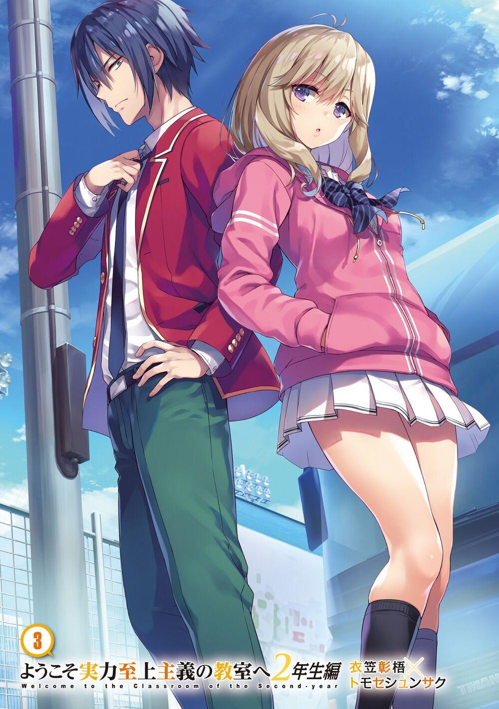
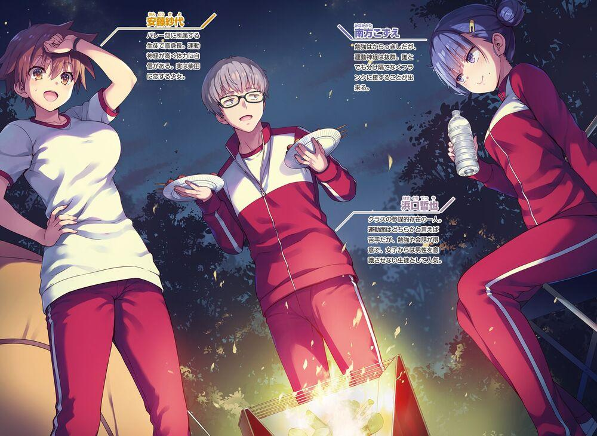
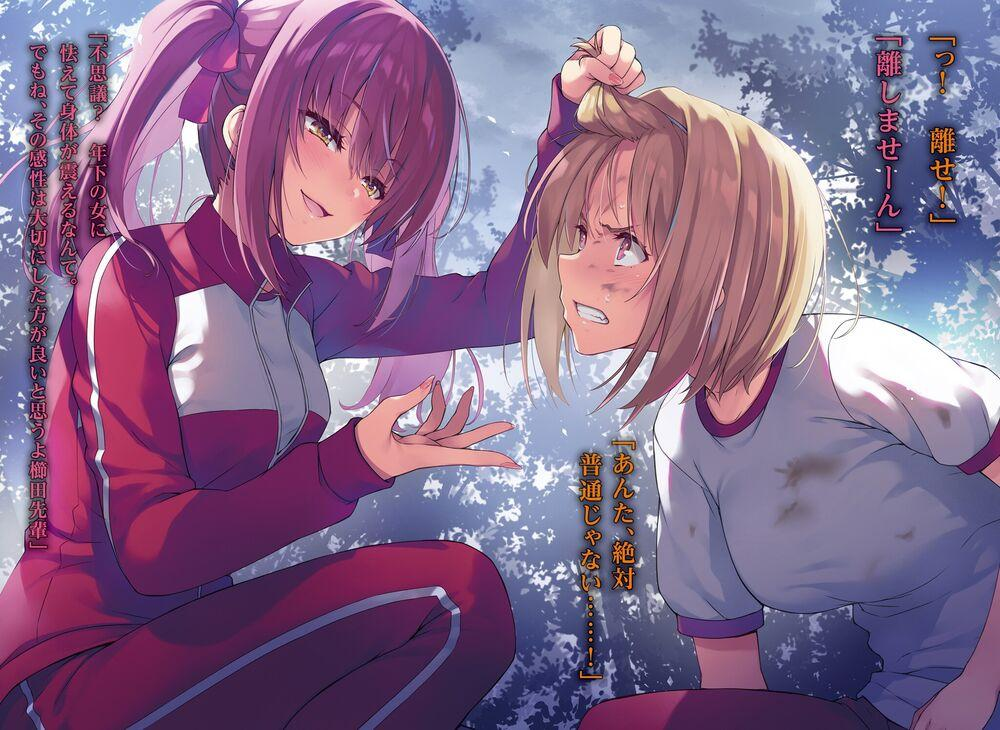
GLADHEIM
TRANSLATIONS
Youkoso Jitsuryoku Shijou Shugi no Kyoushitsu e - Segundo Año Volumen 3
EL MONÓLOGO DE NANASE TSUBASA
Todavía puedo recordar vívidamente la conmoción que sentí aquel día.
De la cruel realidad que se me presentó de improviso.
La luz del sol de la tarde brillando en todo el viejo apartamento.
Una larga y gran sombra que se balanceaba lentamente de un lado a otro, como el péndulo de un reloj de pared.
A pesar de mirarla fijamente, no podía entender nada.
Esa cálida mano que acariciaba mi cabeza.
Esa suave sonrisa que sanaba mi alma.
Esa mirada sincera que me transmitía admiración.
Esa expresión silenciosa y vacía que me llevaba al borde de la desesperación.
Una persona fuerte y amable que trabajaba más que nadie, sin rendirse nunca.
De ninguna manera es justo que una persona así se quede para siempre sin
poder aferrarse a su sueño.
Por supuesto, soy muy consciente de que me estoy contradiciendo en este punto.
Pero no puedo perdonar.
Es difícil que uno luche mientras está cargado de sentimientos de culpa.
Por lo tanto, afirman su legitimidad y luchan bajo la bandera de su propia clase de "justicia".
Y mientras tengan esa justicia... Mientras se aferren a esa misma convicción, pueden seguir luchando.
Pero yo, con mi frágil corazón, simplemente no puedo apoyar esa "justicia".
Y por eso, 『Yo』 Lo haré.
Así... puedo conservar la voluntad de derrotar a Ayanokouji Kiyotaka de verdad.
Para enviarlo de vuelta al lugar donde debe estar.
Porque, si no lo hago, seguramente habrá una segunda o incluso tercera víctima que le siga.
Y sólo eso debe evitarse, cueste lo que cueste.
Ayanokouji Kiyotaka está frente a mí, con sus ojos fijos en mi dirección.
Si hay un lugar o un momento en el que pueda acabar con todo esto─ Es aquí mismo. Ahora mismo.
Y entonces, podré pasar por fin al siguiente paso.
Después de todo, mi verdadero objetivo está mucho más allá de derrotarlo.
Nota del traductor al inglés: De aquí en adelante, usaré 『Yo』『Soy』『Mi』
y otros términos similares para referirme a cuando Nanase use 'boku' en lugar de su habitual 'watashi'. Será mucho más natural leerlo así, y no necesitaré dejar notas de traducción cada vez que lo haga de aquí en adelante. Si alguna vez me ves usando estos corchetes alrededor de uno de esos términos, es para indicar que está hablando con boku. Sólo un aviso.
DIFERENTES ESTRATEGIAS ANTE DIFERENTES PERSONAS
20 de julio. Una extensa isla desierta con un verano eterno. Un océano inmenso y cristalino bajo un cielo alto y azul.
Se decidió que allí pasarían los estudiantes las próximas dos semanas.
En una noche sin nubes, la visión de las estrellas que poblaban el cielo sería suficiente para dejarlo a uno sin aliento.
Charlar con amigos, sentarse hombro con hombro con esa persona especial que siempre tienes en mente.
Sentados alrededor de una hoguera, bailando, divirtiéndose; una página sacada directamente del libro de la juventud.
Ante estas fantasías juveniles, uno podría estar tentado a pensar que se trata del comienzo de unas grandes vacaciones de verano envidiadas por todos.
Sin embargo, para los estudiantes de la Preparatoria de Educación Avanzada, esta isla deshabitada será el lugar de un examen importante.
—Esta es una isla mucho más grande que la anterior, tal como dijo Mashima-sensei que sería.
Hirata Yousuke habló a mi lado.
Efectivamente, en términos de tamaño, esta isla es considerablemente más grande que aquella a la que fuimos hace un año.
Además, en consecuencia, el examen que se celebrará en ella también se ampliará.
—Sólo tendremos que permanecer allí dos semanas, pero algunos
estudiantes podrían tener que marcharse en algún momento.
—Sí, creo que hay muchas posibilidades de que acabe ocurriendo algo inesperado. Asegurar el agua será nuestra primera prioridad.
Podíamos sentir el calor y la humedad incluso desde el barco.
El calor intenso del sol de verano abrasaba las playas de arena de la isla.
Ese día, ya avanzado el mes de julio, se registraron temperaturas de casi 40
grados centígrados. Las preocupaciones de Yousuke eran acertadas; tendríamos que evitar ser negligentes y mantenernos precavidos frente a la insolación y la deshidratación.
A medida que el barco se acercaba a la isla, el alcance total de la situación en cuestión comenzó a ser cada vez más claro.
—¿Me pregunto si la gente solía vivir aquí?
—Tal vez.
Poco a poco fue apareciendo un puerto bien atendido, que desprendía un aura completamente diferente a la del resto de la isla.
En lugar de rodear el perímetro de la isla, el barco se dirigía directamente a uno de los puertos.
La cuenta regresiva hasta el comienzo del examen especial se acercaba. A pesar de su expresión tranquila, las manos de Yousuke se aferraban a la barandilla de la cubierta. En el transcurso de estas dos próximas semanas, todo el alumnado sufriría cambios profundos. Las clases subirán y bajarán, ciertos estudiantes se enfrentarán a la expulsión, y nada de ello será inesperado en lo más mínimo. Sin duda, era muy posible que el próximo semestre nos encontráramos en un entorno completamente diferente. Y para Yousuke, que anhela la paz, eso resultaría muy poco deseable.
No sería extraño que, en consecuencia, hubiera reprimido inconscientemente su
fuerza en su interior.
Finalmente, se emitió un anuncio por todo el barco para que los estudiantes se prepararan para desembarcar.
—¿Te has decidido, Yousuke?
Mientras el peligro invadía la tranquilidad y la paz que se esforzaba por proteger, opté por plantearle una pregunta, con un tono fuerte y serio.
Aunque se sentía ansioso, Yousuke fijó su mirada en la mía y asintió con la cabeza una sola vez.
—Me esforzaré al máximo para no tener remordimientos. Es lo único que puedo hacer por la clase.
No era que quisiera que alguien fuera expulsado. En absoluto.
Es sólo que, simplemente, no había manera de que nuestra clase pudiera evitar tener alguna baja esta vez.
Así que, con eso en mente, él y yo nos pusimos en marcha para dejar la cubierta.
PARTE 1
El 19 de julio, el día antes de desembarcar en la isla. 12:36 PM.
El Saint Venus, un transatlántico de lujo de 12 pisos, avanzaba hacia el sur-suroeste sobre el mar.
En la relativamente impopular cubierta de popa del barco, mi novia, Karuizawa Kei, me hizo una señal con la mano.
Tras asegurarnos de que no había nadie más, nos pusimos uno al lado del otro y contemplamos el mar.
—Qué vista tan increíble, ¿eh?
La iluminación del sol sobre la superficie del agua la hacía brillar como una joya incrustada.
Kei miró con cariño el océano, con una sensación de romanticismo encerrada en su mirada.
—¿No lo viste ya el año pasado?
—Quiero decir, vi un poco, pero la vista no era tan apetecible como pasar el rato con mis amigos a bordo del barco y todo eso.
Me confió, ligeramente avergonzada.
Es comprensible. Para muchos estudiantes, aquella era su primera vez a bordo de un transatlántico de lujo.
En lugar de sentarse y contemplar el paisaje, es natural querer estar con los amigos y explorar el barco.
El barco en el que estábamos este año, el Saint Venus, se dice que es el tercer barco más grande en el océano registrado en Japón, con una capacidad de transporte de más de 700 pasajeros.
Empezando por la recepción en el vestíbulo de la 5ª planta, las plantas superiores estaban equipadas con una sala de cine, piscina, gimnasio, cafeterías, restaurantes, un baño público con vistas panorámicas e incluso un rincón de juegos. En términos de calidad, las instalaciones eran tan buenas, si no mejores, que las del año pasado. Seguramente se necesitaría más de un día o dos para disfrutar de todas ellas.
No hace falta decir que también había un consultorio médico y una enfermería, así como un sistema para manejar cualquier circunstancia imprevista que pudiera ocurrir.
—De todos modos, ¿realmente está bien que estemos juntos en una cita al
aire libre como esta...?
Kei miró a su alrededor con inquietud, al parecer incapaz de calmar sus nervios.
—Aunque no puedo garantizar que nadie nos vea, deberíamos estar bien por el momento.
El comedor se abrió a las 11:00 de la mañana, y los de primer año fueron los primeros en almorzar. Comieron temprano debido a una sesión informativa que se celebró para ellos al mediodía. Los de segundo y tercer año, en cambio, empezaron a comer una hora más tarde. Por lo tanto, la mayoría de los estudiantes todavía deben estar disfrutando de un lujoso banquete en este momento.
Este periodo de tiempo antes de nuestra sesión informativa a la 1:00 PM es quizás uno de los pocos momentos en los que los dos podríamos estar a solas.
—Hay tantos estudiantes este año... ¿Quizá por eso quieren explicarnos las cosas antes de que lleguemos a la isla?
—Puede que sea en parte, pero lo más probable es que no sea la única razón.
Con algo más de una hora, la duración estimada de la sesión informativa era bastante más larga que el año pasado. Sin duda, no querían dar la explicación en la playa por consideración al calor abrasador. Si la escuela nos hiciera escuchar una larga explicación mientras estamos expuestos a la luz solar directa, inevitablemente un buen número de estudiantes se derrumbaría por un golpe de calor. Era una cuestión de seguridad y no de eficacia.
—Todavía no parece real...
—Bueno, no todos los días se tiene la oportunidad de viajar en un crucero como éste. Es comprensible que las cosas se sientan algo irreales.
Respondí con calma y objetividad, pero Kei simplemente suspiró exasperada.
—Eso no... Me refiero a que no parece real que salga contigo. Eres tan
inteligente y, sin embargo, no aciertas en este tipo de cosas, ¿eh?
Kei y yo empezamos a salir desde las vacaciones de primavera de este año.
Aunque ya habían pasado varios meses, todavía no habíamos tenido ninguna cita real juntos. Una pareja normal de preparatoria iría caminando de ida y vuelta a la escuela o saldría a pasear después de clases todos los días, pero debido al hecho de que estábamos ocultando nuestra relación, nuestras citas ocurrían con mucha menos frecuencia que otras parejas.
Incluso cuando los dos conseguíamos encontrar tiempo para estar juntos a solas, no teníamos más remedio que reunirnos en secreto de esta manera.
Es justo decir que las oportunidades de desarrollar nuestra relación son realmente escasas.
—¿Y tú, Kiyotaka? ¿Te parece real?
—Bueno, no sé. Yo diría que sí y que no.
—¿Qué diablos?
Que Kei y yo nos convertimos en novios es un hecho inamovible.
Sin embargo, todavía no existe ningún avance visible en nuestra relación.
—Es que nunca imaginé que los dos pudiéramos encontrarnos en secreto en el exterior de esta manera.
—Bueno, supongo.
Kei dejó escapar un suspiro mientras contemplaba el lejano horizonte.
—Dependiendo de lo que nos digan sobre el examen especial en la próxima sesión informativa, puede que haya algunas cosas que necesite que hagas por mí.
—De acuerdo. Pero sólo si es algo de lo que soy capaz.
Decirle esto fue mi principal motivo para llamarla aquí. Ahora bien, dado que tenemos libertad para usar nuestros teléfonos hasta el final de la jornada de hoy, habría sido más fácil transmitir los detalles necesarios por teléfono.
Esencialmente, no había necesidad de arriesgarme a encontrarnos así. Reunirse físicamente sólo porque somos novios es una experiencia realmente diferente e interesante.
Un rato después, se emitió un anuncio por toda la embarcación de que la sesión informativa de primer año había llegado a su fin.
—Parece que los de primer año ya terminaron. No podemos ir juntos, así que me iré primero.
Sabiendo que atraería sospechas si nos veían a los dos caminando juntos, Kei tomó la iniciativa y salió de la cubierta sola.
Poco después, llegó la hora de que los alumnos de segundo año cambiaran de sitio con los de primero y se reunieran en el cine.
Al entrar, nos informaron que no había asientos asignados, por lo que éramos libres de sentarnos donde quisiéramos.
Hubo quienes tomaron asientos al azar y quienes se sentaron junto a todos sus amigos más cercanos, pero los que más destacaron fueron los que se agruparon en sus grupos pequeños. Sin embargo, tenía todo el sentido del mundo. Al fin y al cabo, eran camaradas que iban a luchar juntos a lo largo de las dos próximas semanas. Por lo tanto, sería más eficaz que escucharan la sesión informativa en grupo para poder compartir sus ideas con los demás.
Como yo participaba solo, me abrí paso entre los distintos grupos y encontré un lugar para sentarme en un pequeño hueco entre ellos. Por supuesto, el asiento que elegí no estaba en la parte delantera, sino cerca del fondo, donde era menos llamativo.
—...Ugh. ¿Por qué demonios estás sentado aquí?
Como era de esperar, estos asientos serían muy codiciados por cualquier estudiante solitario con una mentalidad similar a la mía.
En consecuencia, la persona ocupando el asiento contiguo al mío no era otra que Ibuki Mio, de la clase 2-B.
—No te sentaste ahí a propósito, ¿verdad?
—De ninguna manera.
Ella y yo quedamos en el mismo lugar simplemente porque las dos seguimos el mismo patrón de pensamiento.
—Me voy a otro sitio, así que no te atrevas a seguirme, ¿entendido?
Se levantó y se alejó, incapaz de soportar la idea de estar a mi lado.
Aunque no tenía intención de detenerla, muchos de los asientos restantes ya habían empezado a llenarse.
Tanto a la izquierda como a la derecha, ya había grandes grupos de personas charlando distraídamente entre ellos por todo el cine.
Ibuki hizo una pausa, al darse cuenta también de esto.
Ya no quedaba ningún lugar al que pudiera escapar un estudiante solitario.
Como último recurso, buscó sentarse en el asiento más alejado de mí, pero momentos antes de que pudiera hacerlo, Kitou Hayato, de la clase 2-A, se sentó, quitándole la oportunidad.
Ibuki lo fulminó con la mirada, pero Kitou no le dio importancia y se limitó a cruzar los brazos.
En ese momento, ella tenía dos opciones: volver al asiento de al lado o ir a sentarse entre las masas.
Tras sopesar sus opciones, eligió a regañadientes volver a sentarse en su asiento original, obligada a escuchar la sesión informativa mientras estaba entre Kitou y yo.
Pero... por mucho que odiara sentarse aquí, parecía odiar aún más la idea de mezclarse con los grupos.
De lo contrario, a pesar de ser una chica, no se habría tomado la molestia de enfrentarse sola al examen especial.
En cualquier caso, decidí dejar de lado el asunto con Ibuki y centrarme en la sesión informativa, dirigiendo mi atención a lo que ocurría en la parte delantera del auditorio.
—Ahora bien, les explicaré las reglas para el examen especial de la isla deshabitada.
Al igual que el año pasado, el encargado de la explicación fue el profesor de la clase 2-A, Mashima-sensei. Se puso delante de la pantalla y empezó a hablar con el micrófono en la mano.
—A partir de mañana, su estancia en la isla durará las próximas dos semanas. La idea fundamental del examen es la misma que el año pasado, en el sentido de que se espera que vivan de forma autónoma durante su estadía en la isla. En el caso de que un estudiante no pueda continuar debido a una lesión o enfermedad, o que haya cometido una infracción grave de las normas, será retirado del examen de forma automática y forzada. Seguro que aún está fresco en su memoria el hecho de que debían formar grupos pequeños de hasta tres personas. Sin embargo, una vez que el examen esté en marcha y se cumpla una determinada condición, se levantará la restricción de tamaño y se permitirá que los grupos pequeños trabajen juntos, elevando el tamaño máximo del grupo a seis. Además, en el caso de que todos los miembros de un grupo determinado se retiren, los estudiantes serán descalificados y, en consecuencia, se finalizará su puntuación.
Los alumnos de los cinco grupos peor clasificados de la escuela se verán expuestos a la expulsión. Sin embargo, la expulsión puede quedar anulada si se paga un número fijo de puntos privados. Un grupo de una persona tendrá que pagar seis millones de puntos, mientras que un grupo de tres personas sólo tendrá que pagar dos millones por persona. Esencialmente, cuantas más personas tenga un grupo, menos tendrá que pagar cada miembro. Dicho esto, sólo se salvarán los que puedan pagar sus cuotas. Dado que los estudiantes con mucho dinero son, inevitablemente, pocos, este sistema no es tan relevante para la mayoría de los estudiantes. Además, a los tres últimos grupos se les descontará un gran número de puntos de clase de cada miembro del grupo. Así que no sólo se expulsará a los estudiantes en cuestión, sino que también dejarán una gran carga para el resto de sus compañeros. A estas alturas, la necesidad imperiosa de evitar los cinco últimos puestos de la clasificación ya había tomado prioridad sobre cualquier otra cosa para todos los grupos.
—Aunque sé que todos están entusiasmados por pasar las próximas dos semanas en la isla, todavía hay algunas cosas cruciales que necesitan saber primero.
Efectivamente. Hasta ahora no nos habían dicho cómo se determinarían nuestras "clasificaciones".
—Cada grupo luchará para ganar 'puntos' para determinar su clasificación.
Con esto, la enorme pantalla del teatro se encendió, atrayendo la atención de los casi 160 estudiantes presentes.
Resumen del Examen Especial de la Isla Deshabitada
・Durante dos semanas, los grupos competirán entre sí para ganar puntos en un examen de supervivencia.
・En caso de que todos los miembros de un grupo se retiren durante el examen, el grupo en cuestión será inmediatamente descalificado.
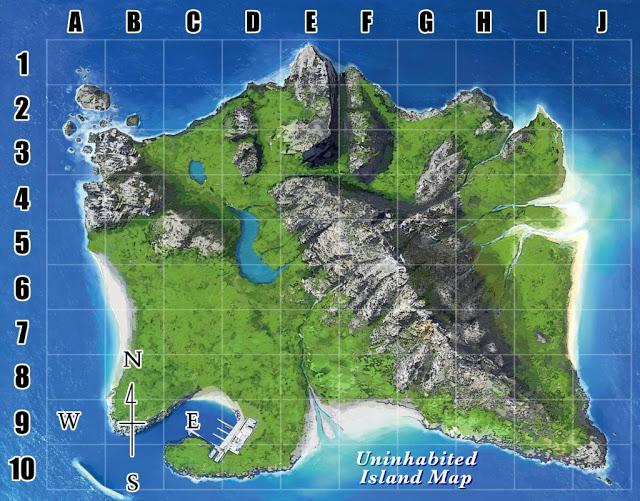
(Todos los puntos ganados antes de la descalificación serán invalidados y la clasificación del grupo será finalizada inmediatamente).
En otras palabras, no importa cuántos puntos consiga un grupo, si todos los miembros del grupo terminan por retirarse, todos sus esfuerzos habrán sido en vano. Aunque ganar puntos es, sin duda, importante, quedarse hasta el final del examen tiene una prioridad mucho mayor.
Junto con la visión general, se mostró un mapa de la isla deshabitada en la que desembarcaríamos mañana. Había líneas horizontales y verticales dibujadas sobre la isla, como una cuadrícula, dividiéndola uniformemente en celdas.
—Hay dos formas de conseguir puntos. La primera es a través de la regla
de "Movimiento Básico", por la que se les indicará que vayan a una de las 100
casillas del mapa en intervalos especificados. Por ejemplo, digamos que su posición inicial es D9, donde se encuentra el puerto, y el área C8 ha sido designada como su destino. Los tres primeros grupos que lleguen a la zona C8
recibirán una "bonificación de Madrugador": el primero recibirá 10 puntos, el segundo 5 puntos y el tercero 3 puntos. Además, todos los que lleguen a la zona dentro del intervalo fijado recibirán una "Bonificación de llegada" individual de 1
punto. Por lo tanto, si un grupo de tres personas llegara primero, recibirá la Bonificación de Madrugador de 10 puntos, además de los 3 puntos que obtendrá por la Bonificación de Llegada, para un total acumulado de 13 puntos. En el caso de un grupo de dos personas, sólo recibirán 2 puntos por la bonificación de llegada, para un total de 12.
Es más que posible que algunos grupos hagan algo imprudente en su búsqueda del primer puesto. Sin embargo, la competición tendrá lugar en una isla deshabitada, no en el centro de una ciudad. Es seguro suponer que los accidentados caminos de la isla presentarán muchos obstáculos, por lo que hay muchas posibilidades de que algo inesperado pueda causar lesiones.
Independientemente de la rapidez con la que un grupo pueda acumular puntos, será descalificado inmediatamente una vez que todo el grupo se retire. Sus puntos se perderán y todos sus esfuerzos se irán por el caño.
—El área designada para la regla de movimiento básico cambiará tres veces al día el primer y el último día del examen, en los doce días restantes, sin embargo, cambiará cuatro veces al día. Los intervalos de tiempo previstos serán de 7:00 a 9:00 y de 9:00 a 11:00. Luego, tras un descanso de dos horas, de 13:00 a 15:00 y de 15:00 a 17:00.
Ganaremos puntos si llegamos a las zonas designadas en los periodos fijos de dos horas. Dado que el último intervalo termina a las 5:00 PM, la escuela está siendo considerada con los riesgos que conlleva el hecho de que nos desplacemos después de que haya oscurecido.
—Por favor, tengan también en cuenta que, si un grupo no llega a una
zona designada tres veces seguidas, perderá un punto. Además, si ocurre
cuatro veces seguidas, esta penalización se ampliará a dos puntos y aumentará
a tres puntos por la quinta. A medida que el número de fallos consecutivos siga
aumentando, también lo hará el contador de penalización. Sin embargo, si el grupo rompe la cadena, el contador volverá a ser 0, y la penalización se reiniciará desde 1 punto si el grupo vuelve a fallar tres veces seguidas en las zonas designadas.
Esto significa que, dependiendo de la situación, los grupos pueden agotar su resistencia repetidamente y no llegar a la zona designada a tiempo, perdiendo constantemente puntos en el proceso.
Por el contrario, supongamos que un grupo trata de superar el examen acampando en la zona de salida y sólo se dedica a ganar puntos en las zonas designadas que aparecen en las cercanías... Una estrategia como ésta será prácticamente inútil. En ese caso, si ningún otro grupo termina retirándose, se sumirá en el fondo de la clasificación, sometiéndose a la expulsión y a la penalización de sus clases.
—Cuando se trata de que un grupo no llegue a una zona designada, estará a salvo siempre que un solo miembro de su grupo consiga llegar a tiempo. Por lo tanto, no es necesario que todos los miembros de un grupo lleguen a una zona determinada. Por supuesto, la bonificación por llegada seguirá concediéndose en función del número de personas que lo hagan.
Las palabras de Mashima-sensei causaron un poco de revuelo entre los estudiantes.
Por ejemplo, si sólo una persona de un grupo de tres alcanza una zona designada, el grupo en su conjunto obtendría una bonificación de llegada de un punto y evitaría la penalización. En resumen, el simple hecho de tener más personas pone a un grupo en una ventaja abrumadora a la hora de ganar puntos.
Aunque llegaran a las zonas al mismo ritmo, los que participaran solos o en grupos de dos se verían rezagados, les gustara o no.
—Sin embargo, hay una advertencia al respecto. La bonificación por madrugador que se otorga a los tres primeros grupos sólo se concederá si nadie
del grupo se ha retirado y todos sus miembros llegan a la zona. Además, la hora
de llegada del último miembro del grupo se utilizará para decidir la clasificación de la bonificación.
Esto parece una regla razonable. Si sólo se necesitara una persona para conseguir la bonificación por madrugador, permitiría a los grupos jugar con el sistema enviando sólo a sus miembros físicamente capaces a las zonas.
También permitiría a los grupos dividirse y dispersar a sus miembros por la isla para cubrir más terreno y esperar a que aparezcan nuevas zonas. Si algo así ocurriera, los grupos con menos miembros no tendrán ninguna posibilidad.
Gracias a esta advertencia, los grupos individuales tienen una oportunidad de salir adelante, aunque sea pequeña.
Pero, incluso con esta regla, no se podía refutar el hecho de que tener más gente es mucho más ventajoso.
—De las 100 zonas del mapa, algunas son claramente inaccesibles. Por ejemplo, B1, C1, F10 y G10 se encuentran todas dentro del océano, y como tales, estas áreas nunca serán elegidas para la regla de Movimiento Básico.
Mientras Mashima-sensei hablaba, varias de las zonas inalcanzables del mapa en pantalla fueron sombreadas en rojo y descartadas.
—También hay ciertas restricciones que ayudan a decidir cómo se elegirán las áreas designadas. Tres de cada cuatro veces al día, la siguiente área designada estará dentro de dos celdas laterales o una celda en diagonal del área designada previamente.
Con esto en mente, viajar entre las diferentes áreas dentro del límite de tiempo no se veía como algo difícil.
Dado que se tendrán dos horas para llegar a la siguiente zona, un grupo puede hacer el viaje razonablemente y con tiempo de sobra.
Sin embargo, la zona designada cambiaría cuatro veces al día, no tres. En otras
palabras, habrá un intervalo en el que no se aplicará la restricción.
—Sin embargo, hay una excepción a esta restricción. De las cuatro nuevas selecciones de área que se producen al día, una cambiará a un lugar completamente aleatorio y desconocido. Por ejemplo, es posible que la zona designada cambie aleatoriamente de D2 a D9. Eso sí, esta designación aleatoria nunca ocurrirá dos veces seguidas. Lo mismo ocurre si la designación aleatoria se produce durante el cuarto y último intervalo de un día determinado, ya que entonces no se elegirá para el primer intervalo del día siguiente.
Aunque sólo era una vez al día, el hecho de que se desconociera la próxima ubicación de la zona designada es un gran problema.
Moverse desde la parte más septentrional de la isla hasta la parte más meridional simplemente no sería posible en dos horas.
Por mucha energía que tuviera un grupo, se verá obligado a renunciar a intentar llegar a tiempo.
Si un grupo trata de llegar a una zona lejana, puede agotar su energía o sufrir algún tipo de accidente que le impida viajar durante un tiempo. Por lo tanto, es posible que no lleguen a tiempo a la siguiente zona designada, y que incluso no lleguen a la siguiente zona. Es lógico que no sólo no lleguen a tres zonas seguidas, sino que posiblemente no lleguen a las nuevas zonas que se designen más adelante.
En una situación así, olvídate de conseguir más puntos. Mantener los que se tienen en la mano ya será bastante difícil.
Es una posibilidad realmente aterradora que todos debemos tener en cuenta.
¿Sería mejor avanzar de forma temeraria y partir hacia cada nueva zona designada, o tratar de evitar los riesgos y moverse de forma conservadora, totalmente preparados para no llegar a tiempo de vez en cuando? En cualquier caso, los grupos tendrán que ser flexibles y adaptar sus planes en función de las capacidades de sus miembros.
—Además, aunque la misma zona nunca será designada dos veces
seguidas, es perfectamente posible que se designe D2, luego D3, y luego D2 de
nuevo. Además, si un grupo ya está presente en una zona cuando se designa, recibirá la bonificación de llegada de un punto por cada miembro presente, pero no podrá optar a la bonificación de Madrugador. Por favor, ténganlo en cuenta.
En resumen, si un grupo tiene como objetivo conseguir la bonificación por madrugador, desplazarse innecesariamente podría ser arriesgado.
Para conseguir la siguiente bonificación de Madrugador, al grupo sólo le quedan dos opciones: esperar dentro de la zona previamente designada, o moverse fuera del rango al que se restringiría la siguiente zona. Sin embargo, en este último caso, seguirían corriendo el riesgo de acabar en una zona designada al azar.
—Eso debería ser todo lo que necesitan saber sobre la regla de movimiento básico. Se mostrará un resumen en la pantalla.
Resumen - La regla del movimiento básico
・ Se anunciará una nueva área designada cuatro veces al día. (El primer y último día del examen, sólo habrá tres sin designación al azar).
・Los intervalos objetivo son de 7:00 AM a 9:00 AM, de 9:00 AM a 11:00 AM, de 1:00 PM a 3:00 PM, y de 3:00 PM a 5:00 PM.
・Tres veces al día, el lugar de la siguiente zona designada estará dentro de dos celdas lateralmente o una celda diagonalmente de la zona anterior.
・Una vez al día, la siguiente área designada será seleccionada al azar de entre todas las áreas accesibles del mapa. (La designación aleatoria nunca ocurrirá dos veces seguidas).
・ Los tres primeros grupos que lleguen a una zona designada recibirán una
bonificación por Madrugador en función de su orden de llegada, obteniendo el
primero 10 puntos, el segundo 5 puntos y el tercero 3 puntos.
※El momento en que todos los miembros de un grupo hayan llegado a la zona se utilizará para determinar la clasificación de la bonificación.
・ Todos los que lleguen a la zona designada dentro del intervalo de tiempo recibirán una bonificación de llegada de un punto.
・ En caso de que un grupo ya esté presente en la siguiente zona designada cuando sea seleccionado, recibirá la Bonificación de Llegada de un punto, pero no podrá optar a la Bonificación de Madrugador.
・ Los grupos serán penalizados si no llegan a la zona designada tres veces seguidas. Se seguirán descontando puntos en función del número de fallos consecutivos. (Sin embargo, una vez que el grupo rompa la cadena de fallos, el contador de penalizaciones se reiniciará a cero).
El resumen mostrado en la pantalla fue tal y como Mashima-sensei explicó.
—Antes de que empiece a explicar la segunda forma de conseguir puntos, hay algo que me gustaría que todos ustedes vieran.
En ese momento, Mashima-sensei miró hacia Hoshinomiya-sensei, la profesora de la clase 2-C, que subió al escenario y le entregó algo.
Luego lo levantó en el aire para mostrarnos lo que parecía ser un reloj de pulsera digital.
—A partir de mañana, todos los alumnos deberán llevar uno de estos relojes hasta el final del examen. También se les proporcionará una tableta que se sincroniza con el reloj, pero llegaré a eso un poco más tarde.
En la pantalla apareció una imagen ampliada del reloj y detalles sobre sus funciones.
—Su reloj será una herramienta indispensable para ustedes, no sólo para
dar la hora sino también para ganar puntos. Esto se debe a que el reloj es el que
calculará todas las bonificaciones que proporciona la regla del Movimiento Básico. Además, también viene equipado con una variedad de características útiles, como notificaciones para cuando entren en un área designada dentro del intervalo. Como a veces el reloj puede ser propenso a un ligero desfase, es posible que sus puntos no se concedan si llegan en el último momento o abandonan la zona inmediatamente después de llegar a ella, así que hay que tenerlo en cuenta. Asegúrense de comprobar la notificación para ver si los puntos se concedieron correctamente o no.
En definitiva, nada será posible sin el reloj.
—Además, la escuela controlará continuamente la temperatura corporal del usuario, su ritmo cardíaco, su presión arterial, su nivel de oxígeno en la sangre, su ciclo de sueño, sus niveles de estrés, etc. Si alguno de ellos supera el nivel prescrito, emitirá una "Alerta Preventiva".
Mashima-sensei entregó temporalmente el micrófono a Hoshinomiya-sensei y se puso el reloj. No se veía que alguien pudiera ponérselo solo, porque un miembro del personal tuvo que salir y usar una herramienta especial para sujetarlo a la muñeca.
En poco tiempo, Mashima-sensei terminó de ponerse el reloj y las diferentes mediciones que mencionó antes, como el ritmo cardíaco, la presión arterial y la temperatura corporal, se mostraron en tiempo real en la pantalla.
Por lo que vemos, la escuela es capaz de monitorear la salud y el bienestar de todos los estudiantes al mismo tiempo.
—Les daré un ejemplo. Esto es hipotético, pero digamos que mi temperatura corporal supera los 38 grados centígrados.
Poco después de decir eso, una alerta aguda comenzó a emitirse desde el reloj.
—Esta es la Alerta Preventiva. Como el sonido sólo pretende ser una
advertencia, está configurado automáticamente para dejar de sonar después de
cinco segundos.
Después de cinco segundos, el ruido agudo se detuvo.
—Sin embargo, si alguna de las mediciones continúa más allá del nivel prescrito, la Alerta Preventiva volverá a sonar diez minutos después.
A modo de prueba, sonó la segunda Alerta Preventiva, con un sonido un poco más fuerte que la primera.
Una vez más, la alerta se detuvo después de cinco segundos.
— Esa fue la segunda Alerta Preventiva. Si el problema persiste durante otros cinco minutos, entonces─
El sonido estridente de la tercera alerta resonó por toda la sala. Fue fácilmente el ruido más fuerte que salió del reloj hasta ahora.
—En lugar de una 'Alerta Preventiva', esta última alerta se conoce como
'Alerta de Emergencia'. En caso de que esto ocurra, tendrán 24 horas para someterse a una revisión médica en la zona de salida. Si no hacen caso a la emergencia o no se presentan a tiempo, serán penalizados con la retirada u otros castigos potenciales dependiendo de la situación. A diferencia de las dos alertas anteriores, la Alerta de Emergencia sonará continuamente a menos que la desactives manualmente. Si suena durante más de cinco minutos, un miembro del profesorado y el personal médico acudirán rápidamente a su ubicación basándose en el GPS del reloj.
La idea es que la ayuda esté en camino en caso de que un estudiante esté gravemente herido, inmovilizado o inconsciente. Naturalmente, es muy importante que la alerta no suene a menos que sea absolutamente necesario.
—Como habrán visto antes, se necesitan herramientas especiales para abrochar y desabrochar el reloj de la muñeca para evitar prácticas deshonestas durante el examen. Con la forma en que está configurado, el reloj dejará de contabilizar los puntos automáticamente si se retira a la fuerza de cualquier
forma o manera.
Básicamente, esto evita que los grupos hagan trampa cuando uno de sus miembros se enferma o algo así. Por ejemplo, impedirá que alguien se quite el reloj y que otra persona sume puntos en su lugar.
—Además, si su reloj se daña físicamente por un fuerte impacto o funciona mal por alguna razón mientras está en condiciones normales de funcionamiento, la función de puntuación se desactivará. Si esto ocurre, tendrán que volver a la zona de salida para que les cambien el reloj por uno nuevo.
Aunque no se te penaliza si el reloj se rompe o funciona mal, sigue siendo bastante doloroso que tengas que quedarte sin ganar puntos. Además de eso, también es desagradable que tengas que volver a la zona de salida para que te lo cambien.
—Muy bien, ahora que todos ustedes tienen una comprensión del reloj, vamos a revisar la regla de Movimiento Básico por un momento. Durante el examen, no todos los grupos serán dirigidos a las mismas áreas designadas.
Cada reloj viene preprogramado con una de las doce "Tablas" diferentes. Las tablas se explican mejor con un ejemplo, digamos que este reloj que tengo aquí utiliza la Tabla A, y las tres primeras zonas designadas que me dan son D8, D7
y C6. Por otro lado, digamos que Hoshinomiya-sensei tiene un reloj que utiliza la Tabla B. Las tres primeras áreas que se le concederán serán completamente diferentes, como D10, E9 y F8 o algo así. En otras palabras, desde el primer día del examen hasta el último, cada una de las áreas designadas se ha decidido internamente desde antes de que empezara el examen.
Esto es algo que me había estado preguntando desde que escuché por primera vez el término "área designada".
Si todo el examen consistiera en que todos los estudiantes se dirigieran al mismo destino una y otra vez, se convertiría en nada más que una carrera para ver qué grupo puede llegar más rápido a la misma zona.
Sin embargo, con doce circuitos diferentes, las cosas son muy diferentes.
Aunque los de la Tabla A siguen compitiendo con el resto de la Tabla A, sus próximas zonas designadas a veces se sobrepondrán a las de la Tabla B o C.
Por lo tanto, siempre se producirán varias competiciones diferentes al mismo tiempo.
Después de tres días, los grupos estarán dispersos por toda la isla deshabitada.
—No hace falta decir que cada miembro de un grupo será asignado a la misma tabla. En el caso de que se forme un grupo grande durante el examen, cualquier nuevo miembro será reasignado a la tabla del grupo principal, así que no debería haber ningún problema, aunque los grupos tengan originalmente dos tablas diferentes.
Desde otro punto de vista, la existencia de doce tablas distintas hace que sea prácticamente imposible ganar puntos a través de la regla del Movimiento Básico trabajando conjuntamente con grupos asignados a otra tabla.
Me miré el brazo izquierdo y me imaginé un reloj sujeto a él. Si el reloj que me tocara hubiera sido manipulado, Tsukishiro podría hacer que se rompiera o funcionara mal para interferir en mi capacidad de conseguir puntos. Eso sí, no podría hacerlo muchas veces.
Si ocurriera una o dos veces, podría pasar como una coincidencia. Pero si seguía ocurriendo tres o cuatro veces sin ninguna razón visible de por qué, sin duda levantaría sospechas. Me pareció que, si ocurría, sólo sería una o dos veces como máximo. Aunque tendría que renunciar a competir por el primer puesto, debería poder evitar hundirme hasta el fondo siempre que consiguiera acumular un buen número de puntos.
Así que, aunque definitivamente debo tenerlo en cuenta, no parece que tenga que estar especialmente atento a ello.
Resumen del reloj
La escuela supervisará continuamente la salud y el bienestar de todos los estudiantes a través de un reloj especialmente proporcionado.
・ Si se detecta cualquier anormalidad física digital en el reloj, se desactivarán todas las transmisiones de puntos y se requerirá un chequeo.
・Proporciona al usuario alertas sobre cualquier anomalía de salud. Una Alerta Preventiva puede ser ignorada, pero en el caso de una Alerta de Emergencia, el usuario debe regresar al área de partida. (Si no regresa al área de partida en 24
horas puede ser eliminado).
・El reloj viene preprogramado con una de doce Tablas diferentes. El orden en que se asignan las áreas designadas difiere entre cada Tabla.
・Si una Alerta de Emergencia permanece por lo menos cinco minutos sin ser desactivada por el usuario, un equipo médico será enviado a la ubicación del usuario. (En caso de una emergencia grave, como un paro cardíaco o una fuerte caída de la presión arterial, el equipo acudirá inmediatamente).
Ganar puntos con la regla de Movimiento Básico será posible para prácticamente cualquier persona con buena salud, pero las habilidades físicas como la velocidad y la resistencia influirán enormemente en quién acabará obteniendo las valiosas bonificaciones de Madrugador. En ese sentido, los estudiantes que no confían en sus habilidades físicas tendrán pocas posibilidades de salir victoriosos.
En otras palabras, la segunda forma de ganar puntos tiene que ver con el uso de la mente por parte de los estudiantes.
—A continuación, voy a explicar la segunda forma de ganar puntos. En pocas palabras, se pueden ganar puntos completando las "Tareas" establecidas en toda la isla. Estas Tareas se llevarán a cabo en una variedad de lugares
diferentes y pueden tener lugar en cualquier momento entre las 7:00 AM y las
5:00 PM. Estarán repartidas entre las 100 casillas diferentes del mapa, pero
puede aparecer más de una Tarea dentro de la misma zona. Empecemos con algunos ejemplos.
En la pantalla aparece un ejemplo de Tarea.
Se veía como un punto rojo que aparecía en algún lugar del área C3.
—Estos puntos rojos marcan la ubicación de una Tarea, y sólo se pueden ver en la tableta que se les proporciona. Como estudiantes, no pueden predecir cuándo o dónde aparecerá uno de estos puntos rojos identificadores, ni pueden predecir qué tipo de Tarea aparecerá después. Sólo lo sabrán con seguridad cuando vean uno en su tableta.
Tarea: 『Examen de matemáticas』- Clasificación: Habilidad Académica
Plazo de participación: Los grupos deben inscribirse dentro de una hora de la aparición de la Tarea.
Número de participantes por grupo: Uno.
Límite de inscripción: Se cerrará la inscripción cuando se hayan inscrito un total de diez grupos.
Condición para ganar: Los participantes se clasificarán en función de la cantidad de puntos que puedan conseguir en un periodo de tiempo estipulado. (El tema de la prueba variará en función del curso escolar del participante, pero el nivel de dificultad general se ajustará al mismo estándar).
Recompensas: 1º puesto - 5 puntos, 2º puesto - 3 puntos, 3º puesto - 1 punto.
Además, todos los premiados recibirán un día de provisiones.
Tarea:『 Lanzamiento de bala 』- Clasificación: Habilidad física
Plazo de participación: Los grupos deben inscribirse dentro de los 30 minutos de la aparición de la Tarea.
Número de participantes por grupo: Tres. (Los grupos con cuatro o más miembros deben seleccionar un máximo de tres para participar).
Límite de inscripción: Se cerrará la inscripción cuando se hayan inscrito un total de seis grupos.
Condición para ganar: Los participantes se clasificarán en función de la distancia total lanzada por los tres miembros del grupo.
Recompensas: Primer puesto - 10 puntos, segundo puesto - 5 puntos, tercer puesto - 3 puntos. Todos los participantes recibirán un premio gratuito de su elección.
Tarea:『Pesca』- Clasificación: Otros
Plazo de participación: Los grupos deben inscribirse en las dos horas siguientes a la aparición de la Tarea.
Número de participantes por grupo: Dos. (Los grupos con tres o más miembros deben seleccionar como máximo dos para participar).
Límite de inscripción: Se cerrará la inscripción cuando se hayan inscrito un total de ocho grupos.
Condición para ganar: Ganará el participante que capture el pez más grande en una hora.
Recompensas: 1er puesto - 15 puntos.
—Las tareas se dividirán en tres categorías generales, con un 40%
centrado en la capacidad académica, un 30% en la capacidad física y un 30% en
otros. Las tareas que entran en esta categoría de Otros son bastante variadas, ya que algunas requieren habilidades más finas y otras se basan simplemente en la suerte, así que intenten tenerlo en cuenta de cara al futuro. Por supuesto, también es posible que la misma tarea aparezca más de una vez.
Aunque tenía curiosidad por lo que la escuela iba a idear para el segundo método, nunca pensé que fueran a llegar tan lejos con él.
Con esto, las habilidades no físicas también jugarían un papel importante en el resultado del examen.
Las proporciones que establecieron también estaban perfectamente equilibradas, con sólo un 30% de todas las tareas clasificadas en la habilidad física.
—El profesorado de la escuela o el personal encargado de los exámenes estará siempre a la espera en el lugar de la Tarea. Si quieren participar, les ayudarán a finalizar su inscripción con el reloj y la tableta.
Tanto si se trata del Movimiento Básico como de las Tareas, la idea de que el examen es más difícil para los grupos con menos personas parece aplicarse en todos los casos.
—En sus tabletas, podrán ver dónde se realizará la Tarea junto con toda la información que pueden ver aquí arriba en la pantalla ahora mismo. Además, no olviden que cualquier información sobre una Tarea determinada sólo desaparecerá de sus tabletas una vez que la Tarea haya concluido.
En pocas palabras, existe la posibilidad de que una tarea siga apareciendo en nuestras tabletas aunque ya esté en curso. O, en otras palabras, es posible pasar por todo el esfuerzo de viajar a la ubicación de una Tarea, sólo para descubrir que llegaste demasiado tarde y ya no hay lugar para participar.
—A partir del cuarto día del examen, algunas Tareas empezarán a ofrecer una recompensa diferente: la posibilidad de aumentar el tamaño máximo de tu
grupo. Si tu grupo queda en primer lugar, desbloquearás tres plazas adicionales.
El segundo puesto desbloqueará dos, y el tercero, una. Para que un grupo de un
solo miembro aumente su tamaño a seis, deberá obtener el primer y el segundo
puesto al menos una vez cada uno. Un grupo de tres personas, en cambio, sólo tendría que conseguir el primer puesto una sola vez. Una vez que un grupo grande haya alcanzado el límite de tamaño de 6 personas, ya no podrá inscribirse en estas Tareas.
Aunque ya habíamos escuchado el término "grupo grande" en innumerables ocasiones, según parece, teníamos que ganarnos el derecho a formarlos a través de las Tareas. Aunque no se ganaban puntos ni provisiones por ganar, aumentar el número de personas en tu grupo es una ventaja.
—Si se consiguen satisfacer las condiciones necesarias para aumentar el tamaño máximo de su grupo, basta con iniciar una solicitud de "Enlace Principal"
con su reloj cuando quieran incorporar a otro grupo. Después, el otro grupo sólo tiene que iniciar una solicitud de "Enlace de Asociación" con su reloj y poner los dos relojes en contacto físico para comenzar con el proceso de aprobación del enlace. Debería llevar unos diez segundos, durante los cuales todavía se podrá cancelar.
Así que a esto se refería Mashima-sensei cuando dijo que cualquier nuevo miembro sería reasignado a la tabla del grupo principal.
—Dicho esto, las tareas que conceden permiso para aumentar el tamaño de su grupo serán limitadas en número. Lo más probable es que sólo entre un 20 y un 30% de todos los grupos obtengan el derecho a hacerlo. Utilizando estos dos métodos, competirán por puntos, cuyos resultados se reflejarán en su clasificación general. Ah, y me olvidé de mencionarlo, pero cuando dos grupos se vinculen, sus puntos se promediarán.
Aunque sería posible ayudar a los alumnos con dificultades incorporándolos a tu grupo, asumirías un riesgo proporcional al hacerlo. Si un grupo de una persona tiene 30 puntos y un grupo de cinco personas tiene 120 puntos, su media después de unirse sería de 75 puntos. El promedio será siempre más bajo mientras los dos grupos no tengan el mismo número de puntos al entrar en el acuerdo.
Sin embargo, como el aumento del tamaño máximo de su grupo se traduciría en una ventaja abrumadora a medida que avance el examen, una puntuación temporalmente más baja no sería un gran problema.
Sin embargo, para los estudiantes que estuvieran solos, esto sólo haría más difícil la fusión con otros grupos.
Con los puntos que se perderán, no tendría ningún mérito integrar a alguien en tu grupo, a no ser que se trate de un estudiante increíblemente excepcional.
Resumen de tareas
・Las tareas pueden aparecer en cualquier momento desde las 7:00 AM hasta las 5:00 PM. (El primer día del examen, aparecerán a partir de las 10:00 AM y el último día del examen, dejarán de aparecer a las 3:00 PM).
・Las tareas se dividen en tres categorías generales, y es posible que la misma tarea aparezca más de una vez. La distribución de las categorías es la siguiente: 40% Habilidad Académica, 30% Habilidad Física, y 30% Otros.
・El momento de aparición de la Tarea es imprevisible. Para conocer el estado actual de una Tarea dada, los grupos deben viajar físicamente a la ubicación de la Tarea.
Dependiendo de la Tarea, los participantes con más éxito recibirán puntos, provisiones o incluso la posibilidad de aumentar el tamaño máximo del grupo.
En cualquier caso, por todo lo que había oído hasta ahora, el examen de la isla deshabitada parecía bastante sencillo.
Básicamente se reducía a acumular puntos mediante la regla de movimiento básico y las tareas.
—A continuación, me gustaría dar la bienvenida al director interino de
nuestra escuela, que tiene unas palabras que le gustaría compartir con todos.
Con esto, Mashima-sensei cedió el micrófono a Tsukishiro, que ya había subido al escenario.
Observó lentamente a los alumnos de segundo año en la audiencia, con su habitual sonrisa leve en el rostro.
—Soy Tsukishiro, su director interino. Este examen de la isla deshabitada está demostrando ser el examen especial más grande y sin precedentes hasta la fecha. Así que, aunque es natural que piensen en prepararse, les pido que se aseguren de no perder de vista lo que significa ser un estudiante.
Mientras se dirigía al abarrotado teatro, sus ojos se detuvieron momentáneamente, fijos en mi dirección, durante una fracción de segundo.
Una ligera pausa que pasó desapercibida para el resto de los estudiantes.
—Sólo tengo unas palabras de advertencia para todos ustedes. Como su tutora y protectora, la escuela se esfuerza por garantizar su seguridad y bienestar en la mayor medida posible. Sin embargo, no podemos controlar todo lo que ocurre mientras están en la isla. Hay un asunto bastante... delicado que parece ocurrir con demasiada frecuencia en estos días debido a las diferencias entre chicos y chicas.
Algunos miembros del profesorado de la escuela que escuchaban al margen parecían un poco agitados por el hecho de que Tsukishiro hubiera abordado ese tema.
—En caso de conducta sexual inapropiada, la escuela no dudará en imponer severas sanciones, incluida la expulsión inmediata. Además, si juzgamos que se ha hecho con mala intención, también denunciaremos el asunto a la policía. Por favor, asegúrense de recordar esto.
Aunque no lo dijo abiertamente, en esencia nos estaba diciendo que lo mantuviéramos en nuestros pantalones.
La expulsión ya era un problema lo suficientemente grande, pero con la policía
incluida, debería servir como disuasión más que suficiente.
—Ah, y una cosa más. A medida que la estancia en la isla se alarga, es comprensible que la tensión y el rencor empiecen a acumularse. La escasez de comida y agua puede, a veces, provocar altercados entre los estudiantes.
Cuando se trata de este tipo de disputas─ mi política personal es mirar hacia otro lado, al menos hasta cierto punto.
Sus palabras provocaron una fuerte reacción, no de los estudiantes del público, sino de los miembros del profesorado que le rodeaban.
La política de Tsukishiro no parecía coincidir con la de la escuela.
Mashima-sensei se acercó y susurró algo al oído de Tsukishiro.
Si tuviera que adivinar, Mashima-sensei le estaría diciendo que no dijera algo tan egoísta.
Después de escuchar todo lo que Mashima-sensei tenía que decir, Tsukishiro le indicó amablemente que se retirara.
—Hace un momento me han dicho que me retracte de lo que dije sobre la aceptación de las disputas que surgen entre los alumnos.
Tsukishiro habló abiertamente de lo que Mashima-sensei le acababa de decir.
—Sin embargo, no lo haré. Si tengo que dar una razón, es porque es prácticamente imposible que no haya roces entre los alumnos. Al fin y al cabo, los problemas se presentan donde deben.
Al oír esto, la expresión de Mashima-sensei se volvió oscura.
—Por supuesto, aunque diga que lo apruebo, eso no significa que lo respalde. Simplemente estoy mirando más allá de la disputa ocasional. La escuela seguirá interviniendo sin piedad en los asuntos que considere lo suficientemente graves. Teniendo en cuenta las normas de la escuela, actos como el saqueo o el uso de las pertenencias de otro alumno sin su
consentimiento expreso nunca quedarán impunes. En algunos casos, los
alumnos se enfrentarán a un retiro inmediato, mientras que, en otros, la expulsión no está descartada.
En resumen, aunque éramos libres, no nos concedía en absoluto la libertad de hacer lo que quisiéramos.
La advertencia personal del director interino puso a los alumnos en una situación de tensión.
Sin embargo, su advertencia también podía tomarse como un reto para mí al mismo tiempo.
—Esto es todo lo que tengo para ustedes. Espero que todos se comporten de forma adecuada a los estudiantes de nuestra Preparatoria de Enseñanza Avanzada.
Una vez terminado su breve discurso, Tsukishiro devolvió el micrófono a Mashima-sensei.
—Muchas gracias, director interino Tsukishiro. Como parte final de la sesión informativa de hoy, me gustaría dedicar un momento a hablar de la comida, las herramientas y otras cosas que necesitarán durante su estancia en la isla. Empezaré explicando el tipo especial de puntos que necesitarán para hacer las compras mientras estéis en la isla.
Micrófono en mano, Mashima-sensei dio instrucciones a varios miembros del personal para que empujaran un enorme carro en el escenario, lleno de todo tipo de bienes y provisiones.
—Todos recibirán una base de 5000 puntos. Son libres de usarlos para comprar lo que quieran de lo que ven aquí arriba. Y, los estudiantes que tengan una tarjeta 'Inicio' recibirán 2500 puntos adicionales además de eso.
Mientras hablaba, el personal comenzó a distribuir un grueso manual entre el público, empezando por la primera fila.
Se trataba de un catálogo en el que se detallaban las mercancías disponibles para la compra de esta vez.
Ofrecer una cantidad tan grande de mercancía exigiría bastantes fondos. A simple vista, había productos tanto de los principales fabricantes como de otros de los que nunca había oído hablar, todos ellos proporcionados a la escuela bajo los términos de algún tipo de patrocinio. Como la escuela estaba bajo el control directo del gobierno, se deduce que este examen podría ser una especie de prueba del fabricante.
—Todos los productos a la venta están listados en el Manual de Supervivencia de la Isla Deshabitada que se les está distribuyendo en este momento. Pueden discutir entre su grupo sobre lo que quieren comprar, o simplemente decidir por su cuenta, la elección depende de ustedes. Las compras se pueden hacer desde ahora hasta las 6:00 AM de mañana, pero también pueden optar por guardar algunos puntos para más adelante. Podrán hacer compras adicionales en una tienda situada en el puerto de la zona de salida. Sin embargo, las compras en la isla costarán el doble, así que ténganlo en cuenta.
Podrás ahorrar algunos puntos para comprar artículos de primera necesidad, como comida o agua, en caso de emergencia, pero el doble de precio no será para nada barato.
—Habrá baños y duchas de uso gratuito en la zona de salida y, a partir del segundo día, también habrá un lugar donde proporcionaremos agua potable.
Intenten hacer un buen uso de estos recursos si pasan por la zona. Sin embargo, no se les permitirá llevarse nada de agua; deberán beberla toda in situ.
Para la mayoría de los estudiantes, sería tranquilizador tener un lugar seguro donde pasar por si surge la necesidad.
—Además de eso, también repartiremos gratuitamente artículos para la higiene, como cepillos de dientes, camisas y ropa interior. De este modo, si
alguna vez se les acaba, sólo tienen que volver a la zona de salida y les
proporcionaremos todo lo que necesiten.
Al parecer, también se distribuirán otros artículos esenciales, como baños portátiles, repelente de insectos, crema solar y productos de higiene femenina.
Para empezar, opté por echar un vistazo a la lista de mercancías y precios del manual que nos dieron. Desde tiendas de campaña, cañas de pescar y walkie-
talkies hasta alimentos básicos y agua, la selección de artículos disponibles para nosotros aumentó considerablemente desde el año pasado. Y, como era de esperar, tampoco faltaban productos recreativos, con cosas como elegantes trajes de baño, pelotas de playa y flotadores. Algunos artículos ofrecían incluso un sistema de alquiler diario, lo que daba a los estudiantes la oportunidad de hacerse con algo a un coste asequible, aunque fuera temporalmente.
Dejando a un lado la diversión y los juegos, con una estancia de dos semanas en una isla deshabitada, asegurar una fuente fiable tanto de comida como de agua tenía prioridad sobre todo.
Esto es especialmente cierto para el agua potable, que cuesta 100 puntos por 500 ml, 150 puntos por un litro y 250 puntos por dos litros. Con el doble de precio, será extremadamente caro comprarla más adelante.
También había un purificador de agua incorporado en las botellas. Beber agua de río directamente de su origen sería peligroso, por lo que normalmente habría que esterilizarla hirviéndola primero. Pero en lugar de pasar por toda esa molestia, se podía utilizar uno de estos purificadores para filtrar más del 99,9%
de toda la E. Coli, Echinococcus y otras bacterias y microbios de este tipo presentes en el agua, haciéndola completamente segura para beber. El precio, sin embargo, era de 4.000 puntos; tan alto que un estudiante solo no podría soñar con permitirse uno. Para un grupo de tres, un purificador podría filtrar unos 150 litros de agua, por lo que uno solo sería más que suficiente. Por supuesto, por muy bien que se filtrara, muchos estudiantes seguirían teniendo dudas a la hora de beber agua del río, y tampoco había pruebas de que estuviera completamente libre de riesgos. Además, si por casualidad se rompiera o se perdiera, no sería más que una pérdida de puntos.
En cuanto a las maletas y mochilas necesarias para llevar el equipo durante la
estancia en la isla, había opciones que iban desde las más pequeñas, de 20
litros, hasta las más grandes, de 80, y por lo que se ve, el tamaño no influía en el coste. Aunque las más grandes serían más cómodas, ya que podrían llevar más cosas, el peso correspondiente sería mucho mayor, así que habría que elegir con cuidado. Además, si te decantaras por una mochila que no se ajustara a tu tipo de cuerpo, añadiría un esfuerzo físico adicional.
También se podían comprar carnes, pescados y otros productos perecederos, pero su precio era elevado y era difícil conservarlos durante mucho tiempo.
Incluso si se utilizaba una nevera con algo de hielo, posiblemente sólo se podría prolongar la vida útil durante un día aproximadamente. Por lo tanto, los productos enlatados eran la mejor opción.
En este sentido, había una amplia selección, que iba desde productos básicos como el yakitori y la carne para el almuerzo hasta otros artículos como verduras gomoku, kinpira gobo, maíz y sopa de miso de cerdo. Además, todos eran mucho más baratos que las alternativas portátiles. Sin embargo, dado que también se tardaría algo de tiempo en comer, las opciones portátiles serían mejores para quienes quisieran cubrir terreno más rápidamente.
Una tienda de campaña para una sola persona costaba 1.000 puntos, una tienda para dos o tres personas costaba 1.500, y la de seis personas, la opción más grande disponible, costaba 2.500. En total, esto significaba que cuantas más personas tuvieran, más rentables serían sus opciones. Dicho esto, comprar una tienda grande desde el principio conllevaba muchos riesgos. No estaba garantizado que pudieras unirte a otro grupo, y el peso de tener que cargar con la tienda más grande tampoco era algo a lo que se pudiera restar importancia.
Además, estaba estrictamente prohibido que chicos y chicas durmieran en la misma tienda.
En otras palabras, aunque tuvieras una tienda para seis personas, no había forma de evitar el hecho de que tuvieras que dividir los dos sexos de alguna manera.
Mashima-sensei intervino de nuevo, proporcionando más información mientras
los estudiantes leían sus manuales.
—Cuando se trata de si un grupo puede o no compartir parte de su comida o provisiones con los demás, la decisión se deja totalmente a su criterio. A la escuela le parece bien que hagan lo que quieran con lo que tengan mientras estén en la isla.
Era como si nos dieran permiso para compartir la comida con los grupos necesitados. Si bien no era necesario ayudar a los de otros cursos, también se podía ayudar a los del propio cuando se podía. Esto era especialmente cierto en el caso de tus compañeros de clase, en cuyo caso definitivamente valdría la pena ayudar si fuera posible. Aunque no había ninguna garantía de que se nos proporcionara suficiente comida para repartirla a nuestro antojo.
—Más tarde, todos recibirán una tableta especial junto con su reloj. Su tableta será una herramienta esencial para controlar la información básica, así que asegúrense de cargarla siempre que estén en la zona de salida o en uno de los lugares de las tareas. Ahora, les proporcionaré una visión general de lo que pueden hacer sus tabletas.
Resumen de la tableta
・Se entregará una tableta pequeña a cada estudiante.
・ Proporciona un mapa digital de la isla, permitiendo la verificación en tiempo real de cualquier área designada activa y la ubicación actual del usuario.
・ Proporciona información sobre las ubicaciones de las tareas cercanas, las posibles recompensas, etc.
・Permite confirmar la clasificación actual de los grupos superiores e inferiores.
Esto estará disponible a partir del cuarto día del examen y durará hasta el final del duodécimo día. (A los usuarios sólo se les mostrará un desglose de puntos de los diez primeros grupos, de los diez últimos y de su grupo).
・ La función de búsqueda por GPS se desbloqueará a partir del sexto día, permitiendo al usuario encontrar la ubicación física de cualquier estudiante en la isla. (Sin embargo, cada búsqueda le costará al usuario 1 punto).
・ Muestra cualquier mensaje de notificación de la escuela en caso de que se haya producido un problema en cualquier ámbito del examen.
・Si la batería de la tableta se agota, puede cargarse en la zona de salida o en uno de muchos lugares de carga designados. (La duración total de la batería se estima en unas ocho horas de uso continuo de las aplicaciones).
Aunque es bueno no tener que preocuparse de cargar la tableta, el nivel de la batería seguirá bajando, aunque no la estés usando activamente. Por ello, será más seguro comprar un cargador portátil. Perder la capacidad de comprobar tu paradero debido a que la batería se agote sería fatal. Además, aunque pudieras cargarla en uno de los distintos puntos de carga, estarías renunciando a cualquier otra oportunidad potencial mientras esperas a que se cargue.
A continuación, estaba la parte que nos permitía confirmar las clasificaciones de los grupos superiores e inferiores. Esta función resultaba muy útil para saber cómo iban los grupos punteros y descubrir quiénes se estaban quedando atrás, pero... es mejor no tener demasiado apego a ella.
Hay que tener en cuenta que no estará disponible durante los tres primeros días y los dos últimos.
Además, por lo visto también se nos da la posibilidad de buscar la ubicación exacta de cualquier persona a partir del sexto día. Al parecer, se utilizaría sobre todo como medio para ayudar a los grupos a unirse o para ayudar a localizar a algún miembro del grupo que se perdiera. Sin embargo, el costo que conlleva significa que no se puede utilizar más de lo necesario.
—Para que puedan ver cuánto cabe en las diferentes mochilas y
comprobar algunos de los demás productos, hemos preparado una
demostración práctica en la otra sala. No duden en acercarse y mirar. La exposición estará abierta hasta el cambio de fecha a medianoche.
Con esto, la sesión informativa se dio por concluida, y finalmente Mashima-
sensei apagó el micrófono.
Los estudiantes empezaron a reunirse cerca del frente, ansiosos por ver de cerca algunos de los productos expuestos en el escenario.
Me senté y observé lo que sucedía, preguntándome qué debía hacer exactamente. Por un lado, quería ir a ver los productos yo mismo, pero por otro, no tenía el valor de colarme entre la multitud.
Ibuki por su parte parecía estar pasando por el mismo dilema, ya que estaba mirando fijamente al frente del teatro.
Habiendo notado de alguna manera que la estaba observando, se giró para encararme con una mirada fija en sus ojos.
—¿Qué?
—¿Cómo lo digo? Estaba pensando que nuestras personalidades pueden ser problemáticas a veces. Es difícil para nosotros mezclarnos con esa gente.
—¿Ah? Yo no soy como tú. Podría hacerlo si quisiera.
Se veía disgustada por el hecho de que la metieran en el mismo saco que a mí.
Con una nueva determinación, Ibuki se levantó y se fue, abriéndose paso entre la multitud de estudiantes. Desde el asiento contiguo, Kitou no pareció prestarle importancia a esto, ya que se limitó a sentarse en silencio mientras hojeaba el manual.
Para Kitou, un combatiente solitario como Ibuki y yo, seleccionar las provisiones adecuadas sería crucial.
Podía recordar que me impresionó la forma en que se enfrentó a Sudou en la
cancha durante el examen de fin de curso del año pasado. La verdad es que
jugó un partido excelente, sobre todo teniendo en cuenta que su oponente era alguien que se pasaba el día entrenando en el club de baloncesto. Sólo eso ayudaba a resaltar el alcance de su destreza física y atlética.
No era alguien a quien tomar a la ligera, independientemente de si planeaba o no unirse a otro grupo más adelante.
—¡Graaaaaagh!
Se escuchó un fuerte gruñido proveniente de la parte delantera del teatro. El culpable no era otro que Ishizaki de la clase 2-B. Estaba luchando por mantenerse erguido con una de las mochilas de mayor tamaño atada a su espalda.
—¿Qué demonios está haciendo?
Escuché a uno de los estudiantes sentados cerca mientras le preguntaba a uno de sus amigos.
—Está intentando llevar un montón de agua en esa mochila o algo así.
Según parece, había ideado algún tipo de estrategia para llevar mucha agua de golpe, pero, bueno, el agua pesa. El agua potable es un recurso indudablemente valioso, pero no es buena idea intentar llevar tanta cantidad de una vez. Aunque no vamos a escalar montañas ni nada por el estilo, el peso sigue siendo un claro enemigo. Era importante intentar viajar lo más ligero posible para no cargar ni un solo gramo de más.
En otras palabras, el agua, una necesidad indispensable, es algo que tenemos que reponer constantemente. No tenemos más remedio que utilizar el agua de lluvia, el agua de mar o cualquier otra fuente de agua que podamos encontrar in situ, o ganarla como recompensa por completar una tarea.
Alternativamente, con un grupo suficientemente bien organizado, otra opción puede ser la de designar a alguien para que acarree el agua para el equipo.
Sería una estrategia bastante sólida si tu grupo planea permanecer en un lugar
durante un periodo de tiempo prolongado. En última instancia, las cosas que necesitas cambiarán en función de cómo planees afrontar el examen.
No hay una respuesta clara en este caso.
Me tomé un momento para analizar mentalmente las reglas del examen especial y reorganizar los puntos clave desde cero.
Durante las próximas dos semanas, viviremos en una isla deshabitada y competiremos con el resto de la escuela para ganar puntos y determinar nuestra clasificación. Es importante tener en cuenta que, independientemente de la cantidad de puntos que acumule un grupo, será descalificado inmediatamente si todos sus miembros se retiran. Los diez grupos con mayor y menor puntuación se revelarán el cuarto día del examen. Y, por último, a partir del sexto día, podrás gastar un punto para averiguar la ubicación actual de cualquier estudiante en la isla.
Ha llegado el momento de tomar una decisión y elegir lo que llevaré conmigo.
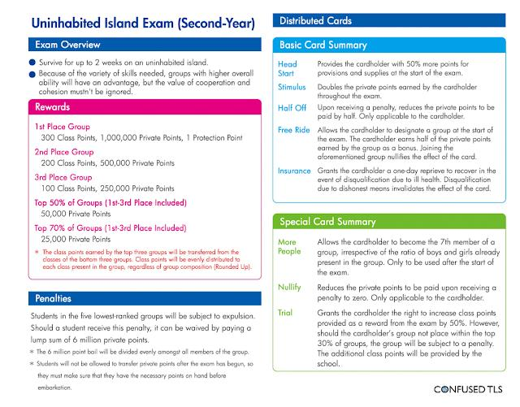
Examen de la Isla deshabitada (Segundo Año)
Descripción del examen
Sobrevivir hasta 2 semanas en una isla deshabitada.
Debido a la variedad de habilidades necesarias, los grupos con una habilidad promedio mayor tendrán
una ventaja, pero el valor de la cooperación y cohesión no debe ser ignorado.
Recompensas
Grupo en 1er Lugar
300 puntos de clase, 1 000 000 Puntos Privados, 1 Punto de Protección
Grupo en 2do Lugar
200 puntos de clase, 500 000 Puntos Privados
Grupo en 1er Lugar
100 puntos de clase, 250 000 Puntos Privados
Grupos en el 50% superior (del 1er al 3er lugar Incluidos)
50 000 puntos privados
Grupos en el 70% superior (del 1er al 3er lugar Incluidos)
25 000 puntos privados
*Los puntos de clase ganados por los tres primeros grupos serán transferidos de las clases de los grupos en los tres últimos lugares. Los puntos de clase serán distribuidos a cada clase presente en el grupo, independientemente de la composición del grupo (redondeado).
Sanciones
Los estudiantes en los últimos cinco grupos serán sujetos de expulsión.
Si un estudiante recibe esta sanción, se puede anular pagando una suma global de 6 millones de puntos privados.
*La fianza de 6 millones de puntos será distribuida equitativamente entre todos los miembros del grupo.
*No se permitirá a los estudiantes transferir puntos privados después del comienzo del examen, así que deben asegurarse de tener los puntos necesarios disponibles antes del desembarco.
Cartas Distribuidas
Resumen de las Tarjetas Básicas
Inicio: Provee al portador con 50% más puntos para provisiones y suministros al inicio del examen.
Bonificación: Dobla los puntos privados ganados por el portador a través del examen.
Reducción a la mitad: Si se recibe una sanción, reduce los puntos privados a pagar a la mitad. Solo aplicable al portador.
Viaje gratis: Permite al portador escoger a un grupo al inicio del examen. El portador ganará la mitad de los puntos privados ganados por ese grupo como una bonificación. Unirse al mencionado grupo anula el efecto de la tarjeta.
Seguro: concede al titular de la tarjeta una prórroga de un día para recuperarse en caso de descalificación debido a mala salud. La descalificación debido a métodos deshonesta anula el efecto de la tarjeta.
Resumen de las Tarjetas Especiales
Más Gente: permite al propietario convertirse en el séptimo miembro de un grupo, independientemente de la proporción de chicos y chicas ya presente en el grupo. Sólo se puede usar después del comienzo del examen.
Anular: Reduce a 0 los puntos privados a pagar en caso de recibir una sanción. Sólo aplicable al propietario.
Prueba: Garantiza al propietario el derecho de incrementar los puntos de clase del examen como recompensa en 50%. Sin embargo, si el grupo del propietario no termina en el 30% superior de los grupos, el grupo será sujeta a sanción. Los puntos de clase adicionales serán provistos por la escuela.
*Créditos del mapa y el resumen del examen a Confused Translations.
SE LEVANTA EL TELÓN EN EL EXAMEN DE LA ISLA
DESHABITADA
8:40 de la mañana. El crucero se acerca lentamente al muelle.
El examen especial de la isla deshabitada está por comenzar.
Participarán un total de 157 grupos diferentes, con tamaños que van de uno a cuatro miembros.
Como desglose, había 36 grupos exclusivos de primer año de cuatro personas, 81 grupos de tres personas, 32 grupos de dos personas y 8 grupos individuales.
Y al final, cinco de ellos se irían.
La tensión comenzó a aumentar a medida que mis compañeros se reunían, y una vez que todos estuvieron presentes, nos dirigimos a la rampa del barco.
Como no se nos ordenó formar una fila organizada ni nada por el estilo, la escuela nos permitió tácitamente charlar entre nosotros mientras esperábamos nuevas instrucciones. Eso sí, siempre que permaneciéramos juntos como clase.
La zona de salida para todos los grupos era el área D9. Como no habría ninguna zona designada al azar el primer y el último día, la siguiente zona estaría a dos celdas de distancia o a una celda en diagonal desde aquí, para un total de 12
opciones potenciales. Sin embargo, el área dos casillas al sur, la teórica D11, no existía, así que, a decir verdad, sólo había 11 opciones.
Este primer día podría considerarse como una oportunidad para familiarizarnos con un nuevo entorno cuando ni siquiera sabemos reconocer el camino. Tras un breve anuncio, esperamos nuestro turno para desembarcar del barco, con las maletas y mochilas en la mano tras haberlas recibido no hace mucho.
Para mis provisiones, acabé eligiendo una tienda de campaña, dos litros de
agua, tres botellas de agua de 500 ml, 12 comidas portátiles, una linterna, un
cargador de baterías portátil, una olla, un encendedor y un juego de vasos de
papel, para un total acumulado de 4960 puntos. En total, todavía quedaba mucho espacio libre en mi mochila, incluso después de añadir todos los elementos esenciales gratuitos. Así que, aunque ganara provisiones adicionales más adelante al completar Tareas, no tendría que preocuparme por no tener espacio para llevarlas.
Según el anuncio, desembarcaríamos en el mismo orden que las sesiones informativas de ayer, y los estudiantes de primer año bajarían antes que el resto.
Por lo visto, los de primer año terminarían de bajar del barco hacia las 9:00, hora en que se anunciaría la primera zona designada. Tenía sentido pensar que esto se había organizado para dar a los de primer año una ligera ventaja.
Por otro lado, ponía en desventaja a los estudiantes de segundo y tercer año, aunque sólo una vez. Además, como la clase A era también la primera en desembarcar, la clase D se vería en una desventaja todavía mayor. La diferencia total sólo sería de unos 15 o 30 minutos iniciales, pero teniendo en cuenta nuestro limitado tiempo de viaje, seguiría siendo un retraso bastante considerable.
—Buenos días. ¿Dormiste bien ayer?
Mientras esperaba, se me acercó desde atrás Horikita, que llevaba su mochila.
—Bueno, más o menos. ¿Y tú? ¿Te sientes mal en algún sentido?
—Veo que sigues siendo condescendiente con lo que pasó el año pasado.
—No soy condescendiente. Sólo me meto contigo, eso es todo.
Me miró con una expresión de fastidio, diciéndome sin decir nada que no había ninguna diferencia.
—Estás muy alegre a pesar de que está a punto de empezar un examen especial tan serio.
—Es inútil ponerse nervioso a estas alturas. Sería un desperdicio de
energía. Por cierto, ¿has oído hablar del chico de tercer año que se enfermó?
—Sí, lo he oído. Me alegro de que no le haya pasado a uno de nuestros compañeros.
Si caes enfermo antes de empezar el examen, te ves obligado a retirarte sin llegar a pisar la isla. En este caso, el retirado de tercer año tendría que permanecer en la enfermería o en el consultorio médico hasta que su salud mejorara. E incluso después de la recuperación, estaría atrapado en el barco, sin poder hacer nada más que rezar para que su grupo saliera adelante.
Afortunadamente, formaba parte de un grupo de tres, por lo que el hecho de haber evitado que lo expulsaran de la escuela desde el primer día fue un resquicio de esperanza para un desastre que, de otro modo, sería terrible.
Aunque, para los alumnos de los demás cursos, el hecho de que uno de los puestos inferiores se llenara más pronto que tarde era exactamente lo que querían.
A estas alturas, los de primer año ya casi habían terminado y pronto les tocaría a los de segundo bajar del barco. El reloj marcó las 9:00 de la mañana y con él, mi reloj hizo sonar la primera alerta del examen. Al unísono, prácticamente todos los alumnos sacaron su tableta y empezaron a comprobar los detalles, yo incluido. Al fin y al cabo, si lo hacíamos una vez fuera del barco, perderíamos tiempo.
La primera zona a la que me dirigiría era... D7. A sólo dos casillas al norte de la zona de partida. Incliné la pantalla de mi tableta en dirección a Horikita, provocando que me dijera su área designada.
—La mía es F9. Parece que los dos tenemos Tablas diferentes.
—Eso parece.
Como todos empezamos en el mismo lugar, era posible que nuestras áreas se superpusieran un poco aunque no tuviéramos la misma Tabla, pero Horikita y yo íbamos a ir en dos direcciones completamente diferentes.
Había un total de 12 Tablas. Si las 12 áreas designadas resultantes estuvieran
garantizadas que fueran diferentes en cada intervalo, básicamente estarías
compitiendo contra los mismos 13 grupos o más durante todo el examen. En realidad, sin embargo, cabe esperar que las áreas designadas se superpongan entre las Tablas con bastante frecuencia.
En cualquier caso, aunque no se aspire a los tres primeros grupos, será importante empezar a acumular puntos, un punto cada vez. Además, lo mejor será tratar de evitar que te sorprendan las zonas designadas al azar que puedan aparecer de repente.
—Entonces, no me preocuparé más por ti. Al menos, intenta conseguir un puesto decente.
—Aunque me encantaría hacerlo, sería muy gracioso que fuera el único de la clase que fuera expulsado a causa de todo esto.
Respondí mientras guardaba mi tableta en la mochila.
—Eso... sería problemático.
Que dijera que sería problemático sin mí era un poco impactante.
—El otro día te presté algunos puntos. Me enfadaría si no me los devolvieras.
—...¿Eso es lo que te preocupa?
Hizo un gesto inclinando la cabeza hacia un lado en señal de confusión, como si preguntara qué otra razón podría haber para que se preocupara.
—Sé que tienes ese contrato con Kushida-san, así que no puedo culparte por estar preocupado por el dinero, pero sé hombre y haz algo al respecto.
—Casi me duele escuchar eso.
Si me encontrara con un gasto repentino y urgente, podría no ser capaz de
conseguir el dinero a tiempo. Ni siquiera fui capaz de reunir los fondos sin ayuda
para proteger a Kei de la expulsión.
—Será mejor que no te esfuerces demasiado, Horikita. Una chica solitaria como tú tiene una dura lucha por delante. Deberías buscar unirte a otro grupo o encontrar una oportunidad para incorporar a alguien al tuyo lo antes posible.
—Entonces, gracias por tu excepcional consejo.
Sonaba un poco recelosa, pero no se veía tan preocupada. Horikita estaba muy por delante de donde estaba hace un año; tal y como está ahora, debería ser más que capaz de identificar sus propias limitaciones.
—Hablando de eso, las condiciones para fusionar grupos parecen ciertamente estrictas, así que tendremos que prestar atención a eso.
—El promedio de puntos, ¿eh?
Cuanto más tiempo se tardara en fusionarse con otro grupo, más problemático sería promediar los puntos.
Sin embargo, si se lograba maximizar el tamaño del grupo desde el principio, se obtendrían los beneficios hasta el final del examen. Ganar seis puntos sólo por llegar a una zona designada sería tremendo, e incluso podrías conseguir siete si tu grupo tuviera la tarjeta "Más gente". Si comparamos esto con un grupo individual, que tendría que esforzarse por conseguir cada punto, la diferencia era tan clara como el agua.
Desde el momento en que bajaron del barco, los estudiantes de primer año se pusieron en marcha rápidamente y sin la menor duda. Como aún no había Tareas, lo más probable es que los alumnos de segundo y tercer año hicieran lo mismo y eligieran dirigirse a su primera zona designada una vez que hubiesen bajado del barco.
Cuando por fin puse un pie en el puerto, decidí apartarme y echar un vistazo al flujo general de cosas en lugar de apresurarme hacia mi destino. Tenía que asegurarme de reservar entre una hora y una hora y media para viajar, pero no
debería haber ningún problema en esperar unos 30 minutos siempre que llevara
la cuenta del tiempo. Si no tenía la vista puesta en conseguir la bonificación de
Madrugador, no había ninguna diferencia en el número de puntos que ganaría por llegar después de una hora o más.
—No creo que haya ningún grupo de segundo año que tenga prisa ni nada por el estilo. De todos modos, no es muy buena idea competir por esta primera área designada. Incluso si se apresuraran a tratar de alcanzarlos, todavía estarían a más de 10 minutos detrás de los de primer año que van a la cabeza.
Cerrar una distancia así consumiría mucha resistencia, ¿no crees?
Tras bajar ella misma del barco, Horikita se acercó de nuevo a mí.
—Dada la desventaja, es natural que la gente quiera tomarse las cosas con calma al principio.
Como desembarcaron justo después de la clase 1-D, los estudiantes de la clase 2-A podrían tener una ligera posibilidad de alcanzarlos dentro del tiempo, pero no parecía que se esforzaran por hacerlo.
—De todos modos, hace mucho calor, ¿no? Me alegro de haber pensado en comprar un sombrero. ¿Estás bien sin uno?
—No me quedan suficientes puntos para comprar uno. Ya se me ocurrirá algo.
Mientras Horikita y yo charlábamos, un joven pasó galantemente junto a nosotros. Por el breve vistazo que logré echar a su rostro sonriente, daba la impresión de que iba a disfrutar al máximo de estas dos agotadoras semanas.
—Koenji... ¿De verdad crees que ese tipo se tomará en serio este examen especial?
—Quién sabe... Aunque aceptó mi apuesta, no se sabe lo que hará.
—Es una moneda al aire. Es decir, si realmente entrará en acción o no.
Koenji le prometió a Horikita que, si no obtenía el primer lugar en este examen
especial, cooperaría durante el siguiente. Pero, esta promesa no estaba
realmente sustentada en nada. No había una fuerza obligatoria, ni un acuerdo vinculante, así que, si no quería mantener su palabra, eso sería todo.
Sin embargo, Horikita se estaba convirtiendo poco a poco en la líder de nuestra clase, así que, si Koenji decidía traicionar su confianza, podía estar seguro de que ninguno de nuestros compañeros movería un dedo para ayudarlo cuando se enfrentara a un examen difícil en el futuro.
Un resultado así no sería muy conveniente, ni siquiera para alguien como Koenji...
Personalmente, esperaba ser testigo de la actuación de Koenji durante este examen especial.
—¡Vamos, maldita sea! ¡Tengo la vista puesta en el number one, baby!
No muy lejos de nosotros, un estudiante masculino solitario echó a correr hacia la playa de arena: Ishizaki, de la clase 2-B. Gritaba con fuerza, pero Nishino, su compañera de grupo, se limitaba a seguirle, sin hacer ningún esfuerzo por correr y perseguirle como él quería. Y luego estaba Tsube, que observaba a los dos desde la retaguardia con una sonrisa incómoda en su rostro.
—¡Eh, date prisa Nishino! ¡Tú también Tsube!
—¡Es súper caluroso, así que no vayas a pedir lo imposible! Quiero decir, como que ya no podemos alcanzar a los de primer año. Sheesh.
—Bueno, ehm, al menos es bueno que Ishizaki-kun esté motivado, ¿no?
Tsube miró a Nishino con una expresión algo exasperada mientras intentaba suavizar las cosas entre los dos. Había escuchado que Nishino se encontraba bastante aislada del resto de su clase, pero aparentemente Tsube estaba haciendo un esfuerzo activo para tratar de acercarse a ella.
—¡Si nos rendimos, se acabó todo! Los de primer año podrían descuidarse
y meter la pata, ¡nunca se sabe!
—¿En serio quieres ir tras ellos? Olvídate de eso. Es como, un total desperdicio de energía.
—¡Woah woah, vamos, no seas así!
Tanto Nishino como Tsube contrastaban con Ishizaki, que estaba prácticamente repleto de energía.
—Entonces, ¿qué tal si te adelantas sin nosotros?
—¡Pero no obtendremos la bonificación de Madrugador si hacemos eso!
Además... sería una mierda si nos separamos o algo así.
Ahora mismo, lo único que podías comprobar en tu tableta era tu ubicación actual. Incluso entre los miembros del mismo grupo, sólo sería posible averiguar dónde se encuentra alguien más una vez que la función de búsqueda del GPS
se desbloqueara al sexto día.
Si te separabas de tu grupo antes de ese momento, te costaría mucho volver a encontrarte con ellos. Sin darse cuenta de que yo había estado observando toda la conversación, Ishizaki cedió de mala gana y volvió con Nishino y Tsube para seguir el mismo ritmo.
Podía entender su impaciencia, pero no había necesidad de tener tanta prisa desde el principio.
—¡Te encontré!
De repente, una firme voz, casi enfadada, nos llamó. La dueña de dicha voz se acercó a nosotros, mirando ferozmente a Horikita.
—¿Qué quieres?
—¿Querer? Yo no 'quiero' nada. Sólo me aseguro de que sepas que nunca voy a perder contra ti...
Tras acercarse a Horikita sólo para decir eso, Ibuki giró sobre sus talones y
partió hacia el norte ella sola.
—Por Dios... Me pregunto si ella entiende bien lo difícil que es este examen.
—Parecía bastante motivada. Debe ser agradable tener una rival.
Ante mis ligeras burlas, Horikita soltó un profundo suspiro.
—Sin embargo, no me veo como su rival en absoluto... Bueno, da igual, ella va hacia el norte y yo hacia el este, así que también tenemos tablas diferentes. Al menos está eso.
Después de todo, si tuvieran la misma Tabla, podrían encontrarse de vez en cuando. Una de las pocas ventajas de estar solo tenía que ver con la bonificación de Madrugador de la zona designada. Al no tener que depender de nadie más, lo único que limitaba tu potencial eran tus propios pies.
—Bueno, ya es hora de que me ponga en marcha.
Con eso, Horikita se aseguró de que su sombrero estuviera bien ajustado a su cabeza y se puso en marcha hacia el este. Aunque, no mucho después de empezar a caminar, por algún motivo se detuvo y miró en mi dirección. Justo cuando pensé que podría haber algo que se le había olvidado mencionar, apartó la mirada y se puso en marcha de nuevo.
Después de ver partir a un buen número de estudiantes, me di cuenta de que todavía no había visto pasar a ningún alumno de tercer año, aunque ya deberían haber empezado a bajar del barco. Por ello, decidí darme la vuelta y comprobar lo que ocurría.
Al hacerlo, vi a un buen número de estudiantes de tercer año caminando en mi dirección. Incluso desde la distancia, me di cuenta de que todos y cada uno de ellos estaban tranquilos y serenos, mucho más que los de primer y segundo año.
Por los datos, parecía que los alumnos de la clase 3-B acababan de desembarcar, así que me tomé un momento para intentar ver a Nagumo. Sin
embargo, no pude encontrarlo por ninguna parte.
Mientras seguía buscándolo, los estudiantes de tercer año que caminaban hacia mí finalmente me alcanzaron y comenzaron a pasar.
—¿Todavía estás aquí, Ayanokouji?
Al oír que alguien se dirigía a mí, desistí de mi búsqueda y volví a prestar atención a los estudiantes de tercer año que estaban cerca.
—Buenos días, Kiryuuin-senpai. ¿Hay algo extraño al respecto? Me imagino que muchos grupos elegirán refinar sus estrategias aquí en la zona de salida.
—Pero estás solo, ¿verdad? Deberías estar bien para pensártelo mientras caminas.
Expresó sus dudas sobre mi decisión de quedarme en la zona de salida. Aunque ya sabía que no era una persona corriente, realmente tenía un buen ojo para los detalles.
—Si hay algo que quieras saber, puedo ayudarte a explicarlo.
—Gracias, pero está bien. Después de todo, eres una estudiante de tercer año, Kiryuuin-senpai. Una competidora directa de los estudiantes de segundo año como yo.
Al declinar amablemente su oferta, no dijo nada más al respecto, optando simplemente por encontrar mi mirada con la suya.
—Hay algo... encantador en ver a todo el alumnado disperso por la isla deshabitada. Aunque somos más de 400, en comparación no somos más que insignificantes motas de polvo.
Kiryuuin habló despreocupadamente, observando cómo los distintos grupos de estudiantes comenzaban a dispersarse por la isla. A pesar de ser una estudiante de tercer año, ella también estaba entre los que eligieron afrontar el examen sola.
Aunque este examen no iba a ser precisamente un paseo por el parque, ella no parecía tener la más mínima ansiedad o inquietud al respecto. De hecho, daba la impresión de estar deseando que llegara.
—Por cierto, ¿cuál es tu primera área designada?
—D7.
—¿Hoh? Entonces parece que tenemos el mismo destino. Al menos para esta primera.
Kiryuuin me miró alegremente, dejando ver una sonrisa blanca y llena de dientes.
—Por favor, no seas demasiado dura conmigo.
—Lo mismo digo. Bueno, voy a salir. ¿Quieres acompañarme?
—No, pero gracias por la oferta. Dudo que pueda seguir tu ritmo, Senpai.
—Supongo que pronto sabremos si eso es cierto o no.
Dejándome con eso, Kiryuuin se alejó hacia la playa de arena ella sola. Seguí merodeando por la zona un poco más, pero finalmente no alcancé a ver a Nagumo.
Y así, unos minutos después de que Kiryuuin se fuera, yo también me puse en marcha. Por el momento, me dirigiría tranquilamente a mi primera zona designada.
Una de las partes más importantes de este examen era asegurarse de no perder los puntos fáciles que se obtenían al llegar a las áreas designadas. Podías ganar entre 5 y 10 puntos de golpe si tenías éxito en las Tareas o conseguías un Bono de Madrugador, pero eso requería una buena mezcla de habilidad física, capacidad académica y suerte a la hora de enfrentarse a los competidores. Por lo tanto, me sentía bastante seguro de que el verdadero núcleo de todo esto se
reducía a acumular puntos, uno a la vez.
Así que, con eso en mente, saqué una vez más mi tableta y abrí el mapa.
En su conjunto, el mapa estaba dividido en 100 zonas diferentes, cada una de las cuales se extiende 500 metros en vertical y 700 metros en horizontal. Para mi primer movimiento, tenía que ir desde el área D9 hasta el borde de D7. Como ya estaba cerca del centro de D9, tenía que caminar unos 750 metros en línea recta.
A un ritmo estándar de unos 80 metros por minuto, sería muy fácil de recorrer. A ese ritmo, sin tener en cuenta ningún factor externo, debería ser capaz de llegar a la zona designada en unos nueve minutos. Pero, como era de imaginar, había bastantes posibilidades de que el camino que tenía por delante no fuera ni plano ni recto. Ante un bosque tan espeso, podía toparme con desniveles o acantilados que hicieran imposible avanzar. Y, en consecuencia, el trayecto en su conjunto tardaría sin duda varias veces más de lo habitual.
El punto más alto de la isla estaba a unos 300 metros sobre el nivel del mar, así que era de esperar una buena cantidad de subida. Además, a medida que pasara el tiempo, el peso de la mochila y el desgaste gradual de tu resistencia se interpondrían en tu capacidad de seguir avanzando.
Así que, aunque todo fuera bien, era mejor esperar que esto me llevara el triple de tiempo, es decir, unos 30 minutos. Y si el camino por delante era especialmente traicionero, podía tardar fácilmente más de una hora.
A excepción del primer y último día, habría cuatro cambios de zonas designadas por día. Por lo tanto, había bastantes posibilidades de que acabara recorriendo el mismo camino varias veces a lo largo del examen. Me vendría bien tener en cuenta mis movimientos anteriores y el tiempo que me había llevado ir de un sitio a otro.
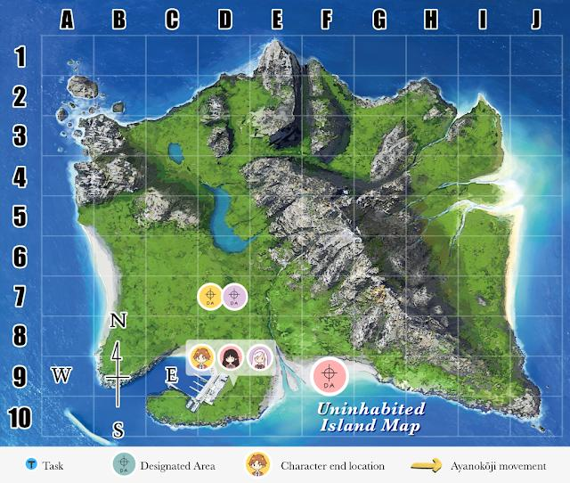
Tarea, Área designada, Ubicación final del personaje, Movimiento de Ayanokouji PARTE 1
Al poco tiempo, el terreno plano y uniforme dio paso a un denso conjunto de árboles. Y así, al entrar en el bosque, recordé la isla del examen del año pasado.
El año pasado no me di cuenta porque me movía junto a mis compañeros, pero
no era precisamente fácil atravesar el bosque así. Como era de esperar,
resultaba difícil seguir avanzando en línea recta, y afianzarse en el suelo del bosque era mucho más difícil de lo esperado. La presencia de un puerto tan grande parecía indicar que la isla no había estado siempre deshabitada, pero aun así, eso bien podría haber sido algo del pasado lejano.
De vez en cuando, veía telarañas gigantescas extendidas entre los árboles, presumiblemente tejidas por arañas de varios centímetros de tamaño. A los estudiantes que tuvieran miedo a los insectos les esperaría sin duda un viaje infernal. Me recordó el aviso de advertencia sobre la vida salvaje que se había incluido en nuestros manuales.
Era imposible ir a tu destino viajando en una simple línea recta, pero por otro lado, tomar un desvío te haría perder todo el sentido de la orientación, o sea, sin problemas. Si no tenías algún tipo de herramienta que te ayudara a encontrar el camino, sería difícil llegar a la zona designada. La única razón por la que el viaje no era imposible era la tableta que tenía en la mano.
Mientras estuviera en la isla, poder confirmar tu ubicación en cualquier momento sería una ventaja indispensable. Mientras te movieras con el GPS en la mano, el camino por delante siempre estaría abierto para ti. Aunque, incluso sin la tableta, la probabilidad de perderse durante este primer trayecto era bastante baja.
Pude ver a varios grupos delante de mí tanteando el terreno mientras avanzaban.
Y como también podía oír voces que hablaban detrás de mí, me parecía razonable pensar que básicamente todos los que estaban cerca tomaban la misma ruta hacia este primer destino. Así que mientras siguiera a los estudiantes que iban por delante, los riesgos de lesiones o de toparse con un enjambre de insectos o algo así disminuirían notablemente.
Pocos grupos tendrían el valor de adentrarse temerariamente en un bosque inexplorado de buenas a primeras.
Los que habían renunciado al bono de Madrugador de la primera zona se movían simplemente como si estuvieran en medio de una excursión. Al cabo de
un rato, alcancé a ver a Haruka, Airi y Akito, que se habían detenido a mirar sus
tabletas. Por lo que parece, estaban hablando entre ellos mientras confirmaban
su entorno. Cuando empecé a acercarme, pude oír cómo intercambiaban opiniones entre ellos sobre su próxima zona designada.
—¿Están hablando sobre qué hacer a continuación?
Llamé para inmiscuirme en su conversación, a lo que los tres asintieron con la cabeza a la vez.
—Nuestra primera área es la D8, así que ya terminamos, ¿no?
El límite del área D8 llegó no mucho después de pisar el bosque, así que ya habían conseguido ganar sus puntos. No sentí la necesidad de preguntar cuántos habían ganado, ya que estaba casi garantizado que sólo se trataba de la bonificación de llegada de tres puntos.
—Hace bastante calor y no hay sombra en la playa, así que vinimos a especular sobre la próxima zona.
Sin duda, sería mejor tratar de dar cuenta de dónde podría aparecer la siguiente área designada.
—¿Qué área tienes, Kiyotaka?
—D7; una celda al norte de aquí.
—¿De verdad? Un montón de estudiantes ya se adelantaron, pero, bueno, un punto es un punto, supongo.
—Si tuviéramos la misma tabla, podríamos haber viajado juntos...
Airi murmuró para sí misma en voz baja, pareciendo decepcionada. A pesar de que estábamos divididos en diferentes grupos, este examen seguía teniendo una sorprendente variedad de formas para que los estudiantes trabajaran juntos.
Incluso había varias reglas que lo facilitaban, como la posibilidad de compartir la comida o prestarse el equipo. Además, si dos grupos tenían la misma Tabla,
tendrían esencialmente el mismo destino, por lo que sería muy fácil que se
mantuvieran unidos.
Por supuesto, esto también tenía sus inconvenientes. Cuantos más grupos trabajasen juntos, más difícil sería para ellos seguir el ritmo de los demás.
Además, cada grupo tendría sus propias opiniones y objetivos, lo que inevitablemente conduciría a una mayor competencia por la participación en las Tareas. Esto podría convertirse fácilmente en una fuente importante de conflictos si los grupos no idearan algún tipo de plan de contingencia en caso de que sólo quedara un espacio para una Tarea. En este caso concreto, se puede decir que fue una suerte que no tuviéramos la misma Tabla. Era absolutamente crítico que evitara trabajar junto a personas que pudieran retrasarme, así que esto me evitó el problema de tener que rechazarlos.
—Hay doce Tablas, así que desde el principio las probabilidades no eran grandes. En cualquier caso, por ahora creo que debería llegar a mi zona designada más pronto que tarde.
—Sí. De todos modos, tenemos que ir a nuestra siguiente zona en algún momento, así que adelante.
—Sin embargo, apesta un poco. Espero que podamos reunirnos de nuevo en algún lugar cuando tengamos más tiempo libre.
Haruka se despidió de mí con Airi saludando desde atrás. Y con eso, les di la espalda a los tres y continué mi camino hacia el área D7. Después de unos 30
minutos más de camino, finalmente llegué a mi primera área designada, haciendo que mi reloj sonara un par de veces.
Eché un vistazo a la notificación del reloj, que decía que me habían dado una bonificación de llegada de un punto. También me di cuenta de que se me daba la opción de ajustar el volumen de las notificaciones, pero por el momento opté por dejarlo como estaba. Para asegurarme de que todo funcionaba correctamente, saqué mi tableta y encontré un registro que coincidía con la bonificación en el historial de transacciones de puntos. Como cada zona no parecía tan grande cuando se veía en el mapa, daba la sensación de que siempre te encontrarías con otros estudiantes. Pero una vez que estabas
realmente en la isla, la impresión era completamente diferente.
Aunque hubiera realmente estudiantes dispersos a tu alrededor, sería difícil verlos debido a todos los árboles. Aunque no podía ver a nadie en este momento, estaba bastante seguro de que un buen número de estudiantes estaban en algún lugar de la zona.
En cuyo caso, seguramente se habían adentrado más, optando por acercarse al centro de la zona para que fuera más fácil dirigirse a la siguiente área designada y recabar información. Busqué un claro en el bosque con esta suposición en mente, y al poco tiempo, mi campo de visión se abrió de repente.
Efectivamente, un gran número de estudiantes se había reunido en el mismo lugar. La carrera hacia la siguiente zona designada sería una competición entre estudiantes de todos los cursos, así que es comprensible que buscaran aumentar sus posibilidades de ganar, aunque fuera ligeramente. Además, la única forma de saber quién tenía la misma Tabla que tú era venir a echar un vistazo en persona.
Al pasar por este proceso unas cuantas veces, podías hacerte una idea aproximada de quiénes eran tus rivales directos. Hice un rápido recuento, con un total de 29 personas presentes, incluido yo. Por lo que pude ver, era seguro suponer que había más estudiantes en la zona.
—Buenos días, Ayanokouji-senpai.
Mientras tomaba nota de los nombres y rostros de todos los presentes, una alumna se percató de mi presencia y se acercó a saludar: Nanase Tsubasa, de la clase 1-D. Sus compañeros de grupo, Amasawa y Housen, no se veían por ninguna parte, lo que me llevó a preguntarme si estarían explorando en las cercanías o habrían ideado algún tipo de estrategia y se habrían marchado ya de la zona.
—¿Qué pasó con los otros dos? ¿No se supone que los grupos deben permanecer juntos en su mayor parte? Al menos a mí me parece mejor hacerlo así. Sobre todo al principio.
Planteé una pregunta, interesado en ver cómo respondía.
—Dijeron que iban a explorar la zona y luego nos separamos todos. Así que decidí venir a comprobar cuántos otros grupos había aquí.
Al parecer, ella decidió hacer lo mismo que yo. Como llegué tarde, seguramente tenía un mejor conocimiento de la competición que yo. Todavía había muchas cosas que no sabía sobre Nanase. Por el momento, me sentía bastante seguro de que no saldría nada bueno de quedarse por aquí más de lo necesario.
—Creo que me voy a ir. No está de más mirar alrededor.
—¡Claro que sí! Estás solo, así que ten cuidado, Senpai. Adiós, entonces.
Me dejó ir de buena gana y se dirigió a donde se había reunido un grupo de estudiantes de primer año. Una vez terminado mi breve diálogo con Nanase, me fui. Después de caminar un poco, encontré un lugar para sentarme, dejé mi mochila y saqué mi tableta. Quería evitar el gasto de energía si era posible.
En total, tardé unos 50 minutos en llegar al área designada. Como había un descanso, la siguiente zona se anunciaría en algo más de 3 horas. Las Tareas, por otra parte, empezarían a aparecer muy pronto.
Miré pacientemente el reloj; esperando hasta que finalmente fueron las 10:00
AM. Y entonces empecé a revisar las ubicaciones, los detalles y las recompensas de las distintas Tareas que aparecían en el mapa. Tendría que decidir entre esperar a la siguiente área designada o intentar ir en busca de una Tarea en función de lo que encontrara.
Para empezar, había un total de 14 Tareas diferentes. Una de ellas apareció en la esquina superior izquierda del área D7, la zona en la que me encontraba. Esta era, con mucho, la más cercana. Pude ver a varios de los estudiantes dentro de mi campo de visión dirigirse inmediatamente hacia el noroeste, con la intención de comprobar los detalles de la Tarea mientras caminaban.
La tarea en cuestión se llamaba "Iniciador de fuego". Se otorgarían 5 puntos al
primer grupo que consiguiera encender un fuego utilizando una herramienta
especialmente proporcionada. No había recompensa para el segundo puesto ni
para los inferiores.
En la parte central del área E7 apareció otra Tarea, aunque algo más alejada, llamada "Prueba de inglés". Tenía un límite de participación de dos personas por grupo, y el primer puesto recibía 5 puntos, el segundo 3 puntos y el tercero 1
punto.
Más estudiantes se dirigieron hacia allí que hacia la tarea de encender fuego.
Encender un fuego no sería fácil, especialmente para quien no lo hubiera hecho antes. En lugar de intentar hacerlo, tenía mucho más sentido probar el inglés con el que ya estaban familiarizados.
También había una tarea de "Prueba de Geografía" en el área D8, pero sólo un grupo fue en esa dirección. La razón de que hubiera tanta diferencia entre esta tarea y el Examen de Inglés podría atribuirse principalmente al área en la que había aparecido.
En el área D8 había un gran número de alumnos con otra Tabla. Y aunque sólo estaba una celda hacia el sur, todavía se tardaría en llegar allí. Difícilmente tendrías la oportunidad de vencer a los estudiantes que ya estaban cerca.
Aunque había un plazo de inscripción de 60 minutos, seguramente se alcanzaría la capacidad máxima mucho antes.
Dirigiéndose a la Tarea en el área C6 había otra opción, aunque la más lejana de las que había considerado hasta ahora. Se llamaba "Medición de la fuerza de agarre" y estaba dividida por sexos. Además, tenía un plazo de inscripción más largo, de 120 minutos.
Parecía una opción perfectamente razonable, pero tenía que tener en cuenta que los que no pudieran inscribirse en la Tarea de Iniciador de Fuego optarían por dirigirse a ella. Además, si la siguiente área designada aparecía al este, tendría que recorrer una distancia considerable desde el C6 para llegar allí.
Hablando de distancia, la más lejana de las 14 tareas estaba en el área G3, una tarea llamada "Prueba de trivialidades". Se trataba de una Tarea de alto valor en
la que podía participar una persona de cada grupo, y en la que el primer puesto
sería premiado con 10 puntos. Aunque el plazo de inscripción era de 180
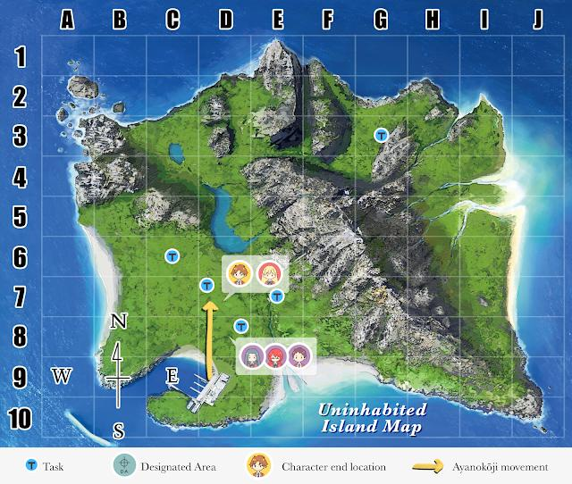
minutos, existía la posibilidad de que se te acabara el tiempo antes de llegar. Y, si ibas al G3, había una alta probabilidad de que tuvieras que renunciar a llegar a tu siguiente área designada, por lo que no podías hacer el viaje sin pensarlo mucho antes. Sin embargo, si todo salía bien, podrías ganar 10 puntos sin esfuerzo sólo con esta tarea.
—Qué examen tan interesante.
En cierto sentido, éramos libres de elegir la opción que quisiéramos. Faltaban tres horas para que se anunciara la siguiente área designada. Me levanté de donde estaba sentado, ya que finalmente decidí dirigirme a la Tarea de Medición de la Fuerza de Agarre en el área C6. Los estudiantes que habían ido a ver si podían participar en la Tarea de Iniciador de Fuego perderían inevitablemente un poco de tiempo, así que esta era mi oportunidad de robarles terreno.
Mientras caminaba, empecé a revisar cuidadosamente cada una de las Tareas en las que no pensaba participar, con el fin de memorizar todo lo referente a las diferentes ubicaciones y tipos de Tareas que podrían aparecer.
PARTE 2
—¡Yoo~hoo~ Ayanokouji-kun!
Llegué al lugar de la Tarea C6 después de unos 40 minutos de caminata, justo para encontrar a la profesora de la clase 2-C, Hoshinomiya-sensei, al acecho dentro de una tienda de campaña, en un intento de escapar del calor abrasador del sol. Además, casi 20 estudiantes de los tres años escolares estaban en los alrededores.
—Llegaste hasta aquí, pero desafortunadamente, el registro se cerró hace unos cinco minutos.
Además de Hoshinomiya-sensei, había otro adulto que nunca había visto antes explicando la Tarea a los estudiantes reunidos.
—Así parece.
Siendo ese el caso, no tenía sentido que me quedara aquí por más tiempo.
Intenté marcharme, ya que no quería estar cerca de Hoshinomiya-sensei más de lo necesario, pero ella me agarró del brazo justo cuando me daba la vuelta para irme.
—¡Oh, no tengas tanta prisa! Siéntete libre de sentarte y mirar un rato~.
—¿No le parece mal que una profesora invada el tiempo de un alumno sólo por su propia conveniencia?
—¡Awh, vamos~! ¡No exageres! Tendrás mucho tiempo después de esto~.
Como profesora, debería ser plenamente consciente de la verdadera naturaleza de este examen, en el que una fracción de segundo podría muy bien significar la diferencia entre una victoria y una derrota, pero... todavía no tenía ninguna intención de dejarme ir.
—Mi última área designada fue la D7, así que es más que posible que la próxima sea aquí, en el área C6. Si eso ocurre, ¿será responsable de haberme hecho perder la bonificación de Madrugador?
En ese momento, Hoshinomiya-sensei se apresuró a soltar mi brazo y dio unos pasos hacia atrás para distanciarse.
—¡Cruel! No seas así Ayanokouji-kun, burlarse es un no-no~ Sólo quería charlar un poco, eso es todo. Es que me he sentido bastante malhumorada últimamente, así que ¿qué tal si te sientas y me escuchas?
Aunque me soltó el brazo, no quería que nuestra conversación terminara todavía.
Con reticencia, decidí hacerle compañía y escucharla, al menos durante un rato.
—Ha sido desde el examen de fin de curso, ¿no? Desde que hablamos a solas como ahora.
—Es cierto.
Teniendo en cuenta que ella fue testigo de mi competencia en ese entonces, junto con mi reciente calificación perfecta en matemáticas, no era difícil imaginar que ahora estaba más recelosa de mí que antes.
—De todos modos, últimamente has atraído mucha atención, ¿sabes? No pensé que fueras del tipo que le gusta destacar.
—No lo soy.
—Entonces, ¿por qué obtuviste esa puntuación perfecta en matemáticas?
Quiero decir, me parece bastante raro que simplemente consiguieras que todo fuera bien. Incluso había un problema que yo no habría sido capaz de resolver.
Desde la perspectiva de alguien que potencialmente se veía a sí misma como la rival de Chabashira-sensei, tiene sentido que no le guste la forma en que se desarrollaron las cosas, pero por alguna razón, sentía como si estuviera
descargando todo eso en mí.
—¿Está segura? Creo que hay muchos estudiantes capaces de resolver ese tipo de problemas.
—¿Los hay? Hmm... ¿Estás adivinando? Aunque asuma que estás en lo cierto, esperaría que fueran estudiantes de clase A o B al menos. ¿Y en qué clase estás tú, Ayanokouji-kun? A... B... C... Oh, eso es, Clase D. Sólo dilo en voz alta conmigo, 'Clase D'. Esto puede sonar grosero o algo así, pero lo primero que me viene a la mente cuando lo digo es que es un lugar ridículo repleto de niños problemáticos, lleno hasta los topes de nada más que de defectos. ¿Y
todavía quieres decirme que hay niños con características escandalosas como tú mezclados con todo eso?
—Aunque no estoy seguro sobre mí, creo que hay muchos estudiantes sobresalientes en la clase 2-D. Además, si mira la clase 1-D, también hay muchos estudiantes sobresalientes allí, ¿no cree?
No estaba particularmente informado sobre los estudiantes de tercer año, así que no dije nada sobre ellos, sólo para estar seguro.
—Uh... Eso es cierto y todo, pero como que... las políticas de la escuela han cambiado un poco desde el año pasado, ¿no?
A pesar de que ella me preguntó esto, no había manera de que supiera la respuesta a eso.
Mientras conversábamos inútilmente, la tarea de medición de la fuerza de agarre comenzó frente a nosotros, con un estudiante de tercer año llamado Oshio siendo el primero en salir a escena. Aparentemente iban en el orden en que se habían inscrito para la Tarea. Y, entre todos los participantes estaba mi compañero de clase, Sudou. Los miembros de su grupo, Ike y Hondou, no se veían por ninguna parte, lo que sugería que quizá se separó y se apresuró a venir solo para asegurarse un lugar en la Tarea.
—Estaré de acuerdo en que hay algunos chicos sobresalientes de la clase
D, seguro, pero no creo que sean lo suficientemente buenos como para
mantener su clase unida o algo así. Sin embargo, cuando se trata de ti, tengo la impresión de que has influido en lo que te rodea.
He influido en todo lo que me rodea, ¿verdad? No debería ser así, al menos no desde la perspectiva de un extraño. Por lo que parece, conoce muy bien las circunstancias que se dan en mi entorno. Era justo suponer que en algún momento obtuvo una gran cantidad de información sin que yo me diera cuenta.
—De todos modos, realmente perdí la calma. Es la primera vez que una clase baja a la clase C. No sé cómo decirlo exactamente. Quiero decir, siempre solía haber un orden en las cosas. La Clase A competía con la Clase B mientras la Clase C y la Clase D se enfrentaban, ¿me entiendes~?
Si lo que ella decía era cierto, entonces este "orden" era ya sin duda una cosa del pasado.
—Realmente pensé que esta clase sería la que alcanzaría a la Clase A, pero... bueno...
Expresó abiertamente su descontento sobre el estado actual de la Clase 2-C.
—¿No es su deber como profesora titular hacer algo al respecto?
—¡Qué cosa tan cruel dices~!
Se tapó los oídos con las manos, sin querer escuchar nada más sobre el asunto.
Se sentía como una adulta que todavía no terminaba de crecer, o más precisamente, una mujer que nunca se graduó realmente de sus años de estudiante.
—¡Ah! ¡Yo, yo! ¿Sabes qué? ¡La Sensei tiene una idea totalmente revolucionaria para ti! Al igual que Katsuragi-kun se transfirió a la clase 2-B,
¡Ayanokouji-kun puede transferirse a mi clase! ¿Qué te parece?
Esto no era revolucionario en absoluto. Es el tipo de idea que se le ocurre
incluso a gente como Ishizaki.
—Me preguntaba a dónde quería llegar con esto. Realmente ha propuesto algo extravagante, ¿no es así?
—Aspirarás a la clase A junto con nosotros, ¿verdad? ¿Verdad?
Me agarró el brazo de nuevo mientras hablaba. Sus movimientos eran los de una mujer que veía el contacto físico con el sexo opuesto como su arma personal, pero justo antes de tocar mi muñeca, vaciló. Tras recordar mi anterior advertencia, retiró la mano y sacudió la cabeza varias veces a fin de contenerse.
—No sería capaz de reunir 20 millones de puntos ni aunque ahorrara hasta el día de mi graduación. Además, tal y como están las cosas ahora, aunque encontrara la forma de preparar semejante cantidad de puntos, no hay forma de saber qué clase será la A al final. Así que, ¿no le parece que sería más prudente esperar hasta el momento final y ver cómo se desarrollan las cosas?
Por no hablar de que sería difícil encontrar estudiantes interesados en cambiarse a su clase, ya que ésta acaba de bajar a la clase C.
—No tienes que decirlo tan objetivamente...
Si de alguna manera conseguías el derecho a cambiar de clase, no hacía falta decir que no lo usarías hasta que estuvieras a punto de graduarte.
Es decir, a menos que uno de los otros cursos, como con Katsuragi, te atraiga gratuitamente. Aunque... prácticamente ninguno de los estudiantes que valen la pena aprovecharía la oportunidad de descender a una de las clases inferiores, así que eso también estaba destinado a fracasar. Además, en el caso de que alguien accediera a hacerlo, otra cosa era si esa persona sería suficiente para elevar la clase hasta la clase A.
De repente, los distintos grupos de estudiantes que estaban delante de nosotros empezaron a llenarse de entusiasmo al conocerse el nuevo resultado del primer puesto. Oshio, que al parecer acababa de ser rebajado al segundo puesto, tenía
una expresión de disgusto en su rostro.
—Sudou-kun ha cambiado muchísimo, ¿no crees? Me pregunto quién será el responsable.
—Que conste que no he sido yo.
Aunque puede que yo haya jugado un papel clave en ello, el crecimiento de Sudou puede atribuirse predominantemente a Horikita. Poco después, todos terminaron de medir su agarre, pero al final, nadie fue capaz de superar la puntuación del primer lugar de Sudou.
Y con eso, el grupo de Sudou ganó cinco puntos adicionales, para un total probable de ocho. Comparado con el mísero punto que yo gané en el mismo periodo de tiempo, la diferencia era abismal.
Tan pronto como la competición llegó a su fin, los diversos estudiantes comenzaron a dispersarse; Sin duda se dirigían de Tarea en Tarea como una bandada de aves migratorias.
—Entonces, yo también debería irme.
Ya que perdió su excusa para retenerme aquí, Hoshinomiya-sensei cedió y me despidió.
—Faltan dos semanas para el final del examen. Seguro que me enviarán mucho alrededor de la isla, así que tal vez nos volvamos a encontrar~.
No quería volver a verla si era posible. Con ese pensamiento en mente, abandoné el sitio de la Tarea.
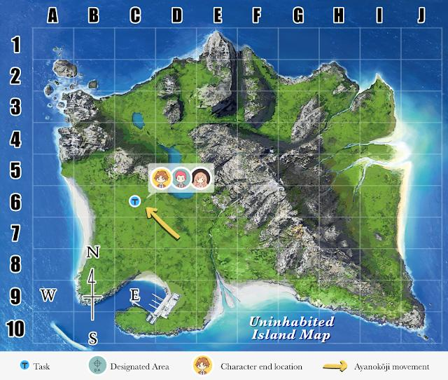
PARTE 3
Después, me dirigí a otras dos nuevas zonas de Tareas que aparecieron, pero en ambos casos, otros grupos ya se habían registrado antes de mi llegada para todos los lugares, por lo que al final no tuve la oportunidad de participar. Cuando el reloj marcó la 1:00 PM, me dirigí a mi segunda área designada, B7, ganando nada más que la bonificación de llegada de un punto. A las 15:00, se anunció que mi tercera zona era la D7, la misma que la primera. No hacía mucho que había llegado allí, y una vez más no gané nada más que la bonificación de llegada.
Viajé de un lado a otro y recibí 2 puntos por mis esfuerzos. Sin embargo, con un total acumulado de sólo 3 puntos para el primer día, me sentía bastante seguro de que era uno de los grupos con menor puntuación.
Sin embargo, no había ninguna razón para desanimarse. Sólo era el primer día del examen y todavía no se habían extendido los distintos grupos por toda la isla.
Por lo tanto, la competencia iba a ser feroz sin importar lo que pasara. Aunque me obligara a acelerar el ritmo, eso no cambiaría el hecho de que era difícil acumular puntos yo solo y el consumo de agua potable también sería intenso.
Los tres intervalos de Movimiento Básico del día habían terminado, y ahora era el momento de prepararse para mañana.
—Senpai.
Me encontré con Nanase por segunda vez, los dos nos cruzamos en un lugar similar en el que ella y yo nos encontramos esta mañana.
—Segunda vez hoy, ¿eh?
—Efectivamente. Qué coincidencia.
Al parecer, volvió a actuar por su cuenta, ya que no había rastro de Housen ni de Amasawa por ninguna parte.
—¿Cómo te fue hoy?
—Hice lo que pude y gané 3 puntos. ¿Y tú?
—Bueno, en lo que respecta a las áreas designadas, los tres ganamos 8
puntos. No logré llegar a tiempo a la segunda área, pero en cambio obtuve el primer lugar en una Tarea, así que tenemos 13 puntos en total.
—Parece que han empezado bien.
No llegó a una de las áreas designadas, pero eso no fue un gran problema. En grupos de dos o más, siempre que alguien pusiera un pie en el área designada, no contaría como un "fallo". A fin de cuentas, si consigues un gran número de puntos por el tiempo que pasas en otro lugar, como hizo Nanase, todavía saldrías ganando.
—Bueno, entonces, Senpai, si me disculpas.
Tras una breve conversación que casi parecía un informe de la situación, los dos nos separamos. Eran poco antes de las cinco de la tarde. Empecé a caminar por el bosque, buscando dónde acamparía por la noche. Si montaba mi tienda en algún lugar con luz solar, la temperatura en el interior aumentaría rápidamente.
Aunque el sol se pusiera, todavía existiría la posibilidad de que el calor no se disipara aún. Por lo tanto, lo mejor era intentar encontrar un lugar que no estuviera bajo la luz directa del sol. Me dirigí hacia el este, deteniéndome finalmente en algún lugar cerca del borde de E7.
Entre todos los estudiantes, los profesores de la escuela y el personal encargado de los exámenes, debería haber más de 500 personas en la isla.
Pero al no haber áreas designadas ni tareas, en realidad casi nunca te encontrabas con otras personas. En cierto modo, eso servía como prueba de lo denso que era realmente el bosque.
Debido al calor y la humedad, decidí acampar en una zona relativamente abierta.
Saqué mi botella de dos litros de la mochila y vertí el agua en un vaso de papel.
Beber directamente de la botella no evitaría que las bacterias de mi boca contaminaran el resto del agua. Con temperaturas tan altas, dejar que las
bacterias crecieran desde el interior de la botella podría suponer graves riesgos
para la salud. No había ninguna razón para arriesgar la salud por algo tan trivial.
Además, una vez abierta, el agua embotellada no tiene una vida útil tan larga. Si quería beber el agua mientras estuviera en su mejor estado, tendría que terminarla toda antes de que acabara el día. Aunque, eso no era realmente una opción aquí, con el futuro tan incierto como era.
Durante el primer o segundo día, no debería ser tan difícil arreglárselas con toda la comida y el agua que compraste al principio del examen. Pero una vez que tus reservas de comida se agotaran, la situación empezaría a deteriorarse gradualmente. Por supuesto, siempre estaba la opción de inscribirse en las tareas para obtener las recompensas de participación que obtendrías independientemente de si ganabas o no. Sin embargo, por lo que vi en mi tableta, no había muchas Tareas que entraran en esa categoría. Además, no me cabía la menor duda de que las que lo hicieran serían mucho más disputadas de lo habitual.
Encendí mi tableta para reflexionar sobre ello. Hoy se realizaron un total de 68
tareas a lo largo del día. Aunque no tenía ni idea de si los alumnos lograron participar en ellas, había 14 Tareas que proporcionaban a todos los participantes una determinada cantidad de agua mineral.
A un ritmo de aproximadamente una de cada cinco Tareas en total, esto no era en absoluto un número de oportunidades confiable. Lo interesante de todo esto, sin embargo, fueron las Tareas que eran esencialmente sólo competiciones disfrazadas de medidas de ayuda a los estudiantes.
El orden en el que los estudiantes llegaban a estas tareas de ayuda competitiva estaba directamente relacionado con la cantidad de ayuda que recibirían: el estudiante que llegaba primero recibía 2 litros de agua, el segundo 1,5 litros y el tercero 1 litro. Todos los demás, del cuarto al trigésimo, recibirían 500 ml.
Dicho esto, no recibían muchos puntos, ya que el primer lugar ganaba 3 puntos, el segundo 2 puntos y el tercero 1 punto. Pero aun así, seguían siendo sumamente importantes, ya que proporcionaban a los estudiantes un suministro de agua confiable e imparcial.
Y─ ciertamente valía la pena señalar que estas Tareas de ayuda competitiva representaban 8 de las 14 Tareas que proporcionaban agua a los estudiantes.
Así pues, el primer día, no solo hubo 8 Tareas con términos y condiciones idénticos, sino que sus ubicaciones físicas y los plazos de registro también se distribuyeron de forma muy uniforme. Si estas Tareas seguían apareciendo a partir del segundo día, entonces...
Bueno, siempre que pudiera llegar a tiempo de forma constante, no tendría que preocuparse mucho por el agua. Después de terminar una de mis comidas portátiles, lavarme los dientes e ir al baño, decidí ir a acostarme dentro de mi tienda para no gastar energía y prepararme para el día que me esperaba.
A partir de mañana, me pondría serio, redoblando mis esfuerzos para ganar puntos y recursos esenciales.
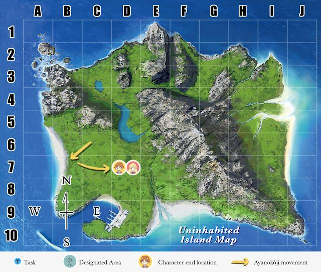
PARTE 4
Me acosté temprano, pero me desperté en medio de la noche y me senté. Por lo que podía ver a través del hueco de la tela de malla de mi tienda, el mundo exterior estaba envuelto en una oscuridad total, tanto que no se podía ver ni un centímetro delante de ti.
Lo único que escuchaba era el zumbido de los insectos y el sonido ocasional de algo corriendo por la hierba. Cuando se trataba de acampar en lo profundo del bosque, toda la experiencia era una batalla contra la soledad.
Probablemente era un entorno bastante duro para una chica solitaria como Horikita o Ibuki. Sólo para ir al baño, tendrían que dedicar tiempo y esfuerzo a montar un retrete improvisado en alguna parte.
Me senté en mi tienda, conteniendo la respiración silenciosamente. Para mí, lo más duro de todo esto era que... el director interino Tsukishiro sin duda vendría tras de mí en algún momento, buscando que me expulsaran de la escuela.
Si su plan era atacarme de frente, de alguna manera tendría que hacerme bajar a los cinco últimos grupos. Sin embargo, esa estrategia sería muy poco realista.
El estudiante tenía un control casi total sobre si ganaría puntos o no. Aunque todo el mundo hacía lo que podía para sobrevivir, seguramente no tendría que preocuparme por quedar entre los cinco últimos, siempre que fuera diligente con mis movimientos de área y mis tareas. En ese caso, lo más probable es que el director interino me atacara con una estrategia diferente, más indirecta.
Cabía la posibilidad de que intentara hacerme perder puntos haciendo que mi reloj se rompiera o funcionara mal, pero un enfoque así no parecía muy práctico.
Sin embargo, también era posible que hubiera puesto en marcha algún tipo de sistema para impedirme sumar puntos. Si tanto mi reloj como mi tableta fueron manipulados, entonces tendría que considerar la posibilidad de que los puntos reflejados actualmente en mi tableta no estuvieran realmente allí.
Por supuesto, si la discrepancia entre mi reloj y los registros internos de la escuela fuera lo suficientemente grande, tendría que hablar con la escuela, y no creo que eso sea algo que Tsukishiro quiera. Hipotéticamente hablando, aunque me hiciera perder los puntos de tres días, todavía podría recuperarme de ello. Si su plan fuera tan descuidado, Mashima-sensei y otras partes implicadas empezarían a sospechar algo. En lugar de llevar a cabo una estrategia tan poco
convincente, tenía más sentido que intentara atacarme desde otro ángulo.
Así que, viéndolo desde el punto de vista de Tsukishiro, ¿cuál sería la mejor manera de conseguir que me expulsaran de la escuela? Bueno, si pudiera hacer uso del estudiante de la Habitación Blanca, quizá haría que forzaran mi retirada por enfermedad o lesión. Después de todo, con algo grave como un brazo roto, la escuela te consideraría instantáneamente incapaz de continuar con el examen.
En otras palabras, haría que me atacaran aquí, en el vasto bosque sin vigilancia.
Sería una forma directa y segura de conseguir que me expulsaran. Sería difícil para la escuela saber si mis heridas fueron causadas o no por otro humano.
Como alguien de la Habitación Blanca, estaba seguro de que el ejecutor tenía
las habilidades para hacer que todo pareciera un accidente.
COMPAÑERA DE VIAJE
Me desperté a las 6:30 de la mañana siguiente. Por la forma en que los deslumbrantes rayos de sol iluminaban el interior de mi tienda, pude comprobar que era un día soleado sin necesidad de salir al exterior.
Un mundo verde se extendió ante mis ojos cuando salí de mi tienda en medio de un calor sofocante.
—La elección de un lugar alejado de la luz directa del sol fue, después de todo, una decisión acertada.
Aunque había caminado un poco más para encontrar un buen sitio, montar mi tienda en un lugar siempre sombreado fue lo más inteligente. Tras desayunar rápidamente una de mis comidas portátiles y un poco de agua, recogí mi tienda y esperé a las 7:00 de la mañana.
La mayoría de los estudiantes ya deberían estar despiertos en ese momento y esperando el comienzo del examen de este día. Las zonas designadas serían mi máxima prioridad, pero consideraría cambiar de enfoque si una tarea apareciera en algún lugar cercano. Eso sí, dependiendo de los detalles y las recompensas.
Entonces, a las 7 en punto, se envió una notificación a mi reloj. Puse la tableta sobre mi regazo y la encendí antes de actualizar el mapa. Mi ubicación actual es el área D7. Entonces, ¿a dónde viajaría hoy?
La zona resaltada en mi mapa era─ E8.
El lugar más cercano a donde había elegido acampar para pasar la noche. Dicho de otro modo, esta vez me encontraba en una posición ideal para ir en busca del Bono de Madrugador. Sin perder ni un segundo, me puse inmediatamente en marcha.
Había pasado el primer día sentado y observando la situación, pero a partir de
hoy empezaría a acelerar el ritmo gradualmente.
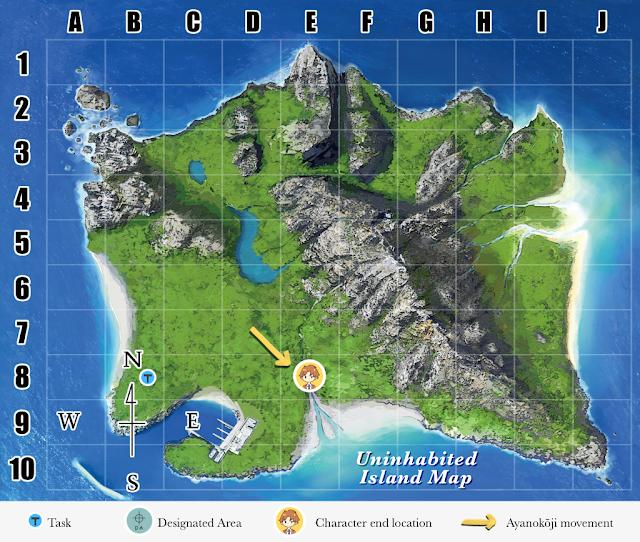
En poco tiempo, pisé el área E8 y recibí una notificación de confirmación en mi reloj. Como todo mi grupo había llegado, se me concedió la recompensa completa de 10 puntos por quedar en primer lugar.
De golpe, conseguí recuperarme del déficit de ayer. Incluso se podría decir que las cosas iban demasiado bien. Ya que tenía tiempo, lo mejor sería que también consiguiera completar alguna tarea, pero...
No había ninguna tarea en los alrededores en la que pudiera inscribirse un grupo individual, y la más cercana estaba en B8. Teniendo en cuenta el tiempo que me llevaría ir y volver, pensé que por ahora debería dejar pasar la oportunidad.
Como no sabía cuándo podría aparecer alguna otra Tarea, me limitaría a vigilar el mapa mientras esperaba mi próximo movimiento.
PARTE 1
La zona designada que se anunció a las 9:00 de la mañana era la zona E6.
Llegué un poco más tarde que a la última zona, ya que recibí una notificación de recompensa de 5 puntos por haber quedado en segundo lugar. Y a la 1:00 PM, después del descanso de dos horas, la tercera área designada fue el área F7.
Aunque empecé un poco al suroeste, mi racha de éxitos continuó, acumulando 5
puntos adicionales por otro segundo puesto. La mayoría de las tareas que aparecieron por el camino requerían la participación de al menos dos personas.
Estaba bastante seguro de que un buen número de estudiantes también acudía a ellas, algo que agradecí como alguien que se movía solo.
Hasta el momento he conseguido 23 puntos, lo que supone un total de 26 si se combinan con los 3 que gané ayer. Si bien esto era sin duda un buen progreso, un grupo de tres tendría al menos 18 puntos siempre y cuando hubiera estado acumulando constantemente Bonos de Llegada. Aunque estaba en una buena racha, la diferencia era casi insignificante.
Si perdía el ritmo aunque fuera ligeramente, empezaría a quedarme atrás de nuevo. Puede que haya conseguido el segundo puesto dos veces, pero dicho de otro modo, eso sólo significaba que me había perdido el primer puesto dos veces. Es muy posible que haya algún oponente desconocido y poderoso que tenga la misma tabla.
Por el momento, decidí volver al área E6 y esperar a que apareciera una tarea en la que pudiera participar. Hasta ahora, las tres áreas designadas hoy habían sido seleccionadas normalmente. En otras palabras, la próxima cuarta y última área del día sería la primera área designada aleatoriamente del examen.
—Ayanokouji-senpai, parece que nos encontramos de nuevo.
Mientras me sentaba para tomar un descanso, Nanase apareció ella sola de nuevo. Hasta ahora fueron seis las áreas designadas. Y a lo largo de esas seis,
me había cruzado con Nanase tres veces ya.
—Por casualidad, ¿crees que podríamos compartir la misma Tabla?
—Tal vez.
Como nos habíamos cruzado tan a menudo, no sería tan extraño que nuestras tablas coincidieran.
Aunque a fin de cuentas, no me importaba mucho si teníamos la misma Tabla o no. Lo que me preocupaba era el hecho de que nos cruzáramos tanto. Por si acaso, aunque ella y yo hubiéramos ido al mismo destino, la probabilidad de encontrarnos cara a cara como lo hemos hecho no debería ser tan alta. No sólo nuestras rutas serían diferentes, sino también el tiempo que pasamos viajando y permaneciendo en las diferentes zonas. No había notado nada que me llevara a pensar que ella me había seguido, así que supongo que se podría decir que no había sido más que una coincidencia, pero ¿realmente fue así?
Sin más pruebas, averiguar si realmente compartía Tabla conmigo o no sería imposible. Nanase estaba en un grupo junto con Amasawa y Housen. Esto significaba que, al confiar a sus compañeros de grupo la llegada a las zonas designadas, no sería penalizada por faltar a ellas. Aunque el grupo no podría obtener ninguna bonificación de Madrugador, aún podría acumular puntos de forma constante, de dos en dos.
En teoría, podría averiguar algo prestando atención a las alertas que pudiera recibir en su reloj, pero existía la posibilidad de que ya hubiera silenciado eso.
Nuestros dos últimos encuentros no duraron mucho, así que pensé que también se iría inmediatamente esta vez, pero en lugar de eso, se detuvo un momento y me miró.
—Um, Ayanokouji-senpai, hay un favor que me gustaría pedirte.
—¿Un favor?
—Si no es mucha molestia, ¿dejarías que te acompañara un rato?
—¿Acompañarme? ¿Qué quieres decir con eso?
No importaba lo increíblemente probable que fuera que ella y yo tuviéramos la
misma Tabla, el examen especial fue establecido de tal manera que hacía
esencialmente imposible que los estudiantes de diferentes años escolares colaboraran. Ninguna de las partes ganaba nada con ello.
—A decir verdad, surgió una pequeña cuestión mientras mi grupo hablaba anoche. Tanto Housen-kun como Amasawa-san consideraron que estaríamos mejor si todos actuáramos de forma independiente, así que todo se vino más o menos abajo.
Aunque todos formaban parte del mismo grupo, no había ninguna regla que dijera que tenían que trabajar juntos. Por supuesto, trabajar juntos como una unidad tenía muchas ventajas, pero la acción independiente era otra estrategia viable para los estudiantes que no tenían problemas para trabajar solos.
—Me he cruzado contigo un total de tres veces, Senpai. Por lo que he visto en nuestros encuentros, creo que has conseguido llegar a la zona designada más rápido que yo. Eso es, por supuesto, excepto la primera vez. Me temo que, si estoy sola, no tardaré en empezar a quedarme atrás en las zonas designadas.
—¿No crees que es posible que haya sido más rápido que tú estas dos últimas veces?
—Es posible que así sea, pero en cualquier caso, sigo reconociendo que estás un paso por encima de alguien tan inexperta como yo.
Aunque sus palabras me alababan, no parecía que esos fueran sus verdaderos sentimientos en absoluto.
—No creo que sea una idea muy sabia viajar junto a alguien en un año escolar diferente.
—Lo dices por la influencia que tendría en los bonos de Madrugador y la mayor competencia por las Tareas, ¿cierto?
—Habría un conflicto de intereses si nos encontráramos con una Tarea que sólo tuviera espacio para un grupo más.
—Estaría perfectamente de acuerdo con quedarme en un segundo plano en ese sentido, Ayanokouji-senpai. Sólo pondría un pie en la zona designada después de que hayas comprobado que has recibido tus puntos y bonificaciones.
De esta manera, no debería ponerte en desventaja. En cuanto a las Tareas, me remitiré a ti en caso de que sólo quede una plaza.
¿Así que no tenía ningún problema en abandonar las valiosas Tareas y los Bonos de Madrugador? No había ninguna forma física de que yo recomendara hacer eso.
—Al final perderías puntos haciendo eso, Nanase.
—Este es mi primer examen de isla deshabitada, y ya has demostrado el alcance de tus habilidades físicas durante tu pelea con Housen-kun. Sería inmensamente útil para mí si pudiera hacer que eligieras una ruta adecuada para nosotros.
Aunque dijo que la ayudaría, no necesitaba esa ayuda realmente, dado que hoy se ha movido sola por la isla sin ningún problema. Realmente no había ninguna razón para que asumiera el riesgo de viajar conmigo.
—Aunque asumamos que voy a elegir la ruta más adecuada, ¿serás capaz de seguir mi ritmo? A veces, el camino que elija puede ser incluso peligroso.
¿Serás capaz de lograrlo?
Ya sabía la respuesta a esta pregunta y, sin embargo, decidí preguntar de todos modos. Después de todo, pensé que su respuesta podría ayudar a revelar la razón de su extraño comportamiento. Sin embargo, su respuesta fue diferente a la que yo esperaba.
—Tengo bastante confianza en mi resistencia. ...No estás inseguro porque pienses que podría retrasarte, es más bien porque no eres capaz de confiar en mí, ¿no es así?
Nanase se alió anteriormente con Housen y Amasawa para intentar forzar mi
expulsión. En ese sentido, ciertamente estaba bastante lejos de confiar en ella.
Pero incluso si la rechazaba aquí, era libre de seguirme si quería. No tenía muchas opciones en ese sentido.
Aunque, si ella comenzaba a seguirme torpemente desde la distancia, parecería inusual si nos viera alguien más. Tampoco sería imposible dejarla atrás o algo así, pero hacer eso sería un desperdicio de energía. Al fin y al cabo, era inevitable que volviéramos a cruzarnos en algún momento si ambos teníamos la misma Tabla.
Siendo así, sentí que sería menos molesto a la larga si me retiraba y le permitía acompañarme.
—De acuerdo. Si eso es lo que quieres, entonces adelante.
—Muchas gracias.
Después de mostrar una sonrisa de satisfacción, Nanase se inclinó profundamente hacia mí.
—Sólo tenemos que asegurarnos de que tú y yo realmente tenemos la misma Tabla. ¿Estamos en la misma página?
—¡En efecto! La idea de que hayamos compartido casualmente algunas de las mismas áreas designadas son ciertamente factibles, así que investigar más es el primer paso natural. Sin embargo, ¿qué hacemos por ahora? Parece que aún tenemos tiempo hasta que se produzca la siguiente designación.
Sólo era la una y media de la tarde, así que aún nos quedaba más de una hora.
—Cierto... Ah, en ese sentido, acaban de aparecer algunas Tareas.
En mi tableta aparecieron varias tareas nuevas. Miré las tareas de los alrededores y decidí rápidamente a dónde ir. Luego, le mostré la pantalla y señalé la Tarea a la que nos dirigiríamos mientras comenzaba a explicarle nuestros próximos pasos.
—Parece que hay una Tarea de tipo examen justo debajo del área F8.
Iremos allí.
—¡También está bastante cerca!
—Sí. Cuando terminemos allí, si la siguiente área designada aparece demasiado lejos de nosotros, creo que desistiremos de intentar llegar allí a tiempo.
Dado que llegar a la siguiente zona podría no ser muy práctico, quería acumular puntos completando tareas.
—Entendido. Por favor, lidera el camino.
En realidad, quería dirigirme a la Tarea "Malabares con fútbol" que aparecía en el área E5, pero la ruta y la distancia la hacían mucho más difícil de alcanzar que el área F8.
En cualquier caso, primero quería averiguar exactamente de qué era capaz Nanase.
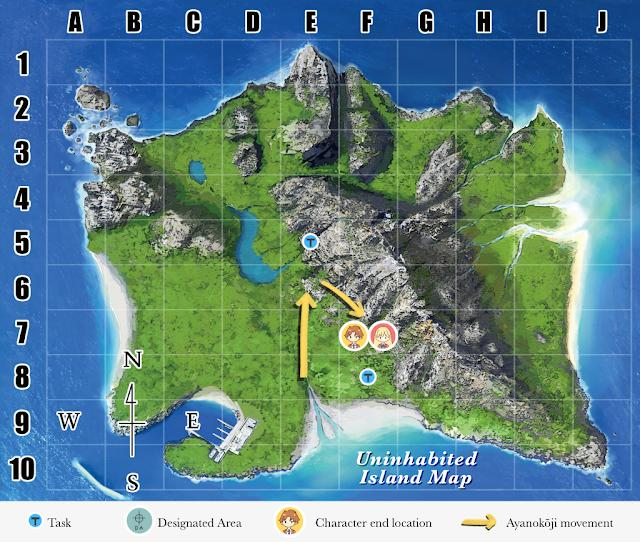
PARTE 2
—Deberíamos poder verlo en cualquier momento.
—¡Cierto!
Cruzamos hacia el área F8 con la vista puesta en alcanzar la Tarea, tabletas en mano para confirmar nuestra ubicación mientras avanzábamos.
—Por cierto Senpai, esta Tarea a la que nos enfrentamos es bastante
desafiante, ¿no te parece?
—Bueno, es un cuestionario, así que es cierto que puede haber mucho que cubrir.
La Tarea "Quiz" adoptó un formato en el que el género de sus preguntas se elegiría entre varias opciones diferentes. Aunque sería una Tarea fácil de participar porque era enteramente de opción múltiple, sería difícil de ganar si no se tenía una base sólida tanto en artes liberales como en ciencias. La participación se haría en grupo, y podrían participar hasta 12 grupos. En pocas palabras, cuanto mayor sea el tamaño de tu grupo, más mentes tendrás para trabajar y mayor será tu ventaja.
—No obstante, debería tener una oportunidad bastante decente dependiendo del género que elijan.
—Puede que sea así, pero... en realidad querías ir a por la Tarea en el área E5, ¿no es así Senpai?
Había cambiado deliberadamente mi ruta para tratar de complacerla, pero sonaba como si hubiera adivinado mi intención.
—Admito que lo consideré, pero sinceramente estaba al cincuenta por ciento. No es nada de lo que tengas que preocuparte.
—Me alegra oír eso. Sin embargo, estoy aquí simplemente para acompañarte, así que, por favor, no hagas ninguna concesión por mí, ¿sí?
—No hace falta que me lo recuerdes. Además, el cuestionario es mejor cuando se trata de las recompensas.
La tarea "Quiz" daba 8 puntos al primer puesto, 4 puntos al segundo y 2 al tercero. Además, recibías una bonificación en función del número de personas de tu grupo que participaran, lo que te permitía elegir entre una lista de provisiones y recibir comida o agua.
Era una forma ideal de reponer lo que habías consumido en los últimos dos días.
Al poco tiempo, el lugar de la Tarea se presentó a la vista, y por su aspecto, ya
se había reunido allí un número decente de personas.
—¡Yo! ¡Ayanokouji! ¡Sólo quedan tres lugares! ¡Entra antes de que sea demasiado tarde!
Habiendo notado mi llegada, mi compañero Sudou gritó mientras me hacía señas para que me acercara.
—Parece que tiene razón. Démonos prisa.
Nanase asintió en respuesta, y juntos, corrimos hacia la Tarea y completamos el proceso de registro. No nos dieron más información sobre el género del cuestionario, lo que nos hizo preguntarnos qué tipo de preguntas aparecerían.
En este punto, estábamos prácticamente en espera hasta que se presentara un duodécimo grupo o hasta que se cumpliera el plazo de inscripción en unos 30
minutos.
Ike estaba sentado un poco lejos del escritorio de registro, esperando a que comenzara el cuestionario, pero en general parecía un poco fuera de sí.
Evidentemente, estaba algo aburrido y desinteresado, y a Hondou parecía costarle mucho entablar una conversación con él, así que se dedicaba a matar el tiempo solo. Podría decirse que la mayor fortaleza del grupo de Sudou era el reforzado trabajo en equipo que se derivaba de su estrecha amistad, pero no estaba claro hasta qué punto eso les estaba funcionando realmente.
—¿Va todo bien por su parte?
Intenté lanzar una pregunta a Sudou, el único que realmente parecía dispuesto a hablar ahora mismo.
—Me está yendo bien en cuanto a puntos. Hoy quedé tercero en una de nuestras áreas designadas, y también primero en dos Tareas hasta ahora.
—No pude participar yo mismo, pero te vi quedar primero en esa Tarea de Medición de Fuerza de Agarre ayer. Con un gran margen, además.
—Diablos, ¿también ibas a participar? Si eso ocurriera, me habrías ganado
la partida, así que qué suerte tengo, ¿eh?
Sudou hizo ademán de limpiarse el sudor imaginario de la frente de forma un poco exagerada.
—¿Qué hay de tu grupo? ¿Algún problema por ahí?
—Bueno, creo que se nos está acabando el agua más rápido de lo esperado... Se siente un poco como si hubiera estado corriendo demasiado.
Al parecer, los efectos secundarios de ir a toda marcha estos dos primeros días finalmente lo habían alcanzado.
—Pero ya sabes, podemos recuperar esas cosas haciendo Tareas, así que yo diría que lo estamos haciendo bien.
Dicho esto, sin embargo, la expresión de Sudou adquirió un matiz más complicado.
—Aunque, bueno, Ike ha estado un poco fuera de sí.
—¿Por qué?
—No sé... Estaba actuando un poco extraño antes del examen, pero lo ha disimulado todo diciendo que no pasa nada.
Lo que pasó con Shinohara al parecer dejó un impacto duradero en el estado mental de Ike. El examen de la isla deshabitada estaba ya muy avanzado, con el segundo día a más de la mitad. Y mientras tanto, la chica de la que Ike estaba encandilado, Shinohara, estaba pasando su tiempo junto a su rival, Komiya. Así que bajo esa luz, tiene sentido que no pueda dejar de preocuparse por ello.
—Entiendo que estés preocupado, pero una tarea es una tarea. Si los tres se unen y dan lo mejor de sí mismos, no debería ser difícil salir victoriosos.
—Oh sí, hablando de eso Ayanokouji, estás tú solo ¿verdad? ¿Estarás bien en el cuestionario?
—Bueno, depende de si eligen o no un género que se me dé bien.
Sin responder, Sudou se dio cuenta de que Nanase estaba a mi lado y dirigió su atención hacia ella.
—Oye, ahora que lo pienso... Eres de primer año, ¿no? ¿Cómo te llamas. ..?
Sudou había participado en la pelea con Housen hace unos meses, así que era natural que Nanase le resultara familiar.
—Es Nanase, Sudou-senpai.
En lugar de contemplar a la bonita chica que tenía delante, Sudou adoptó una expresión extremadamente seria.
—... Hey Ayanokouji, ven un segundo.
De repente me rodeó el cuello con su brazo y me apartó, alejándose un poco de Nanase.
—Me parece que viniste aquí con ella, pero sabes que es una enemiga
¿no? ¿Qué demonios estás haciendo?
—Sólo me preguntó si podía acompañarme ya que es muy probable que tengamos la misma Tabla.
—¿Qué? Incluso si tienen la misma Tabla, ¿qué sentido tiene hacer eso?
Esa chica está trabajando con Housen para sacarte de aquí, ¿verdad? Esta mierda no es segura, amigo.
Se veía que, a su manera, Sudou estaba genuinamente preocupado por mí.
—Puede que tengas razón.
Sin embargo, no era tan ingenuo como para pensar que me acompañaba sin razón.
—No tienes sentido del peligro, ¿verdad? Bueno, entiendo que estés así
de tranquilo porque sabes que lo superarás, pero... Si te encuentras con
problemas asegúrate de avisarme, ¿está bien?.
Asentí en respuesta al sentimiento de Sudou, y aunque él no estaba del todo satisfecho, parecía lo suficientemente dispuesto a retroceder.
—Si te estaba haciendo pasar un mal rato, iba a hacer que se largara, pero si dices que está bien, entonces supongo que lo dejaré estar.
Justo cuando dijo eso, el último grupo terminó de registrarse y los preparativos para el comienzo del cuestionario se pusieron en marcha.
—Podemos hablar más después. Una Tarea es una Tarea, tal como dijiste, así que hagamos lo mejor posible.
Ante esto, Sudou volvió a acercarse a Ike y Hondou. Cada uno de los 12 grupos participantes sacó entonces su tableta registrada y se preparó para las próximas preguntas. Y cuando por fin llegó el momento, el género del cuestionario apareció en nuestras pantallas.
『 Género del Cuestionario・Anime 』
¿Eh? ¿Anime?
Antes de que mi mente tuviera la oportunidad de comprender completamente las palabras que aparecían en mi tableta, comenzó la primera pregunta.
『 Pregunta 1: ¿ Cuál de los siguientes es el título correcto del decimotercer episodio del anime de televisión Mobile Samurai Bombdam?』
1)『Adiós Bombdam』 2)『¡Quema! Bombdam』 3) 『Gritando, Bombdam』. 4)
『Las lágrimas de Bombdam』
—...¿Qué demonios es esto?
Hablé involuntariamente, las palabras prácticamente se escaparon de mi boca.
Obviamente tenía algo que ver con el anime dado el género y la pregunta, pero más allá de eso, no tenía la menor idea de cuál era la respuesta correcta.
—¿¡De verdad!? ¡Esto es uber-mega-fácil!
Desde cerca, Hondou gritó emocionado, agarrando con fuerza su tableta mientras seleccionaba la respuesta. ¿Fácil? ¿Esta pregunta era fácil?
Bombdam... Bombdam... ¿Qué demonios significa eso?
El género estaba definitivamente fuera de mi área de experiencia, pero aun así, yo era quien se había metido en esto, así que iba a poner todo mi empeño en lograrlo. Sólo tenía que mantener la calma. Como había cuatro opciones posibles, había un 25% de posibilidades de que respondiera correctamente aunque eligiera al azar.
Si tuviera que intentar adivinar, a diferencia de los títulos 1 a 3, el título 4 era el único que tenía la palabra "Bombdam" al principio. ¿Quizás era una especie de pista? Decidí intentarlo y elegir la cuarta opción. Poco después de hacerlo, se alcanzó el límite de tiempo y apareció la respuesta correcta.
『Respuesta correcta: Opción 2 - '¡Arde! Bombdam'』
Mi intento de razonamiento fue inútil, mi respuesta, incorrecta. Centré mi atención en la segunda pregunta, sintiendo una leve sensación de mareo mientras me encontraba bajo el abrasador sol del verano.
『 Pregunta 2: ¿ Cuál de los siguientes artistas cantó el tema de apertura del anime de televisión Dashu Sea Chicken?』
Pero la realidad es cruel. Una vez más me enfrenté al hecho de que no sabía
nada del género elegido. Naturalmente, la segunda pregunta también se me
escapaba por completo. Y esta vez, cada una de las cuatro opciones parecía prácticamente idéntica. Y entonces me di cuenta de que seguir participando no sería más que una pérdida de tiempo. Decidí seleccionar las respuestas al azar, con la esperanza de que, por algún tipo de milagro, consiguiera seleccionar las correctas.
Tras pasar los siguientes diez minutos respondiendo al resto de las preguntas, cerré en silencio mi tableta. De las 20 preguntas del cuestionario, el número que había acertado era de 4, lo que suponía un porcentaje de respuestas correctas del 20% en total. En otras palabras, lo había hecho peor que la media. Como era de esperar, el grupo que se llevó el primer puesto fue el de Sudou, con un asombroso 95% de aciertos. Al fin y al cabo, Ike y Hondou parecían bastante fiables cuando se trataba de este tipo de preguntas. No era sólo la destreza académica y física directa lo que podía resultar útil, sino también conocimientos diversos. Todo esto ayudaba a corroborar lo que Chabashira-sensei nos dijo antes de que empezara el examen.
—Todas esas preguntas eran bastante desafiantes, ¿eh?
Con 5 respuestas correctas, la tasa de precisión de Nanase era casi la misma que la mía. Esencialmente, se podía decir que no sabía casi nada de anime. Y al ver las puntuaciones de los demás, la mayoría de los grupos tuvieron la misma experiencia que nosotros.
—¡Lo conseguimos Kanji!
Como miembro del grupo ganador, Sudou levantó la mano, buscando celebrar compartiendo un choque de manos con sus compañeros.
—Yay...
Ike dio una respuesta desanimada y apenas tocó las manos de sus compañeros.
Al ver esto de primera mano, me sentí algo preocupado, sin saber si debía hablar con Sudou sobre lo que le estaba pasando a Ike.
Aunque era la segunda vez que me encontraba con él, no había garantía de que
volviéramos a encontrarnos después de esto. Si Ike se enteraba de que
Shinohara y Komiya habían empezado a salir o se habían acercado de alguna manera durante el examen, seguramente no se lo tomaría muy bien.
Sin embargo─ ¿Era Sudou realmente la persona adecuada para intentar apoyar a Ike en estos momentos? Para ello, tenía mis reservas. En un sentido académico, físico e incluso mental, Sudou sin duda había madurado respecto a la persona que solía ser. Pero, si era capaz o no de proporcionar a alguien un delicado apoyo emocional era una historia completamente diferente.
—¿Pasa algo?
Nanase me preguntó con curiosidad. Después de todo, con la Tarea terminada, no había razón para quedarse más tiempo.
—¿Pasa algo con el grupo de Sudou-senpai?
Como llevaba un rato observando de cerca, Nanase fue directo al meollo del asunto.
—Como persona ajena, ¿qué te parece su grupo, Nanase? Bueno, lo pregunto, pero supongo que será difícil que concluyas algo ya que nunca has conocido antes a ninguno de ellos aparte de Sudou.
—Efectivamente. Entonces, ¿podrías quizás ponerme al corriente y hablarme un poco de ellos?
—A la izquierda de Sudou está Ike Kanji, y a su derecha está Hondou Ryotaro. Son de los que hacen tonterías y acaban destacando de mala manera...
o, bueno, supongo que sería mejor decir que son de los que se dejan llevar fácilmente. Pero, al mismo tiempo, ambos aportan mucho al ambiente de la clase.
Definitivamente, esto me pareció una simplificación excesiva. Aunque, probablemente tampoco estaba equivocado, pero me lo guardaría para mí.
—No son un grupo estudioso ni mucho menos, así que su grupo deja
mucho que desear, pero Sudou tiene mucha fuerza física e Ike tiene las
habilidades y la experiencia adecuadas para acampar en una isla deshabitada. Y
Hondou... Bueno, Hondou es un tipo animado.
No era un mal grupo de gente con el que estar si el objetivo era simplemente pasar el examen y disfrutar por el camino.
—Ike-senpai y Hondou-senpai, ¿verdad? ¿Aportan mucho al ambiente.. .?
Por lo que puedo ver, ese no parece ser el caso de Ike-senpai; ¿Será que está enfermo?
A pesar de no haberse encontrado nunca cara a cara, Nanase fue capaz de percibir que algo iba mal. Basándose en las vibraciones que él emitía ahora mismo, ella estaba sin duda en lo cierto al decir que no parecía alguien que contribuyera al ambiente en absoluto.
—Es cierto que suele animar las cosas en clase. Aunque ahora mismo parece estar un poco decaído, al menos debería estar bien físicamente.
—Así que eso es lo que le preocupa a Ayanokouji-senpai...
Después de todo lo que se había dicho hasta ahora, Nanase también había obtenido una idea al respecto.
—Bueno, es lo que es. Es molesto, pero no puedo preocuparme siempre por los asuntos de los demás. En el cuestionario, en lugar de quedar entre los tres primeros, quedé al final. Ellos, en cambio, quedaron primeros. Dejando de lado la composición, el grupo que acumula más puntos es el mejor.
En pocas palabras, me estaba adelantando un poco al preocuparme por el grupo de Sudou cuando en estos momentos están por delante de mí en cuanto a puntuación global.
—Esa es la naturaleza de este examen especial, ¿no? Mientras juegues con tus puntos fuertes, seguirás teniendo posibilidades de luchar. En este sentido, se pone en perspectiva el esfuerzo que hizo la escuela en todo esto. Al
fin y al cabo, no sólo alquilaron toda la isla, sino que también crearon una
competición a gran escala que pone de relieve los diferentes puntos fuertes y débiles de los estudiantes.
Esto puede sonar grosero, pero simplemente no había muchas oportunidades para que los estudiantes como Ike y Hondou tuvieran un papel activo en el aula.
El deber de un estudiante consiste principalmente en estudiar y hacer deporte, por lo que se deduce que los que tienen dificultades con ambas cosas terminarán por quedarse en el camino.
Sin embargo, en este examen, otros aspectos también tienen la oportunidad de ser protagonistas. Anteriormente me preocupaba la falta de equilibrio en el grupo de Sudou, pero me pareció que iban a estar bien.
Y por eso, la salud mental de Ike era lo único que se interponía en su camino, lo que era un problema realmente complicado de resolver... Si estuviera en condiciones óptimas, este examen podría haber sido su oportunidad para convertirse en un caballo negro y dar la vuelta a su negativa reputación.
Sea como fuere─ eché una mirada de reojo a los adultos que se encontraban desmontando el lugar de la Tarea. Si bien esta escuela era obviamente diferente de una preparatoria ordinaria, el enorme costo de un crucero tan grande, todos los diversos equipos, la mano de obra y todo lo demás que se había invertido en un solo examen especial era inimaginable. La isla del año pasado había sido impresionante, pero esta vez la escuela había ido más lejos.
No sólo el presupuesto era completamente diferente, sino también el contenido.
El año pasado nos dijeron que trabajáramos juntos como clase, pero esta vez nos dijeron que nos dividiéramos en un montón de grupos pequeños y que fuéramos de aquí para allá por esta inmensa isla donde no hay nadie. Por ello, las pequeñas disputas entre compañeros podían convertirse en algo importante y sin precedentes.
Además, los asuntos relacionados con las lesiones y las enfermedades eran ahora increíblemente cruciales. Mientras que un par de rasguños o una fiebre
baja no supondrían demasiado problema, había que tener en cuenta la
posibilidad de una fractura ósea, o potencialmente algo incluso peor que eso.
Hasta que el examen de dos semanas haya llegado a su fin de forma segura, los miembros del profesorado de la escuela tampoco tendrán el lujo de relajarse.
—Pongámonos en marcha.
En lugar de quedarnos parados aquí, será mejor que nos dirijamos a la siguiente zona designada o que busquemos otra tarea en la que participar.
—Senpai, ¿puedo decir algo antes de partir?
Justo cuando empecé a caminar, Nanase se puso delante de mí y levantó la vista para encontrarse con la mía.
—Una vez más, sólo para reiterar, por favor, no hagas caso de mi presencia y elige la ruta que realmente creas más idónea. ¿De acuerdo, Ayanokouji-senpai?
Este examen de la isla deshabitada era tal que, incluso si tomabas el 1er lugar de vez en cuando, eso no sería suficiente para asegurarte la victoria. Llegar a la cima en general sería difícil si no acumulabas victorias de forma constante durante toda la larga batalla de dos semanas. Y esto no dice nada del hecho de que los grupos más grandes tienen una ventaja inherente. Si estás solo, eso significa que tienes que trabajar más duro para conseguir más puntos que los demás.
—También diré esto una vez más. No voy a dejar que tu presencia influya en mis decisiones, así que deja de preocuparte por ello.
En este punto, ya había llegado a una decisión sobre mi enfoque de esto. Un enfoque que busca desentrañar las reglas del examen y los procesos de pensamiento de quienes me rodean.
Si dejar que me acompañe fuera a obstaculizar eso, no lo habría permitido en primer lugar.
—Me alivia oírte decir eso. Por favor, cuida de mí de aquí en adelante.
Después de comprobar mi reloj, saqué mi tableta. Ya era la hora de la cuarta designación del Movimiento Básico. Sería la última del día, así como la primera zona designada al azar del examen. Cuando llegó la hora, consulté el mapa y comprobé que me había tocado el área I7.
Si queríamos tomar el camino más corto, tendríamos que cruzar una cordillera.
Sin embargo, si decidía priorizar la seguridad y tomar un desvío, tardaría bastante en llegar. Sin embargo, aquí era donde se complicaba la cosa, porque no era una zona a la que tuviéramos que llegar.
—¿Partimos?
—Antes de eso, Nanase, quiero ver tu tableta.
—Ah, es cierto. Todavía no confirmamos si tenemos o no la misma Tabla.
Aunque esperaba que al menos se mostrara algo reticente, Nanase sacó su tableta de la mochila y me mostró el mapa sin ocultar nada. Y efectivamente, su próximo destino estaba marcado como I7, igual que el mío.
—Parece que tengo la misma Tabla que Senpai.
—Supongo que sí.
No podía descartar la posibilidad de que nuestras áreas se superpusieran por casualidad a través de diferentes Tablas, pero teniendo en cuenta todo lo que había sucedido hasta el momento, resultaba bastante razonable concluir que nuestras Tablas eran las mismas.
—Con eso fuera del camino, sigamos adelante. ¿Vamos a pasar por la cordillera?
—No, esta vez no me voy a desviar por la bonificación de llegada.
Aparecieron Tareas tanto en G8 como en G9, así que estoy pensando en terminar el día dirigiéndome a esas.
Ambas tareas se centraban en conceptos académicos: la primera se llamaba
" Problemas de matemáticas" y la segunda "Problemas de inglés".
Me sentía bastante seguro de que me iría bien en ellas. Eso, siempre y cuando lograra llegar a tiempo para registrarme.
—Entonces, ¿en cuál acamparemos hoy?
—Bueno... La primera zona de mañana se centrará en el área I7. Si nos acercamos demasiado, podríamos empezar accidentalmente en la siguiente área designada. Me gustaría evitar eso si es posible.
Sólo para estar seguro, como que sería más seguro quedarse en el área H9.
—Una vez que hayamos terminado con las Tareas, creo que nos dirigiremos a H9 para acampar.
Tras escuchar mi explicación, Nanase asintió sin rechistar.
—¡Oye Ayanokouji! ¿Acabas de decir que vas a acampar en H9?
Sudou estaba a punto de ponerse en marcha después de terminar con la Tarea cuando me llamó.
—¿Hay algún problema con eso?
—No, es sólo que nuestra próxima área designada resulta ser H9. ¿A dónde vas después de esto?
—Por ahora vamos a G8 y G9 para las tareas de matemáticas e inglés.
—Uf, sí, seguro que vamos a evitar esas.
Murmuró Sudou mientras se rascaba la cabeza, como si estuviera diciendo algo obvio. Aunque estaba un poco más lejos, lo más probable es que el grupo de Sudou se dirigiera a la Tarea que apareció sobre el área E9 en su lugar.
—Si quieres, ¿qué tal si nos reunimos después y acampamos juntos?
Debería ser más divertido con amigos. También me gustaría saber qué piensas de nuestras estrategias hasta ahora y ver si tienes alguna sugerencia.
Era una propuesta inesperada, pero no mala. Es más, debería elogiarlo por su actitud progresiva. Por no mencionar que el problema con Ike también me había estado molestando durante un tiempo. Con un encuentro casual como este, Ike no sentiría que tengo motivos ocultos para acercarme a él.
—Será difícil encontrarnos en el bosque, así que ¿qué tal si nos reunimos en la playa de G9?
Ya que sería más fácil encontrarnos en la playa, esa era la mejor opción.
—Eso suena bien. ¿A qué hora deberíamos reunirnos?
—Ya que todos estaremos cerca, ¿qué tal a las 5:30?
En ese caso, seguramente nos encontraremos sin problemas después de que todos hayamos terminado con nuestras tareas.
—De acuerdo. Nos vemos en la playa de G9 a las 5:30.
Hecho esto, Sudou y sus amigos se pusieron en marcha en otra dirección, buscando emprender una Tarea diferente a la nuestra.
Bueno, no sería razonable pedirles que participaran en una Tarea de Inglés o de Matemáticas. Era natural que buscaran afrontar las Tareas que les convenían.
—Resulta que hoy pasaremos la noche con ellos. ¿Tienes algún problema con eso, Nanase?
Estaría pasando la noche con cuatro chicos mayores, así que tendría sentido que estuviera al menos un poco indecisa.
Aunque, supongo que será mejor que tener que pasar la noche acampando sola
conmigo.
—Está bien. De hecho, creo que será una buena oportunidad para conocer a todos.
Me alegró ver que se mostraba abierta a la idea.
PARTE 3
Más tarde, alrededor de las 5:30 PM, Nanase y yo estábamos esperando juntos en la playa cuando el grupo de Sudou finalmente apareció, viniendo de la dirección de su área designada.
—¿Cómo te fue?
—Ehhh... No muy bien. Después de dividirnos, aparecieron un montón de tareas nuevas, así que terminamos yendo a tres de ellas. Quedamos en tercer lugar en una, pero en las otras dos había tanta gente que ni siquiera pudimos registrarnos.
Sudou chasqueó la lengua en señal de frustración, ligeramente falto de aliento.
Nanase y yo tampoco llegamos a nuestras Tareas a tiempo para registrarnos, así que era evidente que había bastantes estudiantes todavía en los alrededores.
—El segundo día acaba de terminar, así que no se esfuercen demasiado.
Aunque habían estado acumulando puntos como locos, no se podía negar que se estaban moviendo demasiado rápido, algo que el propio Sudou ya había admitido. Era digno de elogio que Sudou, rebosante de confianza en su poder y resistencia, fuera capaz de arrastrar a Ike teniendo en cuenta su comportamiento hosco y sin ambiciones, pero lo más seguro es que no fueran capaces de mantener ese ritmo eternamente.
Hondou, en particular, jadeaba como si acabara de atravesar las profundidades del infierno. Era imposible que estuviera bien con algo tan extenuante, pero por
el hecho de que no había emitido ni una sola queja, era seguro asumir que
simplemente se había resignado, dedicando toda la energía que podía a acompañarlos.
—Lo primero es lo primero, busquemos un lugar para acampar. ¿Qué te parece, Kanji?
Sudou miró a Ike en busca de una sugerencia, provocando que el despistado muchacho señalara hacia el bosque.
—Volvamos a H9 por ahora. Antes pasamos por un claro. Eso debería servir.
Ante la desganada respuesta de Ike, los cinco nos pusimos en marcha.
—Realmente no me da la impresión de que Ike-senpai sea el alma de la fiesta que has hecho ver, Ayanokouji-senpai.
—Tiene mucho en mente.
—¿Mucho...?
—No me siento cómodo hablando de ello cuando no me corresponde hacerlo. Si realmente quieres saberlo, deberías preguntárselo tú misma.
—Tienes razón. Intentaré preguntarle cuando tenga la oportunidad.
Nanase respondió alegremente. Dicho esto, si Ike le respondería honestamente o no era un asunto diferente. Después de seguir a Ike durante unos veinte minutos, llegamos a un claro en el bosque. Era un campamento sólido; tanto que no habría mucho problema aunque tres o cuatro grupos decidieran montar sus tiendas aquí.
—Bien, vamos a montar estas tiendas pronto y a conseguir algo de comida.
Me muero de hambre.
Sudou se palmeó la barriga mientras hablaba, comprensiblemente hambriento
después de todo lo que se había movido hoy. Ante eso, tanto él como Hondou
miraron a Ike con ojos llenos de expectación.
La razón de ello era obvia, dada la caña de pescar que sobresalía de la parte trasera de la mochila de Ike. Sin embargo, Ike se limitó a permanecer de pie sin reparar en sus miradas expectantes, distraído como siempre.
—Oye Kanji. ¿No vas a ir a pescar esta noche?
Sudou lo presionó más directamente esta vez, sus expectativas se dispararon debido a su cercanía con el océano.
—¿Eh? Oh, eh, bueno... ya es un poco tarde y estoy bastante cansado, así que no. Lo siento.
Si hubiera planeado ir a pescar, se habría quedado en la playa cuando nos reunimos todos.
Bueno, eso, o tal vez simplemente no tenía el deseo de esforzarse tanto.
—Bueno, entonces supongo que no se puede evitar.
Aunque Sudou parecía decepcionado, se echó atrás con bastante rapidez, sin querer forzar la situación. Ike sacudió la cabeza de un lado a otro para no volver a quedarse absorto antes de empezar a montar su tienda.
—Parece que su mente está en otra parte.
Incluso Nanase, que no sabía nada de la situación, fue capaz de entenderlo. Así que bajo esa luz, decir que se veía distraído casi era un eufemismo.
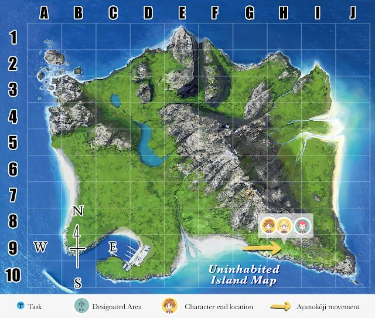
PARTE 4
Cuando terminamos de cenar, el sol ya se había metido. Eran alrededor de las 20:00 y todos estábamos pasando el tiempo libremente por nuestra cuenta. Sin embargo, esta "libertad" venía con limitaciones, ya que no sería precisamente una opción inteligente dar un paseo por el bosque circundante en la oscuridad.
Había mosquitos y más mosquitos, así que nos vimos obligados a quedarnos encerrados en nuestras tiendas.
Por ello, naturalmente, empezamos a conversar a través de la tela de malla de nuestras barreras protectoras. Nanase, Ike y yo teníamos nuestras tiendas montadas en fila. La tienda de Hondou estaba montada justo enfrente de la de Nanase con la de Sudou justo al lado.
—Así que Nanase-chan está en la clase D, ¿eh? Nunca lo hubiera adivinado.
Hondou parecía bastante feliz de estar hablando con una chica, viendo que era el que más preguntas le hacía a Nanase de todos nosotros.
—No, no. Realmente no soy una persona muy capaz... La clase D parece un lugar apropiado para mí.
—¿Eh? De ninguna manera. En todo caso, aquí los incapaces somos nosotros, ¿no es así chicos?
Hondou estalló en carcajadas él solo, divertido por su broma, pero la expresión de Sudou se mantuvo rígida. Estaba tumbado de espaldas, con la mirada fija en el techo de su tienda, sin intentar siquiera participar en la conversación. Y
aunque no podía ver lo que hacía Ike, tampoco parecía estar realmente comprometido con la conversación ya que no hacía mucho más que comentar pasivamente de vez en cuando lo que se decía.
—El ambiente se siente alicaído. Kanji, Ken, ¿qué les pasa?
—Nada en realidad. Pero déjame advertirte Ryotaro... Nanase no es de fiar.
—¿Qué? ¿Por qué?
Hondou apretó su cara contra la malla de su tienda y miró fijamente a Sudou, sorprendido por lo que su compañero estaba diciendo sobre una estudiante de primer año tan linda.
—Ninguna razón, en realidad. Solo expongo un hecho.
—¡¿Y qué se supone que significa eso?!
—Está bien Hondou-senpai. Hice algo bastante grosero con Sudou-senpai en el pasado, eso es todo.
—¿Grosero? ¿Así que no es porque trató de tocarte inapropiadamente o algo así?
—¿Crees que haría algo así?
Aunque de alguna manera se le había ocurrido la idea a él mismo, Hondou se dio cuenta inmediatamente del fallo en su lógica después de escuchar la respuesta de Sudou.
—Bueno, es cierto que siempre has sido devoto de Horikita. Pero como que, ¿qué demonios pasó entonces?
—No es algo que debas saber.
Sudou se desplazó para que su espalda estuviera de espaldas a la entrada.
Housen Kazuomi de la Clase 1-D había hecho algo realmente imperdonable a la chica que Sudou ama. Y, la que se había confabulado con él no era otra que la propia Nanase. Desde la perspectiva de Sudou, como alguien que conocía todos los detalles, tenía mucho sentido que desconfiara de ella. Si Horikita estuviera aquí, posiblemente habría dicho lo mismo. Hondou no estaba satisfecho del todo, pero como la propia Nanase dijo que estaba bien, no tenía derecho a seguir presionando a Sudou al respecto.
—Bueno, de acuerdo entonces, supongo... Pero Kanji ha estado bastante ausente todo este tiempo.
—O-oh, uh, yo... estoy igual que siempre, ¿sabes?
Ike comenzó a sentir pánico, habiéndose convertido de repente en el tema de la conversación.
—'Igual que siempre', mi trasero. Esta es una buena oportunidad, así que
lo diré sin rodeos: algo te pasa desde antes de que empezara el examen.
—Sudou me quitó las palabras de la boca. Has estado realmente desconectado hombre.
Sudou reajustó su postura para mirar hacia nosotros una vez más, claramente interesado en el rumbo de la conversación.
—¿Qué están diciendo? Miren, está todo este examen de isla deshabitada, y como que... quiero decir, estoy muy estresado porque existe la posibilidad de que me expulsen. Eso es todo.
—¿Estrés? Sí, claro. ¿No estabas súper emocionado cuando nos enteramos de este examen?
Ike tenía mucha experiencia en acampar, e incluso desempeñó un papel activo e importante durante el examen de la isla del año pasado. Sus amigos cercanos también lo sabían, así que no había forma de que lo dejaran salir de esto con una excusa como esa.
—Bueno, erm... Eso es uh, pero como que...
Oyendo como Ike luchaba incoherentemente por armar una respuesta, Nanase miró hacia su tienda y habló.
—Aunque nos acabamos de conocer, también me dio la impresión de que estabas bastante falto de espíritu.
—¿Qué opinas Ayanokouji?
Hondou me pidió mi opinión, incitándome a romper mi silencio. Dado el flujo de la conversación hasta el momento, lo más natural sería, ser sincero y darles la razón.
—Lo tengo en mente desde que nos reunimos hoy por la mañana.
—¿Ves? Los cuatro logramos captarlo.
Ike había sido arrinconado, y sólo pudo tartamudear mientras trataba de inventar
una excusa sólida.
—Antes, Ayanokouji-senpai me dijo que tú y Hondou-senpai son del tipo de personas que aportan mucho al ambiente de la clase. Pero, hasta ahora, me parece que tu mente está en algún lugar completamente distinto... ¿Hay algo que te preocupe, Ike-senpai?
Con toda probabilidad, Ike estaba sorprendido de que las palabras de Nanase hubieran dado en el clavo, aunque no supiera nada de lo que había pasado.
—Uhm, cómo decirlo...
Ike intentó frenéticamente encontrar las palabras adecuadas.
—Vamos, si te molesta algo sólo tienes que decirlo.
—Probablemente no es un gran problema.
A pesar de ser dos de sus amigos más cercanos, ambos pensaban que los problemas de Ike terminarían siendo triviales. Y por eso, sólo querían que dijera lo que pensaba. Sin embargo, su enfoque sólo hizo que Ike se mostrara más reacio a hablar.
—Sólo olvídenlo...
—¿Podrían ustedes dos esperar y darle un momento?
Tras escuchar la abatida respuesta de Ike, Nanase susurró en voz baja a Sudou y Hondou. Por un momento, Sudou pareció indignado y ofendido, molesto porque Nanase había preguntado siquiera, pero una vez que echó un vistazo a la expresión preocupada de Ike, se dio cuenta de que su amigo podría estar pasando por algo peor de lo que él mismo había creído.
—No es necesario que esperemos, Nanase-chan. Al final seguramente no es nada importante.
—No. Puede que sea demasiado pronto para decir eso Ryotaro. Tratemos
de esperar.
—¿Eh? A-ah... Bueno, supongo que podemos intentarlo.
Leer el ambiente nunca había sido uno de los puntos fuertes de Sudou. Sin embargo, por su aspecto, poco a poco había ido aprendiendo a prestar atención a su entorno y a notar los sutiles matices de una situación. Quizá fuera otro subproducto de las enseñanzas de Horikita durante el último año.
Los cuatro observamos en silencio a Ike, asegurándonos de que no se sintiera presionado para hablar. Por supuesto, no sería fácil para Ike hablar en una situación como ésta, pero al mismo tiempo, no podría dar media vuelta y huir.
Simplemente había que esperar a que se sintiera preparado para ello.
Finalmente, tras unos diez minutos de silencio, Ike se decidió y comenzó a sincerarse.
—Para ser sincero... Hay... una chica a la que le he echado el ojo desde hace tiempo.
Sorprendidos, Sudou y Hondou se giraron y se miraron a través de las pantallas de sus tiendas. Hondou se animó entonces, emocionado por la repentina aparición de un tema tan interesante.
—¿¡Qué!? ¡¡¡¿Quién?!!! ¿Quién es?
—Esperemos a que Ike-senpai se sienta preparado para contárnoslo él mismo.
Nanase intervino suavemente, buscando evitar que Hondou acosara a Ike con preguntas. Era difícil imaginar que su actual estado mental hubiera surgido simplemente por estar enamorado de alguien. Para ello, tenía que haber algo más que hubiera ocurrido después para que se pusiera así. Nanase debió entender esto también.
—H-hey pero como que, ¡tienes que lanzarte directamente con este tipo de cosas!
—¿Qué tal si te calmas y esperas a escuchar lo que Ike-senpai tiene que
decir? En lugar de preocuparte por quién le gusta, ¿no crees que es más
importante averiguar qué relación tiene con el asunto que nos ocupa? ¿O me
equivoco?
Las palabras de Nanase fueron tranquilas, pero firmes, haciendo que Hondou frenara en seco.
—S-supongo que tienes razón.
Al ser reprendido por su compañera menor, Hondou pareció darse cuenta de que estaba teniendo poco tacto y se rascó torpemente la nuca.
—La chica que me gusta...
Una vez que Ike comenzó a hablar, definitivamente los dos chicos dejaron volar su imaginación. ¿Estaba en nuestro curso escolar? ¿Una senpai? ¿O era una de las nuevas estudiantes? Y, si estaba en nuestro curso, ¿era una compañera de clase?
Las chicas populares y atractivas como Kushida o Ichinose fueron sin duda las primeras en venir a la mente.
—La chica que me gusta es... uhm... Sh-Shinohara... Shinohara Satsuki.
Cuando finalmente escucharon el nombre, por un momento pareció que Sudou y Hondou eran realmente incapaces de procesarlo. Al fin y al cabo, para ellos, Ike y Shinohara no debían de parecer más que compañeros de clase que se enfrentaban.
Ella tampoco era precisamente la chica más guapa de todas, así que su confusión era perfectamente comprensible, teniendo en cuenta lo mucho que Ike había presumido de sus planes de salir con una chica guapa.
—P-pero Kanji, como que... estás en malos términos con Shinohara
¿verdad? Siempre estás hablando de lo fea que es.
Preguntó Hondou, sin poder evitar señalar lo que parecía ser el problema más evidente de la idea.
—No es que haya sido consciente de ella desde el principio ni nada
parecido. Diablos, al principio la odiaba. Pero... no sé por qué, pero en algún
momento empecé a preocuparme por ella y, bueno... supongo que no quería admitirlo yo mismo, así que continué fingiendo que no me había enamorado de ella.
No mentía al decir esto. Era una escena natural para los que nos veíamos obligados a escuchar las discusiones diarias de Ike y Shinohara en el aula.
—Quiero decir, si te gusta Shinohara, entonces ¿por qué no vas a confesarte con ella?
Sudou ofreció una sugerencia contundente y algo burda, pero Ike respondió con un tono de desesperación.
—Es que no es tan sencillo. Ya no.
—¿Pasó algo, Ike-senpai?
—Shinohara está en un grupo junto con Komiya ahora mismo. A ese chico... es probable que también le guste ella.
En este punto, Hondou y Sudou por fin empezaron a hacerse una idea de lo que estaba pasando.
—Además, bueno... parece que ella también lo ve como alguien especial.
Un chico y una chica conscientes del otro, trabajando juntos en el mismo grupo para superar todo esto. Este examen era una batalla crucial con nuestros futuros en la escuela colgando de la balanza, así que las condiciones eran perfectas para la formación de vínculos estrechos y sentimientos fuertes que no estaban allí antes.
—Yo... me di cuenta de que me estaba enamorando de Shinohara hace poco tiempo... Así que cuando llegó este examen, quería agruparme con ella más que nada. Pero no pude ser malditamente honesto al respecto, así que empezamos a pelear como siempre lo hacemos... Es patético... Todo este
tiempo, sólo he estado buscándola...
Ike llevaba un rato distraído; sus ojos habían estado buscando, persiguiendo un atisbo de la sombra de Shinohara.
—Tal vez me hice una idea equivocada en algún momento, pensando que yo le gustaba a pesar de que discutimos tanto... Soy un perdedor. Incluso ahora no tengo ni idea de lo que debería haber hecho diferente.
Siempre hay momentos en los que te preguntas si los sentimientos que tienes son mutuos, como le pasó a Ike. Pero aun así, es imposible que alguien conozca realmente los sentimientos de la otra persona.
Esto es algo que había experimentado de primera mano cuando me confesé a Kei.
—¿No puedes ser sincero con ella, Ike-senpai? No creo que sea necesariamente algo malo.
Nanase compartió sus pensamientos después de escuchar lo que Ike tenía que decir.
—Pero... Shinohara está junto a ese chico Komiya mientras yo estoy aquí en la friendzone.
—No estoy tan segura de eso. Esto es sólo una suposición, pero... ¿no crees que Shinohara-senpai ha estado esperando a que trazaras la línea?
— ¿Trazar la línea...?
—Por lo que me han dicho, eres alguien que siempre es brillante y alegre con todos. Alguien que suele decir lo que piensa. Por supuesto, estoy segura de que Shinohara-senpai también tiene una buena opinión de ti en este sentido. Sin embargo, ¿no crees que le gustaría ser alguien un poco más especial para ti?
A menudo decía sin tapujos lo que pensaba, o dicho de otro modo, a menudo hablaba sin pensar.
—¿No crees que tal vez ella quiere que seas más sincero con tus sentimientos?
Ya era un hecho bien establecido que Ike sentía algo por Shinohara. Y al mismo tiempo, me sentía bastante seguro de que Shinohara también sentía algo por Ike.
Sin embargo, Ike discutía constantemente con ella, llegando a veces a burlarse de ella. No la trataba de forma diferente que a sus amigos varones.
Sin embargo, eso solo no era suficiente para ella, como dijo Nanase.
—Yo...
—Ike-senpai, ¿estarías contento si la chica que te gusta nunca te tomara en serio? No hay nada malo en tratar de ocultar tu vergüenza, pero no llegarás a ninguna parte si no le transmites tus sentimientos. ¿No te gustaría que ella también te mirara un poco más en serio?
Podrías obtener una nueva visión si lo miras desde la perspectiva de la otra persona. ¿Cómo te sentirías si la persona especial que siempre está en tu mente hablara constantemente mal de ti, día tras día?
—...Maldita sea.
Ike agachó la cabeza y se sujetó la cara con las manos. Ahora mismo, seguramente está recordando cómo había tratado a Shinohara en el pasado y poniéndose en su lugar, haciendo lo posible por entender cómo la habían hecho sentir sus acciones. O no, dada su reacción, ya lo había entendido.
—Sentirse preocupado por esto no es algo malo, per se, pero actualmente estás en medio de un examen especial en el que está en juego tu futuro aquí.
Tampoco serías el único expulsado; tus acciones bien podrían arrastrar a Sudou-senpai y Hondou-senpai junto contigo. Entiendo perfectamente el sentimiento de querer ir a perseguir a Shinohara-senpai, de verdad, pero deberías centrarte en luchar por la supervivencia primero.
Antes de darme cuenta, todos los presentes habían quedado hipnotizados por
las palabras de Nanase. Después de todo, ella respondió a los problemas de Ike
con mucha más sinceridad que incluso sus mejores amigos, pero esa no era la única razón.
—Si no puedes reunirte... Si nunca puedes reunirte con alguien que te importa... ¡entonces nunca podrás decirle que lo amas de nuevo!
No había necesidad de mirar su expresión. Sólo el sonido de su voz era más que suficiente para dejarlo claro.
—Tú, ¿por qué lloras?
A pesar de su duradera desconfianza hacia Nanase, Sudou habló con pánico.
—Ike-senpai, no tienes tiempo para sentirte atrapado en tus problemas,
¿no estás de acuerdo?
La pregunta de Sudou quedó sin respuesta mientras Nanase le planteaba a Ike una propia, ignorando por completo el hecho de que las lágrimas corrían por su propio rostro.
—...Sí. Primero tengo que pasar este examen sin problemas, ¿verdad?
Las palabras de Nanase, las palabras de una desconocida y menor en edad, llegaron al corazón de Ike más de lo que cualquiera de nosotros podría haber esperado.
—Ken, Ryotaro, lo siento chicos. Yo... los he preocupado mucho estos dos últimos días, ¿verdad?
Ike expresó su remordimiento, a lo que Sudou─
—No, no lo has hecho... Eh, bueno, quizá sólo un poco.
No fue capaz de animarse a decir que no hubiera existido ningún problema, pero eso era lo mejor.
—Para ser honesto, todavía estoy ansioso por Shinohara. Pero... eso no importará si no supero el examen primero. Toda mi preocupación, todo el tiempo que he pasado, todo sería en vano si no pasamos.
—¡Ey, Kanji!
Hondou estuvo de acuerdo, gritando para animar el espíritu de todos. A veces los amigos podían ser una molestia, pero en otros casos podían ser realmente insustituibles.
Sentí que esa era mi lección, lo que me llevo de lo que pasó esta noche. Y en cuanto a las lágrimas que Nanase derramó, mi instinto me decía que no fue una mera actuación, ni fue el resultado de que se dejara llevar por el ambiente.
QUÉ SIGNIFICA QUE ALGUIEN TE GUSTE
Eran poco más de las seis de la mañana, justo cuando el interior de mi tienda empezaba a calentarse, que escuché una voz procedente del exterior.
—Uhm, Ayanokouji-senpai, ¿ya te despertaste?
—Por favor, espera un segundo, enseguida salgo.
Salí de mi tienda, respondiendo a la llamada de Nanase.
—Lamento molestarte tan temprano en la mañana.
—Ya estaba despierto, así que no pasa nada. Tenemos que empezar a ordenar y prepararnos para salir pronto. ¿Qué pasa?
Eché un vistazo a las demás tiendas y me di cuenta de que nadie más se había despertado todavía, así que mantuve la voz en un susurro.
—Se trata de Ike-senpai. ¿Crees que dije demasiado anoche...?
—Bueno, más que haber dicho demasiado... A mí me pareció más bien que dijiste las cosas como eran.
Aunque pensaba que se había metido demasiado en sus asuntos personales, daba la impresión de que ella había reflexionado más o menos.
—Gracias a ti, Ike consiguió recuperarse. O, supongo que es más bien que finalmente logró asumir una postura. Creo que aprecia mucho lo que hiciste por él.
—¿Eso crees?
Asentí inmediatamente, pero ella aún no parecía muy convencida.
—Siento que Ike-senpai está en una posición algo precaria ahora mismo.
Temo que la discusión de ayer pueda ser contraproducente y lo lleve a actuar de forma imprudente... Por eso no estoy segura de que debamos separarnos de ellos de inmediato.
—No es que no entienda cómo te sientes, pero...
Aunque también me preocupaba el estado mental de Ike, viajar junto a ellos también conllevaría grandes riesgos. Cada uno de nuestros grupos tenía Tablas completamente diferentes, así que no había forma de predecir dónde estarían nuestras áreas designadas.
Dependiendo de la siguiente designación, podríamos tener que ir en direcciones completamente diferentes. Por eso me pregunté si sus sentimientos eran auténticos o quizás algo más artificial. Si era esto último, ¿buscaba simplemente impedirme ir a las zonas designadas?
No, un movimiento así me parecía demasiado débil y limitado. En cierto nivel, no podía descartar exactamente la idea de que ella pudiera retrasarme, pero...
—No es bueno, ¿eh?... Ya me lo imaginaba. Si nos separamos de ellos, es probable que no podamos volver a encontrarnos.
—Bueno, veamos...
No diría que es la mejor idea que existe, pero supongo que no sería del todo imposible de implementar. Todavía habría formas de vigilar al grupo de Sudou y estar al mismo tiempo al tanto de nuestros propios asuntos.
—Es extremo, pero en lo que respecta a reunirse de nuevo con ellos, no debería ser tan difícil. Sólo es cuestión de decidir el lugar de encuentro con anticipación. Aunque esté muy lejos, mientras nos quede resistencia para caminar, debería ser posible.
Ya sea en las zonas designadas o en las tareas, las actividades del día siempre
terminan a las 17:00 horas. En otras palabras, básicamente somos libres de
hacer lo que queramos e ir a donde queramos desde las 5:00 PM hasta las 7:00
AM del día siguiente.
—Eso es cierto y todo, pero...
Por supuesto, si esto era o no el curso de acción correcto era otra historia por completo. Cuanto más lejos estuvieran nuestras zonas designadas, más difícil sería decidir un lugar de encuentro adecuado.
—En cualquier caso, primero debemos esperar y ver qué área designada les toca.
Si su ruta es completamente diferente a la nuestra, será mejor abandonar la idea cuanto antes. Después de levantar el campamento y desayunar, llegaron las siete de la mañana y con ello el anuncio de la primera zona designada del día.
—H7, ¿eh?
No diría que fue el peor de los resultados, pero desde luego no era lo ideal ni mucho menos. No estaba claro si seríamos capaces de llegar allí en las próximas dos horas o no. Sin embargo, si no llegábamos a tiempo, sería la segunda zona que perderíamos consecutivamente. En ese caso, si la siguiente zona fuera designada al azar y apareciera en algún lugar al oeste de la cordillera, estaríamos realmente en apuros.
— Será bastante problemático si la zona designada al azar ocurre a las 9:00.
Bajo el supuesto de que todo fuera bien durante estas dos horas, es probable que sólo lleguemos a I7 o I8 como mucho. Por supuesto, no es que sea imposible llegar a H7 en dos horas, pero... Involucrar a Nanase en algo tan drástico conllevaría una cantidad equivalente de riesgo.
—Siempre podemos optar por conservar la energía y no llegar a la zona por segunda vez.
La penalización de la reducción de puntos sólo comenzaba una vez que un grupo había fallado tres designaciones de área seguidas. Así que en ese sentido, incluso si no llegamos a H7, deberíamos estar bien...
Dicho esto, si la situación se volviera nefasta, podríamos muy bien estar sujetos a la misericordia de nuestro destino, para ser siempre incapaces de encontrar el camino a la zona designada a tiempo.
—Sudou, ¿qué área designada te tocó?
—Tenemos la I8, así que si ustedes dos van en la misma dirección podemos salir juntos. Estoy entusiasmado, ¡así que hagamos esto!
Aunque nuestros destinos eran diferentes, nuestras rutas serían, en su mayor parte, las mismas. Sin embargo, este giro de los acontecimientos estaba lejos de ser conveniente. De hecho, me sentí más inclinado a llamarlo desafortunado.
Gracias a ello, me vería impedido de tomar medidas extremas. Si fuéramos a fondo tratando de llegar, Ike y Hondou seguramente no serían capaces de igualar nuestro ritmo.
—Volvemos a ir en la misma dirección, así que ¿qué tal si seguimos juntos hasta que tengamos que separarnos?
Supuse que también podríamos viajar con ellos, ya que, de todas formas, posiblemente no lleguemos a nuestra zona antes del límite de tiempo.
Después de todo, la situación de Ike seguía siendo preocupante, y al menos podríamos colaborar en caso de que ocurriera algo por el camino.
—Claro que sí. ¿Te apuntas, Kanji?
—A-ah, por supuesto.
Ike parecía algo nervioso al responder, los recuerdos de la conversación de la
noche anterior seguían frescos en su mente. La presencia de Nanase, una
extraña, ayudó a estimular a Ike. Y aunque había sido un comienzo
desafortunado para el tercer día, al menos había algunos aspectos positivos para que todo saliera como lo había hecho.
En circunstancias normales, Ike haría bromas y trataría de halagar a Nanase, parloteando sobre lo guapa que es o algo así, pero ese no era el caso para nada.
Sería innegablemente escandaloso que actuara así después de todo lo que dijo sobre Shinohara la noche anterior. Sin embargo, dado que Ike es exactamente el tipo de persona que hace cosas innegablemente escandalosas de vez en cuando, el hecho de que estuviera actuando con moderación ahora, bien podría ser una prueba de que estaba empezando a cambiar.
—Bueno, de todos modos. Supongo que yo encabezaré la marcha, así que todos pueden seguirme.
Con eso, Ike movió los hombros, estirándolos en toda su amplitud de movimiento antes de tomar la delantera y ponerse en marcha. Se había vuelto mucho más animado desde que empezamos a viajar todos juntos con ellos.
Después de todo, una falsa muestra de valor no era tan diferente de la real.
—No parece que estés disfrutando mucho de esto, Ayanokouji-senpai. Tu expresión es bastante rígida.
—No es nada fuera de lo normal.
—¿De verdad?
Si bien era cierto que estaba algo molesto por nuestra zona designada, me sentía bastante seguro de que no había dejado que se notara en mi expresión.
—Es inútil preocuparse por eso. Ayanokouji siempre tiene esa mirada.
Sudou intervino, habiendo escuchado lo que decíamos por encima de su hombro.
No estaba seguro de si debía agradecer su apoyo u ofenderme por ello.
—Pues ahí tienes la respuesta.
Tenía sentimientos ligeramente encontrados al respecto, pero al final me limité a seguir con la explicación de Sudou. Sudou dejó ver una sonrisa traviesa antes de dirigirse al frente y entablar una conversación con Ike.
—Sigues pensando en Ike-senpai, ¿no es así Ayanokouji-senpai?
—Estás leyendo demasiado. Me alegra ver que ha crecido un poco, pero sinceramente fuera de eso no estoy seguro de a qué te refieres.
—... ¿En serio?
Como existía la posibilidad de que Ike y Sudou escucharan lo que estábamos diciendo, corté nuestra conversación.
Tal y como está ahora, Ike es indudablemente más enérgico que ayer, por lo que no era incorrecto decir que había crecido en un sentido mental. En ese sentido, la respuesta que le había dado a Nanase técnicamente no había sido una mentira.
Sin embargo─ La mayor parte de este "crecimiento" era superficial. Esto no era más que el primer paso de su viaje hacia el cambio. Dependiendo de la situación, su progreso podría estancarse, o posiblemente incluso pasar por una gran regresión.
Las personas no son tan simples como para cambiar sólo porque lo desean, una verdad de la que Nanase también parecía ser muy consciente. Y para ello, quería que yo también lo entendiera. Desde un lado, pude notar que su mirada estaba fija en Ike mientras caminaba frente a nosotros, y al ver esto, no pude evitar preguntarme hasta qué punto sus pensamientos eran realmente sobre Ike.
Justo delante de nosotros, Ike y los demás alzaron la voz sorprendidos. Un pájaro salvaje había desplegado de repente sus alas desde el interior del bosque y había despegado hacia el cielo abierto. Era el tipo de visión especial y directa de la naturaleza que sólo podíamos experimentar en una isla deshabitada como
ésta.
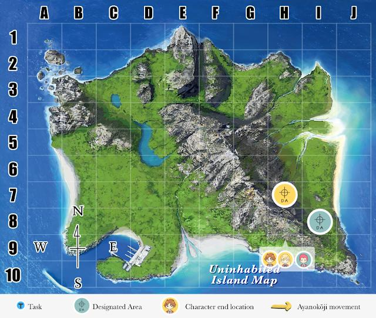
En cualquier caso, si quería averiguar la verdad sobre Nanase, mi única opción real era viajar con ella, al menos en el futuro inmediato.
PARTE 1
Eran casi las nueve de la mañana y nos encontrábamos en la esquina sureste del área I8. El camino que teníamos por delante era escarpado, pero la respiración de Nanase
no estaba agitada en lo más mínimo. Daba la impresión de que no tendría problemas
para seguir el ritmo si yo aceleraba un poco el paso. El grupo de Sudou había estado
junto a nosotros hasta hace unos minutos, pero en el momento en que llegamos a I8,
salieron corriendo para participar en una Tarea que apareció en I9.
—Por ahora, vamos a dirigirnos a J9.
—Esto es para disminuir las posibilidades de estar en la siguiente área designada a las nueve, ¿correcto?
—Sí.
Desde nuestra ubicación actual, deberíamos ser capaces de llegar a J9 en sólo unos minutos. Seguimos adelante, llegando al J9 apenas tres minutos antes de las nueve, con los ojos pegados a nuestras tabletas mientras pisábamos el área.
Durante los tres breves minutos que tuvimos, nos sentamos en el suelo y nos tomamos un descanso mientras esperábamos que se anunciara la segunda zona designada. Desde donde estaba sentada, Nanase miró la pantalla de mi tableta. Segundos después, el reloj marcaba las nueve.
—Senpai...
Al ver la siguiente área, Nanase me miró. Era la segunda designación aleatoria del examen, pero no estaba tan lejos, en el área J5. Sería un viaje complicado si atravesáramos el bosque, así que podríamos dirigirnos hacia el este y viajar hacia el norte a lo largo de la playa.
Aunque hubiera alumnos en nuestra Tabla que hubieran conseguido llegar al área H7, les llevaría mucho tiempo atravesar el bosque. Teníamos que recorrer más distancia, pero existía la posibilidad de adelantar a nuestra competencia de forma inmediata.
Cuando se trata de designaciones aleatorias, lo cierto es que no hay forma de saber dónde van a aparecer. En este caso, tuvimos la suerte de que apareciera dentro de un rango razonable. Reanudamos inmediatamente nuestro viaje sin intercambiar otra palabra.
Teníamos claro que tomaríamos un camino directo a la playa. No habían pasado ni veinte minutos cuando pisamos la arena en la esquina noreste de I8 y, desde allí, avanzamos hacia el norte por la orilla.Durante el trayecto, pasamos por la zona J6, donde nos encontramos con varios adultos que estaban preparando algo.
Les eché una mirada de reojo mientras pasábamos, y luego abrí mi tableta para descubrir que una tarea acababa de aparecer aquí.
—Enfrentamiento de Banderas de Playa, ¿eh?
Banderas de Playa es un evento deportivo que fue originalmente diseñado para que los socorristas entrenaran varias habilidades esenciales para su práctica, como la velocidad de carrera y los reflejos. Un evento perfecto para la costa de arena.
Al parecer, buscaban ocho chicos y ocho chicas, que participarían por separado.
Como sólo se permitiría la participación de una persona por grupo, la tarea necesitaba un total de ocho grupos diferentes por género. Sólo el grupo que quedara en primer lugar recibiría recompensas, ganando 6 puntos junto con la posibilidad de elegir una recompensa adicional entre varias opciones proporcionadas.
Aparte de eso, cada grupo recibiría una botella de agua de 500 ml como premio sólo por participar. Normalmente, las nuevas Tareas se anuncian a través del mapa de nuestras tabletas, pero si pasas por allí mientras se está preparando una, podrás enterarte de ella antes. Podrías inscribirte en la tarea antes que cualquier otro grupo, pero posteriormente no podrías discernir qué tipo de tarea iba a ser hasta que comenzara. Por supuesto, si se trataba de algo sencillo, se podía averiguar con sólo mirar lo que se estaba preparando, pero si se trataba de algún tipo de prueba académica, eso sería casi imposible.
Esta tarea, sin embargo, tenía un plazo de inscripción de una hora. Si nos inscribíamos ahora, nos quedaríamos atrapados en la zona cercana, dejando de
lado cualquier posibilidad de ganar una bonificación de Madrugador al llegar a
nuestra zona designada.
Por esa razón, decidí que por el momento íbamos a ignorar la situación y que íbamos a dar prioridad a llegar a nuestra zona designada. No mucho después, justo cuando empezaba a sentir que habíamos llegado al área J5, apareció una notificación en mi reloj.
—Lo logramos Senpai.
En total, nos había llevado una hora llegar hasta aquí. En circunstancias normales, tardar una hora completa en llegar a un área designada sólo te daría la bonificación de llegada. Sin embargo, tuve la suerte de ser el primer grupo en llegar, mientras que Nanase se había asegurado el Bono de Llegada de un punto, así que ambos salimos ganando. Que ella obtuviera también el Bono de Madrugador dependía enteramente de Amasawa y Housen, pero yo no tenía forma de saberlo.
Ya que habíamos lidiado con nuestra área designada, nuestro siguiente paso era volver al área J6 e inscribirnos en la Tarea de Banderas de Playa. Los dos volvimos por donde habíamos venido, con la vista puesta en acumular tantos puntos como pudiéramos.
Sin embargo, nos encontramos con algo inesperado cuando llegamos al lugar de la tarea. Una larga fila de estudiantes, tanto de chicos como de chicas, ya se había formado en el punto de registro. La zona había estado vacía cuando pasamos antes, así que ¿de dónde salió toda esta gente?
—¿Si tenemos suerte, podremos ocupar el último lugar?
—Tal vez. ¿Quizá J6 sea la zona designada para otra Tabla?
—Tal vez...
—Por el momento, vamos a comprobarlo.
—¡De acuerdo!
PARTE 2
Entramos en la zona J6 y nos acercamos al lugar de la tarea de las banderas de playa. Por lo visto, ya había más de ocho chicos participando, pero no había forma de asegurarlo todavía. Como sólo se permitía la participación de una persona por grupo, quizá todavía tenía una oportunidad.
Un estudiante de tercer año se fijó en nosotros cuando nos acercamos. Su nombre era Kiriyama, el vicepresidente del consejo estudiantil. Hasta hace unos
segundos, estaba disfrutando mientras charlaba con sus amigos. Sin embargo,
su comportamiento cambió por completo en el momento en que nos vio, ya que
inmediatamente se apresuró a dirigirse al miembro del personal encargado de la tarea y comenzó a hablarle de algo.
Aunque su extraño comportamiento me desanimó, simplemente me acerqué al miembro del personal y le hice saber que quería participar. Desgraciadamente, me dijeron que el alumno que iba delante de mí había ocupado la última plaza en la categoría de chicos, lo que me impedía participar. Vi cómo Kiriyama y los demás chicos que se habían inscrito se iban a cambiar de ropa en los vestuarios improvisados que los miembros del personal habían instalado.
Las chicas, por su parte, sólo tenían siete inscripciones, por lo que aún quedaba una plaza disponible.
—Si Senpai no puede participar, entonces yo también me quedaré fuera.
No quisiera hacerte esperar.
—Está bien, de todos modos quería tomar un descanso. Deberías participar.
—Pero...
—Como me estás cediendo todos los bonos de Madrugador, la brecha entre nuestros puntos sólo va a aumentar. No estoy diciendo nada sobre si ganarás o no, pero deberías ir por ello si crees que tienes una oportunidad.
Todavía quedaban unos diez minutos para que se cerrara el periodo de inscripción, pero si Nanase entraba, la Tarea llegaría al máximo de su capacidad.
En otras palabras, ella podría competir inmediatamente en la Tarea sin perder tiempo.
—Muchas gracias. Bueno... supongo que entonces iré a inscribirme.
Si tenía una oportunidad decente de robar puntos a los estudiantes de otros años escolares, entonces debería aprovecharla al máximo.
Dado que ella fue la que pidió acompañarme, no estaba realmente en posición de tomar decisiones voluntarias. Pero aun así, esta era una tarea en la que debía participar con firmeza.
Se había instalado una tienda de campaña un poco apartada para que la gente se refugiara de la luz solar directa, así que me acerqué a ella una vez que Nanase se marchó para cambiarse de ropa.
Había una gran variedad de trajes de baño disponibles para la tarea, tanto para chicos como para chicas. Se podría llegar a decir que la competición comenzaba realmente desde el momento en que decidías cuál ibas a ponerte. Aunque, como no se iba a nadar, la diferencia no sería tan grande, independientemente del que se eligiera.
Uno a uno, los chicos empezaron a salir de los vestuarios improvisados, vestidos con el traje de baño que habían elegido. En su mayor parte, todos llevaban trajes de baño estándar y holgados, y la única diferencia real entre ellos era el estampado de la tela. Los diferentes estudiantes que se encontraban esperando empezaron a vitorear y a gritar cuando sus amigos salieron al exterior.
Decidí echar un vistazo más de cerca a la extraña alineación de estudiantes que se había reunido aquí. Cada uno de los ocho chicos eran estudiantes de tercer año.
Del mismo modo, por parte de las chicas, había siete de tercer año. Nanase, la única estudiante de primer año, apenas había conseguido colarse.
Como norma, sólo podía participar una persona por grupo, lo que significaba que había al menos quince grupos diferentes de tercer año reunidos aquí ahora mismo. Independientemente de que estuvieran aquí por una zona designada cercana o sólo por esta tarea, el hecho de que no hubiera ningún estudiante de otros cursos presente era innegablemente inusual.
Por eso, el Vicepresidente Kiriyama era sin duda digno de atención. Si un gran
número de personas se estaban moviendo todas juntas sólo para asegurar que
él se llevara la victoria, entonces...
Me quedé pensando en esto, y en poco tiempo, todo estaba listo para que los chicos comenzaran su combate.
El formato de la competición era el típico torneo por grupos, en el que los alumnos se enfrentaban entre sí en partidos de uno contra uno para decidir quién pasaba a la siguiente ronda.
Ganar tres partidos seguidos te daba el primer puesto. Por lo tanto, debería ser capaz de ver si la competición había sido arreglada para Kiriyama, observando la intensidad de los otros estudiantes de tercer año. Al fin y al cabo, la intensidad de los encuentros ayudaría a dictar si iban en serio a ganar o no.
Sin embargo, desde el primer partido, la competencia fue inesperadamente feroz, con Kiriyama enfrentado a uno de sus compañeros de clase. Los dos chicos se levantaron del suelo boca abajo y empezaron a correr prácticamente al mismo tiempo.
Estaba tan igualado que los dos estaban en el aire mientras se lanzaban por la bandera. Incluso se podría decir que todo se redujo a la longitud de sus brazos.
Al final, Kiriyama se hizo con la bandera, y con ella, con la victoria.
Tampoco fue sólo ese primer partido. Una y otra vez, los de tercer año se enfrentaron, ardiendo de determinación para salir victoriosos.
Realmente no parecía que estuvieran jugando deliberadamente por el bien de Kiriyama, o de cualquier otro. Podrían estar tomándoselo en serio porque yo estaba mirando, pero seguramente no era el caso.
Kiriyama no era "tan" receloso conmigo, e incluso si lo fuera, era inmensamente improbable que fuera capaz de convencer a todos los demás de seguirle la corriente. En ese caso, ¿cuál sería la explicación de la multitud de estudiantes de tercer año que se extendía ante mí?
Era posible que algo más allá de mis expectativas estuviera ocurriendo aquí.
Justo cuando los partidos de los chicos estaban entrando en pleno apogeo, las
chicas empezaron a aparecer con su nuevo cambio de ropa.
Cinco de ellas habían elegido el habitual traje de baño reglamentario de la escuela. Nanase, por su parte, optó por una opción mucho más atrevida y arriesgada.
Parecía que estaban en espera, libres de hacer lo que quisieran hasta que los chicos terminaran. Ante eso, me acerqué a Nanase y la llamé.
—¿Puedo preguntarte algo?
—¿Qué pasa?
Me miró con curiosidad, en medio de unos ejercicios de calentamiento con un bikini azul verdusco.
—Veo que elegiste un traje de baño bastante lindo. ¿Hay alguna razón para ello?
Si quería que las cosas fueran sencillas, un traje de baño estándar del colegio habría sido más que suficiente.
—¿Una razón? Por lo que he visto de las Banderas de Playa en la televisión, las chicas suelen competir con trajes de baño como éste, ¿no? Pensé que sería extraño que participara con un traje de baño escolar. ¿Acaso entendí mal algo? (Texto a color, es lo que dice en la ilustración).
Bueno, si hablamos de lo que se muestra en la televisión, entonces no estaba exactamente equivocada. Después de todo, Banderas de Playa es una de las actividades recreativas más populares para la gente que viene a la playa.
En ese momento, Nanase dirigió su atención a los enfrentamientos en curso mientras continuaba con sus ejercicios de calentamiento. El encuentro final llegó a su fin con una espléndida victoria de Kiriyama. Esto era de esperar de alguien que estaba tratando de derribar a Nagumo. Sus habilidades fueron una representación exacta de su calificación de Habilidad Física B+ en la aplicación OAA.
La categoría de chicas era la siguiente, lo que significaba que Nanase participaría pronto. De hecho, su nombre fue anunciado para el primer encuentro, por lo que inmediatamente fue a tomar su posición en el campo. Su oponente era una chica de tercer año llamada Tomioka, que tenía una decente calificación de Habilidad Física C+. Nanase, por otro lado, estaba un paso por encima de eso con un B+. Dicho esto, un índice de habilidad física más alto no garantiza necesariamente la victoria.
La habilidad general ciertamente tendría un papel que desempeñar aquí, y además, todo el mundo viene con sus propias fortalezas y debilidades únicas. El hecho de que un estudiante tenga o no experiencia previa en Banderas de Playa también sería importante, pero me siento bastante seguro al pensar que se reduce principalmente a la velocidad de carrera y a los reflejos. Esto me llevó a preguntarme: ¿Quién era realmente mejor entre ellas? Al oír la pistola, Nanase se levantó ágilmente del suelo, dio una patada sobre la arena y se lanzó hacia la bandera en un rápido movimiento.
Tomioka perdió antes de tener siquiera la oportunidad de presentar batalla, y sólo quedó mirando al cielo con expresión de estupefacción. La sincronización del disparo solía ser impredecible, pero en el caso de Nanase, respondió en perfecta sincronía con el sonido del arma. Sólo eso sirvió como prueba definitiva de que sus reflejos eran varias magnitudes más rápidos que los de Tomioka.
Las seis competidoras restantes que observaban desde afuera se habían dado
cuenta de lo formidable que era Nanase. Después de los siguientes tres
enfrentamientos, se eligieron las cuatro semifinalistas, y la velocidad y los reflejos de Nanase parecían estar por encima del resto.
Sin embargo, eso no era en absoluto motivo para que se descuidara. Entre la negligencia, el orgullo, y un surtido de otros factores, había un montón de cosas que podían entorpecer sus reflejos, sin importar lo asombrosos que pudieran ser.
Y, por mucha confianza que tuviera en su capacidad para correr, si se le enganchaba el pie en la arena y tropezaba, todo habría terminado.
Pero al final del día, los resultados rara vez traicionan el desenlace favorecido.
Nanase ganó su segundo encuentro por otro gran margen, y ahora estaba a un paso de llevarse la competición.
—Es muy dura.
Kiriyama expresó su cándida impresión de Nanase mientras observaba los enfrentamientos. Por supuesto, estas palabras no iban dirigidas a mí, sino a sus compañeros de grupo.
El otro encuentro de la semifinal pasó y, en poco tiempo, se decidió el enfrentamiento final. Nanase se enfrentaría a una chica llamada Tokunaga, y esta vez, su oponente era alguien con una calificación idéntica de Habilidad Física B+. Tokunaga había ganado sus dos últimos encuentros de manera contundente, de la misma manera que Nanase. El combate final se había convertido en un verdadero enfrentamiento entre dos dignas competidoras.
Hasta ese momento, el público había estado bastante alborotado, pero todo el mundo se calmó cuando las dos chicas tomaron sus posiciones y esperaron la señal. El miembro del personal disparó la pistola por última vez, y el sonido resonó en la playa. Y con ello, las dos chicas entraron en acción, levantándose de la arena simultáneamente. El movimiento inicial fue realmente parejo, pero la similitud entre ellas sólo llegó hasta ahí.
No sólo Nanase dio el primer paso después de levantarse, sino que se impulsó
hacia adelante con una fuerza muy superior a la de Tokunaga. Y entonces, tras
una corta carrera, se lanzó, arrancando limpiamente la bandera de la arena mientras lo hacía.
Tokunaga había sido lo suficientemente hábil como para llegar hasta el combate final, y dado que también tuvo una apertura impecable, debió darse cuenta de la diferencia entre ella y Nanase. Una diferencia tan evidente que ni siquiera podía sentirse resentida por ello, sólo le quedaba sonreír amargamente con rastros de asombro en su expresión. Al final, le pidió a Nanase un apretón de manos, rindiendo el debido respeto a la vencedora dos años menor que ella.
Después de salir a lavarse toda la arena del cuerpo y del traje de baño, Nanase volvió con su botella de agua de participación en la mano. Después de luchar en tres feroces batallas en este calor sofocante, un trago de agua fría era lo que su cuerpo necesitaba.
—Ha sido una victoria aplastante.
Una vez terminada la competición, fui al lado de Nanase y le hablé mientras ella descansaba.
—Muchas gracias. Me las arreglé para conseguirlo de alguna manera.
Sus hombros se movían hacia arriba y hacia abajo hasta cierto punto y definitivamente le faltaba algo de aliento, pero en general, tuve la impresión de que no se había esforzado mucho. De hecho, me pareció que ganó con fuerza y energía de sobra. En un concurso entre una estudiante de primer año y otra de tercero, puede parecer a primera vista que la de primer año está en desventaja.
Sin embargo, por lo general, las chicas alcanzan el pleno potencial de sus capacidades físicas a una edad relativamente temprana. En consecuencia, es probable que no haya una diferencia real en las capacidades atléticas de una chica a los 15 o 16 años y de una chica a los 18. El principal factor que influye en el resultado tendría que ser la experiencia previa en el deporte en cuestión, pero en el caso de Banderas de Playa, eso no era algo que tuvieran muchas adolescentes.
No ─ ¿ tenía siquiera sentido tratar de analizarlo así? La cuestión era que la verdadera calificación de la Habilidad Física de Nanase Tsubasa era más alta de lo que reflejaba la OAA. Nos habían dicho que los estudiantes de primer año tendrían sus calificaciones evaluadas sobre la base de sus actuaciones durante su tercer año de secundaria, pero ya estábamos bien entrado el verano.
Ya había pasado tanto tiempo desde el inicio del curso y, sin embargo, Nanase seguía manteniendo una calificación de B+. A mí me parecía que ella era más que capaz de obtener una calificación de A- o incluso una A, pero...
—¿U-uhm, Ayanokouji-senpai?
—¿Hm?
—Verte mirarme así de cerca, es... bueno, es un poco inquietante, ¿sabes?
Ella apartó la mirada de mí, con una expresión algo incómoda en su rostro.
—Ah... Sí. Lo siento.
Estaría bien seguir pensando en esto una vez que Nanase se cambiara de ropa.
Con la Tarea terminada, Kiriyama y los otros estudiantes de tercer año inmediatamente comenzaron a prepararse para retirarse. Seguramente se podía asumir que se dirigirían a su siguiente área designada o a otro lugar de Tarea.
En ese momento, Kiriyama se acercó a mí por primera vez desde que aparecimos aquí.
—Ayanokouji, no digas nada innecesario.
No dijo nada más, simplemente dirigió su mirada hacia la lejana línea de costa detrás de mí. Miré por encima de mi hombro, con curiosidad por saber a qué se refería, sólo para divisar varias figuras que se movían juntas a lo largo del banco de arena. Enseguida comprendí lo que quería decir Kiriyama.
En algún momento, Nagumo, el presidente del consejo estudiantil, empezó a
juguetear con otros estudiantes de tercer año en el océano, no muy lejos del
lugar de la Tarea.
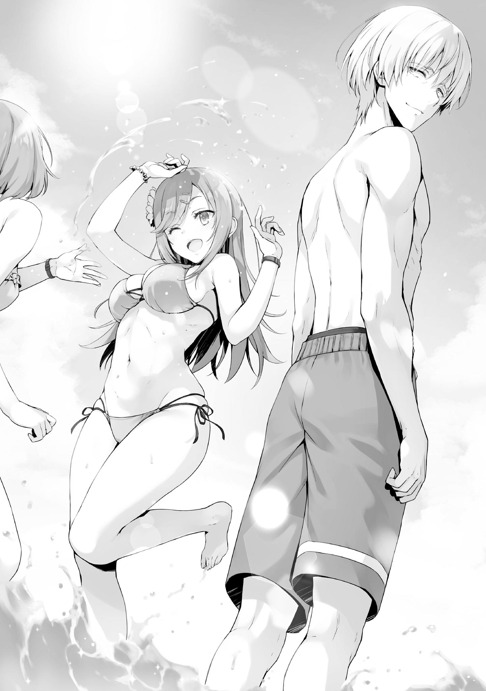
Debió de darse cuenta de que yo también lo miraba, ya que me llamó, haciéndome sutiles señas para que me acercara.
—Lo diré de nuevo para estar seguro: No te metas en mi camino,
¿entendido?
—Lo entiendo.
Junto con el resto de sus amigos, Kiriyama se dirigió hacia el bosque, dejando atrás la playa.
—Nanase, voy a ir a hablar con un senpai un rato, así que tómate tu tiempo para vestirte.
—Lo haré, gracias.
No podía ignorar exactamente a Nagumo, así que pensé que también podría ir a hablar con él, al menos durante un rato. Además, había algo por lo que sentía curiosidad.
—Por lo que vi, no fue posible que participaras en esa Tarea.
—¿No somos iguales en ese sentido? ¿O sólo viniste aquí por una zona designada cercana?
—Hmm, ¿quién sabe?
Nagumo sonrió despectivamente, evadiendo la pregunta.
—¿Qué tal si vienes a nadar con nosotros?
—Aunque me encantaría aceptar esa oferta, no me han sobrado puntos para alquilar un traje de baño como tú, presidente Nagumo.
Tampoco era sólo Nagumo. Asahina y otros estudiantes de tercer año también habían alquilado trajes de baño. Incluso habían llegado a alquilar una pelota de
playa para jugar, así que por lo visto les sobraban bastantes.
—Pareces muy tranquilo, jugando así en la playa. Pensé que estarías luchando con uñas y dientes para acumular puntos como el resto de nosotros.
—Bueno, es importante tomar descansos, ¿no? Además... el verdadero evento empieza mañana.
Mañana, es decir, el cuarto día del examen. El día en que se anunciarían los diez primeros grupos y los diez últimos en nuestras tabletas.
—Si resulta que un grupo de primer o segundo año ha conseguido colarse entre los tres primeros, tomaré las medidas pertinentes. Los de primer y segundo año no tienen derecho a subirse al podio de los ganadores. Tú tampoco eres una excepción, así que tenlo en cuenta.
En resumen, esto significaba que Nagumo tenía una estrategia de algún tipo para evitar perder. Siempre y cuando, por supuesto, no estuviera mintiendo.
—Muchas gracias por tu considerado consejo.
A fin de cuentas, Nagumo es el líder de la clase 3-A, la clase que se encuentra en la cúspide de toda la escuela. Además, es el actual presidente del consejo estudiantil. Dada su posición, lo más probable es que sus palabras no fueran mera apariencia.
—Sin embargo, estoy en un grupo individual. En lugar de estar en la parte superior de la lista, mi nombre puede muy bien aparecer en la parte inferior.
—En ese caso, será mejor que te agrupes con alguien lo antes posible.
Horikita-senpai se sentiría bastante decepcionado si te autodestruyes y consigues que te expulsen.
—Nagumo. ¿Vienes aquí un segundo?
Desde un poco más atrás, un estudiante de tercer año llamado Masuwaka llamó a Nagumo. Nagumo levantó ligeramente la mano en respuesta y salió del
océano, dirigiéndose hacia donde Masuwaka le había indicado que hablaran.
Ya estaban lo suficientemente cerca como para mantener una conversación, pero supongo que no querían que escuchara nada.
En algún momento, Asahina dejó de jugar en el océano para echar un vistazo a lo que estaba pasando, y tras asegurarse de que Nagumo estaba a una distancia adecuada, se acercó a mí.
—¡Hola! ¿Se dice que estás trabajando solo?
—Bueno. Seguro que me has oído antes, pero me espera una dura batalla.
—¿Así que...? Aunque quizá sea lo mejor. Si Miyabi empezara a perseguirte... las cosas se pondrían muy difíciles para ti, ¿no? Así que aquí tienes un consejo. Mientras tengas la oportunidad, ve a reunirte con todos los grupos que puedas y───
—Asahina, ya es hora. Pongámonos en marcha.
Justo cuando iba a susurrarme algo al oído, Nagumo volvió, haciendo que se tragara sus palabras.
—B-bueno, buena suerte.
—Gracias.
Aunque se había detenido a mitad de la frase, pude deducir más o menos lo que pretendía. Nagumo Miyabi tenía una estrategia que sólo él podría implementar.
Una estrategia que, si se ejecutaba, sin duda haría que la lucha que se avecinaba fuera aún más despiadada debido a la peculiar naturaleza del examen.
Sin embargo, otra cuestión era si usaría esa estrategia contra mí o no.
Después de todo, en este momento, yo no soy más que una existencia
inofensiva que no tiene ninguna posibilidad de ocupar uno de los primeros
puestos.
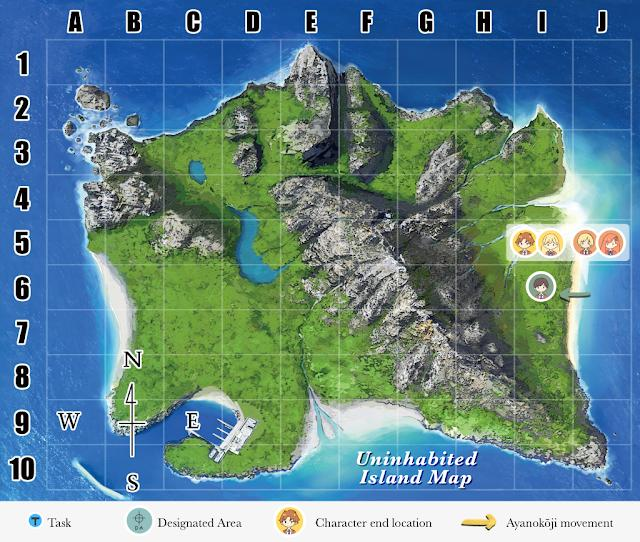
PARTE 3
Nuestra tercera zona designada del día fue H5. No podríamos llegar hasta allí caminando por la playa, pero era una ubicación relativamente decente, teniendo en cuenta todo.
—Está bastante lejos, pero deberíamos poder llegar sin demasiada
dificultad.
—Deberíamos poder llegar en una hora más o menos.
Por supuesto, si quisiéramos ir por el Bono de Madrugador, tendríamos que movernos a un ritmo más rápido que el de esta mañana. Sin embargo, aunque lo hiciéramos, seguramente sólo conseguiríamos un punto como máximo.
Era el tipo de situación que me hacía desear escapar a una tarea cercana, pero la mayoría de las tareas disponibles se concentraban en el lado oeste de la isla.
Como estábamos en el este, no teníamos muchas opciones disponibles.
Teniendo en cuenta esto, ¿sería mejor que nos apresuráramos a ir a H5 para intentar conseguir la bonificación de Madrugador, o que nos tomáramos las cosas con calma y nos conformáramos con la bonificación de llegada de un punto?
Ya habían pasado tres días desde que pisamos por primera vez esta isla; era hora de tomar una decisión.
—Nanase, ¿cuánta agua tienes?
—He gastado toda la que tenía disponible esta mañana. Lo único que me queda es la botella que me dieron antes al participar en la Tarea.
Estábamos en una situación similar, ya que a mí también me quedaba una botella de 500 ml. Aunque estábamos siendo conservadores con nuestro consumo de agua, si seguíamos teniendo que recorrer largas distancias como esta, seguramente se nos acabaría al final del día.
En otras palabras, había una perspectiva muy real de escasez de agua. Yo había comprado 3,5 litros de agua cuando empezó el examen. Incluso si los demás grupos estaban siendo conservadores con su consumo de agua como nosotros, es probable que empezaran a quedarse sin ella hoy o mañana. No estaba claro a qué porcentaje global de grupos se aplicaría esto, pero en su mayor parte, las cosas serán difíciles a partir de ahora.
—Este es nuestro primer gran obstáculo.
—Necesitaremos obtener agua fresca de alguna manera, ¿verdad, Senpai?
Si estuviera solo, optaría por llegar a las cuatro áreas designadas y despejar las tareas cercanas en el tiempo de inactividad. Y después de terminar con todo lo del día, volvería a la zona de salida para rehidratarme y prepararme para la siguiente. Esta era una de las principales estrategias que había estado considerando, pero sería difícil de ejecutar con Nanase acompañándome.
Definitivamente estaría de acuerdo si se lo explicaba, pero si caía enferma por ello, tendría que retirarse del examen.
Aunque, no estaba exactamente obligado a prestar atención a un enemigo de menor edad. Por el momento, seguí caminando hacia nuestro próximo destino.
—Ayanokouji-senpai, ¿por qué decidiste participar en el examen solo?
—No tengo muchos amigos, así que no pude encontrar a nadie con quien agruparme.
—A mí no me parece que ese sea el caso.
—No estoy mintiendo. Realmente no hay mucha gente a la que estaría dispuesto a llamar amigo.
—Aun así, estoy segura de que al menos podrías haber encontrado a alguien.
—¿Realmente tienes tanta curiosidad?
—Sí. Porque, lo mires como lo mires, actuar de forma independiente te pone en total desventaja, ¿no te parece?
Nanase, que había ido detrás de mí todo este tiempo, corrió rápidamente hacia delante para seguir mi ritmo. Entonces, me miró, tratando de averiguar mis verdaderas intenciones.
—Cuando te enfrentaste a Housen-kun, tus movimientos eran diferentes a los de un estudiante normal de preparatoria, Ayanokouji-senpai.
—Si lograste notar algo así, entonces tampoco eres una estudiante de preparatoria normal, Nanase.
Nanase pareció un poco turbada por mi respuesta inmediata y dejó ver una sonrisa algo forzada. Luego se rascó ligeramente la mejilla antes de conceder gentilmente.
—Supongo que tienes razón.
Podría haber aprovechado la oportunidad para presionarla sobre esto si quería, pero habría dependido enteramente de ella si respondía honestamente o no. Si me diera alguna mentira descarada, sería capaz de descubrirla, pero no creía que ella fuera a cometer un error como ése.
—Es cierto que actuar de forma independiente conlleva muchas desventajas. No debería ser imposible para mí unirme a otro grupo durante el examen, pero si no tengo un número decente de puntos cuando llegue el momento, acabaría causando problemas al otro grupo.
—Es comprensible. Al fin y al cabo, tu puntuación se promediará con la de ellos, independientemente del número de personas que tenga su grupo.
—Pero, parece bastante mal quejarse. La escuela nos recomendó formar grupos desde el principio, así que los que decidimos lo contrario no estamos en posición de quejarnos.
Independientemente de si decidiste específicamente no formar un grupo o no pudiste encontrar uno al que unirte, en última instancia fue tu decisión. Por lo tanto, aunque las normas te pusieran en desventaja y te expulsaran, sólo estarías cosechando lo que tú mismo sembraste.
—Aun así, tampoco es imposible que gane. Si me uniera a un grupo que estuviera luchando por acumular suficientes puntos, existe la posibilidad de que mi presencia provoque sinergias inesperadas.
—¿Así que elegiste luchar por tu cuenta para hacer surgir esas sinergias...?
¿Es eso lo que estás diciendo, Ayanokouji-senpai?
—Bueno, no estoy seguro. Sólo hablaba en sentido general. A pesar de tu idea errónea, no deberías descartar la posibilidad de que simplemente me haya costado encontrar un grupo al que unirme.
—Fufu, eso es cierto. Sin duda pareces un poco inarticulado a veces.
A pesar de su habitual reserva, Nanase dijo lo que pensaba.
—¿Siempre has sido así?
—En su mayor parte, ¿la gente con mi tipo de disposición no suele ser así desde el principio?
—No lo creo para nada. Suceden cosas que pueden hacer que alguien con un talante sombrío se vuelva brillante y animoso, y del mismo modo, alguien con un talante animoso puede volverse sombrío. Eso puede ocurrir, ¿no?
Aunque podía entender lo que intentaba decir, tenía dudas sobre hasta qué punto la naturaleza central de una persona era realmente capaz de cambiar.
—Te escucho decir que una persona naturalmente sombría puede cambiar, pero no puedo evitar sentir que sería forzado.
—Sin embargo, aunque sea forzado, el hecho de que puedan actuar de forma alegre es sorprendente.
—...Cierto.
Si de repente me dijeran que adoptara un personaje alegre y amable, no confiaría en mi capacidad para llevarlo a cabo.
Por supuesto, podía actuar temporalmente ante personas con las que no solía relacionarme, pero si me preguntaran si podría hacerlo ante mis compañeros de clase, la respuesta sería un rotundo no.
—No creo que sea capaz de hacerlo. En ese sentido, ¿has cambiado
desde que estabas en la escuela secundaria, Nanase?
Me las arreglé para sacar el tema de la secundaria sin que sonara demasiado repentino. Después de todo, alguien de la Habitación Blanca seguramente nunca habría asistido a la secundaria. Nanase hizo una pausa para reflexionar sobre mi pregunta durante un breve momento.
—No sé. No me parece que haya cambiado mucho desde entonces, pero probablemente sí, un poco.
En otras palabras, había algo que le hacía pensar que había cambiado, aunque fuera ligeramente.
—¿En qué sentido?
—En el pasado─ tengo la sensación de que antes sonreía más.
Así que para ella, la dirección del cambio había sido de "claro" a "oscuro".
—También tengo la sensación de que hablo y salgo con los demás con mucha menos frecuencia que entonces.
¿Estaba diciendo la verdad, o era simplemente una mentira que ella inventó?
—Después de todo, tuvo lugar un incidente que creo que me cambió para siempre...
Me encontré algo reacio a preguntar cuál era ese "incidente". Ella fue la que inició la conversación, y me pareció que había estado intentando sutilmente provocarme para que lo mencionara, así que decidí no seguir indagando.
Nanase esperó pacientemente a que yo dijera algo, pero en algún momento redujo su ritmo hasta que volvió a quedarse detrás de mí. Tomé nota de ello y opté por cambiar de tema.
—Por cierto, ¿cómo va tu grupo, Nanase? ¿Van bien de puntos?
—Sí. Entre Housen-kun y Amasawa-san, hemos ganado bastantes con las
Tareas últimamente. No estoy segura de quién de los dos ha contribuido más,
pero en cualquier caso, ambos están haciendo más que yo.
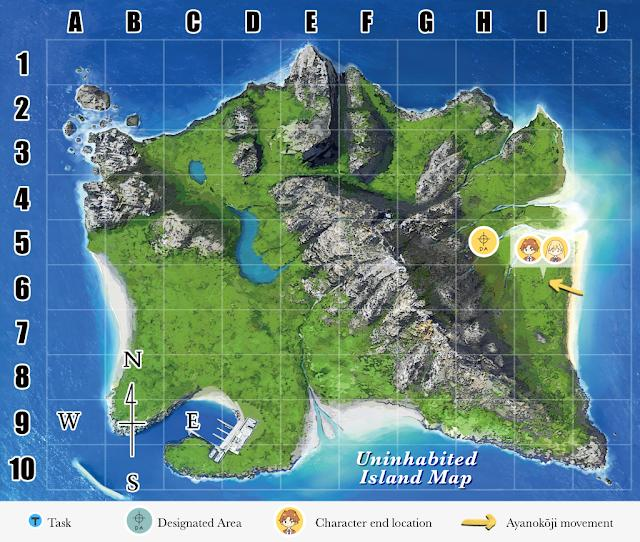
Si estaba diciendo la verdad, entonces su grupo lo estaba haciendo bastante bien. Dependiendo de lo que Amasawa y Housen hayan hecho, existe la posibilidad de que también estén ganando bonos de Madrugador, aunque eso era sólo una conjetura por mi parte.
—Por el contrario, yo podría estar en una situación de riesgo.
Aunque había estado acumulando puntos de forma constante, es seguro asumir que me estoy hundiendo gradualmente hacia los puestos de abajo. Un grupo de tres personas haciendo lo mismo que yo superaría fácilmente mi puntuación.
—Hagamos lo mejor posible para avanzar, Senpai.
—Bien.
Antes de nada, necesitábamos llegar con seguridad a nuestra siguiente zona designada. Con ese objetivo, los dos continuamos avanzando por el bosque indómito.
PARTE 4
13:55. Llegamos a nuestra zona designada, H5, en poco menos de una hora.
Aunque sólo recibimos un punto por nuestros esfuerzos, fue un paso importante en la dirección correcta. Teníamos una hora hasta la siguiente designación, así que quería ir por una Tarea si fuera posible. Antes, la mayoría de las tareas disponibles se habían concentrado en la mitad occidental de la isla, pero ahora empezaban a aparecer poco a poco por el este.
—¿Puedes continuar?
Le pregunté a Nanase, observando cómo se sentaba nada más llegar para tomar un trago de agua.
—¡Ah, sí!
Aunque era digno de elogio que fuera capaz de seguir mi ritmo, era imposible que no estuviera agotada ahora mismo.
—Deberías tomártelo con calma y descansar aquí.
—Pero...
Parecía estar preocupada de que me fuera y la abandonara.
—Diría algo si no estuviera conforme con que me acompañes. No voy a desaparecer así como así. Además, si te esfuerzas demasiado ahora, sólo te va a resultar más difícil seguir el ritmo más adelante, ¿no? Aunque hoy no habrá otra designación aleatoria, puede que tengamos que correr hacia la siguiente zona si decido ir por la bonificación de Madrugador. No podré ir más despacio y esperarte si se da el caso.
A pesar de su expresión frustrada, Nanase acabó reconociendo los límites de su resistencia y asintió con la cabeza. Lo sentí por ella, pero esto me permitiría moverme sin restricciones, aunque sólo temporalmente.
Si me movía con la suficiente rapidez, podría llegar a dos o tres de los emplazamientos de las Tareas en la zona cercana, aunque otra cosa era si podría o no participar en ellas.
Aquí, en el área H5, pronto comenzaría una tarea de "Prueba de historia", así que me dispuse a participar. El grupo que quedara en primer lugar sólo recibiría cinco puntos, pero si ganabas, obtendrías provisiones adicionales de comida, así que quise asegurarme llegar a tiempo.
La participación estaría limitada a sólo ocho grupos, que no eran muchos, así que lo mejor sería que me moviera rápidamente. Poco después de salir, logré divisar dos grupos de tres personas que corrían entre el mar de árboles y, a juzgar por su aspecto, se dirigían hacia la Tarea de Historia al igual que yo.
Afortunadamente, no me vieron, así que tras ajustar ligeramente mi ruta, comencé a correr también. Después de todo, si me tomaba mi tiempo caminando, me ganarían en llegar al lugar de la Tarea. Sin detenerme, avancé a través del bosque y finalmente llegué al lugar de la Tarea, sólo para encontrar que un número decente de personas ya se había reunido allí.
Había un adulto presente con una tableta en la mano, aunque no era un profesor de la escuela. Me dirigí a él rápidamente.
—¿Puedo inscribirme en la Tarea?
—Sí. Serás el séptimo grupo.
Una vez que terminé de inscribirme, los dos grupos que había visto antes vinieron corriendo hacia aquí. De los cuales, el primer estudiante en acercarse fue Hashimoto, un compañero de segundo año. Se dio cuenta de mi presencia, pero estaba mucho más interesado en llamar al empleado.
— ¿Todavía podemos registrarnos? —gritó Hashimoto, chorreando sudor como si acabara de correr un maratón.
—Ustedes serían el último grupo, pero─
El staff desplazó su mirada hacia los estudiantes que se acercaban por detrás.
Aparte de Kamuro, que tomó la delantera, los tres siguientes del otro grupo eran todos de primer año.
El tercer miembro del grupo de Hashimoto, sin embargo, se estaba quedando bastante atrás del resto.
Esta tarea te permitía trabajar junto con el resto de tu grupo, pero naturalmente, el personal de turno no iba a esperar a los miembros que aún no habían llegado.
Tampoco servirían las excusas de lo cerca que estaban, aunque sólo faltaran 30
segundos.
Si este grupo de primer año se colaba mientras Hashimoto esperaba al último miembro de su grupo, le arrebatarían el puesto. Por lo tanto, una vez que Kamuro se acercó lo suficiente, Hashimoto─
—Somos los únicos que participamos, sólo ella y yo.
─decidió prescindir de su último miembro e inscribirse sólo ellos dos.
Los tres de primer año se desplomaron en el suelo, frustrados. Debía ser realmente desmoralizante haber puesto tanto esfuerzo para llegar hasta aquí sólo para que no diera ningún fruto. Hashimoto, en cambio, parecía satisfecho con este resultado, aunque había perdido la oportunidad de que todo su grupo participara. En lo que respecta a las tareas que te permiten participar en grupo, cuanta más gente tuvieras, mejor te iría. Dicho esto, había un mundo de diferencia entre poder participar como grupo y no poder participar en absoluto.
—¡Lo siento, yo, yo no pude llegar a tiempo...!
Una vez que finalmente llegó, Ninomiya balbuceó una disculpa mientras jadeaba, pero naturalmente, sus compañeros de grupo no parecieron echarle en cara nada. Ninomiya tenía una calificación de A- en Habilidad Académica, lo cual no se podía tomar a la ligera. Sin embargo, su calificación en Habilidad Física era
de D-.
—En cualquier caso, buen trabajo al llegar aquí, Masumi-chan.
—Oh, cállate. No me hables... Hace calor y estoy toda sudada ahora, ¡esto apesta...!
Kamuro, que hacía lo que podía para controlar su respiración, se mantuvo a distancia, haciendo un gesto a Hashimoto para que se alejara cuando éste se acercaba a ella. Su rechazo lo hizo girarse hacia mí.
—Ahora que lo pienso, es la primera vez que nos cruzamos contigo en este examen, Ayanokouji. Así que tú también estás en la zona, ¿eh? Y pensar que también vas solo, valiente. ¿Te va bien con los puntos?
—Sinceramente, no me extrañaría quedar entre los diez últimos.
—Deja de tomarme el pelo. Es imposible que un tipo que no cree que va a ganar elija hacer el examen solo.
Sinceramente, no estaba en tan buen momento, pero no tenía ganas de mostrarle mi tableta para demostrarlo.
—Oigo lo que dices, pero cuando mañana termines apareciendo entre los diez primeros... ¿entonces qué?
Se enfrentó a mí con una mirada inquisitiva y algo dubitativa, pero de ninguna manera iba a ocurrir algo así.
—Bueno da igual, me alegro de que esto no sea un examen de matemáticas. No tendríamos ninguna oportunidad contra un genio como tú.
—Muy bien, todo el mundo, la tarea va a comenzar.
—Ups, parece que es suficiente charla.
Como el último grupo se había registrado, la Tarea comenzó inmediatamente. Al buscar y participar activamente en las Tareas, a menudo te encuentras enfrentado a estudiantes de tu propio año escolar, muy parecido a lo que me
pasaba ahora. Sin embargo, no tenía ninguna intención de relajarme con ellos.
Además, básicamente todas las preguntas de la Prueba eran de opción múltiple de cuatro opciones, por lo que, aunque obtuviera una puntuación relativamente alta, podría decir simplemente que había tenido suerte tras adivinar al azar.
Aunque mi atención estaba centrada en mi tableta, de vez en cuando veía a Hashimoto observando en mi dirección con una mirada inquisitiva.
En comparación con la mayoría de la gente, él sospechó de mí desde muy pronto, así que era comprensible. En ese momento, empecé a abordar las veinte preguntas del examen. Sinceramente, si me preguntaran si se me da bien o mal la historia como asignatura, me inclinaría por lo segundo. Esto se debía a que, en la Habitación Blanca, no había un enfoque particularmente fuerte en la enseñanza de la historia. Sea como fuere, estaba lo suficientemente familiarizado con el tema como para tener una idea de lo básico. Como cada pregunta sólo tenía cuatro opciones, pude responderlas todas correctamente sin ninguna dificultad.
Tras una breve espera, se contaron los resultados y se anunciaron las puntuaciones finales de cada grupo. Yo obtuve el primer puesto con un total de 100 puntos, el segundo fue para un grupo de estudiantes de tercer año con 80
puntos, y el tercero para Hashimoto y Kamuro con 70.
Una vez que recibí mis puntos y las provisiones de comida, me dirigí inmediatamente hacia mi próximo destino. Pero Hashimoto me siguió de cerca y me alcanzó rápidamente.
—Realmente me has pateado el culo allí. Y pensar que también eres bueno en historia.
—Yo también me sorprendí. Tuve suerte en varias preguntas ya que eran de opción múltiple.
—Así que fue pura suerte, ¿eh? Me cuesta creerlo.
—Bueno, si no me crees entonces no hay nada que pueda hacer al
respecto. Ahora mismo tengo prisa, lo siento.
—¿Qué tarea es la siguiente?
—Pensaba ir a la tarea de química. ¿Y tú?
Vi como lanzaba una mirada a Kamuro que le seguía por detrás. Con toda probabilidad, su grupo había estado pensando en hacer lo mismo.
—Qué pena. Iremos en direcciones diferentes.
Hashimoto es una persona astuta. En lugar de intentar la misma tarea que un oponente que estaba seguro ocuparía el primer puesto, prefería cambiar sus objetivos a otro lugar para tener más posibilidades de ganar, aunque le llevara un poco más de tiempo conseguirlo. Sin embargo, la verdad es que quería enfrentarse a la misma tarea que yo para saber de qué era realmente capaz.
Al oír lo que dijo Hashimoto, Kamuro dejó ver una mirada de evidente disgusto y desgana. Después de todo, tener que ir a una Tarea diferente consumiría mucha más energía.
—Hasta luego, Ayanokouji.
Con Kamuro detrás, Hashimoto salió corriendo, dirigiéndose a una de las otras Tareas cercanas. Si estaba siguiendo las instrucciones de Sakayanagi, entonces tarde o temprano, se unirían probablemente con el grupo de Ichinose y formarían un equipo de seis miembros.
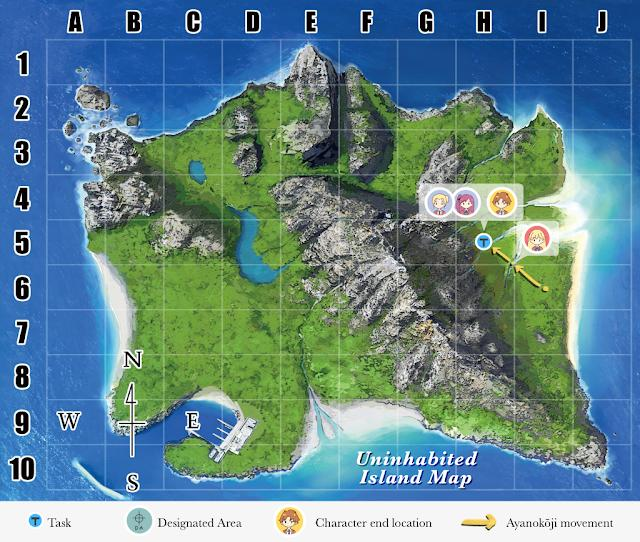
PARTE 5
Tras la tarea de historia, participé en la tarea de química y volví a obtener el primer puesto, acumulando cinco puntos más. Y gracias a ello, a falta de una zona designada para el tercer día, había acumulado un total de 48 puntos.
Un grupo de tres personas que sólo hubiera ganado bonificaciones de llegada, es decir, un grupo que hubiera renunciado a las bonificaciones de Madrugador y a las Tareas, tendría un total acumulado de 30 puntos.
Como todavía no podía saber cómo estaba la clasificación de grupos, sólo podía
especular sobre lo bien que me iba. Justo antes de las 15:00, me reuní con
Nanase. Poco después, se reveló la última área designada del día: el área I4.
—¿Te sientes mejor?
—Gracias a tu preocupación de antes, mi energía se ha recuperado por completo. Estoy preparada para cualquier cosa que me puedan lanzar.
Esta era la última cosa en nuestra lista para el día, así que ya que ella estaba dispuesta, pensé que podríamos ir a toda máquina. Después de decidir la ruta, nos pusimos en marcha rápidamente, con la vista puesta en la bonificación de Madrugador. Caminamos juntos en silencio durante un rato, pero nuestro entorno era muy diferente al anterior.
—¿Sabes? Debo decir que... no hay ningún camino decente hacia adelante por aquí, ¿verdad?
—Sí. Cuando miré el mapa, pensé que esta parte de la isla sería más fácil de atravesar que las zonas D o E, pero supongo que fui demasiado optimista.
Aunque el bosque no era tan denso como para que las copas de los árboles taparan por completo el sol, el terreno de abajo seguía siendo áspero y difícil de pisar. El camino era tal que, si querías avanzar en una dirección concreta, tenías que desviarte constantemente hacia la izquierda y la derecha para hacerlo, ya que no era posible moverse en línea recta.
Los estudiantes que pisaran esta parte de la isla lo pasarían bastante mal.
Cualquier intento de atravesar apresuradamente la zona conllevaría el riesgo de que el pie se enganchara en algo. En el peor de los casos, podrían incluso sufrir una lesión.
—Uhm, Senpai, ¿cómo piensas conseguir más agua?
Aunque había conseguido victorias consecutivas en las tareas de historia y química, no me dieron agua como recompensa por ninguna de ellas. Por lo tanto, mi única reserva de agua potable era una botella de 500 ml.
—Si crees que el agua tiene prioridad sobre llegar a nuestra área
designada, ¿qué tal si vamos a la Tarea en H3 en su lugar?
En la zona H3, una Tarea apareció cuando faltaban unos 50 minutos para que finalizara el plazo de inscripción. No sólo premiaba a los grupos con puntos, sino también con agua potable. Además, era una botella de dos litros.
—Seguramente será muy disputada.
Discutimos la idea, pero seguí avanzando sin parar. Pronto, otros grupos empezarían a quedarse sin agua, al igual que nosotros dos.
—Aunque podamos conseguir agua de las Tareas, las oportunidades de hacerlo son bastante limitadas.
En el primer día del examen, se habían realizado 68 Tareas en toda la isla. El segundo día, este número subió a 100. Y hasta hoy, el tercer día, ya se habían celebrado 94. Aunque el número de Tareas aumentaba día a día, todavía no se acercaba al número de grupos que había.
No habría nada de qué quejarse si fuera posible que cada grupo ganara una vez al día. Pero incluso si se incluyen las tareas que premian a los tres primeros grupos, no hay suficientes. Después de todo, muchas Tareas sólo ofrecían recompensas al grupo que quedaba en primer lugar.
Por supuesto, tampoco ayudaba que un grupo especialmente hábil pudiera arrebatar el primer puesto tres o cuatro veces en un solo día. Teniendo en cuenta todo eso, no sería raro que ya hubiera grupos que hubieran agotado su suministro de agua potable.
Si eso le ocurriera a tu grupo, te verías obligado a volver a la zona de salida y a competir dentro de lo que sería una zona de seguridad establecida.
No podrías ganar puntos con normalidad, ya que no llegarías a la mayoría de tus zonas designadas, y las tareas que aparecieran en la zona cercana se volverían increíblemente competitivas. Obligado a librar una batalla perdida, tu situación no haría más que empeorar a medida que tus puntos se fueran reduciendo poco
a poco. Cuanto más se acercara el área designada de uno a la esquina noreste
de la isla, menos control tendrías sobre tu capacidad de rehidratarse
inmediatamente.
—Tienes algo en mente, ¿no es así Senpai?
Nanase se acercó para caminar a mi lado mientras preguntaba, con sus ojos mirando en mi dirección.
—¿Qué te hace pensar eso?
—El hecho de que no parezcas muy preocupado por nuestra inminente falta de agua.
—Tal vez estoy pensando en dejarlo al azar.
—Eso sería un pequeño problema para mí...
Nanase puso una expresión complicada, sorprendida por mi broma.
—Originalmente había planeado volver a la zona de salida en caso de emergencia.
—Nuestras circunstancias actuales no nos permiten hacer eso, ¿verdad?
Tardaríamos varias horas en volver al puerto desde aquí. Y sería todavía más lento si optamos por hacerlo de noche.
Naturalmente, no era una estrategia que pudiera utilizarse desde cualquier lugar de la isla. Cuanto más lejos estuvieras de la zona de salida, mayor sería la presión sobre tu tiempo y tu resistencia.
—Aun así, es una estrategia que he considerado implementar.
—El agua es una necesidad absoluta, pero si lo haces de esa manera, puedes hacerte daño. No creo que sea una idea muy sabia, ni mucho menos.
Sus preocupaciones en este caso estaban claramente justificadas.
—Y sin embargo, ¿me estás diciendo que esta peligrosa idea es la única que has estado considerando, Ayanokouji-senpai?
—Si te fijas en las reglas de este examen especial, está claro que el único método para conseguir más agua es comprarla al doble de su precio en la zona de salida o ganarla completando una Tarea.
—Eso... Sí, supongo que tienes razón en eso.
—Y entre esos dos métodos, el único realmente fiable para conseguir agua segura y potable es comprarla con puntos.
—¿Agua segura y potable eh...?
—Fuera de eso, tendrías que depender de fuentes naturales de algún tipo, ya sea agua de mar, de lluvia o de río. Esta es una isla deshabitada, pero no nos han informado sobre la historia de la isla. Si la gente solía vivir aquí, es posible que el agua haya sido contaminada.
Por supuesto, era difícil imaginar que la escuela nos hiciera venir aquí si ese fuera el caso, pero no había forma de estar seguros.
—Como grupo individual, si me enfermo, estaría acabado. No voy a hacer nada que me ponga en riesgo.
—Obligarse a atravesar la isla de noche ya es más que arriesgado.
—Si falla, entonces se acabó.
—...¿Así que estás diciendo que, si eres tú, no fallarás?
En cualquier caso, no tenía sentido seguir hablando de esto en este momento.
Después de todo, desde el momento en que permití que Nanase me acompañara, ya no tenía ninguna intención de llevar a cabo la idea.
—Es un poco tarde para plantear esto ahora, pero tengo una forma de utilizar el agua de mar o de río. Si es necesario, podemos esterilizar nuestra propia agua potable hirviéndola en una olla que he preparado.
Al oír esto, dejó escapar un suspiro de alivio con la mano en el pecho. Después de caminar juntos durante un rato más, Nanase finalmente vio el río que fluía y se apresuró a sacar su tableta.
—Uhm, Senpai, parece que nos hemos desviado. Tenemos que ir más al este.
Se suponía que íbamos a dirigirnos hacia el área I4, pero en este momento nos estamos moviendo hacia el centro del área H4. Si queríamos llegar a I4 lo antes posible, entonces tendríamos que ir hacia el este, tal y como había dicho Nanase.
—Está bien. No estamos buscando el Bono de Madrugador esta vez.
—¿Eh─?
Aunque tenía sus dudas sobre lo que impulsaba mi decisión, Nanase me siguió.
Finalmente, llegamos cerca del centro del área H4, donde nos encontramos con Sakagami-sensei, trabajando arduamente en la preparación de un sitio de Tarea.
Parecía que mis predicciones hasta ahora eran correctas. El sitio estaba exactamente donde había pensado que estaría.
—Hola.
—Oh... ¿Ayanokouji?
Aunque Sakagami-sensei parecía sorprendido cuando le llamé, no hacía falta decir que alguien tenía que preparar una Tarea antes de que empezara oficialmente, así que siempre existía la posibilidad de encontrarse con estudiantes antes de lo previsto.
—¿Está bien si somos los primeros en apuntarnos, Sakagami-sensei?
—Sí.
—Esto es genial Senpai. Tenemos suerte de haber encontrado otra Tarea antes de que apareciera en nuestras tabletas.
—Qué suerte.
Sakagami-sensei no parecía tener tiempo para hablar con nosotros, y rápidamente volvió a la construcción de la instalación. Después de esperar unos minutos, el reloj marcó las 3:30.
—Entonces, ya pueden inscribirse en la Tarea.
Tan pronto como oí esto, me acerqué inmediatamente a Sakagami-sensei y reafirmé mi intención de participar. Nanase me siguió rápidamente después de que terminara el proceso de registro en mi tableta.
—Pero, me pregunto qué tipo de tarea es ésta.
Justo cuando Nanase estaba a punto de abrir el mapa para intentar responder ella misma a la pregunta, Sakagami-sensei habló.
—Se trata de una Tarea en la que se gana agua según el orden de llegada, una carrera, esencialmente. Ayanokouji, al haber llegado primero, recibirá dos litros de agua y tres puntos. Como has llegado en segundo lugar, Nanase, recibirás 1,5 litros de agua y dos puntos.
— Eso quiere decir ─ que ya superamos la Tarea ¿no es así? ...Qué sorpresa.
Sakagami-sensei fue a buscar el agua que ganamos y nos la entregó a cada uno.
—La suerte también es una extensión de sus habilidades. Siéntanse orgullosos.
—...Somos realmente afortunados.
Nanase parecía algo avergonzada mientras inclinaba la cabeza y aceptaba el
agua.
—Con esto, no tendremos que pensar en el agua. Bueno, al menos durante un tiempo.
—Oye... ¿podría quizás confirmar algo contigo?
Poco después de salir del lugar de la tarea, volví a mirar a Nanase, que se había detenido para preguntarme algo.
—¿Qué es?
—Si no me equivoco, creo que eres alguien que puede apuntar mucho más alto, Ayanokouji-senpai. Ya sea en las áreas designadas o en las Tareas, estoy segura de que eres capaz de conseguir un número bastante alto de puntos.
Buscaba confirmar lo que le había estado rondando por la cabeza mientras viajábamos juntos estos dos últimos días.
—Nunca planeé esforzarme durante las primeras etapas del examen.
Como estoy solo, todo se acabaría si por negligencia enfermara o me lesionara.
—Pero, tal y como van las cosas ahora, ¿no temes seguir quedándote atrás con respecto a los otros grupos? Pase lo que pase, la eficiencia del tiempo es importante. No es algo que se pueda trabajar para superar en un solo día.
Ella estaba diciendo que trabajar incansablemente para acumular puntos era el único enfoque real disponible. Y como enfoque, era uno firme que los grupos más prominentes sin duda buscarían implementar.
—Digamos que esto es sólo una parte de mi estrategia.
—¿Una estrategia... que implica contenerse deliberadamente a la hora de ganar puntos?
Asentí con la cabeza y me puse a caminar de nuevo. No era algo en lo que quisiera entrar en más detalles con ella. Aunque viajáramos juntos, eso no
cambiaba el hecho de que nuestros diferentes años escolares nos convertían en
enemigos naturales. Además, también había muchos misterios en torno a ella.
—De todos modos, todavía hay una oportunidad para que consigamos el Bono de Madrugador en el área designada. Démonos prisa.
—S-sí.
Nanase se apresuró a alcanzarme cuando me fui, y juntos, nos dirigimos rápidamente al área I4.
PARTE 6
Nuestra racha de buena suerte no duró mucho. Llegamos al área I4, pero, como era de esperar, no recibimos la bonificación de Madrugador. Tampoco tuvimos la suerte de toparnos con ninguna Tarea potencial.
Aunque todavía quedaba mucho por hacer, el telón cayó en el tercer día del examen.
—¿Debemos seguir caminando hacia la orilla del río?
—Sí. El terreno por aquí no es el mejor, y tampoco hay muchos lugares adecuados para pasar la noche. Sigamos adelante.
—¡Está bien!
Cortamos un camino hacia el sur a través del bosque, avanzando con la vista puesta en la orilla del río. Después de veinte minutos, finalmente llegamos a nuestro destino.
—¿Quieres acampar en algún lugar por aquí?
—Me parece bien.
Justo cuando los dos llegamos a un acuerdo, oí una voz en algún lugar en la distancia.
—¡Heeey-! ¡Ayanokouji-!
Una voz familiar, proveniente de alguien que me llamaba desde el otro lado del río. Era Ike, que estaba de pie con un montón de ramas secas en sus brazos.
—¡Ayanokouji-! ¡Nanase-! ¡Creí que eran ustedes dos! ¡Así que aquí es donde han estado-!
Se acercó al río, sonriendo con sus dientes perlados a la vista.
—¡Qué increíble coincidencia! ¿Van a acampar por aquí esta noche, Ike-
senpai-?
Nos vimos obligados a alzar la voz mientras hablábamos, intentando inútilmente ahogar el sonido del río que corría entre nosotros. Después de gritar de un lado a otro durante un rato, Ike finalmente envió la señal para que nos uniéramos a él en el otro lado. Siguiendo sus instrucciones, Nanase y yo nos dirigimos río arriba.
Al poco tiempo, llegamos a un puente de tierra cerca del lado sur de H4 y nos reunimos con él. Sudou y Hondou también estaban presentes, pues se habían acercado tras escuchar nuestras voces.
— Esperen, ¿cuál fue su última área designada hoy?
—I4.
Sudou intercambió miradas con sus compañeros de grupo, sorprendido por mi respuesta. Al parecer, su última zona del día había sido también I4.
—¡Hombre, qué casualidad!
Esta mañana, todos habíamos empezado en el mismo lugar, y sorprendentemente, también terminamos el día en el mismo sitio. Aunque, teniendo en cuenta que me había topado con Sudou varias veces ya, podría haber algún tipo de tendencia incorporada para que nuestras Tablas nos llevaran a los mismos lugares a pesar de ser diferentes.
Llegados a este punto, decidimos acampar todos juntos de nuevo, tal y como habíamos hecho ayer. Como teníamos libre el resto del día, cada uno se fue a hacer lo suyo durante un rato. Por supuesto, seguíamos colaborando cuando era necesario, ya que todos formábamos parte del mismo campamento.
Le dije a Nanase que iba a dar un paseo y me adentré en el bosque yo solo. No tenía una razón especialmente importante para hacerlo ni nada parecido, pero si tuviera que inventarme una, sería echar un vistazo a la zona en busca de otros estudiantes. Después de todo, con la excepción del grupo de Nanase, aún no me había cruzado con ningún otro que pareciera tener la misma Tabla que yo.
Volví al campamento una media hora después, justo a tiempo para ver a Ike
encender la hoguera en la que había estado trabajando.
—Eres muy ingenioso.
—Bueno, tienes que hacer lo que puedas para ayudar. ¿Sabes que esta vez nos dijeron con anticipación que haríamos un examen en una isla? Creo que la mayoría de la gente fue y buscó cómo manejar este tipo de cosas por eso.
Con los ojos fijos en la hoguera que tenía delante, Ike continuó.
—Pero, bueno, hay una diferencia entre conocimiento y experiencia, ¿no?
Cómo decirlo... Si pudieras hacer algo sólo porque lo conoces, nada sería difícil.
Es cierto que no siempre se puede hacer algo con sólo leer un par de artículos o ver un vídeo sobre ello. Sólo podrás saber de qué eres capaz probándolo por ti mismo.
—Ah, ahí estás, Ayanokouji-senpai.
—¿Qué pasa?
—Te has ido un rato, así que fui a buscarte.
Nanase dirigió su mirada hacia el bosque mientras hablaba. Por lo que parece, acabábamos de cruzarnos cuando volví.
—Muy bien chicos, creo que ya es hora de que comamos algo.
—De acuerdo.
Ike tenía una amplia sonrisa en su rostro mientras iba a buscar un cubo junto a su tienda.
Y entonces, nos mostró con orgullo lo que había dentro.
—¡Wow, increíble...!
El cubo contenía varios peces que, al parecer, Ike había capturado en algún
momento.
—Tenía algo de tiempo libre cuando mi grupo estaba junto al mar, así que aproveché para pescar algunos. ¡Vamos a comer!
Con cierta prisa, Ike comenzó a preparar la cena. A simple vista, parecía estar de buen humor, pero era obvio que sólo estaba fingiendo. Sin embargo, parecía estar asumiendo el examen de la isla deshabitada con la cabeza mucho más equilibrada de lo que yo pensaba, así que por ahora, supongo que no había nada de qué preocuparse.
—Algo huele muy bien por aquí-
Un grupo de tres personas que pasaba por la zona se acercó a nosotros, quizás atraídos por el apetitoso olor del pescado que Ike estaba asando. Estábamos acampando al aire libre, ya que estábamos junto al río, así que no era de extrañar que nos hubieran visto.
Sin embargo, lo que fue completamente inesperado fue la identidad de uno de los tres estudiantes del grupo.
—¡Ah-!
Una chica, la segunda en acercarse a nosotros, dejó escapar involuntariamente la voz y gritó al hacer contacto visual conmigo.
—¿Qué pasa, Karuizawa-san?
—Oh, nada. Sólo estaba sorprendida por lo del pescado a la parrilla, eso es todo.
Habló, intentando disimular su sorpresa por encontrarse casualmente conmigo de esta manera. El examen sólo había durado tres días cuando tuve mi primer encuentro con Kei, pero aun así, parecía estar haciéndolo bien hasta ahora.
Sus dos compañeras de grupo eran de la clase 2-A. Se llamaban Shimazaki Ikkei y Fukuyama Shinobu, y ambas eran estudiantes muy dotadas
académicamente. Aunque, en conjunto, su grupo era más bien escaso en cuanto
a fuerza física y resistencia, ciertamente tenían el potencial para reclamar el primer puesto en cualquier prueba escrita en la que se inscribieran.
—Oye, ¿por qué no acampamos aquí también? Creo que Ike-kun estaría dispuesto a invitarnos.
—¿¡Haah!? ¿Por qué debería invitarte?
—Vamos, no es que te vayas a quedar sin pescado.
—¡Habrá menos para nosotros si ustedes se los comen! ¡Ni hablar!
A Ike no le gustaba mucho Kei en primer lugar, así que se negó rotundamente.
Sin embargo, Sudō lo apartó y le murmuró unas palabras al oído.
—Amigo, ¿cuál es el problema? Puede que sepa algo sobre Shinohara.
Al oír eso, Ike se quedó callado. Todavía no había podido encontrarse con Shinohara en la isla. Y como Kei era una compañera de clase, era razonable suponer que recordaría si había visto a Shinohara en algún lugar antes.
—¡No se puede evitar! ¡Supongo que tendré que preparar para tres personas más!
—¿De verdad? ¡Qué bien! Menos mal que intenté preguntar.
Kei sólo bromeaba a medias cuando planteó la idea, pero de alguna manera, la llevó a acampar junto a nosotros. Dicho esto, preparar la comida llevaría tiempo.
Probablemente pasaría un rato antes de que Ike terminara de asar el pescado adicional.
Anuncié que me adentraría un poco en el bosque, y Kei haría lo mismo no mucho después. Por supuesto, no nos adentramos tanto como para perdernos; sólo lo suficiente como para asegurarnos de que los demás no pudieran vernos ni oírnos. Nos reunimos en un árbol bastante grande y nos sentamos juntos con
la espalda apoyada en el tronco.
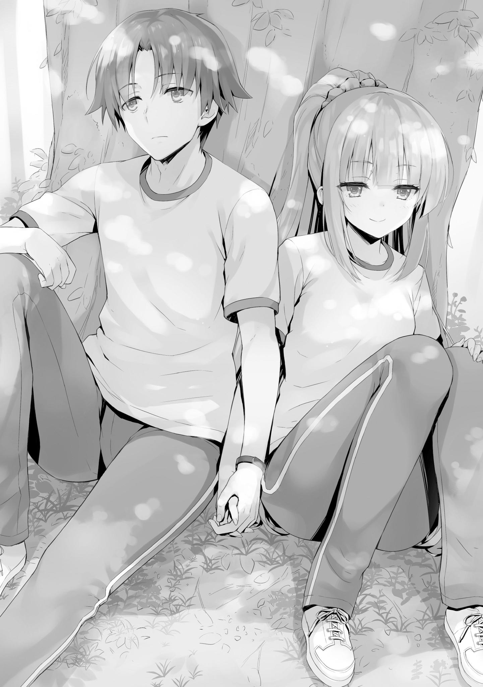
—Parece que lo estás haciendo bien.
El grupo de Kei había conseguido 37 puntos en estos últimos tres días. Al menos por ahora, no lo estaban haciendo tan mal.
—En su mayoría, sólo dependo de las otras dos. ¿Y tú, Kiyotaka?
—Me va bien, teniendo en cuenta todo esto.
—Bueno, ya que es de ti de quien hablamos, seguro que estarás bien.
Kei dejó escapar un ruido mientras se estiraba.
—De todos modos, sólo deseo que este examen termine ya... No puedo creer que todavía tengamos 11 días más de esto.
Teniendo en cuenta el número de días que nos quedan, no se puede negar que todavía estamos en la primera fase del examen.
—Por cierto, ¿ha pasado algo estos últimos días?
—Te refieres a『esa persona』 de la que me hablaste, ¿no? Hmm, no, no se me ocurre nada.
Antes de que comenzara el examen especial, le pedí a Kei que fuera a comprobar cierta cosa por mí. Lo hice pensando en la posibilidad de que el estudiante de la Habitación Blanca intentara entrar en contacto con Kei. Sin embargo, por el momento no parecía haber ocurrido nada.
—Por si acaso, he anotado en mi tableta a todas las personas con las que he estado en contacto.
Abrió la aplicación del bloc de notas de su tableta y me mostró una lista de todos los estudiantes y grupos con los que había interactuado en los últimos tres días.
Se trataba principalmente de alumnos de segundo año, sin contacto alguno con
los de primero o tercero. Como era de esperar, no se dejarían atrapar tan
fácilmente.
—Por. Cierto.
—¿Hm?
De repente se inclinó muy cerca de mi cara y me miró a los ojos.
—He oído que esa chica de primer año del campamento ha estado viajando contigo, Kiyotaka.
—Parece que las palabras viajan rápido.
—Sin embargo, cuando le pregunté a Ike-kun, me lo dijo inmediatamente...
Espera, ¡esa no es la cuestión aquí!
Incluso yo, que soy un ignorante en materia de amor, entiendo que una novia se preocupe si se entera de que su novio ha estado viajando voluntariamente con otra chica. Aunque enumerara un montón de razones detrás de la decisión, estaba bastante seguro de que no sería capaz de convencerla.
Podría hablar de cómo Nanase podría estar involucrada en el plan de expulsión contra mí o de cómo podría tener una conexión con la Habitación Blanca, pero...
Para Kei, cosas como esas no importarían en absoluto.
Al fin y al cabo, seguiría estando muy molesta e incómoda con el hecho de que yo estuviera trabajando junto a otra chica. Me acerqué a su cara mientras apretaba su mano en la mía.
—¿Estás preocupada? ¿Que esté pasando todo este tiempo a solas con otra chica?
—Espera, espera, espera, ¿qué? No estoy preocupada ni... ¡Claro que estoy preocupada!
Kei trató de hacerse la dura al principio, pero rápidamente dejó de actuar y confesó.
—Sólo estoy viajando junto a Nanase para superar con éxito el examen
especial. Eso es todo.
—...¿De verdad?
—Sí. No hace falta decir que no tengo otras intenciones con ella.
—Te creo, pero, aún así, cuando pienso en ti estando a solas con otra chica... lo odio.
Aunque no había nada entre Nanase y yo, como mi novia, era natural que Kei se sintiera ansiosa al respecto. En esta situación, ninguna cantidad de charla amable sería capaz de aliviar su corazón.
—Kei.
Cuando la llamé por su nombre, se giró y me miró, con los labios ligeramente afilados en un mohín desafiante. Aproveché esta oportunidad para inclinarme hacia ella y apretar mis labios contra los suyos, ahogando el mohín.
Sólo se tocaron durante menos de un segundo.
La sensación de sus labios, mi primer beso, fue mucho más suave de lo que había imaginado.
—¿Hu...h?
Un ruido confuso salió de su boca, su mente aún procesaba lo que había pasado.
La verdad es que me hubiera gustado disfrutar del momento un rato más, pero en ese momento estábamos en medio de un examen especial en una isla deshabitada.
No sería de extrañar que alguien pasara por aquí mientras estábamos sentados.
—¿Wa? ¿Eh? Yo, J-justo ahora... ¿un b-beso? ...¿Eh? ¿Eh?
—Ten fe en mí y espera por ahora, ¿de acuerdo?
Ante esto, Kei asintió distraídamente con la cabeza como una muñeca mecánica.
Si estaba angustiada por el hecho de que viajara junto a Nanase, entonces la
forma más rápida de evitarlo era darle algo más intenso en lo que pensar.
—Los otros pueden empezar a sospechar algo si nos vamos demasiado tiempo. Deberías volver.
Con eso, decidí que Kei, que todavía estaba aturdida, volviera al campamento.
EL ENEMIGO INVISIBLE
Eran poco antes de las cinco de la mañana, más o menos la hora en que el sol de la mañana empezaba a salir en el cielo. Mientras que la mayoría de los estudiantes estarían aun durmiendo, yo me desperté con un extraño sonido procedente del exterior de mi tienda.
Era un sonido tan sutil, tan indistinto que, por un momento, pensé que podría estar oyendo cosas. Asomé la cabeza fuera de mi tienda para investigar más. Y, aunque era débil, definitivamente podía oírlo. Unos segundos más tarde, Nanase también asomó la cabeza fuera de su tienda, al parecer se había despertado por el sonido, al igual que yo.
—¿Oyes algo?
—Sí... es débil, pero puedo oír un ruido electrónico de algún tipo.
Tal vez debido a su baja proximidad, el sonido era tan suave hasta el punto de que casi se mezclaba con lo que había alrededor. Es posible que se trate de una alarma procedente de una tableta, pero este sonido en particular lleva demasiado tiempo como para que sea así.
—¿Crees que podría ser una alerta de emergencia?
—Desde luego, es posible.
Salí de mi tienda antes de volver a aguzar el oído para analizar el sonido.
Sonaba similar a lo que Mashima-sensei había reproducido para nosotros durante su explicación en el crucero. Pero, por lo que pude escuchar, había un ligero eco en él, tal vez porque provenía de lo más profundo del bosque.
—No parece que vaya a parar pronto, ¿verdad?
Ya había pasado más de un minuto desde que noté el sonido por primera vez.
Las alertas de advertencia estaban configuradas para sonar dos veces, pero
ambas se cortaban después de sólo cinco segundos. La única alerta configurada para sonar continuamente así era la Alerta de Emergencia.
—Si no me equivoco, después de cinco minutos─
—¿La escuela te localizará a través del GPS de tu reloj y enviará ayuda a tu posición?
Si estaban en una situación en la que no podían permitirse el lujo de desactivar la alerta, entonces podrían estar en una posición bastante precaria.
—¿No podemos ir a buscarlos antes de que llegue la escuela?
—¿Por qué íbamos a hacer eso? Aunque ya no está oscuro, la visibilidad sigue siendo escasa. Y si nos descuidamos, podríamos correr peligro nosotros mismos.
—¿Necesitas una razón para ir a ayudar a alguien?
Me clavó unos ojos demasiado sinceros como para calificarlos de enfadados. Me di cuenta de que, independientemente de lo que yo decidiera hacer, ella no se echaría atrás, incluso si eso significaba ir a ayudar ella sola.
—Si vamos a actuar, será mejor tener más gente en el grupo.
Despertemos a Sudou y a los demás.
—Bien.
Decidimos despertar a Sudou, Ike y Hondou, que seguían dormidos en sus tiendas. Después de coaccionar a los tres, todavía medio dormidos, para que salieran de sus tiendas, les explicamos la situación y empezamos a formar un plan.
Nuestro campo de visión sería bastante limitado dentro del oscuro bosque que teníamos delante, y sin una luz de algún tipo, sería difícil encontrar un punto de
apoyo adecuado en el accidentado terreno. Por lo tanto, tendríamos que iluminar
cuidadosamente el camino que teníamos por delante mientras avanzábamos.
Entre los cinco teníamos un total de tres linternas. Nanase y yo teníamos una cada quien, y también el grupo de Sudou.
No era suficiente, pero tendríamos que conformarnos con lo que teníamos.
Aparte de eso, también decidimos llevar una tableta para asegurarnos de no perdernos.
—Bueno, supongo que yo abriré la marcha.
Espoleado por las circunstancias en juego, Ike se ofreció a tomar la delantera.
Aunque no parecía muy entusiasmado con ello.
—Lo siento, pero ¿podrías abstenerte por favor?
—¿Eh? ¿Por qué?
—Teniendo en cuenta que todavía está bastante oscuro, no puedo permitir que una persona técnicamente poco confiable tome la delantera. El trabajo debe dejarse a alguien con buenas habilidades de manejo de crisis y el discernimiento para seleccionar una ruta óptima.
—Bueno, pero ya sabes... De todos nosotros, creo que tal vez soy el mejor para─
—Ayanokouji-senpai, ¿podría pedirte que nos guíes? Estaría dispuesta a seguir tu criterio sin dudarlo.
Nanase interrumpió a Ike, pidiéndome que abriese el camino sin molestarse siquiera en escuchar su justificación. Después de todo, dadas las circunstancias, cada segundo contaba. Inventar algún tipo de excusa para intentar convencerlo no sería más que una pérdida de tiempo.
—Nanase, Ike y yo llevaremos una linterna cada uno. Nanase irá detrás de mí, seguida de Sudou y Hondou. Ike, haré que te pongas en la retaguardia.
Con nuestra formación decidida, inmediatamente comencé a caminar hacia la
fuente de la alerta.
—¿No...? Ah, quiero decir, eso no es un problema, pero... ¿Estás seguro de que estarás bien, Ayanokouji?
Sin más, Ike se había quedado de piedra, incapaz de asimilar del todo lo que estaba ocurriendo.
—No te preocupes por eso. Sólo date prisa y síguenos Kanji. Ayanokouji estará bien.
Sudou respondió en mi lugar, agarrando con fuerza a Ike del brazo para que empezara a caminar. Así, los cinco nos pusimos en marcha juntos.
—Hay una posibilidad real de lesionarse moviéndose así, ¿no?
Nanase nos proporcionó un comentario casual mientras avanzábamos por el bosque.
—Cielos, ¿por qué demonios nos movemos tan temprano por la mañana?
Hondou expresó sus quejas mientras se frotaba los ojos adormecidos.
—No es tan extraño. Si la siguiente zona designada estuviera súper lejos o algo así, tendríamos que empezar a movernos así de temprano para intentar acercarnos.
En su mayor parte, la escuela había elegido las áreas designadas teniendo en cuenta el tiempo que tardaría la mayoría de los grupos en llegar. Sin embargo, con la existencia de zonas designadas al azar, había muchos escenarios que podían obligar a los grupos a actuar a primera hora de la mañana o a última de la noche.
Poco a poco, nos acercamos a la fuente de la alerta. Incluso ahora, seguía sonando por todo el bosque. La Alerta de Emergencia se hacía cada vez más fuerte. No, había algo más que eso...
—¡Si hay alguien ahí, que nos responda-!
Sudou gritó en la dirección de la que provenía el sonido, pero nadie respondió.
Tampoco parecía haber movimiento en la zona.
—¿Por qué no dicen nada...? ¿Creen que esto puede ser obra de un fantasma?
El sonido tenía un cierto aire siniestro debido al lugar en el que nos encontrábamos, y quizás por ello, Hondou comenzó a temblar.
—Creo que sólo significa que están en una situación en la que ni siquiera pueden pedir ayuda.
—Si ese es el caso, entonces podrían estar en una situación realmente mala.
De cualquier manera, la única manera de saberlo con seguridad era seguir avanzando hacia la fuente del sonido. Contuvimos el impulso de acelerar el paso, eligiendo en su lugar pecar de precavidos e iluminar cuidadosamente el camino mientras seguíamos avanzando hacia las profundidades del bosque.
—Chicos, ¿no creen que el sonido es un poco... peculiar?
Nanase, que iba detrás de mí, señaló lo inusual y fuera de lugar del sonido.
—¿Peculiar? Bueno, ciertamente suena espeluznante. Aunque eso es porque hemos estado atravesando este bosque tan oscuro...
—No, eso no es lo que yo...
—Te refieres a la frecuencia, ¿verdad Nanase?
Miré por encima de mi hombro y le contesté, a lo que ella respondió con un decidido movimiento de cabeza.
—Al principio, pensé que el ruido era simplemente un eco porque venía de
lo más profundo del bosque. Pero ahora que estamos más cerca, me he dado
cuenta de que no es así. Más bien, estoy bastante segura de que se trata de dos
sonidos diferentes.
Una Alerta de Emergencia sólo se activa cuando alguien está en una condición excepcionalmente grave. Por lo tanto, la idea de que se activaran dos al mismo tiempo no era algo que ninguno de nosotros esperara.
Sin embargo, ahora que estábamos tan cerca, estaba claro. El sonido rítmico y claro de dos Alertas de Emergencia sonaba desde lo que parecía ser el mismo lugar y casi al mismo tiempo. Sólo parecía que había un eco debido al hecho de que estaban ligeramente desincronizados.
—Da miedo... ¿Están seguros de que es seguro seguir adelante...?
A medida que el terreno por delante comenzaba a inclinarse gradualmente hacia arriba, Hondou comenzó a expresar aún más preocupaciones. Aunque, dado que nos acercábamos a un lugar donde dos personas habían sido incapacitadas en rápida sucesión, su temor no era irracional.
Pronto, el sonido se hizo tan increíblemente fuerte que parecía que finalmente habíamos llegado a nuestro destino. Nos detuvimos temporalmente y empezamos a peinar la zona con nuestras linternas en busca de la fuente. No mucho después, encontramos la figura de cierto chico desplomado en el suelo.
—¿Ese es... Komiya?
El primero en reconocer la identidad del chico fue Sudou. No estaba equivocado.
Efectivamente, era Komiya de la clase 2-B.
—¡O-oye! ¿Qué demonios es esto? ¡Contrólate hombre! ¡Komiya!
Sudou, evidentemente estimulado por los lazos que había forjado como compañero del club de baloncesto, se precipitó hacia el caído Komiya presa del pánico.
—Senpai...
—Sí.
Tal y como habíamos previsto, no era sólo una alerta, sino dos. Una segunda alerta provenía de alguien que yacía a varios metros de donde Komiya se había desplomado. La persona en cuestión era Kinoshita Minori, una compañera de la clase 2-B. Aunque Nanase se mostró momentáneamente desconcertada por la peculiar situación con la que nos habíamos topado, rápidamente corrió al lado de Kinoshita.
Para tratar de entender lo que había sucedido, dejé a Komiya y a Kinoshita con los demás mientras iba a inspeccionar el resto de la zona. Me pesaba el hecho de no poder encontrar ningún rastro del tercer miembro del grupo, Shinohara, ni de ninguna de sus mochilas u otro equipo.
—¡Oye Komiya! ¿Qué pasó con Shinohara?
—Es inútil, no se despierta en absoluto...
Escuché como Sudou e Ike hablaban entre ellos sobre el estado de Komiya.
Luego apagaron manualmente las Alertas de Emergencia, devolviendo el bosque a un estado de tranquilo silencio.
—Kinoshita-senpai tampoco recobra la conciencia. Pero, a juzgar por toda la suciedad y arañazos en su camiseta, me temo que...
Cuando las palabras de Nanase se interrumpieron, se giró y miró la empinada ladera del acantilado cercano de varios metros de altura. Tras evaluar el estado de Komiya, Sudou asintió con la cabeza. Les pareció que uno de ellos perdió el equilibrio y cayó por la pendiente, mientras que el otro seguramente fue arrastrado también después de intentar salvarlo.
Me acerqué a la ladera para investigar, y descubrí que había claros indicios de que alguien había caído recientemente por ella. En otras palabras, era seguro asumir que el alguien en cuestión (o los alguien) eran Komiya y Kinoshita.
La visibilidad en esta zona era tan escasa que era muy posible que hubieran
perdido el sentido de la orientación. Además, la humedad era alta y el suelo
estaba algo húmedo, por lo que era muy probable que resbalaran. Apunté mi luz
hacia mis pies. El suelo estaba un poco fangoso en algunos lugares, así que dependiendo de dónde pisara, mis huellas quedarían a la vista.
Al iluminar el camino con mi luz, pude distinguir dos conjuntos distintos de huellas de cuando Sudou y Nanase se habían precipitado hacia donde Komiya y Kinoshita habían terminado después de su caída. Junto a ellas, sin embargo, había débiles rastros de lo que parecía ser un tercer conjunto de huellas difuminadas. Las huellas se acercaban al lugar donde yacían Komiya y Kinoshita, pero volvían bruscamente hacia atrás.
Aunque no estaba exactamente claro si estaban relacionadas, esto significaba que existía la posibilidad de que alguien más hubiera estado aquí recientemente.
Se me pasó por la cabeza la idea de que las huellas pudieran pertenecer a Shinohara, pero era difícil imaginar que se fuera sin intentar ayudarles.
Además, aunque hubiera ido a buscar ayuda, se habría apresurado a acercarse a ellos para intentar confirmar su bienestar primero. En vista de ello, comparé el tamaño de las huellas con mis propios zapatos y descubrí que eran más pequeños. Mi talla de zapato es de 26 cm, pero las huellas misteriosas, en cambio, parecían ser entre 1,5 y 2 cm más pequeñas. Aunque no podía descartar por completo la posibilidad de que hubieran sido dejadas por un chico, pero era mucho más probable que hubieran sido hechas por una chica.
De repente, percibí una presencia desconocida al noroeste, mantuve mi luz apuntando al suelo y miré discretamente en su dirección. Sin embargo, el mundo que me rodeaba estaba cubierto por una capa de oscuridad y cubierto de árboles, por lo que no era capaz de ver a nadie allí.
Me pregunté si habría alguna razón para que, fuera quien fuera, se sintiera culpable por no acercarse a nosotros. Al final, opté por ignorar la presencia por el momento y fui a comprobar la zona que rodeaba los pies de Kinoshita.
Supuse que había una pequeña posibilidad de que Kinoshita hubiera caminado por la zona antes de perder el conocimiento. Sin embargo, no encontré ninguna
evidencia que sugiriera que había estado caminando en las cercanías.
En cualquier caso, era seguro asumir que las huellas que encontré pertenecían a una tercera persona no identificada. La cara y la ropa de Kinoshita estaban sucias y cubiertas de varios rasguños y arañazos al igual que Komiya, pero no tenía ninguna lesión externa importante que yo pudiera ver.
—Dejando de lado todo lo demás, el problema aquí es qué va a pasar después de que aparezcan los profesores...
Se desconocía el alcance total de sus lesiones, pero estaba claro que no había forma de evitar que fueran revisados por un equipo médico. Si realmente perdieron el conocimiento tras caer por la pendiente, será necesario un examen médico exhaustivo, y su retiro estará prácticamente garantizado. No tendrían tiempo suficiente para despertarse y tratar de disimular lo sucedido con algún tipo de mentira.
Si Shinohara se encontraba en una situación similar en otro lugar, el grupo de Komiya tendría que retirar a las tres personas del examen al mismo tiempo. Y
entonces, dado que ninguno de ellos tenía una "Tarjeta Seguro", la expulsión estaría naturalmente justo al doblar la esquina.
—¡Shinohara!
Ike gritó el nombre de Shinohara en las profundidades del bosque poco iluminado. Si ella estaba en la zona, entonces debería haber sido capaz de responderle, o al menos enviar algún tipo de señal.
El hecho de que no lo hiciera significaba que era posible que se hubiera visto envuelta en algún tipo de accidente, al igual que Komiya y Kinoshita. Ike estaba a punto de salir corriendo para intentar encontrarla, pero me apresuré a agarrarlo antes de que pudiera hacerlo.
—Si te adentras en el bosque sin una tableta, sólo conseguirás perderte.
— ¡Eso, ya lo sé, pero de todos modos!
—Entiendo que estés ansioso. Después de todo, es extraño que no
responda a pesar de tus gritos.
—S-sí. ¡Por eso tenemos que darnos prisa en encontrarla!
—Sin embargo, si estuviera gravemente herida, lo más probable es que su Alerta de Emergencia se activara como la de Komiya y Kinoshita. ¿Verdad?
Aparte de las dos Alertas de Emergencia de antes, el bosque estaba en absoluto silencio.
—Eso es... eso es... Bueno, no estás equivocado...
—Y ya que Shinohara no parece estar en ningún lugar cercano, podemos asumir que hay una baja probabilidad de que haya sufrido una lesión importante.
—Entonces, ¿dices que podría estar perdida...?
Por supuesto, definitivamente era una posibilidad en este caso.
—¡Uf... guh...!
Mientras todo el mundo estaba desconcertado, incapaz de comprender plenamente la situación en cuestión, Komiya de repente dejó escapar un débil y ahogado gemido.
—¡Komiya! ¿¡Puedes oírme Komiya!?
Sudou lo llamó inmediatamente, y éste pareció responder a ello, agarrándose débilmente al brazo de la chaqueta de Sudou. Al parecer, Komiya había logrado recuperar la conciencia. Una sensación de alivio comenzó a invadirnos, pero cuando Komiya finalmente abrió la boca para hablar, ese alivio se esfumó con la misma rapidez.
—¡Mi pierna... me duele...!
Por lo visto, la pierna derecha de Komiya estaba bien, pero la izquierda era otra cosa. La angustia y la agonía se mostraban en su rostro cada vez que intentaba
moverla.
—¡Tu puta pierna hombre...!
A juzgar por la forma en que Sudou temblaba, pude deducir el estado de Komiya sin necesidad de mirar yo mismo. Con el fin de evaluar adecuadamente la situación, Nanase miró de cerca la condición de Kinoshita.
—No es sólo Komiya-senpai, la pierna izquierda de Kinoshita-senpai también está en una terrible condición. En el peor de los casos, puede incluso estar rota.
No sólo se habían caído los dos por la misma pendiente, sino que también se habían lesionado gravemente la pierna izquierda. Podría haber confirmado personalmente el alcance de sus lesiones palpando yo mismo la zona afectada, pero de poco serviría hacerlo en este momento.
—Si tienen contusiones o fracturas óseas serán descalificados, sin hacer preguntas.
El cuarto día del examen ni siquiera había comenzado oficialmente, así que era natural suponer que nadie se había retirado hasta el momento. Por esa misma lógica, era lógico que su descalificación, y la consiguiente expulsión, estuviera prácticamente decidida. Aunque Shinohara estuviera sana y salva, le resultaría difícil acumular un número significativo de puntos sin ayuda. Además, ella misma no se encontraba en ninguna parte. Sea como fuere, tenía que haber algo más de lo que se ve a simple vista...
Es más, todavía había una extraña presencia vigilando desde el noroeste.
Y sin embargo, no hizo ningún movimiento, prefiriendo simplemente mantuvo la distancia. Al principio su presencia era muy tenue, pero a medida que yo seguía haciendo el tonto se iba acentuando. Era como si me estuviera retando a que le prestara atención. En ese momento, Nanase se apartó de repente del lado de Kinoshita y se acercó a mí antes de susurrarme al oído:
—Algo parece un poco raro, ¿no crees?
Sudou y los demás no se habían dado cuenta, pero definitivamente había algo
raro en toda esta situación.
—Tienes razón. Puede que se hayan metido en algún tipo de problema.
No sería tan extraño si esto sólo le hubiera ocurrido a una persona, pero el hecho de que ambos estuvieran exactamente en la misma condición era sin duda motivo de preocupación.
—Komiya. ¿Puedes recordar exactamente lo que ocurrió en el momento del accidente?
Si bien podía seguir teorizando por mi cuenta, hacer eso sólo me llevaría hasta cierto punto. Por lo tanto, pensé que sería mejor preguntarle a Komiya directamente. Después de todo, no tendría tiempo de preguntarle una vez que llegaran los miembros de la escuela.
—No lo sé... sucedió de repente. De pronto sentí que algo golpeaba mi pantorrilla y lo siguiente que supe fue que estaba rodando por la pendiente...
¡Agh...!
Su cara se torció de dolor mientras intentaba de nuevo mover la pierna.
—¿Tu pantorrilla fue golpeada por algo?
—¿Quizás? No lo recuerdo muy bien... Lo siento.
Su recuerdo del momento en que se produjo el accidente era vago y borroso, pero no se le podía reprochar eso.
—Kinoshita también se cayó y acabó a tu lado. ¿Sabes algo de lo que le pasó?
—¿Eh...? N-no, no tengo ni idea. ¿Por qué está Kinoshita aquí...? Si no recuerdo mal, cuando pasó nosotros...
A juzgar por la reacción de Komiya, Kinoshita no fue la primera en caer por la pendiente. Así que, como mínimo, podía asumir que Komiya fue quien cayó
primero.
—¡Eso es! Satsuki, ¿¡Dónde está Satsuki!? ¿Se cayó ella también!
Soportando el dolor mientras sus recuerdos volvían a inundarle, Komiya gritó el nombre de Shinohara con los dientes apretados. La expresión de Ike se ensombreció cuando escuchó a Komiya llamar a Shinohara por su nombre de pila, pero sabía que no era el momento de enfadarse por algo tan trivial.
—Shinohara está desaparecida. ¿No se estaban moviendo juntos?
—Satsuki estaba─ ¡Agh...!
La pierna izquierda le dolía tanto que le resultaba difícil seguir hablando correctamente.
—No tienes que forzarte.
—N-no, estoy preocupado por Satsuki... Lo siento Sudou, pero ¿puedes ayudarme a sentarme...?
—S-sí. Pero no te excedas.
Con el apoyo de Sudou, Komiya logró incorporarse lentamente.
—¡Komiya, dónde está Shinohara!
Ike gritó una pregunta. Naturalmente, estaba mucho más preocupado por el grupo de Komiya que por el resto. De hecho, su incapacidad para contenerse era tan obvia que Komiya seguro que también tomó nota de ello.
—...No sé... Nosotros... Estábamos tratando de movernos rápidamente...
Komiya continuó con su explicación, con destellos de dolor y angustia que de vez en cuando cruzaban su rostro.
—Entonces, estábamos esperando... a que Satsuki volviera...
—¿Estaban esperando? ¿Qué? ¡No entiendo lo que estás diciendo!
Komiya se esforzaba por dar un contexto adecuado a lo que estaba diciendo, así
que sacudió la cabeza un par de veces para intentar concentrar su mente. A
continuación, rebuscó lentamente en sus recuerdos mientras trataba de establecer una línea temporal adecuada para nosotros.
—Déjenme empezar por el principio. Teníamos prisa porque ayer nos perdimos las dos últimas zonas designadas. Después de hablarlo anoche, al final decidimos intentar acortar la distancia esta mañana temprano... Todavía estaba bastante oscuro cuando nos pusimos en marcha, así que nos vigilábamos mutuamente mientras viajábamos, pero... en algún momento, Satsuki dijo que necesitaba ir al baño, así que se separó un poco mientras Kinoshita y yo esperábamos a que terminara. Por supuesto, usamos nuestras linternas para no perdernos de vista...
Se había calmado bastante en comparación con la primera vez que se despertó.
Aunque estaba cargado de dolor, era evidente lo preocupado que estaba por Shinohara.
—Mientras esperábamos a que Satsuki volviera, los dos estuvimos mirando la pendiente de allí y hablando de si podíamos usarla como atajo. Justo cuando pensaba que sería bastante difícil abrirnos paso hacia abajo─
—Fue entonces cuando algo te golpeó en la pantorrilla, ¿no?
Habiendo anticipado a dónde iba con esto, Nanase interrumpió, provocando que Komiya asintiera en respuesta.
—Recuerdo que me dolió muchísimo... Pero el dolor no duró mucho porque lo siguiente que supe fue que estaba rodando por la pendiente... Y
entonces, cuando volví en mí, Sudou y el resto de ustedes estaban aquí.
Las extremidades humanas no son precisamente invencibles. No es raro que sufran heridas inesperadas en un momento dado. Si Komiya hubiera sido el único implicado en este incidente, entonces sería bastante sencillo concluir que el dolor del impacto le hizo perder el equilibrio y le hizo caer por la pendiente que estaba mirando. Sin embargo, el hecho de que a Kinoshita también le hubiera
ocurrido lo mismo hacía pensar que todavía no estaba viendo el panorama
completo.
¿Acaso se asustó de repente al ver que Komiya empezaba a desplomarse y acabó cayendo con él cuando intentó ayudarlo...? Sea cual sea la razón, el misterioso par de ojos que nos observaba y el conjunto de huellas no identificadas eran indudablemente motivo de preocupación.
Mientras reflexionaba sobre ello, de repente oí movimiento procedente de la parte superior de la ladera. Todos giramos simultáneamente nuestras linternas en la dirección de la que procedía, pero no se veía a nadie. Podría haber sido sólo un pequeño animal o algo así, dado el débil sonido que se produjo, pero...
—¿Shinohara?
Ike acababa de recuperar la compostura, pero cuando escuchó el sonido, inmediatamente empezó a correr hacia la ladera.
—¡Hey Kanji! ¡Espera! ¡Es peligroso!
Los gritos de su mejor amigo cayeron en oídos sordos, quedando sólo el eco en todo el oscuro bosque.
—¡Senpai, es demasiado peligroso dejar que Ike-senpai se vaya solo!
—Lo sé. Dejaré la tableta contigo. Espera aquí hasta que volvamos.
Tuve la tentación de ir rápidamente a correr tras él, pero Ike tenía la vista puesta en escalar lo que básicamente equivalía a la cara de un acantilado. Un ligero retraso no sería tanto problema.
—¿Pero no tendrás problemas si te pierdes sin la tableta, Senpai?
—Sólo me estorbará para subir la pendiente.
Además, subir la pendiente con la tableta no era el único riesgo en juego. En el improbable caso de que ocurriera algo, lo más arriesgado sería que se me cayera la tableta y la perdiera por completo. Dejándosela a Nanase, tampoco
sería imposible que viniera a buscarnos si nos perdiéramos o algo saliera mal.
Una vez que Nanase cogió la tableta, fui inmediatamente tras Ike.
Ike subía ansiosamente hacia la fuente del sonido, pero sus movimientos eran peligrosos. Cuando por fin lo alcancé, decidí mostrarle un camino adecuado para subir la pendiente. Estaba claro como el agua que presentaría batalla si intentaba que volviera conmigo.
—¿A-Ayanokouji?
Al principio debió pensar que vine a detenerlo, ya que se sorprendió cuando subí rápidamente junto a él. Como resultado, esta sorpresa le hizo entrar en pánico e intentar lo que pudiera para alcanzarme. Y a su vez, el pánico dio lugar a la negligencia. Dejó de prestar atención a sus pisadas y empezó a resbalar por la pendiente.
—¡Ah, ah...!
Rápidamente me agaché y agarré a Ike por el brazo y lo ayudé a volver a subir.
—¿Vas a calmarte y seguirme o no? Si no puedes entonces te llevaré de vuelta a la fuerza.
—... Entendido. Me calmaré y te seguiré así que... por favor no me lleves de regreso...
Contento con su respuesta, asentí con la cabeza y procedí a dirigir el camino hacia la ladera. Aunque la visibilidad seguía siendo escasa, poco a poco el sol empezaba a iluminar el camino que teníamos por delante.
Nos tomamos nuestro tiempo para subir con seguridad, y una vez que llegamos a la cima, nos encontramos con un punto estrecho del que por lo visto se habían caído Komiya y Kinoshita.
Ike estaba con las manos sobre las rodillas mientras trataba de recuperar el aliento, pero sus ojos escudriñaban frenéticamente los alrededores en busca de Shinohara. Yo también eché un vistazo superficial a la zona, pero no había nadie.
—¡Shinohara!
Gritó el nombre de Shinohara con toda la fuerza que pudo reunir, esperando desesperadamente que su voz llegara de alguna manera hasta ella esta vez.
No había muchos caminos seguros, así que no era imposible imaginar que Shinohara se hubiera caído en algún otro punto de la ladera cuando intentaba bajar. En este punto, en el suelo, descubrí tres mochilas diferentes que parecían pertenecer a Komiya, Kinoshita y Shinohara.
Por lo que pude ver, no había ninguna prueba que sugiriera que alguien había rebuscado en ellas sin permiso. Lo más seguro es que los tres hayan decidido dejar sus mochilas aquí hasta que Shinohara volviera del baño. Podía imaginar la escena de Komiya y Kinoshita de pie aquí hablando sobre si debían o no intentar bajar la pendiente.
—¡Maldita sea, tampoco está aquí!
Ike golpeó el suelo con frustración, consternado por la ausencia de respuesta.
Pero entonces, en ese mismo momento...
—...¿Ike? ¿Eres tú?
Shinohara se levantó lentamente de entre una espesura de arbustos en la distancia.
—¿Shinohara? ¡¡¡Shinohara!!!
Cuando por fin nos vio a los dos, se acercó corriendo, tropezando con sus propios pies. Luego se lanzó al pecho de Ike, con el cuerpo temblando y lágrimas cayendo por su cara.
—¿Estuviste aquí todo el tiempo?
—S-sí.
—Entonces, ¿por qué no avisaste antes? ¿Tienes idea de lo preocupado
que estaba?
—P-porque...
Habiendo recordado algo difícil de asimilar, Shinohara comenzó a temblar todavía más que antes. Con esto, Ike debió entender que ella no se escondía debido a malas intenciones.
—K-Komiya-kun y Kinoshita-san, ¿dónde están?
—Ambos están gravemente heridos al pie de la ladera, ¿qué demonios les pasó?
Si sus compañeros de grupo simplemente hubieran tropezado y caído por la pendiente, entonces Shinohara se habría puesto frenética tratando de bajar y ayudarlos. Sin embargo, como no lo hizo y optó por esconderse entre los arbustos, algo estaba mal. Se puso pálida al oír que estaban gravemente heridos y, después de un momento, abrió sus temblorosos labios.
—No podía moverme... Tenía miedo, mucho miedo... y... vi...
—¿Viste? ¿Qué viste?
—...Komiya-kun y Kinoshita-san... Alguien... Vi a alguien empujarlos...
Según Shinohara, esto no fue sólo un accidente.
—¿Alguien? ¿Quién demonios fue?
—¡No lo sé! ¡Realmente no lo sé! ... ¿Pero por qué, por qué harían algo así?
Ike apretó los dientes con frustración, viendo como Shinohara se derrumbaba en el suelo y rompía a llorar. Esencialmente, había temido que ese "alguien" la encontrara a ella también, por lo que se escondió, poniendo todo su empeño en borrar todo rastro de su presencia y silenciar el sonido de su alrededor.
Siendo así, no es de extrañar que no tratara de acudir inmediatamente a sus amigos ni respondiera a las llamadas de Ike. Aunque no había pruebas concluyentes de que lo que estaba diciendo era cierto, no pensé que Shinohara
fuera el tipo de persona que se inventaría una historia así.
Sin embargo, sería muy complicado que "alguien" se hubiera colado detrás de ellos sin que se dieran cuenta. Además, como delatarían su posición si utilizaban una linterna, el autor debió actuar también con un pobre campo de visión.
—¿Recuerdas haber visto a alguien desde anoche? Si hay alguien detrás de esto, convertiría a cualquier grupo que acampe cerca en sospechoso principal.
Decidí redirigir un poco la conversación y le hice una pregunta a Shinohara.
—Creo que después de las 8:30 de anoche... había, um, estudiantes de primer año... Sí... nos cruzamos con un grupo de estudiantes de primer año que acampaban juntos... Nos los cruzamos por ahí —Señaló hacia el norte mientras decía esto.
—¿Sabes los nombres de esos estudiantes de primer año? Cualquier cosa que sepas será de ayuda.
—Lo siento, todavía no conozco a la mayoría de los de primer año. Todo lo que recuerdo es que había tres chicas y un chico.
Si esto era todo lo que sabía, no podía decir que fuera una información muy útil.
Pero si esos estudiantes de primer año atacaron a Komiya y Kinoshita como parte de alguna broma, debería ser bastante fácil atrapar al autor.
—Por ahora, volvamos a bajar y reunámonos con Sudou y los demás. No tardarán en llegar los profesores.
—De
acuerdo.
Volver a bajar por donde vinimos sería un poco arriesgado tanto para Shinohara como para Ike, así que optamos por dar un pequeño rodeo.
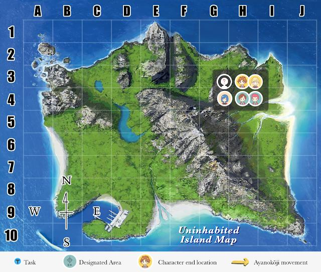
PARTE 1
Habían pasado unos cinco minutos desde que Ayanokouji-senpai salió corriendo por la ladera en busca de Ike-senpai. Dejé con suavidad a Kinoshita-senpai, que había estado sosteniendo en mis brazos, en el suelo junto a Komiya-senpai.
Después de lo cual, me levanté de nuevo y me quedé mirando en silencio el profundo bosque que había detrás de mí.
—Oye, ¿qué pasa?
Sudou-senpai habló, sospechando de mis acciones. Me sentí mal por no haberle respondido, pero no tenía tiempo de explicarle nada ahora mismo. Estaba claro que alguien intentaba provocarnos.
Había estado vigilando todo este tiempo, y aunque hacía notar su presencia, decidió no acercarse a nosotros. Aunque su presencia era evidente para mí, no era más que una sutil diferencia en el ambiente que la gente común no podría notar.
Pero, ¿cuánto tiempo llevaban allí? Cierto, fue desde que Ayanokouji-senpai salió corriendo por la ladera. Estaba emitiendo continuamente un aura agresiva y exigente que sólo se acentuaba con el tiempo. No sabía cuáles eran exactamente sus motivos o razones para ello, pero eso era irrelevante.
Después de todo, fuera quien fuera, cualquier información que tuviera seguiría siendo valiosa, dadas las circunstancias actuales. Dejé la tableta en el suelo en silencio y me tomé un momento para estabilizar mi respiración.
La presencia era muy consciente de que me había fijado en ella, pero no se movió ni un milímetro. Puede que tuviera confianza en su velocidad, pero yo también la tenía.
—¡Sudou-senpai! Por favor, ¡cuida de ellos hasta que vuelva!
—¿Eh? ¿Qué?
Lo único de lo que pude estar segura, aquí y ahora, fue de que alguien nos estaba observando. Pateé el suelo y comencé a correr con un movimiento fluido, dirigiéndome hacia la dirección de la presencia.
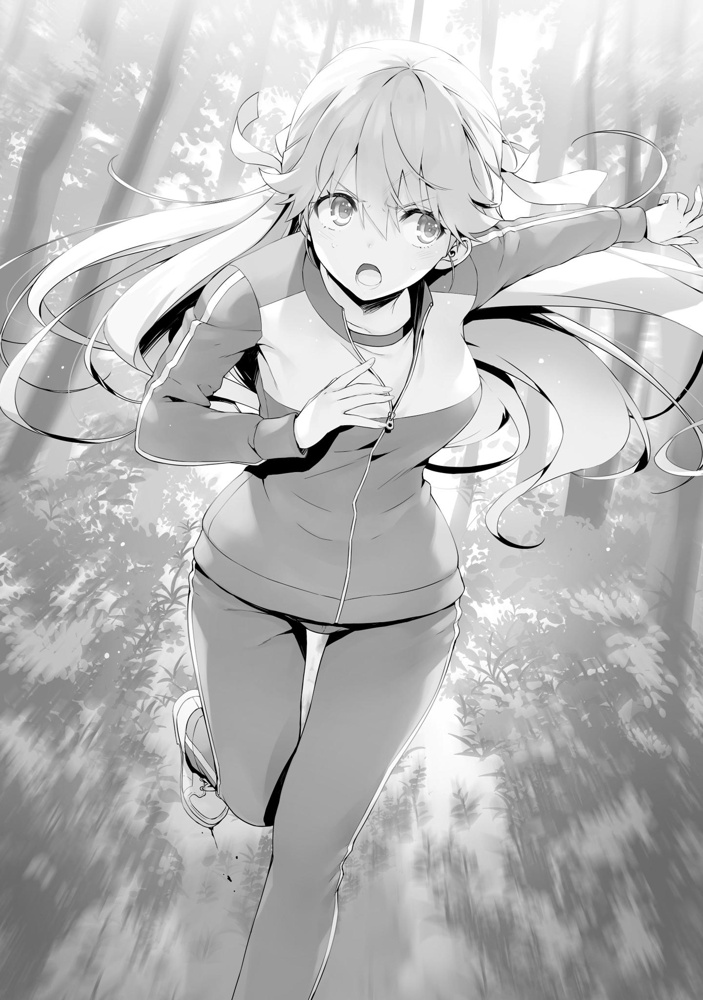
Aunque intentara escapar despavorido, debería ser capaz de acortar la distancia cuando se diera la vuelta para correr. Y entonces, si tropezaba con algo, aunque fuera sólo por un segundo, lo atraparía y lo obligaría a responder a mis preguntas.
La distancia entre nosotros era de diez a veinte metros como máximo. A medida que el sol de la mañana seguía saliendo, el bosque empezaba a iluminarse lentamente. Y aunque el terreno era difícil de atravesar, no tardaría en alcanzarlo. Sin embargo...
—¡Tan rápido!
Conseguí agarrarme al puño de su jersey durante una fracción de segundo, pero sus movimientos eran demasiado ágiles. Aprovechando los árboles que los rodeaban, logró liberarse con habilidad sin mostrar ni un pelo de su identidad. Lo perseguí a toda velocidad, pero a pesar de mis esfuerzos, la distancia entre nosotros no dejaba de aumentar.
—¡Maldita sea!
En términos de velocidad y resistencia, los dos parecíamos estar igualados. Sin embargo, por la forma en que se movía sin esfuerzo por el bosque mientras corría, su conocimiento del terreno era evidentemente muy superior al mío.
¿Cómo podía hacerlo? Aunque mi conocimiento de la zona era sin duda inferior, me esforcé por superarlo.
—¡Por favor, espera! Sólo quiero hablar contigo.
Grité mientras seguíamos adentrándonos en las profundidades del bosque, pero la persona a la que perseguía no mostraba señales de detenerse. Tampoco es que no hubiera oído mis gritos. No, optó por ignorarlos. En ese caso, sólo me quedaba una conclusión: Que la persona a la que perseguía indudablemente tenía algo que ocultar.
—La razón por la que esos dos están tan malheridos es por algo que tú
hiciste, ¿no es así?
En ese momento, decidí cambiar de estrategia. Grité una dura acusación, buscando hacerlo vacilar. Que cometiera algún tipo de error. Al fin y al cabo, si conseguía que se equivocara antes que yo, podría recortar la distancia en un instante. Aunque me equivocara en cuanto a su participación en lo sucedido, mientras pudiera hacerle tropezar o caer, nada más importaría.
Sin embargo, en lugar de vacilar, empezó a moverse todavía más rápido que antes. Confiaba plenamente en mi entrenamiento previo y en mi capacidad física, al menos hasta el punto de que no creía que fuera a perder contra nadie en esta escuela.
Sin embargo, la distancia entre nosotros no hacía más que aumentar. De vez en cuando, conseguía recuperar el terreno perdido, pero eso nunca duraba mucho.
Estaba claro que sólo estaba jugando conmigo, mostrándome lo superior que era en realidad.
Se burlaba de mí; casi me susurraba al oído las palabras "atrápame si puedes".
Pero, aun así, no tenía intención de rendirme hasta el fatídico final. Si no podía ganar en un concurso de velocidad... entonces ganaría en una batalla de resistencia. Durante menos de un segundo, un rayo de luz atravesó el dosel de arriba y logré ver el cabello de mi oponente balanceándose con el viento mientras corría.
—¡¿Qué, tú?!
El color y el estilo distintivo, casi característico, de su pelo se me grabó en el fondo de los ojos. También sabía exactamente dónde lo había visto antes.
—¡Maldita sea...!
Al poco tiempo, mi pie se enganchó en la raíz de un árbol, lo que supuso un final abrupto y poco satisfactorio a la persecución.
—¡Haa, Haaaa...!
Me distraje, sorprendida por una revelación que nunca me imaginé. El cansancio y el agotamiento que acumulé se abalanzaron sobre mí de golpe, y mi respiración no tardó en volverse errática.
—¡Haaa, Haaa...! Haaa, Haaa...!
Para calmar los incesantes latidos de mi corazón, cerré los ojos y me concentré en controlar mi descontrolada respiración. Aunque no pude verlo bien, no me quedó ninguna duda.
—No me digas... ¿Emjujó… a Komiya-senpai y a Kinoshita-senpai...? Pero,
¿por qué...?
Mi mirada siguió vagando durante un rato, como si buscara la espalda de la persona que desapareció en las profundidades del bosque.
PARTE 2
Guie a Shinohara y a Ike por un rodeo que duró unos quince minutos en total.
Cuando por fin encontramos un camino seguro para bajar la pendiente, nos encontramos por casualidad con Nanase que caminaba sola.
—¿Por qué estás aquí Nanase?
Sudou y los demás debían estar todavía a bastante distancia de aquí.
—Eso─ Uhm, ya no era capaz de verlos a ti y a Ike-senpai así que decidí venir a buscarlos...
Respondió Nanase, y aunque su respiración era tranquila, su frente estaba cubierta de sudor. Daba la impresión de que tenía bastante prisa por venir a buscarnos, sin embargo, sus ojos miraban hacia otro lado.
—¿Estás buscando algo?
—No, por favor, no te preocupes.
Se negó a dar más detalles, manteniendo la mirada fija en una dirección concreta mientras observaba con expresión rígida. Entonces, como si se hubiera encendido un interruptor, se giró y miró hacia Shinohara e Ike, que venían detrás de mí.
—Me alegro de que hayan conseguido encontrar a Shinohara-senpai sana y salva.
Al ver a Shinohara caminando junto a Ike, dejó escapar un auténtico suspiro de alivio. Yo había estado caminando por delante hasta ahora, así que esperamos hasta que Ike y Shinohara nos alcanzaron.
—Sudou-senpai y los demás están por aquí.
Como la más familiarizada con la ruta de vuelta, Nanase tomó las riendas y dirigió el camino. Mientras tanto, decidí contarle a Nanase lo que Shinohara nos dijo anteriormente.
En particular, le dije que Shinohara vio a alguien empujar a Komiya y Kinoshita por la pendiente, pero que no sabía si el autor era un chico o una chica.
También hablé de cómo contuvo la respiración y se escondió por miedo a ser descubierta. Y luego, compartí un dato más de información potencialmente vital.
—Shinohara y sus amigos se cruzaron anoche con un grupo de primer año.
—¿Primer año, dices?
—Posiblemente acamparon en algún lugar cercano. Pero, sólo dijo que se cruzaron, así que no podemos decir que sean los culpables.
—Eso es cierto. Sin embargo, me pregunto quiénes son los estudiantes de primer año en cuestión. Si lo supiéramos, podríamos indagar en busca de información o al menos encontrar algunas pistas.
Aunque estuvieran en algún lugar cercano, será difícil encontrarlos en este denso bosque. La cosa cambiaría si permanecieran en el mismo lugar durante mucho tiempo, pero lo más probable es que estuvieran en constante movimiento, dirigiéndose a su próximo destino. De hecho, es posible que ahora mismo se dirijan en dirección contraria.
En cualquier caso, me molestaba que los estudiantes de primer año estuvieran involucrados en esto. Después de todo, si uno de ellos fuera el estudiante de la Habitación Blanca, habrían sido capaces de hacer la hazaña sin siquiera pestañear. Nanase permaneció en silencio durante un rato antes de abrir la boca.
—Senpai. Si... realmente había alguien ahí fuera dispuesto a causar una herida tan grave, ¿no es extraño que Komiya-senpai no se diera cuenta de la presencia de alguien?
—Sí. Normalmente, uno sabría si hay alguien allí o no.
Sin duda, Komiya habría dicho algo si recordara haber visto a alguien, incluso si hubiera sido un estudiante del que no supiera el nombre. Sin embargo, su recuerdo del incidente era vago, y por lo visto, puede que no hayan sido atacados de ningún modo.
¿Fue de verdad un simple accidente? O bien, ¿alguien realmente había logrado llevar a cabo este ataque sin ser notado? Suponiendo que estuviera más oscuro cuando ocurrió, lo lógico sería que el autor tuviera algún tipo de luz.
—Si fueras tú, Ayanokouji-senpai, ¿serías capaz de hacerlo sin que ellos dos se dieran cuenta?
—¿Yo? No seas irracional.
Aunque evadí la pregunta, no sería imposible si me lo propongo. En su anterior testimonio, Komiya dijo que todo comenzó cuando algo golpeó repentinamente su pantorrilla.
De la misma manera, yo me acercaría silenciosamente por detrás y le daría una patada en la pantorrilla como golpe principal. Al mismo tiempo, lo lanzaría a la ladera, con la cara deformada por el dolor. Ni siquiera le daría tiempo a mirarme.
—En cuanto a mí... Si atacara a Komiya-senpai y a Kinoshita-senpai... no creo que fuera imposible. Bueno, dependiendo del momento. Aunque, por supuesto, seguiría siendo bastante difícil.
Ella expresó su conclusión. En lugar de afirmar que Shinohara lo había imaginado, Nanase se mostró de acuerdo con la idea de que alguien los había agredido. Pero, aunque hubiera un culpable, su motivo era desconocido.
¿Estaban enviando indirectamente una advertencia? No, los riesgos serían demasiado grandes si ese fuera el caso. O tal vez... quisieron enfatizar que no tenían miedo de asumir riesgos, por muy grandes que fueran.
También era posible que se hubiera producido algún giro imprevisto de los
acontecimientos y no tuvieran más remedio que actuar. Pero, tal como están las
cosas, ninguna de estas teorías resultó muy convincente. Después de todo, es
muy posible que el culpable no sea el estudiante de la Habitación Blanca. Es más, podría no existir un culpable en absoluto.
—No obstante, no está claro por qué fueron atacados.
Inevitablemente, Nanase llegó a la misma conclusión que yo. El motivo del ataque. La parte más desconcertante de toda la situación. Al poco tiempo, nos dirigimos de nuevo hacia Sudou y los demás, pero nada había cambiado desde que nos fuimos.
—Ahora sólo es cuestión de cuándo llegarán los profesores.
Ya había pasado media hora desde que sonó la Alerta de Emergencia por primera vez, pero todavía no había rastro de ellos por ninguna parte. Estábamos en la esquina noreste de la isla, así que les llevaría un tiempo considerable llegar hasta aquí, aunque utilizaran un barco o un helicóptero.
—Uhm~... ¿Pasó algo aquí?
Justo cuando la situación empezaba a estancarse, un grupo de varios estudiantes apareció desde el interior del bosque y nos llamó. Nanase y yo intercambiamos brevemente miradas. Los estudiantes en cuestión eran un grupo de primer año: Mitsui Ayumi de la clase 1-A, Dougami Mitsuko de la clase 1-B, Tsubaki Sakurako de la clase 1-C, y Makita Takashige de la clase 1-D. En total, había tres chicas y un chico, una combinación que coincidía con el testimonio de Shinohara de hace un rato.
Como alguien que también había escuchado el testimonio de Shinohara, Ike los miró a los cuatro con una pizca de recelo en sus ojos.
—Se ha producido un pequeño problema. Estos dos se cayeron por la pendiente y se lesionaron bastante.
Al oír esto, los de primer año intercambiaron miradas por un momento.
—Estábamos acampando cerca cuando escuchamos una alerta y lo que parecía un grito de alguien... Optamos por esperar un poco a que se hiciera más claro antes de venir a comprobar qué es lo que pasó, por si acaso.
El sonido de la alerta había sido increíblemente penetrante, así que era lógico que lo escucharan si estaban en la zona.
—De todos modos, ¿puedo preguntar si los heridos están bien?
Dougami, la chica que actuaba como única portavoz del grupo, se veía bastante alarmada, al igual que Makita y Mitsui.
Tsubaki, en cambio, estaba perfectamente tranquila. A pesar de estar rodeada de alumnos de cursos superiores, dos de los cuales estaban gravemente heridos, no se mostró para nada alterada.
—No parecen estar bien, pero es difícil para cualquiera de nosotros asegurarlo. En este momento, sólo estamos esperando que lleguen los profesores.
Así pasaron otros treinta minutos. Y entonces, alrededor de una hora después de que la Alerta de Emergencia sonara por primera vez, los funcionarios de la escuela finalmente llegaron.
Los primeros en llegar fueron Sakagami-sensei, el profesor de la clase 2-B, y nuestra profesora, Chabashira-sensei. Además, había tres adultos que parecían ser personal médico, para un total de cinco personas.
—Vayamos al grano y escuchemos lo que pasó aquí, ¿de acuerdo?
Sakagami-sensei habló mientras se acercaba a Komiya, que estaba sentado, y a Kinoshita, que seguía inconsciente a su lado. Todos empezaron a reunirse a su alrededor, como si se sintieran atraídos por la posibilidad de comprobar la escena del crimen. Al ver esto, me distancié del grupo y me acerqué a Chabashira-sensei, que miraba en mi dirección.
—A partir de una observación superficial, es difícil que Komiya y Kinoshita continúen con el examen.
—Sí. Su abandono es prácticamente inevitable.
Su expresión era pesada, lo cual era de esperar dado que el grupo de Komiya incluía a un estudiante de su clase.
—¿Fue un simple accidente?
—Bueno... imagino que lo averiguaremos pronto.
Tras comprobar que el tratamiento estaba en marcha, Sakagami-sensei se dirigió al miembro ileso del grupo, Shinohara, y le indicó que se explicara. Sin embargo, Shinohara miró el estado de sus amigos y se echó a llorar de nuevo.
—Llorar no nos va a llevar a ninguna parte, espero que lo sepas.
Sakagami-sensei la reprendió en tono estricto, lo que hizo que Ike se adelantara para protegerla.
—Uhm, ¿está bien si lo explico? Shinohara me contó lo que pasó.
Al parecer, quería explicar la situación a Sakagami-sensei en nombre de Shinohara.
—...Bueno, supongo que está bien. Adelante, habla.
—Shinohara dijo que fueron empujados por la pendiente.
Miré la pendiente en cuestión mientras Ike repetía lo que Shinohara le dijo antes, pero de repente, su explicación parecía difícil de creer.
—¿Empujados? ...Qué inquietante.
—Así que no tendrán que retirarse por eso, ¿verdad? Es cierto, ¿no?
—Si esa es la verdad, entonces sí, por supuesto que no.
—¿Qué quiere decir con 'si esa es la verdad'? La misma Shinohara lo dijo.
—Entonces, supongo que debe tener algún tipo de prueba que lo respalde,
¿no?
Ante la respuesta de Sakagami-sensei, tanto Shinohara como Ike se quedaron momentáneamente sin palabras, sin saber qué decir.
—¡Usted dice eso, pero no estamos en la escuela! No hay cámaras de vigilancia ni nada por el estilo.
—Aunque, si los empujaron, uno de ellos debió ver al menos la cara del culpable.
—¡Eso es─!
—Entonces, ¿qué te parece, Shinohara-san? No puedes seguir llorando, así que ¿qué tal si nos das una respuesta?
La única prueba disponible por el momento era el testimonio personal de Shinohara como miembro del mismo grupo. Aunque podría intentar mencionar el misterioso conjunto de huellas que identifiqué antes, el suelo de toda la zona cercana hacía tiempo que fue pisoteado por un número considerable de personas. Aunque las mencionara, no conseguiría nada.
—Estaba oscuro...
—¿Oscuro? ¿Tan oscuro que no pudiste ver la cara del culpable?
En respuesta, Shinohara asintió varias veces, sin embargo Sakagami-sensei simplemente dejó escapar un profundo suspiro.
—Entonces, ¿estaba oscuro hasta el punto de que no podías ver su cara, y sin embargo fuiste capaz de ver cómo los empujaban sin problemas...? Me duele decir esto, pero es una historia terriblemente conveniente la que inventas, ¿no
es así?
Con eso, Sakagami-sensei comenzó a presionar a Shinohara para que confesara mientras ella rompía a llorar una vez más. Estaba llorando hasta la incoherencia, así que se limitó a asentir con la cabeza, intentando lo que podía para afirmar que estaba diciendo la verdad.
—¡Shinohara nunca mentiría!
—Eres su compañero de clase. Es natural que digas eso.
—¿Está diciendo que no le cree?
—Si está diciendo la verdad, entonces esto es un asunto bastante serio.
Sin embargo, este testimonio por sí solo no es suficiente.
—¡Cómo puede! Entonces, ¿qué va a pasar con Komiya y Kinoshita?
—No importa cómo se desarrollen las cosas, yo diría que su única opción real es la retirada. Como su profesor titular, tampoco puedo decir que me alegre de que se retiren del examen, pero por el aspecto de sus piernas, les será imposible continuar.
No es que Sakagami-sensei estuviera tratando de ser cruel o algo así. Sólo estaba siendo objetivo.
El daño que se había hecho a sus piernas era lo suficientemente grave como para que no se recuperaran en un día o dos.
—Dada la situación actual, no tenemos más remedio que concluir que Shinohara-san está mintiendo para ocultar las lesiones causadas por este accidente.
—¡Me está tomando el pelo! ¿Quién en su sano juicio se creería esa mierda?
Ike contraatacó apasionadamente, aferrándose a los hombros de Shinohara
mientras ella lloraba, pero la respuesta que obtuvo fue excesivamente fría.
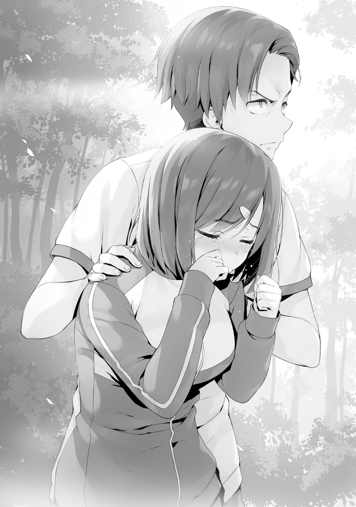
—Pasaré por alto este arrebato tuyo por esta vez. ¿Está claro?
—¡Tsk...!
Al darse cuenta de que estaba hablando demasiado con un profesor, Ike se mordió el labio. Juntos, Shinohara e Ike estuvieron alegando desesperadamente su caso durante un tiempo, y sin embargo, había algo peculiar en la forma en que Sakagami-sensei les respondió.
—Parece que ustedes ya tenían mucho de esto resuelto antes de llegar aquí, Chabashira-sensei.
Le expresé mis pensamientos a Chabashira-sensei mientras estábamos uno al lado del otro, a lo que ella asintió en silencio.
—Confiamos en las señales de GPS de Komiya y Kinoshita para llegar aquí. La alerta de emergencia de Komiya se activó a las 4:56:24, mientras que la de Kinoshita lo hizo siete segundos después. La otra señal que había en la zona cercana en ese intervalo de tiempo era la de Shinohara y sólo la de Shinohara.
Respondió Chabashira-sensei, con los ojos concentrados en una tableta que tenía en la mano. Era tal y como esperaba. Eso significaba que Sakagami-sensei también tenía esa misma información.
Si en la zona se hubiese encontrado una sola señal de GPS dudosa, entonces sí que habría habido lugar para la sospecha. Sin embargo, la información obtenida del GPS iba en contra de la idea de que hubiera un culpable. En cuyo caso, la única conclusión lógica que podían sacar los responsables de la escuela era que Shinohara estaba inventando la existencia de algún desconocido, todo ello con el fin de conseguir una sentencia más leve y proteger a sus compañeros de grupo de su retirada.
—Los primeros en llegar al lugar de los hechos después de que saltaran las alertas fueron un grupo de cinco estudiantes, tú incluido. El siguiente en
llegar fue un grupo de cuatro estudiantes de primer año. Nosotros fuimos los
últimos en llegar.
Según los registros, nadie más había entrado en contacto con el grupo de Komiya antes que nosotros.
Hasta cierto punto debería ser seguro confiar en esta información. Entonces...
¿es posible que el culpable no fuera un estudiante? Los profesores y el personal del examen no tenían que llevar reloj, así que no tendrían señal de GPS.
No─ ese no debería ser el caso, ¿verdad? Tenía una hipótesis en marcha, pero todavía había muchos puntos que no terminaban de cuadrar, como el hecho de que a los profesores parecía escapárseles algo.
—Chabashira-sensei. Volverá a la zona de salida con Komiya y Kinoshita después de esto, ¿verdad?
—Sí. Haremos un examen más detallado de sus heridas en el barco.
—Hay algo que me gustaría que investigara mientras está en ello.
Discretamente.
Entonces bajé la voz y le susurré algo al oído. Aunque le sorprendió un poco mi petición, asintió con la cabeza. Sin embargo, había un asunto más urgente en este momento. Con la retirada de Komiya y Kinoshita prácticamente garantizada, Shinohara tendría que valerse por sí misma. Para ella, sobrevivir sola durante uno o dos días debe parecer imposible, por no hablar de la próxima semana y media.
—¡No puedo... no puedo seguir así...! ¡No hay manera de que pueda hacer esto sola...!
Ike observó cómo Shinohara caía de rodillas, incapaz de encontrar las palabras adecuadas para consolarla. Simplemente se quedó allí, atrapado en un estado perpetuo de incertidumbre sobre qué hacer a continuación. Tampoco fui el único que se dio cuenta de esto. Komiya, a momentos de ser llevado en una camilla por el personal médico, también lo había hecho.
—Ike... ven aquí enseguida.
—¿Qué pasa?
Komiya llamó repentinamente a Ike, haciéndole un gesto para que se pusiera al alcance de la mano. Y entonces, sin importarle la tensión de su cuerpo herido, se lanzó, rodeó el cuello de Ike con su brazo y lo acercó.
—Muéstrame lo hombre que eres.
Después de esas breves palabras, Komiya volvió a tumbarse, prácticamente desplomándose sobre la camilla. Komiya había planeado confesarse a Shinohara durante este examen. Pero parecía que aún no lo había hecho.
Tal vez, por el contrario, Shinohara le había consultado sobre Ike antes de que tuviera la oportunidad de dar a conocer sus sentimientos. De ser así, Komiya sería consciente de lo mucho que Shinohara se preocupaba por Ike. Con esas breves palabras, le había confiado a Shinohara, la chica que había jurado proteger con sus propias manos, a Ike, su rival en el amor.
—Eso tiene que ser duro...
Comentó Sudou mientras todos veíamos cómo los médicos se llevaban a Komiya. Daba la impresión de que, después de ser testigo de lo que acababa de ocurrir, Sudou se había dado cuenta de lo duro que debía ser para Komiya.
Mis compañeros de clase no eran los únicos que avanzaban en el viaje hacia la edad adulta. Día a día, Komiya también estaba creciendo, al igual que Sudou.
Tras un breve periodo de silencio, Nanase se dirigió a Shinohara, proponiéndole una idea para ayudar a superar la dura situación en la que se había metido.
—Es posible aligerar la carga acuartelándose cerca de la zona de salida.
Aunque no podrás ganar puntos por llegar a las zonas designadas, debería ser más que suficiente para ayudarte a evitar el retiro.
De hecho, ésta era con toda certeza la mejor estrategia de la que disponía Shinohara. En lo que quedaba de las dos semanas que teníamos en la isla,
tendría que depositar sus esperanzas en que otros grupos fueran eliminados.
Por supuesto, si ningún otro grupo se retiraba, entonces Shinohara no tendría forma de escapar a la expulsión. Chabashira-sensei, habiendo escuchado la sugerencia de Nanase, también intervino.
—Shinohara. No quiero que parezca que espero que te expulsen, pero...
¿cuál es tu plan? Será difícil continuar con el examen tú sola.
—Lo sé...
—Entonces, como dijo Nanase, al menos puedes volver al puerto y aguantar hasta el final del examen. Tampoco es que te resulte imposible conseguir las Tareas que aparezcan en la zona cercana.
Su propuesta era sin duda cruel, pero era la mejor opción que podía tomar Shinohara ahora que estaba sola. Si intentaba continuar con el examen sola, lo más probable es que acabara agotándose en algún momento. Y una vez que se quedara sin resistencia y sin provisiones, se vería obligada a retirarse.
Sin embargo, si cambiara su enfoque del examen en su conjunto, podría resistir en el puerto y, potencialmente, incluso obtener ayuda de los grupos que pasaran por allí. De este modo, podría sobrevivir hasta el final.
En definitiva, era una alternativa mucho mejor que la que tenía ante sí: la expulsión. Secándose las lágrimas, Shinohara asintió lentamente con la cabeza.
Al ver eso, Chabashira-sensei le dijo una última cosa.
—Espero que, de alguna manera, seas capaz de llegar a la zona de salida por tu cuenta.
—Sí... Entendido.
Como la escuela no podía proporcionar ninguna ayuda, Shinohara tendría que llegar al puerto por sí misma. Después de que los estudiantes de primer año y Sakagami-sensei se fueron, Shinohara fue a recoger su mochila, pero Ike se apresuró a agarrar su muñeca.
—...¿Qué?
—¡No me vengas con eso...! ¿De verdad vas a volver a la zona de salida y esperar allí?
—¿Qué otra opción tengo? Komiya-kun y Kinoshita-san ya no están aquí...
Es absolutamente imposible que pueda aprobar este examen especial yo sola.
—Pero, pero como─
—De todas formas me van a expulsar, ¡así que déjame en paz!
Apartó el brazo de un tirón, soltándose del agarre de Ike, e inmediatamente se giró para marcharse.
—...
Ike se quedó congelado, con los dientes apretados en silencio. El Ike del pasado no tendría la fuerza necesaria para seguir avanzando, para seguir intentándolo.
Pero las palabras de Komiya le dieron el empujón que necesitaba para dar el siguiente paso.
—¡Yo... haré algo al respecto!
Gritó tras Shinohara, observando impotente cómo empezaba a cerrarse del mundo que la rodeaba.
—Basta ya. Es imposible. Absolutamente imposible.
Shinohara se limitó a seguir caminando sin siquiera considerar las protestas de Ike.
—¡No es imposible!
Incapaz de quedarse mirando cómo se marchaba, Ike corrió tras ella y la agarró de la muñeca por segunda vez.
—¡Déjame ir...!
—¡No lo haré! ¿Crees que voy a dejar que te expulsen por algo así?
—¿Por qué no? ¡Esto no tiene nada que ver contigo Ike! Conmigo fuera del camino, habrá menos posibilidades de que tu grupo sea expulsado... ¡Deberías estar contento!
—¿Contento? ¿Qué clase de mierda estás diciendo? ¡No hay manera de que sea feliz!
—¿Eh...?
—¡Quiero decir que perderemos un montón de puntos de la clase si te expulsan! Yo... ya sabes, ¡tengo que evitar que eso ocurra! Por eso te voy a ayudar, para asegurarme.
—Bueno, eso es cierto, pero... ¿Qué harás si tu grupo se hunde hasta el fondo porque me estás ayudando? Por no hablar de que sólo acabará creando problemas a Sudou-kun y Hondou-kun.
—Eso─
—Ike, nunca piensas bien las cosas, ¿verdad? Si sigues así, tarde o temprano conseguirás que te expulsen.
Shinohara esbozó una sonrisa algo exasperada y se deshizo ligeramente de la mano de Ike.
—De todos modos, no voy a rendirme hasta el final, así que tú también deberías hacer lo posible, Ike.
Ella rechazó con tacto su oferta antes de darse la vuelta por lo que parecía ser la última vez.
—¡Espera...!
La actitud confiada de Ike hasta entonces desapareció sin dejar rastro. No había nada más que pudiera hacer para evitar que Shinohara se fuera.
—Kanji.
Al ver esto, Sudou llamó a Ike con una sonrisa intrépida en su rostro. Se golpeó el pecho dos veces, animando sin palabras a su amigo a perseverar. Ante esto, Ike intentó dar un paso adelante una vez más, impulsado por el apoyo de su mejor amigo.
—¡Espera...! ¡Espera Shinohara...! Yo, yo sólo... entonces... este...
Intentó desesperadamente exprimir las palabras correctas, pero simplemente no pudo encontrar la fuerza. Estaban ahí, en la punta de la lengua, pero no salían.
Necesitaba un último empujón. Esta era la recta final. Pero ni yo, ni Sudou, ni Nanase seríamos capaces de decir las palabras por él. La única persona que podía hacerlo era el mismo Ike.
No tenía más remedio que reprimir el miedo dentro de su corazón y dar el último paso hacia adelante él solo.
—¡Espera, dije que esperaras!
—Dios mío, me asustaste. Ya te escuché, cielos... ¿Todavía hay algo que quieras de mí?
—¡Hay! ¡Hay todo tipo de cosas! ¡Realmente no quiero que te expulsen!
¡Por eso voy a salvarte te guste o no!
Las palabras que eligió... no eran elegantes ni hermosas como una confesión de amor. Pero aun así, encarnaban la forma de hacer las cosas de Ike, ya que estaban repletas de cada gramo de emoción que podía reunir.
—¡Bien! Si así es como Kanji quiere hacerlo, ¡discutiremos los planes de batalla, Ryotaro!
—¡Entendido!
Sudou y Hondou dieron la vuelta y se colocaron detrás de Ike, apoyando plenamente su decisión de ayudar a Shinohara. Le hicieron un gesto a ella,
haciéndole señas para que se uniera a ellos.
—¿Eh...? ¿Qué...? ¿Son ustedes estúpidos? Aunque no deberían perder su tiempo con alguien como yo, ustedes...
Sin estar dispuesto a esperar a una Shinohara que tal vez ni siquiera viniera, Ike corrió hacia ella y la agarró de la muñeca por tercera y última vez. Estaba ardiendo con un nivel de determinación que parecía gritar al mundo que no volvería a soltarla. Al ver esto, incluso la habitualmente indiferente Chabashira-
sensei esbozó una ligera sonrisa.
Debió ser suficiente para hacerla sentir que Shinohara estaría en buenas manos, ya que luego desapareció en el bosque, dirigiéndose en la misma dirección que Sakagami-sensei y el equipo médico. No obstante, no era momento para el optimismo ciego. Después de todo, salvar a Shinohara desde luego no sería fácil.
—Para garantizar que se salve Shinohara, tendrá que unirse a un grupo con al menos tres plazas para miembros extra del grupo.
Una vez que los cuatro se reunieron, hablé.
Era difícil decir si Sudou y su grupo serían capaces de ganar los derechos de esas tres plazas por su cuenta.
—Lo más realista sería intentar pedir ayuda a gente de la misma clase,
¿no?
—No creo que haya exactamente nada malo en ello, pero por lo que recuerdo de las reglas del examen, es imposible averiguar qué grupos se han ganado el derecho a aumentar su tamaño máximo. También me imagino que será difícil encontrar un grupo dispuesto a acoger a Shinohara-senpai cuando dos miembros de su grupo ya se han retirado. Además, como la pérdida de puntos es un efecto secundario directo del proceso de fusión, toda la idea está plagada de numerosos riesgos. Por eso, en lugar de esforzarse por formar otro grupo, puede ser más realista para ella dar prioridad a la acumulación de puntos.
Creo que debería ir sumando puntos en las áreas designadas y utilizar el tiempo
que le sobre para realizar las Tareas.
Nanase estaba recomendando que Shinohara renunciara a fusionarse con otro grupo y se centrara en acumular puntos de forma independiente.
—¿Pero no sería mejor asumir que no habrá ninguna tarea que pueda ganar ella sola? Tendría que confiar en la suerte o en una extraña coincidencia en la que no hubiera suficientes participantes o algo así.
—¿Realmente no hay manera de que ella entre en un grupo fácilmente, Ayanokouji?
En medio de su conversación, Sudou se giró de repente hacia mí, buscando si tenía alguna idea.
—No es que sea imposible. Hay una idea que se me ocurre que tiene una alta probabilidad de funcionar.
—¿De verdad? ¿De qué se trata?
Consideré por un momento si debía o no compartirlo con ellos, pero finalmente decidí que no. Si les contaba mi plan ahora, nacería una pizca de esperanza en medio de su desesperación. Pero al mismo tiempo, debilitaría su decisión de salvar a Shinohara, así que era difícil decir que valdría la pena.
Era importante que Ike y los demás mantuvieran una fuerte mentalidad competitiva hasta el final del examen. Por no hablar de que había que hacer varias cosas para llevar a cabo el plan. Comencé a caminar hacia donde se encontraba el equipaje y le indiqué a Nanase que se preparara para salir también.
—¿O-oi, Ayanokouji? ¿Cuál es ese plan tuyo?
—Lo único que puedes hacer en este momento es que Ike tome la delantera en la protección de Shinohara y se concentre en ganar la mayor cantidad de puntos posible. Aparte de eso, deberían intentar participar en las tareas que aumentan el número máximo de personas permitidas en tu grupo si
tienen la oportunidad.
—¿Qué vas a hacer?
—Voy a preparar una especie de plan de contingencia por si algo sale mal.
Por esa misma razón, simplemente no tenía tiempo para quedarme aquí y perder el tiempo con Ike y los demás.
—Pero, como dije antes, no hay manera de garantizar nada. Además, si alguno de nuestros otros compañeros cayera también entre los cinco últimos, entonces... podríamos vernos obligados a tomar una decisión difícil sobre a quién salvar.
Quería asegurarme de que supieran con anterioridad que podríamos tener que renunciar a Shinohara en algún momento. Este examen especial era algo que, mientras se mantuviera que cinco grupos serían sometidos a la pena máxima, inevitablemente habría estudiantes que no podrían ser salvados.
—No lo olvides, Ike.
—... No lo haré.
Unas dos horas y media después de que comenzara todo el calvario, finalmente llegamos de vuelta a nuestro campamento con Shinohara como acompañante.
El grupo de Kei, que había estado acampando cerca, ya se había marchado a la siguiente zona designada.
Las mochilas que Komiya y Kinoshita dejaron atrás fueron traídas por Sudou e Ike respectivamente.
—Sudou, cuida de Ike y de los demás. De todos, eres el único capaz de tomar las decisiones más sensatas.
—De acuerdo, déjamelo a mí.
Como la siguiente zona designada ya había sido anunciada, recuperé mi tableta
de Nanase mientras terminaba con los arreglos finales.
—Se ve que gastaste mucha energía esta mañana...
—Por favor, no te preocupes. Todavía tengo suficiente para seguir tu ritmo.
A partir de hoy, el cuarto día del examen, se revelarían los diez grupos de mayor y menor rango. Además, es el día en el que las tareas que permiten la creación de grupos grandes se añaden al listado. Si apareciera una de estas Tareas, se alcanzaría el máximo de capacidad en un instante y la competencia resultante sería ciertamente feroz.
Sin embargo, antes de todo eso, primero teníamos que confirmar nuestra próxima zona designada. La zona que nos asignaron fue la G3, lo que significaba que teníamos que ir hacia el noroeste desde nuestra ubicación actual.
Ya llevábamos media hora de retraso, así que era muy poco probable que pudiéramos conseguir la bonificación de Madrugador esta vez. A pesar de que tardaríamos al menos una hora en llegar, decidí saciar mi curiosidad y mirar primero la clasificación actual de los grupos.
Aunque me interesaban los grupos que iban al frente, era mucho más importante comprobar los cinco últimos, ya que eran los que corrían el riesgo de ser expulsados. Interesada también, Nanase miró mi tableta por encima de mi hombro.
Los diez últimos grupos se ordenaron en una tabla de mayor a menor puntuación. La información que se mostraba en la tabla era más detallada de lo esperado, ya que no sólo nos decía los miembros y las puntuaciones de cada grupo, sino que incluso tenía un desglose general de cómo habían obtenido sus puntos.
—Este─
De los diez últimos grupos, siete estaban compuestos por alumnos de la clase 3-
B y la clase 3-D. El grupo que ocupaba el último lugar era un grupo de tres personas de la clase 3-D con un total general de 21 puntos. 5 de los cuales eran de Tareas y 16 de áreas designadas. Sin embargo, este grupo en particular fue
el que tenía a alguien que se retiró por enfermedad el primer día del examen, así
que había algo de espacio para la simpatía.
De los tres restantes, había un grupo de segundo año y dos de primer año.
El único grupo de segundo año estaba compuesto por tres de mis compañeros de clase: Akito, Haruka y Airi.
—Parece que algunos de tus compañeros están en una posición peligrosa, Senpai.
Actualmente, ocupaban el noveno puesto desde abajo con un total de 28 puntos, lo que era peor de lo que esperaba. Se requería una cierta cantidad de fuerza y fortaleza para viajar continuamente entre las áreas designadas. Dado que tenían a Airi en su grupo, que tendía a luchar cuando se trataba de resistencia, seguramente les sería difícil ganar bonos de llegada. Mientras tanto, había dos grupos de primer año entre los diez últimos, pero ambos estaban compuestos por dos personas cada uno. Teniendo en cuenta que a los de primer año se les permitía formar grupos de cuatro personas desde el principio, tenía sentido que no hubiera muchos de ellos ocupando los últimos puestos.
—Teniendo en cuenta todo esto, es sorprendente. Pensar que tantos estudiantes de tercer año estarían en el fondo...
Aunque sin duda era inesperado, dudaba que su bajo rendimiento se debiera sólo a la incompetencia. Decidí comprobar los primeros puestos más tarde y, en su lugar, me centré en contarle a Nanase cuál sería nuestro plan para avanzar.
—Para empezar, voy a intentar conseguir la bonificación de llegada en G3.
Pero, seguramente me saltaré por un tiempo las áreas designadas que vienen después de eso.
—Entonces, ¿hay algún lugar al que quieras ir, aunque signifique perderte las áreas designadas?
—Sí. Si quieres seguir yendo por ellas, entonces tendremos que separarnos en G3.
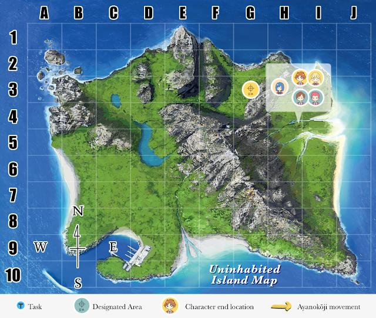
—No, no, me quedaré contigo. Mientras Amasawa-san o Housen-kun lleguen a tiempo, mi grupo no se perderá el área... Además, esto tiene que ver con el plan que has pensado para salvar a Shinohara-senpai, ¿verdad?
Tras responder con un ligero asentimiento, nos pusimos en marcha. Una vez que llegáramos a G3, nos dirigiríamos a la zona de salida. Si era posible, quería llegar allí en algún momento de mañana.
EL DISTANTE CHICO PRODIGIO DE LA CLASE 2-D
Poco antes de las siete de la mañana del día siguiente, el quinto del examen, nos dirigimos hacia el sur por el río desde el área D4 hasta la D5. Después de pisar G3 ayer, decidimos renunciar a nuestra siguiente área designada, H4, y viajar hacia el oeste en nuestro camino de regreso a la zona de salida. Como resultado, nos perdimos también las dos siguientes designaciones, H6 e I7, lo que significa que nos perdimos tres áreas seguidas.
A menos que por algún milagro un área designada al azar apareciera en algún lugar de nuestra ruta proyectada, ese número aumentaría inevitablemente a cuatro. Finalmente, las probabilidades no jugaron a nuestro favor, ya que cuando el reloj marcó las 7:00 AM, la primera área designada del día resultó ser la I8.
El lado bueno es que el área designada estaba tan lejos que facilitaba el desentenderse del asunto, ya que no tendría que preocuparme por hacer el esfuerzo de llegar hasta allí.
Tal vez por ser tan temprano, el suave murmullo del río cercano era bastante agradable. Si no hubiera sido por las malas noticias que llegaron poco después, habría sido un comienzo de día bastante bueno.
—La situación de Shinohara-senpai no parece muy optimista...
Shinohara quedó abandonada a su suerte después de que Komiya y Kinoshita se retiraran ayer. Aunque Ike y Sudou están haciendo lo que pueden para apoyarla, el número de puntos que puede conseguir ella sola es, al final, limitado.
Hasta ayer, su grupo no había sido incluido entre los diez últimos, pero cuando comprobamos la clasificación esta mañana, ya había bajado al octavo puesto.
Como los grupos clasificados por debajo de ella ganan puntos a un ritmo más
rápido, es probable que se hunda hasta el último puesto mañana o pasado
mañana como mucho. Gracias a esto, en un irónico giro del destino, el grupo de Akito se libró de los últimos puestos, al menos por el momento.
Mientras tanto, estaban las clasificaciones actuales de los grupos superiores que no tuve la oportunidad de mirar ayer. En el primer lugar está el grupo de Nagumo, formado íntegramente por estudiantes de la clase 3-A, mientras que el segundo lugar lo ocupa el grupo de Kiriyama de la clase 3-B. Los dos máximos representantes del tercer año estaban plenamente incluidos.
—Ah, Senpai. Hay alguien pescando más adelante.
Un estudiante solitario apareció delante de nosotros. Estaba sentado en una orilla rocosa, pasando el tiempo tranquilamente con una caña de pescar en las manos. Debido a su peculiar aspecto exterior, lo reconocí inmediatamente.
Eramiembro del grupo que más deseaba encontrar en este momento. No esperaba que la oportunidad de reunirme con ellos llegara tan pronto. Debido a la naturaleza del examen y al tamaño de la isla, encontrar a una persona en concreto era como encontrar una aguja en un pajar. Llegué a considerar la posibilidad de utilizar la función de búsqueda por GPS una vez que estuviera disponible mañana para intentar reunirme con su grupo.
Quería aprovechar este golpe de suerte como fuera.
—¿Te importa si nos desviamos, Nanase?
Aunque aparecieron varias Tareas concretas en el área cercana, tendríamos que renunciar a ellas.
—Sólo soy tu compañera de viaje, Ayanokouji-senpai. Por favor, no sientas la necesidad de pedir mi opinión.
Tomé sus reflexivas palabras al pie de la letra y decidí acercarme al estudiante.
No parecía haber reparado en nosotros todavía, pero opté por no llamarlo para no interrumpir su pesca. En vez de eso, nos acercamos en silencio, caminando
por la grava arenosa de la orilla del río. Al poco tiempo, nos acercamos lo
suficiente como para que notara nuestra presencia, ya que se giró lentamente
para mirarnos.
—Empezaste solo, pero no es que hayas bajado a los diez últimos.
Con estas palabras, nos saludó Katsuragi, de la clase 2-B, que nos dio la bienvenida abiertamente.
—De alguna manera. Pero si me lo tomo con calma durante un día, mi clasificación caerá en picada.
Habiendo escuchado el alboroto, Ryuuen salió del interior de su tienda y me dirigió una mirada algo sorprendida.
—Así que estás paseando por la isla con una chica del brazo, ¿eh? ¿Te cansaste de esa chica Karuizawa y te deshiciste de ella?
—¿Karuizawa? ¿Por qué la mencionas?
Katsuragi volvió a mirar a Ryuuen, confundido.
—Kuku, no es nada. No le des importancia.
—Parece que a ustedes dos les ha ido muy bien.
Podías comprobar fácilmente los diez grupos mejor clasificados a través de la tableta. Hasta esta mañana, yo tenía un total acumulado de 52 puntos, lo que me situaba en el puesto 74 de la clasificación general. Si se tenía en cuenta el hecho de que era un grupo individual, mi posición era bastante alta.
Sea como fuere, Ryuuen y Katsuragi estaban situados todavía más arriba, ocupando el décimo lugar con un total acumulado de 92 puntos. De esos 92
puntos, 29 habían provenido de Bonos de Llegada, 41 de Bonos de Madrugador y 22 de Tareas.
—Oh, déjate de sarcasmos. ¿No es ese fenómeno con algunos tornillos sueltos uno de tus compañeros de clase?
—Bueno, eso es cierto.
El "fenómeno con algunos tornillos sueltos" al que se refería Ryuuen no era otro que Koenji.
Al igual que yo, se enfrentó al examen solo. Pero a pesar de eso, actualmente se encontraba en el cuarto lugar. De todos los grupos que se encontraban entre los diez primeros, era el que más puntos había obtenido de las Bonificaciones de Madrugador, por no mencionar el notable número de puntos que había acumulado también de las Tareas, todo ello para un total acumulado de 126
puntos. Su rendimiento hasta el momento era realmente sobresaliente, sin prácticamente ningún margen de error.
Sin embargo, aún quedan diez días de examen, incluido el de hoy. Si se produjera un accidente debido a un sobreesfuerzo o a una lesión, quedaría fuera de los diez primeros puestos en un instante.
En este examen de dos semanas de duración en una isla deshabitada, no tendríamos ni un solo día para descansar el cuerpo. No importa quién sea, estresar el cuerpo día tras día conducirá inevitablemente a daños musculares.
Comienza con síntomas obvios, como dolores musculares y molestias en general, y luego, poco a poco, las piernas se vuelven más pesadas y hasta las tareas más sencillas, como caminar, se vuelven difíciles. Además, como sólo podemos reponer el mínimo de nutrientes que nuestros cuerpos necesitan mientras estamos en la isla, también te verás afectado por una constante fatiga mental y física.
—Cuál es su próxima área designada?
—¿Hah?
—Ya son más de las 7 de la mañana. Parece que se lo están tomando con calma.
—Fue mi decisión.
Katsuragi respondió mientras lanzaba su anzuelo al río.
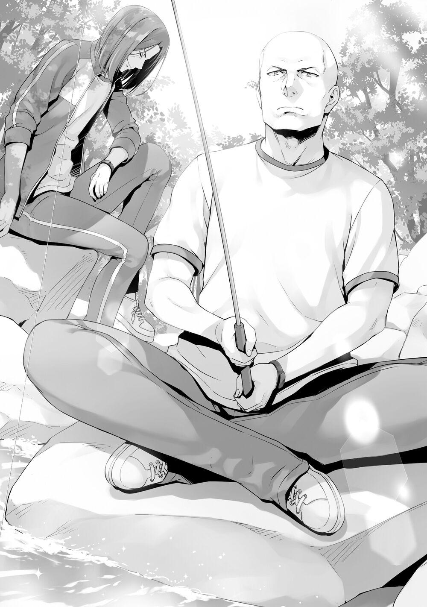
—Nos movimos a un ritmo rápido estos últimos cuatro días mientras trabajábamos en las Tareas y en los desplazamientos por el mapa. Sin embargo, nuestra primera área designada hoy resultó ser la designación aleatoria en E10, por lo que tendríamos que esforzarnos bastante si queríamos llegar dentro del límite de tiempo. Decidí que el uno o dos puntos que obtendríamos por llegar hasta allí no merecerían el esfuerzo.
Ryuuen dejó entrever una sonrisa irónica mientras se encogía de hombros.
Ryuuen es el tipo de persona que siempre busca esforzarse hasta el límite absoluto y, sin embargo, Katsuragi había conseguido de algún modo persuadirlo para que se tomara un descanso. Ishizaki o Kaneda no habrían podido controlar a Ryuuen hasta tal punto. Daba la impresión de que Katsuragi ya estaba desempeñando un papel importante como miembro de la clase 2-B.
—Entonces, ¿has atrapado algo?
Nanase planteó una pregunta a Katsuragi mientras observaba la caña de pescar en el río.
—Lamentablemente, no mucho. Tendríamos que ir al mar si quisiéramos pescar mucho.
En otras palabras, estaban pescando aquí simplemente como una forma de pasar el tiempo.
—Entonces, ¿supongo que les va bien en el aspecto alimenticio?
Aunque no sabía si me respondería con sinceridad o no, decidí intentarlo de todos modos.
—Hay mucha comida que recoger en el mar, los ríos y el bosque. El agua tampoco es diferente, ya que todo lo que tienes que hacer es hervir el agua del río.
—¿Pero no es arriesgado beber agua del río?
—No te equivocas. Hervirla no garantiza que sea perfectamente segura, pero por eso soy el único que la bebe. Ryuuen bebe el agua con la que empezamos y la que obtenemos de Tareas.
Estaban gestionando los riesgos de forma impecable. A estas alturas del examen, debería haber grupos que estuvieran luchando por salir adelante, pero se veía que estos dos iban a vivir de forma estable durante bastante tiempo.
—Resulta que te he estado buscando, Ryuuen.
—Buscándome, ¿eh?
—Supongo que estás al tanto de los grupos que están en el fondo ahora mismo, ¿no?
—Bueno, claro. Aunque no sé qué hacen esos idiotas de mi clase ahí abajo, entre los ocho últimos.
Con dos miembros fuera de escena, sus ganancias habían caído bruscamente, creando una disparidad cada vez mayor entre ellos y los otros grupos en la parte inferior.
—Komiya y Kinoshita se retiraron.
La sonrisa en el rostro de Ryuuen desapareció al instante, sustituida por una expresión seria. Katsuragi también miró en mi dirección, con su atención arrebatada de la caña de pescar en sus manos.
—¿Se retiraron? ¿Qué pasó?
Como Katsuragi es ahora un miembro de pleno derecho de la clase 2-B, tanto Komiya como Kinoshita son compañeros a los que debe proteger. Nanase habló en respuesta a la pregunta de Katsuragi.
—Estaban gravemente heridos. Es poco probable que alguno de ellos
pueda caminar pronto.
—¿Fue un accidente?
—Bueno, eso es─
—Según Shinohara, el último miembro restante de su grupo, fueron atacados por alguien.
—Supongo que ese 'alguien' fue expulsado junto con ellos entonces, ¿no?
—Por desgracia, el testimonio de Shinohara era la única prueba que tenían.
Ni Komiya ni Kinoshita pudieron recordar si fueron realmente atacados o no. La escuela debe seguir investigando, pero yo no me haría ilusiones.
—Lo están investigando bajo el pretexto de que Shinohara-senpai mintió porque no quería que sus compañeros de grupo se retiraran.
—¿Qué debemos hacer Ryuuen? Aunque logremos quedar entre los tres primeros, no tendrá sentido si Komiya y Kinoshita son expulsados.
Si el grupo de Shinohara quedara en último lugar, la clase 2-D y la 2-B sufrirían grandes reveses.
—Dijiste que me buscabas, ¿verdad? Shinohara es tu compañera de clase, así que asumo que ya has ideado un plan para evitar las expulsiones. ¿O me equivoco?
Por supuesto, a pesar de no conocer ninguno de los detalles, Ryuuen supo instintivamente que había pensado en algo.
—Lo siento Nanase, pero no puedo dejar que escuches el resto de la conversación. Aquí está en juego la supervivencia de los de segundo año.
—Entiendo.
Tras confirmar que Nanase se había alejado lo suficiente de nosotros, me acerqué a Ryuuen y compartí con él los detalles de mi estrategia. Él mismo podría contárselo a Katsuragi después.
—Kuku, ya veo. Con un plan así realmente hay una forma de que Shinohara sobreviva. No obstante... ¿todo saldrá bien?
—Debería tener una oportunidad decente siempre y cuando coopere. El resto sucederá de forma natural.
—Tienes pelotas para cambiar las cosas de esta manera. Si los otros grupos se dan cuenta de lo que está pasando, empezarán a actuar también.
Respondí con un pequeño asentimiento. Esa era la razón por la que no quería que Nanase nos escuchara. Si los estudiantes de primer año se enteraban, lo más seguro es que se produjera un enfrentamiento entre los estudiantes de segundo año y todos los demás.
—También hay algunos estudiantes de primer año muy listos. Existe la posibilidad de que se den cuenta antes de lo previsto.
También era imposible predecir lo que harían los de tercer año si se enteraban.
—Si fueran unos insignificantes no dudaría en abandonarlos, pero Komiya y Kinoshita todavía tienen su utilidad.
—Así que trabajarás conmigo... ¿es eso lo que estás diciendo?
—Nuestros intereses se alinean, así que es imposible que no me aproveche de esta estrategia tuya.
Después de todo, el grupo de Shinohara estaba formado por estudiantes de nuestras dos clases. Si no nos unimos aquí y ahora, será imposible salvar a alguno de ellos.
—Si te encuentras con Ichinose, ¿puedes contarle también el plan?
—Dejando de lado a esa inútil de Ichinose, no creo que Sakayanagi decida ayudar tan fácilmente.
—No es de las que se sientan y dejan que los de primer año la miren
desde arriba.
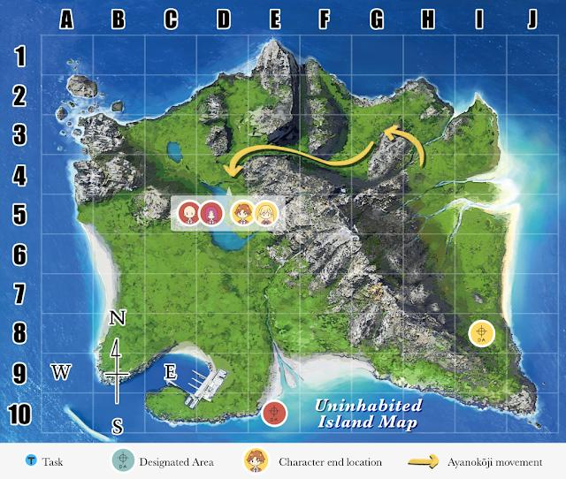
—Kuku, supongo que sí.
Con eso, nuestra improvisada reunión llegó a su fin. Nos despedimos y nos dirigimos inmediatamente al área de salida.
PARTE 1
Nanase y yo nos dirigimos hacia el sur, hacia la zona de salida, pero por el
camino apareció una tarea cerca de la cumbre del área C5, así que ajustamos
nuestra ruta en consecuencia. La tarea en cuestión era una competencia de tirar
la cuerda uno contra uno. Tenía un plazo de inscripción corto, de 40 minutos, y el número de participantes estaba limitado a dos chicos y dos chicas, por lo que en general las condiciones eran duras. Sin embargo, se ganaban cinco puntos sólo por participar, y si se ganaba, se obtenían diez puntos adicionales, para un total de quince. Debido a que la cima estaba a poca distancia de nosotros, sería más o menos imposible que otros estudiantes nos ganaran a llegar allí a menos que ya estuvieran en el área. Después de tener en cuenta el hecho de que pronto me perdería mi cuarta área designada de forma consecutiva (y perdería dos puntos como resultado), decidí que debíamos ir por ello. Además, había una buena posibilidad de que nos cayeran quince puntos si no aparecía nadie más.
A pesar de la gran altura de la montaña, avanzamos a un ritmo rápido y llegamos a la Tarea con unos cinco minutos de sobra. Pensé que seríamos los primeros en llegar, pero evidentemente alguien se nos había adelantado. Ese
" alguien" parecía haberse dado cuenta de nuestra presencia, pero no hizo ningún esfuerzo por mirar en nuestra dirección.
—Llegó muy rápido, ¿no? Debe haber estado incluso más cerca que nosotros.
—No sé.
Aunque hubiera estado hacia el lado sur del C5 cuando se anunció la Tarea, todavía debería haberle llevado una cantidad decente de tiempo llegar aquí.
—No estoy seguro de si esto te ayudará a aclarar las cosas o no, pero ese es Koenji Rokusuke.
—¿Koenji...? ¿El mismo Koenji de tu clase que actualmente está en el cuarto lugar general? ...Bueno, parece que desprende un... aura de grandeza de algún tipo.
Una cosa era que hubiera llegado antes que nosotros, pero todavía más extraño era el hecho de que, aparte de la única botella de agua que llevaba en la mano,
no tenía ninguna mochila o equipaje con él. Si viajaba con poco peso, era lógico
que pudiera subir a la cima más rápido que nosotros, pero...
Eso significaría que se había estado moviendo sin una tableta, lo que supongo que es de esperar de alguien como Koenji.
Tras dar un solo sorbo a su agua, continuó vertiendo el resto por encima de su cabeza, duchándose con lo que quedaba en la botella. En cierto sentido, parecía que se regodeaba en la satisfacción que suponía ascender a la cima de la montaña.
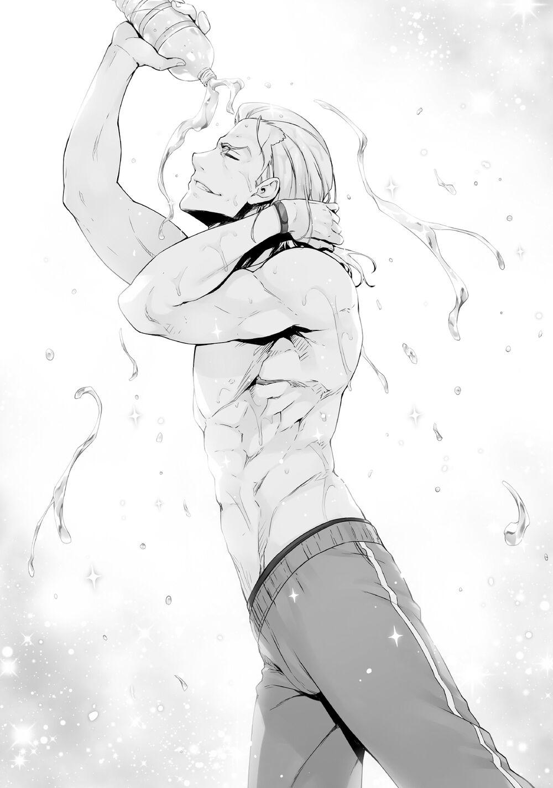
—Ah... soy un hombre tan espléndidamente guapo, estas gotas de belleza masculina recorriendo mi magnífico cuerpo. Parece que yo mismo me he potenciado aún más desde el año anterior.
—Parece que está diciendo... algo... ¿Está hablando con nosotros...?
—No, definitivamente está hablando consigo mismo. Seguramente está inmerso en su propia belleza.
—¿Es así...?
Desconcertada, Nanase ladeó la cabeza, incapaz de comprender su comportamiento.
No pensé que apareciera nadie más, pero sólo quedaban unos minutos para registrarse, así que pensé que debíamos concentrarnos en acabar con esto. Así pues, los dos seguimos adelante con el proceso de inscripción y nos aseguramos nuestras plazas en la Tarea. Sin embargo, como las reglas exigían un enfrentamiento uno a uno dividido por género, me vería obligado a enfrentarme a Koenji, ya que éramos los únicos chicos que se habían inscrito.
Nanase, por otro lado, fue la única chica que se presentó, así que ganó su categoría por default.
—Así que mi oponente eres tú, Ayanokouji-boy.
—Así es.
En las Tareas anteriores, indirectamente competí contra mis compañeros de clase por el simple hecho de formar parte de la multitud.
Sin embargo, esta era la primera vez que tenía que competir con un compañero de clase en un combate directo de uno contra uno. Además, el oponente de ese enfrentamiento era nada menos que Koenji. Esperaba sinceramente que esto no fuera el comienzo de algo escrito en las estrellas.
El miembro del personal encargado de la Tarea nos entregó una cuerda y nos
indicó que nos enrolláramos los extremos alrededor del cuerpo.
Dado que mi serie de designaciones fallidas no haría más que aumentar, quería asegurarme el mayor número de puntos posible, pero...
En lugar de llevarme la victoria cuando ni siquiera formaba parte de los diez primeros, me pareció más razonable conceder los puntos a Koenji para que nuestra clase tuviera, en última instancia, más posibilidades de quedar en primer lugar. Con los quince puntos que obtendría al ganar, superaría la puntuación de Kiriyama, que era de 135 puntos, y ascendería al segundo puesto él solo, por muy temporal que fuera.
De todos modos, si realmente iba a conceder la victoria, sería mejor rendirse ahora para no perder más tiempo ni energía de la necesaria. Podría simplemente tomar mis cinco puntos, volver a bajar la montaña y reanudar mi viaje de vuelta al puerto en el área de partida.
—El encuentro va a comenzar en breve, así que por favor prepárense.
—¿Pasa algo, Senpai?
Mientras el personal nos notificaba el inminente comienzo del combate, Nanase se dio cuenta de que estaba perdido en mis pensamientos y me miró con una pregunta.
—Bueno, yo...
—Fufu, así que eres un hombre que piensa en las cosas desde la perspectiva de la eficiencia, ¿hmmm?
Koenji captó al instante mis pensamientos internos, como si estuvieran escritos expresamente en mi cara.
—Estabas pensando que lo mejor sería abstenerse del duelo en lugar de tomarse la molestia de enfrentarse a mí, ¿no es así? Después de todo, cederme los puntos, que soy el cuarto clasificado, sería lo más beneficioso para nuestra clase. Al igual que sería el mejor uso de nuestro tiempo.
—¿Es... es eso cierto, Senpai?
—No tengo ninguna queja mientras ayude a Koenji a tener éxito en la clasificación.
—Aunque, dudo que Horikita-girl esté muy satisfecha con eso, ¿no estás de acuerdo? Para ella, no es difícil imaginar que sería preferible que yo ocupara el segundo o tercer lugar en lugar del primero.
Fue tan certero con sus conjeturas que una parte de mí se preguntó si de alguna manera había estado escuchando cuando Horikita y yo hablábamos de esto.
—Eso se limita a la situación en la que nuestros compañeros compiten entre sí por el primer puesto. Tal y como están las cosas, tu grupo es el único de los diez primeros compuesto enteramente por estudiantes de la clase 2-D, así que, si compitiéramos por los puntos aquí, sólo acabaremos estorbándonos.
—Yo, por supuesto, lo entiendo, pero eso es una tontería. El hecho de que creas que tienes la posibilidad de imponerte a mí es la razón fundamental por la que tienes esos pensamientos tan despreciables. No importa quién sea el oponente, el que ganará este combate será tu servidor.
Koenji participó en un buen número de Tareas hasta ahora y había obtenido recompensas en todas y cada una de ellas.
De todos los diversos grupos que se extendían a lo largo de los tres diferentes años escolares, él era el único que había tomado el control completo de esta manera.
Hubo algunas tareas en las que quedó primero o segundo, pero en las que tenían que ver con la fuerza o la resistencia, arrasó con el primer puesto en todos los casos.
Así que en lo que respecta a esta Tarea, era comprensible que tuviera una confianza absoluta en que también se llevaría el primer puesto.
—Ayanokouji-boy, deja de exagerar tu valor dentro de esa cabeza tuya.
Después de todo, no todos los días tendrás la oportunidad de competir contra mi
motivado yo.
El hecho de que creyera en su propia fuerza contra viento y marea era quizás el mayor encanto de Koenji. Recogí lentamente la cuerda que tenía a mis pies y la enrollé alrededor de mi cintura.
—Ahora bien, si cada uno se coloca en su posición, comenzaré la cuenta atrás. Pueden empezar a tirar cuando llegue a cero.
Lo único que tenía que hacer era que pareciera que me esforzaba y luego perder con él. Así no gastaría inútilmente nada de energía.
—No parece que mi sabiduría haya hecho mucho por motivarte.
Para Koenji, mis verdaderas intenciones eran lo más transparentes que podían ser.
—Bueno, simplemente inténtalo lo mejor que puedas. De todos modos, que sepas que por mucho que te esfuerces, la victoria no te sonreirá esta vez.
Desde el momento en que cada uno se agarró a la cuerda, comenzó la cuenta atrás.
— ───Tres, dos, uno... ¡Cero!
A la cuenta de cero, tiré muy ligeramente de la cuerda en mi dirección.
Dada la poca fuerza que estaba ejerciendo, si Koenji hiciera un esfuerzo serio, me arrastraría con la cuerda en menos de un segundo. Sin embargo, la cuerda no se movió en absoluto en su dirección.
Él se quedó de pie frente a mí con una sonrisa impávida pintada en su rostro, esperando a que yo empezara a competir en serio. Aunque no tenía ninguna intención de tomarme esto en serio, tampoco quería perder el tiempo. Siendo así, podría ser más productivo para mí contraatacar un poco para hacer que se sienta amenazado.
Si de repente empezaba a tirar con más fuerza de la que él esperaba, no tendría
más remedio que alarmarse y responder en consecuencia. Ganar el tirar de la
cuerda era algo más que tirar de ella con todas tus fuerzas. Estaba la fuerza de la fricción de la cuerda en tus manos, la fuerza de la fricción entre tus pies y el suelo, así como la fuerza normal que lo unía todo.
Y para ser aún más preciso, también había que tener en cuenta la fuerza de la gravedad. Agarré al máximo la cuerda y apoyé firmemente los pies en el suelo.
Luego incliné mi cuerpo hacia atrás sin doblar la cintura. Y finalmente, doblando las rodillas y acercando la cuerda a la cintura...
La bandera que marcaba el centro de la cuerda cedió ligeramente en mi dirección. Todo se movía de acuerdo con mis cálculos. Eso sí, la cantidad de movimiento fue menor de lo esperado. Una cantidad atroz de fuerza había comenzado a tirar de la cuerda, sellando mi contraataque en un instante.
—Para ganar en tirar de la cuerda, uno no necesita estos míseros trucos de salón, sino poder crudo y desenfrenado.
No es que estuviera siendo fácil para él, ni mucho menos. Sin embargo, la fuerza que ejercía sobre la cuerda era tan grande que atrajo la bandera central a su posición, devolviendo el combate a un estado de equilibrio. A partir de esto, se veía que Koenji y yo estábamos casi igualados en cuanto a la fuerza de los brazos.
No sólo eso, también él pesa más que yo. El factor más importante en tirar de la cuerda puede ser perfectamente el peso, y como yo pierdo en ese aspecto, será difícil ganarle sin asegurarse una ventaja en otro sentido. Si utilizara toda mi fuerza, podría convertirlo fácilmente en una batalla de desgaste y esperar a que cometiera algún tipo de error, pero eso sería una completa pérdida de tiempo y energía. Tenía otra estrategia que podía usar para salir victorioso, pero sería demasiado pronto para usarla ahora.
Mientras la cuerda se clavaba dolorosamente en mis dedos y palmas, volví a pensar en el hecho de que la fuerza de nuestros brazos estaba igualada. El joven conocido como Koenji tiene capacidades físicas en una liga propia. Incluso
gente como Sudou y Albert, que son a su vez excepcionalmente fuertes entre los
estudiantes de preparatoria, son muy inferiores en comparación. De hecho,
incluso el título de " Súper Estudiante de Nivel Preparatoria" parecía demasiado ligero para él.
Cuando puse fuerza en mis brazos y tiré de la cuerda por segunda vez, Koenji percibió instantáneamente mi movimiento y respondió con una cantidad de fuerza equivalente. Aprovechando la oportunidad, relajé inmediatamente mi agarre y dejé de tirar. Naturalmente, la cuerda fue entonces jalada por completo por Koenji, y así de fácil, el encuentro terminó.
—Así que elegiste priorizar la eficiencia hasta el último momento, ¿verdad?
Koenji parecía un poco sorprendido, pero con el resultado decidido, perdió todo interés en continuar, ya que no dijo nada más.
—Es bastante desafortunado, Senpai.
—No, aunque me enfrentara seriamente a él, no tendría ninguna posibilidad. Es natural que haya terminado así.
En general, esta Tarea había resultado en una ganancia neta de 20 puntos para los grupos de los alumnos de la Clase 2-D. Sólo eso era más que suficiente para que el viaje hasta aquí mereciera la pena.
—¿Puedes seguir, Nanase?
—Si soy sincera, me duelen un poco las piernas.
Se frotó un poco el lado de su muslo mientras hablaba.
—Pero como dije cuando me uní a ti por primera vez, por favor, siéntete libre de actuar como creas conveniente, Ayanokouji-senpai.
Su decisión de quedarse conmigo no había flaqueado en lo más mínimo.
—A toda velocidad entonces.
—¡Sí!
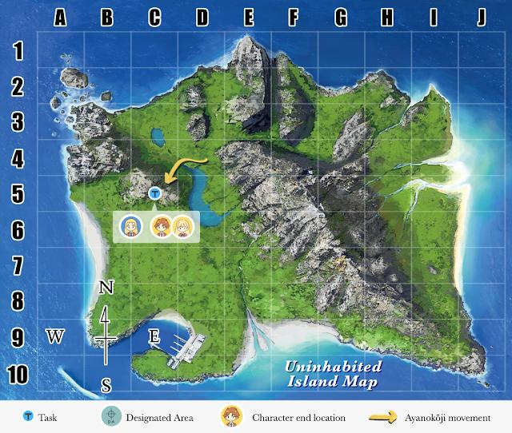
Al parecer, Koenji ya había comenzado a recorrer alguna otra ruta por la montaña en el breve periodo de tiempo que estuve hablando con Nanase, ya que no se le veía por ninguna parte.
PARTE 2
Tras unas dos horas más de viaje, por fin llegamos al puerto en el área de salida. Nanase empezó a quedarse atrás durante el tramo final del viaje, así que
llegó un minuto después que yo, completamente sin aliento.
—Haaaa... por fin conseguí alcanzarte.
Se secó el sudor con una toalla para las manos mientras trataba de estabilizar su respiración.
—Es difícil de creer que seas una chica de primer año de preparatoria. No esperaba que tuvieras tanta resistencia.
A lo largo del tiempo que hemos pasado juntos hasta ahora, hubo varios casos en los que su destreza física había despertado mi interés, pero éste había sido el más intrigante con mucha diferencia.
—No, no, comparado conmigo, ni siquiera te falta el aire, Ayanokouji-senpai... Eres tan sobresaliente como pensaba.
—Sólo estoy poniendo un aspecto estoico. Bueno, dejando eso de lado, echa un vistazo por allí.
—¡Wow─! ¡Cuánta gente!
Nanase, que más o menos había recuperado el aliento en ese momento, expresó su sorpresa por la enorme cantidad de gente que bullía por todo el puerto.
No sólo se podían comprar aquí suministros adicionales con los puntos de provisión que te sobraban, sino que también podías recibir tratamiento médico gratuito, darte una ducha refrescante o incluso hacer uso de uno de los limpios y bien cuidados baños.
Era, por así decirlo, un oasis para los estudiantes. El único lugar de la isla donde se podía bajar la guardia y relajarse un poco.
Tanto los que pasaban por aquí por la proximidad del puerto a su última área designada, también los que habían optado por abandonar las siguientes áreas y tomarse un descanso, se habían reunido aquí estudiantes con todo tipo de
objetivos y motivaciones.
Además, había un buen número de funcionarios de la escuela yendo de un lado a otro para atender las diversas necesidades y servicios del puerto.
—Entonces... ¿Por qué vinimos hasta el área de partida, Senpai?
—Antes de eso, vamos a ver la Tarea.
—Ah, sí, me había olvidado de eso.
Justo en el momento en el que pisamos el área C8 de camino al sur desde la Tarea de Tirar la cuerda en C5, otra Tarea apareció en el área de inicio. La tarea en cuestión se llamaba "Natación en aguas abiertas".
Se trataba de una carrera en la que los participantes debían nadar aproximadamente 2 km desde la salida hasta la meta.
Aunque hasta el momento el examen había contado con muchas pruebas físicamente exigentes, el listón se había puesto mucho más alto de lo habitual para esta prueba. Tal vez por esa misma razón, la tarea también contaba con la mayor recompensa hasta la fecha, con 20 puntos.
Dado que el área de inicio era un lugar de fácil acceso, la tarea debería llenarse rápidamente. Sin embargo, el número de estudiantes que decidan inscribirse será obviamente limitado, dada su naturaleza exigente. También cabe mencionar que el mar no estaba precisamente en calma hoy.
Nadar en mar abierto era completamente diferente a nadar en una piscina y, debido al peligro inherente que entrañaba, quizás sea seguro suponer que se limitaron a realizar la tarea en las inmediaciones del área de salida.
Los socorristas estarán sin duda a la espera, listos para entrar en acción en caso de emergencia. El mostrador de registro de la tarea estaba situado en el extremo más alejado del puerto, así que nos dirigimos hacia allí.
Por lo que pude ver a la distancia, el número de personas reunidas allí era
bastante grande, pero me pregunté si el tamaño de la multitud era realmente
proporcional al número de inscripciones.
Al poco tiempo, los dos llegamos al mostrador de inscripción y declaramos nuestro interés en participar en la competición.
—Debo disculparme. La última plaza para la categoría de chicos se agotó hace unos minutos.
En cambio, en la categoría de chicas sólo quedaba una plaza, por lo que la situación recordaba mucho a la Tarea de Banderas de Playa de hace unos días.
Aunque la tarea no tenía una capacidad particularmente grande ni nada parecido, no pensé que tantos estudiantes decidieran inscribirse. Sin embargo, lo que más me sorprendió fue...
—Senpai... ¿Es... es ese Koenji-senpai?
Se podía ver a un joven de pie, de espaldas al mostrador de inscripción, desde un poco más allá. Y, efectivamente, no era otro que Koenji. Verlo aquí justo después de que se anunciara la Tarea fue... impactante por decir lo menos.
—Erm... Senpai...
—Si quieres competir en la Tarea, será mejor que te des prisa en inscribirte. Por cierto, ¿estás segura de que te sientes bien?
El viaje hasta aquí no había sido para nada fácil. Ni siquiera sería sorprendente que ya hubiera agotado hasta la última gota de energía. Tendría que recuperar su resistencia en el breve periodo de tiempo que tenía para cambiarse de ropa antes de que comenzara la Tarea.
—Aunque me resisto a decir que estoy en perfectas condiciones... es una oportunidad única, así que me gustaría dar lo mejor de mí.
A pesar de las circunstancias, se mostraba bastante entusiasmada y motivada.
—Entonces, estaré esperando por allí. Ven a buscarme cuando se termine.
—¡Lo haré!
Después de despedir a Nanase, decidí dejar el área de registro de tareas en el puerto por un rato. Mientras tanto, quería ponerme en contacto con cierta persona. De hecho, reunirme con esa persona fue el principal propósito de mi regreso al área de partida.
No mucho después de empezar a buscar, encontré a la persona que buscaba sentada elegantemente en una silla plegable bajo una sombrilla que se había colocado en la playa de arena.
—Que tengas un buen día, Ayanokouji-kun. Parece que el tiempo va a ser terriblemente caluroso hoy, ¿no crees?
—¿Cómo estás, Sakayanagi?
—Razonablemente bien, supongo. Ichinose-san y Shibata-kun están poniendo todo su empeño por mi bien, así que realmente no puedo pedir mucho más que eso.
Ichinose y Shibata eran los compañeros de grupo de Sakayanagi. Ella estaba participando en el examen en un estado pseudo-retirado debido a su pierna enferma.
Como no podía moverse junto a su grupo, sólo podían ganar una bonificación de llegada máxima de dos puntos por área designada.
—Tengo curiosidad por saber si tu grupo puede optar a las Bonificaciones de Madrugador.
Si un grupo tenía a alguien que se retirara, perdería la capacidad de ganar Bonos de Madrugador. Sin embargo, Sakayanagi era un caso especial.
—La escuela decidió amablemente hacer una excepción con mi grupo. Al fin y al cabo, no es culpa mía que me vea obligada a permanecer inactiva.
Aunque su grupo no formaba parte de los diez primeros en este momento, era
seguro asumir que habían logrado resultados bastante decentes hasta el
momento.
—Debo preguntar, ¿qué te trae hoy al área de salida?
—Hubo varias razones, pero la primera no se desarrolló según el plan.
Desplacé mi mirada hacia la tarea de natación en aguas abiertas que comenzaría en cualquier momento.
—Desgraciadamente, el último puesto lo ocupó Koenji.
—Estaba en cuarto lugar esta misma mañana, ¿y ahora ya está en segundo lugar? Como compañero tuyo, es todo un prodigio, ¿no?
—Tengo la misma opinión.
La mayoría de los grupos superiores estaban compitiendo con un margen de puntos bastante estrecho que separaba sus puntuaciones. Si Koenji quedara en primer lugar en esta Tarea de natación, se dispararía temporalmente al primer puesto.
—Debería pasar una media hora hasta que la Tarea termine y Nanase-san regrese, así que eres bienvenido a venir conmigo si quieres. La sombra aquí es maravillosamente refrescante, debo decir.
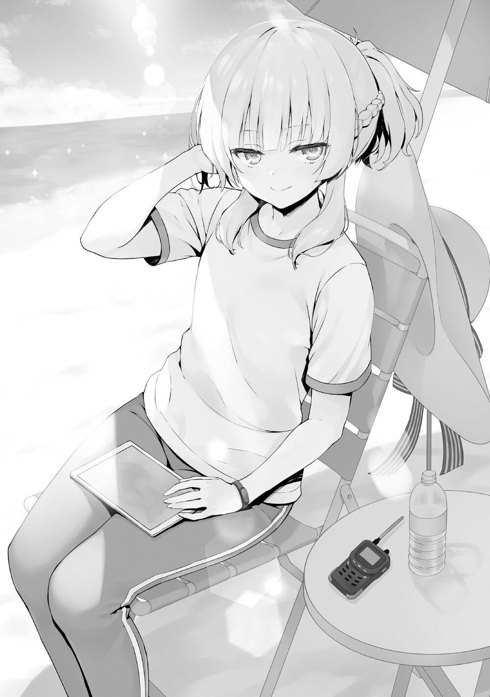
Hizo un gesto hacia el espacio abierto bajo la sombrilla, concediéndome total permiso para compartir su espacio.
—¿Cómo sabes lo de Nanase?
—Porque recibo regularmente información sobre los diversos acontecimientos de la isla.
Hasta ahora me había cruzado varias veces con estudiantes de la clase 2-A, así que supongo que no sería sorprendente que uno de ellos hubiera informado a Sakayanagi aquí en el punto de partida. Después de todo, viajar solo con un estudiante de menor edad - y una chica para el caso - definitivamente tiene la tendencia a destacar de mala manera.
—¿Estás segura de que está bien que me una a ti? Soy un enemigo.
El calor de los rayos del sol era tan intenso que sería difícil justificar media hora de exposición directa. Estando quieto bajo la luz directa del sol, sólo terminaría agotando innecesariamente mi resistencia.
—Fufu, por supuesto. No seas tímido.
Daba la impresión de que yo, como alguien que no formaba parte de los diez primeros, ni siquiera suponía una amenaza perceptible. Mientras reflexionaba sobre si debía o no aceptar su oferta, los distintos alumnos que participaban en la Tarea llegaron al paseo marítimo y entraron en el agua, preparándose para el inicio de la competición. Poco después, los chicos comenzaron con su carrera.
—Qué abrumadoramente desigual.
Koenji salió a toda velocidad desde el principio y se dedicó a nadar directamente hasta la línea de meta, superando por completo al resto de la competencia. En otras palabras, a pesar de toda la fuerza y la resistencia que había utilizado mientras viajaba rápidamente de un área a otra, aún le quedaba mucho por hacer.
—Me parece que Koenji-kun ha estado sorprendentemente motivado durante este examen. Los otros grupos deben verlo como una gran amenaza.
En lo que respecta a este examen especial en particular, incluso se podría llegar a decir que era un miembro fiable de la clase 2-D.
—En realidad, hay un favor que me gustaría pedirte, Sakayanagi.
—¿El mismísimo Ayanokouji-kun me lo está pidiendo? Bueno, ¿no es eso intrigante? Por favor, continúa.
La mayoría de la gente ni siquiera querría atender una petición de un enemigo, pero los ojos de Sakayanagi brillaban de anticipación.
—Han pasado cinco días desde que comenzó el examen, y aun así sólo dos personas se han retirado.
—Komiya-kun y Kinoshita-san, ¿verdad? Parece que tú también estás bastante bien informado.
—Casualmente, yo estaba allí cuando se retiraron.
Al oír esto, la aparentemente fascinada Sakayanagi asintió.
—Por lo que pude ver en las clasificaciones, la restante Shinohara-san parece seguir esforzándose para mantenerse a flote... Por lo tanto, yo calcularía que ahora está trabajando con alguien más para poder pasar el resto del examen, ¿es así?
—Correcto.
—Aunque, dadas sus habilidades, le será muy difícil superar la segunda mitad de la batalla ella sola. Lo ideal sería que buscara ser absorbida por algún otro grupo más pronto que tarde... Ah, ya veo lo que buscas.
Aunque todavía no había dicho mucho, ella consiguió deducir lo que quería
pedirle. Así, continuó:
—¿Así que quieres que colabore? ¿Te reuniste ya con Ryuuen-kun?
—Está de acuerdo con mi plan. Parece que tiene un buen concepto de Komiya y Kinoshita.
—¿Es así?
Sakayanagi dejó entrever una sonrisa divertida mientras me miraba con ojos perspicaces.
—Es natural que Ryuuen-kun les ayude dadas las circunstancias, pero yo no veo ningún mérito en hacerlo. A cierto nivel, supongo que sería prudente evitar que los Puntos de Clase de segundo año caigan en manos de los otros años escolares. Pero para ser sincera, si no hay ningún perjuicio para la Clase 2-A, no creo que justifique ningún tipo de intervención por mi parte.
Aunque había escuchado pacientemente mi petición, eso era muy diferente a un acuerdo.
—Pero, si estás dispuesto a soportar trabajar conmigo en las mismas condiciones, no me opondría a ayudarte.
Sakayanagi contestó a mi petición con una propuesta muy justa. Gracias a su rápida intuición, las negociaciones no tardaron en terminar.
—Me gustaría aceptar tu condición, pero ahora mismo me falta el personal necesario.
—Con mucho gusto esperaré a que estés preparado, por supuesto. Esta estrategia tuya requerirá tiempo y esfuerzo para ser ejecutada, así que, si quieres entrar en acción, será mejor que lo hagas cuanto antes.
—Cierto.
Además, tenía razones para creer que Nagumo también ha estado llevando a
cabo una estrategia similar con relativa antelación. Tenía la sospecha de que
este tipo de estrategia entraría en juego con más frecuencia a lo largo de la última mitad del examen.
—Me pondré en contacto contigo más tarde.
—Entonces, dejaré que seas tú quien decida el mensajero. Ya sea Horikita-san o Ryuuen-kun, no me importa.
Asentí con la cabeza antes de marcharme rápidamente, después de decidir que lo mejor sería no holgazanear demasiado tiempo.
Después de todo, si me veían junto a Sakayanagi acabaríamos atrayendo demasiada atención negativa. Después de eso, volví una vez más al centro del puerto.
A medida que me acercaba, vi a un grupo de estudiantes de primer año que estaban comprando un surtido de suministros a Mashima-sensei. Por lo visto, él era el encargado de vender las provisiones. Aunque ya no tenía puntos de provisión, decidí pasarme por allí y curiosear.
—Hola.
—Ah, Ayanokouji. En realidad, es el momento perfecto. Tengo algo que decirte, así que haz como si estuvieras mirando la mercancía y escucha.
Me moví siguiendo su sugerencia, dejando caer casualmente mi mirada hacia las diversas mercancías expuestas mientras me acercaba discretamente a él.
—El director interino Tsukishiro no ha hecho nada digno de mención hasta ahora, al menos no desde que empezó el examen. No he notado que haya planeado nada para interferir contigo.
—¿Así que está diciendo que no tengo que preocuparme de que haga nada?
—...Eso es lo que me gustaría decirte, pero todavía hay ciertas cosas que
parecen un poco extrañas.
—¿Qué significa eso?
Me moví lentamente entre la mercancía expuesta, tomando de vez en cuando los productos en mis manos mientras lo hacía.
—En este examen, no se sabe cuándo o dónde alguien puede correr peligro. En el caso de que un estudiante sufra una lesión particularmente crítica en términos de tiempo, la escuela ha preparado un pequeño bote y un helicóptero para ayudar a acelerar el proceso de rescate.
—Eso me parece razonable.
El helicóptero y el bote tenían cada uno su uso particular, así que no era extraño que la escuela tuviera ambos preparados. Si, por ejemplo, un estudiante se encontrara con problemas en el lado opuesto de la isla durante una temporada de mal tiempo, sería mejor hacer uso de la embarcación, mientras que el helicóptero ganaría en los casos en los que cada segundo fuera importante.
—En un principio pensábamos llevar un helicóptero y un bote, pero por alguna razón acabamos llevando dos botes. Cuando lo investigué, descubrí que el director interino lo dispuso como una supuesta medida de seguridad.
Era evidente que, a medida que avanzaba el examen, Mashima-sensei había estado atento hasta al más mínimo detalle mientras recopilaba información sobre los movimientos de Tsukishiro.
—Entonces, ¿es posible que lo hiciera esperando la necesidad de dos botes a la vez?
—Eso es muy cierto. A fin de cuentas, es sólo algo peculiar que pensé que valía la pena mencionar. Tómalo como quieras.
Lo que originalmente iba a ser un pequeño y único bote de rescate, se han convertido en dos.
Sin embargo, aunque el bote fuera pequeño en tamaño, inevitablemente se
notaría una vez que comenzara a moverse. Sería bastante difícil enviar uno sin
una señal de SOS de un estudiante. Y lo que es más importante, aunque consiguieran movilizar el bote, la pregunta seguía siendo: ¿Qué tiene que ver exactamente eso conmigo?
—¿Dónde suele pasar el tiempo el director interino?
—Por lo general, se queda en la carpa donde se instaló el equipo de monitoreo, asegurándose de que nada haya salido mal con los relojes de los estudiantes. Por supuesto, también hay otros miembros del personal que supervisan los relojes. Aparte de eso, suele salir a patrullar la isla una o dos veces al día, a veces durante varias horas.
—¿El director interino sale a patrullar la isla, él solo?
—Sí.
Aunque no se sabía qué era exactamente lo que hacía, había una conclusión concreta que podía extraer de esto. En resumen, que había varias horas al día en las que nadie lo vigilaba.
—En cualquier caso, tengo un mal presentimiento sobre todo esto, así que asegúrate de vigilar tu espalda, Ayanokouji.
—Gracias por tomarse la molestia de proporcionarme esta advertencia.
Tenía toda la intención de mantenerme tan vigilante como fuera físicamente posible, pero aun así no sería capaz de olvidarme del examen. Al fin y al cabo, por muy precavido que fuera, seguiría sometido a la regla del Movimiento Básico.
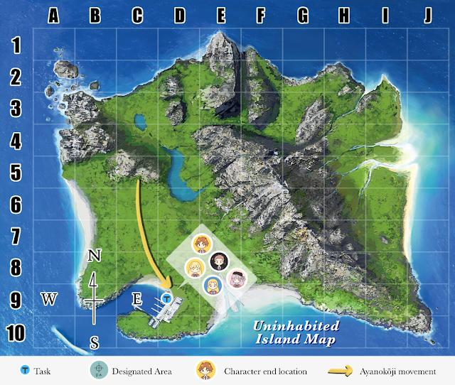
PARTE 3
La tarea de natación en aguas abiertas terminó, y aunque Nanase perdió el primer lugar, se las arregló para colarse por poco en el tercer lugar y ganar algunos puntos por sus esfuerzos. Había cubierto una larga y dura distancia en un periodo de tiempo drásticamente corto, así que, en conjunto, había tenido una actuación admirable. Iba a elogiarla por sus esfuerzos cuando volviera, pero parecía descontenta, así que adopté un enfoque diferente.
—La chica que quedó en primer lugar es mi compañera de clase Onodera.
Es una oponente muy temible cuando se trata de nadar, así que no deberías dejar que la derrota te afecte.
Con un miembro destacado del club de natación como Onodera como oponente, Nanase se las había arreglado bastante bien.
—Sí. Onodera-senpai estuvo ciertamente increíble. Sin embargo, lo que realmente me preocupa es...
Nanase se interrumpió mientras miraba por encima de su hombro y fijaba su mirada en alguien determinado. Ese alguien no era otro que Koenji, el joven que había arrebatado el primer puesto en la categoría de chicos con una abrumadora muestra de superioridad.
—Además de llegar a la zona de salida más rápido que nosotros, ha ganado su competición en un tiempo récord.
Se quedó quieto mientras miraba el mar, y por lo que pude ver, su respiración no estaba agitada en lo más mínimo.
—Es tanto un bicho raro, como un superhumano. Pensar en él más de lo necesario no merece la pena.
Aunque diga esto, incluso yo, como su compañero de clase, he tenido que cambiar personalmente mi evaluación de él dos o tres veces hasta ahora durante este examen especial. La tarea de tirar de la cuerda de antes fue sólo un ejemplo de ello. Tiene un potencial insondable.
Si esto es una muestra de lo que realmente es capaz, entonces sería justo llamarlo un prodigio de algún tipo. Habiendo recibido una suma global de 20
puntos por su victoria, Koenji ascendió temporalmente al primer puesto de la clasificación general. Sin embargo, sería incorrecto decir que esto ponía a Nagumo en desventaja.
Más bien, el hecho seguía siendo que Nagumo estaba en una posición
abrumadoramente ventajosa en comparación con Koenji. En el futuro, Nagumo
sin duda maximizará el tamaño de su grupo a través de las Tareas. Una vez que su grupo llegue a los seis miembros, empezará a ganar puntos a un ritmo acelerado y seguramente se escapará con el liderazgo.
Por muy extraordinario que sea Koenji, al final, está actuando solo. Él carece de los recursos humanos necesarios para llegar a la cima. Por lo tanto, a la hora de la verdad, me pregunté cómo planeaba exactamente Koenji superar este revés.
En este punto, decidimos descansar hasta que se anunciara nuestra siguiente área designada.
Nos rehidratamos con el agua potable que tenían en el lugar, nos relajamos y disfrutamos de un merecido descanso. Entonces, a la 1:00 PM, se reveló la tercera área designada del día. Fue la designación aleatoria del día, saltando directamente del área H9 al área B6, de un lado del mapa al otro.
Hasta ahora me había saltado un total de cinco áreas seguidas, lo que me había costado un número considerable de puntos debido a la penalización. Por ello, quería llegar a esta nueva área designada por cualquier medio.
—Senpai. En términos de distancia es realmente manejable, pero...
Habiendo visto el área que había sido designada en su tableta, Nanase me miró con ojos brillantes.
—Será difícil si intentamos ir directamente a través del bosque. Sin embargo, podemos tomar la playa en D8 y C8 y atravesar un trozo de bosque más corto hasta la playa en B8. Entonces, si nos dirigimos al norte desde allí, podremos llegar a B6 sin demasiados problemas.
Terminé la frase por ella y añadí algunos pensamientos propios, lo que la hizo asentir y ponerse de pie. Al parecer, se había imaginado esta misma ruta.
—Afortunadamente, he podido recuperar mis fuerzas y rehidratarme un poco. Debería estar bien para seguir adelante sin problemas.
Aunque nos resistíamos a separarnos del área de salida, volvimos a poner
rumbo a los bosques de la isla deshabitada. Al principio pudimos ver muchos
otros grupos de estudiantes, pero en cuanto pusimos un pie en el bosque, nos encontramos con la familiar sensación de soledad.
A diferencia de las playas de arena, donde estabas sometido a los intensos rayos del sol directo, el calor sofocante y la humedad del bosque te carcomían el cuerpo.
—Acabamos de empezar y ya tengo sed.
—Agradezco que hayamos podido mantenernos hidratados en el área de salida, pero también voy a echar de menos el fácil acceso al agua.
Pasar de beber toda el agua que quisiéramos a vernos obligados a conservarla de nuevo fue peor de lo esperado. Por eso, aunque ganar puntos sea una prioridad, es natural que haya grupos que traten de quedarse algo cerca del área de salida.
—Hay más grupos apiñados alrededor del área de salida de lo que esperaba. Me pregunto si eso se debe al estrés y la dificultad que supone vivir en la isla durante cuatro o cinco días seguidos. ¿Qué opinas, Senpai?
—Creo que eso es una parte, pero no es la única razón. Yo diría que el factor más importante es la revelación de los diez grupos inferiores.
—...¿Es así? Bueno, la pena de expulsión sólo se aplica a los cinco últimos grupos, y como se les dio la posibilidad de conocer su situación actual a través de sus tabletas en el cuarto día, supongo que tiene sentido que se hayan vuelto complacientes...
Al final del tercer día, casi todos los alumnos se habían esforzado al máximo para asegurarse una posición en las tablas de clasificación. Nos habían puesto a deambular por una isla deshabitada y desconocida, con la misión de acumular la mayor cantidad de puntos posible mientras nos lanzaban tareas y áreas designadas. Todo ello, con el único fin de escapar de la amenaza subyacente
conocida como "expulsión".
Al cuarto día, sin embargo, todo cambió. Los estudiantes empezaron a comparar los puntos que habían ganado con los de los últimos puestos. Utilizando sus tres primeros días de vida en la isla como una especie de línea de referencia, hacían aproximaciones arbitrarias de cuántos puntos podían ganar en un día y lo utilizaban para ayudar a decidir si estaban en ventaja o no.
—Pero, aunque tengas una ventaja de 10 a 20 puntos sobre los cinco últimos, no hay garantía absoluta de que estés a salvo, ¿verdad? Si fuera yo, trataría de establecer una ventaja de 30 a 40 puntos y trabajaría para mantenerla.
—Por supuesto, en algún nivel, todo el mundo sabe que debería hacerlo así. Al fin y al cabo, todos quieren afrontar el examen especial con la determinación de darlo todo de principio a fin. Pero la realidad no es así. Al igual que tú y yo estamos ansiosos por beber un poco de agua en este momento, una vez que pruebas algo dulce, cualquier determinación que puedas tener está condenada a flaquear.
—Ya veo... Supongo que puedo entender un poco lo que dices. Por ejemplo, aunque hayas resuelto quedarte despierta toda la noche para estudiar el día antes de un gran examen, en cuanto empieces a pensar en las ganas que tienes de echarte una siesta rápida, te verás metida bajo las mantas de tu futón y acabarás durmiendo accidentalmente hasta la mañana...
Parecía avergonzada mientras hablaba, como si se tratara de un relato de algo que vivió en carne propia.
—Desde el comienzo del cuarto día, la mayoría de los grupos debieron empezar a quedarse sin comida y sin agua, y la fatiga general también ha empezado a aparecer. Creo que puedes ver que pasar por una breve visita en el área de salida es la causa principal. Si ves que otro grupo se lo toma con calma en un entorno tan cómodo, es natural que pienses en hacerlo tú también, al menos durante un rato.
En un mundo en el que nadie se tomara un descanso en el área de salida y sus alrededores, la mayoría de los grupos que se detuvieran no tendrían la tentación de unirse y, en cambio, optarían por reanudar su camino.
—Me imagino que la decisión de quedarse a descansar en el área de salida vendría tras una discusión entre los miembros del grupo. Dirían algo así como 'Tenemos una ventaja por el momento, así que vamos a quedarnos aquí un rato y escoger algunas Tareas fáciles mientras disfrutamos del agua gratis y la seguridad. Luego, una vez que hayamos conseguido una cantidad adecuada de comida y agua, nos pondremos en marcha de nuevo.
—Bueno, eso sería lo esencial.
Nanase asintió mientras yo hablaba, al parecer convencida. Sin embargo, sólo unos instantes después me hizo una pregunta.
—Entonces, la opción correcta es renunciar a tomar el camino fácil y ser más estricto contigo mismo... a eso quieres llegar, ¿no?
—Nanase, dijiste que querías establecer una ventaja considerable y mantenerla, pero el cansancio ha comenzado a alcanzarte, ¿no es así? Tú también has participado en tareas más exigentes físicamente que yo.
—S-sí. Sé que dije antes que trabajaría duro, pero debo admitir que mi ritmo ha disminuido bastante desde el primer día. Sospecho que para mañana o pasado mañana seré aún más lenta.
Aunque no lo dijo explícitamente, el desgaste de su cuerpo era más grave de lo que imaginaba. Dejando de lado la energía gastada en las tareas, ¿cuántas decenas de kilómetros habíamos recorrido ella y yo en estos últimos cinco días?
—El descanso es importante. Hay momentos en los que no tendrás más remedio que esforzarte en exceso para ganar puntos, pero la clave está en saber cuándo hay que esforzarse y cuándo hay que dar un paso atrás y tomarse
un descanso. En última instancia, sólo tienes que evitar hacer lo mismo que la
mayoría de los demás estudiantes.
Muévete cuando otros han elegido descansar y descansa cuando otros han elegido moverse.
—He estado pensando que has asumido el examen con bastante negligencia estos últimos días, Ayanokouji-senpai. Pero, sólo te has estado conduciendo de esa manera porque no quieres destacar demasiado durante la primera mitad, ¿no es así?
—Eso es más o menos cierto. Por supuesto, atacaré si se presenta una oportunidad adecuada, pero incluso si lo hiciera en una Tarea muy disputada, el número de puntos que puedo ganar será limitado.
Hasta ahora había habido muchas Tareas en las que podría haber ganado si se me hubiera dado la oportunidad de participar, pero nunca se me dio esa oportunidad porque alguien más ya había ocupado el último lugar.
—Uhm, si puedo preguntar... ¿por qué me hablas de tu plan? Hasta ahora, siempre me pareció que buscabas apaciguarme o engañarme cada vez que salía el tema, Senpai.
Quiere saber por qué, y con razón. Después de todo, normalmente no dejaba que otras personas me oyeran hablar así. Entonces, ¿por qué decidí compartir con ella una parte selecta de mi estrategia general en lugar de intentar ocultarla como hacía habitualmente?
Habiendo pasado los últimos días viajando por la isla junto a ella, naturalmente llegué a entenderla mejor. La estudiante llamada Nanase Tsubasa... ¿Qué tipo de personalidad tiene? ¿Qué tipo de mentalidad? Es una alumna de honor diligente cuyas capacidades físicas y académicas están muy por encima de la media. Es alguien que sigue las instrucciones sin expresar una sola queja, pero no duda en decir lo que piensa cuando siente que hay que decir algo. Sobre todo, tiene la confianza y la determinación necesarias para no derrumbarse fácilmente.
En conjunto, esto es tanto una fortaleza como una debilidad, así como una forma
bastante incómoda de vivir la vida. Precisamente porque es una persona así, no
pude evitar tener una sensación de incongruencia por el hecho de que hubiera elegido unir fuerzas con alguien como Housen.
¿Acaso el motivo es el intento de que me expulsen como alumna de la Habitación Blanca?
¿O quizás hay algún otro motivo para ello? Cuando me propuso por primera vez la idea de viajar juntos, pensé que estaba buscando una oportunidad para atacar cuando yo mostrara un momento de debilidad.
Por esa misma razón, intenté parecer relajado o descuidado en múltiples ocasiones durante nuestro tiempo juntos. Si ella decidía atacar mientras estábamos en lo profundo del oscuro bosque, sus acciones quedarían ocultas a cualquier mirada indiscreta. Pero, al final, Nanase ni siquiera intentó aprovechar las oportunidades que le brindé.
Más bien, entre prestar atención a los problemas de Ike y ayudar a Shinohara y a los demás cuando estaban en peligro, siempre hizo un esfuerzo genuino por intentar ayudar a los necesitados.
—En pocas palabras, no se puede cuestionar el hecho de que seas mi enemiga, Nanase. No sólo porque este examen requiere que compitamos como estudiantes de diferentes años escolares, sino también porque hay 20 millones de puntos privados para ti por hacer que me expulsen.
—...Así es. Después de todo, intenté conspirar contra ti antes, Senpai.
—Dicho esto, tus acciones hasta ahora han hecho imposible que te vea como una enemiga.
—¿Aunque haya actuado con descarada hostilidad antes...?
—Extraño, ¿no? Bueno, dejando eso de lado, también estoy bastante seguro de que, aunque no dijera nada, entenderías mi estrategia hasta cierto punto.
Actuó como si se sorprendiera cuando dije esto, pero en el fondo ya debería haber captado mis verdaderas intenciones. Y a pesar de que ya era vagamente consciente de mis planes, quiso fingir ignorancia para poder averiguar algo más.
—Pero con todo eso dicho, esto es sólo mi intuición.
En este punto, Nanase se hundió en el silencio. No tenía intención de presionarla más sobre el asunto, y me contenté con continuar tranquilamente nuestro viaje por el bosque.
Por el momento, mi máxima prioridad es llegar a la siguiente área designada.
PARTE 4
—¡Uf! De alguna manera finalmente logramos llegar a nuestra última área.
Con una pesada respiración, Nanase se desplomó en el suelo, sucumbiendo a la fatiga que plagaba todo su cuerpo.
La cuarta área designada del día fue el área B5, justo encima de la anterior área B6.
Para Nanase, incluso una distancia tan corta debía de ser considerablemente pesada.
—Parece que te has esforzado bastante.
Ella estaba bien cuando dejamos el área de inicio, pero después de un tiempo, su ritmo comenzó a disminuir gradualmente. Dadas las circunstancias, yo había contemplado la posibilidad de dejarla atrás y llegar al área designada solo, pero al final consiguió perseverar sólo con su fuerza de voluntad.
—Para ser sincera, participar en esa Tarea de natación fue demasiado para mí.
Aquella tarea debió agotar hasta la última gota de energía que le quedaba.
—Afortunadamente para ti, hemos terminado por hoy. Podemos tomarnos las cosas con calma a partir de aquí y buscar un buen lugar para acampar.
Descansamos un poco mientras esperábamos a que ella se sintiera preparada para volver a caminar, y luego salimos en busca de un lugar adecuado para acampar.
Al poco tiempo, nos encontramos con un amplio claro en el bosque donde otro grupo ya había acampado. El grupo estaba preparando la cena, ya que había una gran variedad de utensilios de cocina alineados delante de sus tiendas.
Era un lugar estupendo con mucho espacio para pasar la noche, pero pensé que
sería incómodo hacerlo cuando no éramos particularmente cercanos al otro
grupo. Justo cuando intentamos pasar de largo y mirar hacia otro lado, uno de los estudiantes nos llamó.
—¡Oigan!
El estudiante en cuestión era Hamaguchi Tetsuya, un chico de la clase 2-C.
Levanté ligeramente la mano en respuesta, lo que provocó que Nanase hiciera lo mismo con una reverencia.
—¿Tienen prisa por llegar a algún sitio?
—No. Ya llegamos a nuestra área designada para este día. Sólo pensábamos encontrar un lugar un poco más cercano al océano.
—Entonces, ¿qué tal si se lo toman con calma y se quedan por aquí un rato?
No había hablado con Hamaguchi desde el examen de la isla del año pasado y el examen en el crucero que se realizó al regreso. Sólo pasamos un breve periodo de tiempo juntos en aquel entonces, y nunca interactuamos fuera de eso.
Nuestra relación no era lo suficientemente estrecha como para llamarnos amigos...
Entonces, ¿por qué buscaba entablar una conversación conmigo?
—Aunque, no tienes que forzarte si no quieres.
Tras un largo silencio, añadió un par de palabras ligeramente compungidas.
Nanase había estado siguiendo la conversación sin expresar ni una sola queja, pero su cansancio estaba alcanzando su punto álgido, así que supuse que podríamos aceptar su oferta.
—Bueno, supongo que tomaremos un breve descanso.
—Vengan entonces, siéntanse como en casa.
Hamaguchi nos condujo a su campamento, como si estuviera invitando a un par
de amigos íntimos a su habitación. La forma en que se las arregló para crear
una atmósfera tan acogedora era justo lo que se esperaba de uno de los
compañeros de Ichinose. Dicho esto, lo que realmente despertó mi interés aquí no fue Hamaguchi, sino los otros dos miembros de su grupo. Habían salido de su tienda no mucho después de que Hamaguchi nos llamara, tras haber escuchado el sonido de nuestra charla.
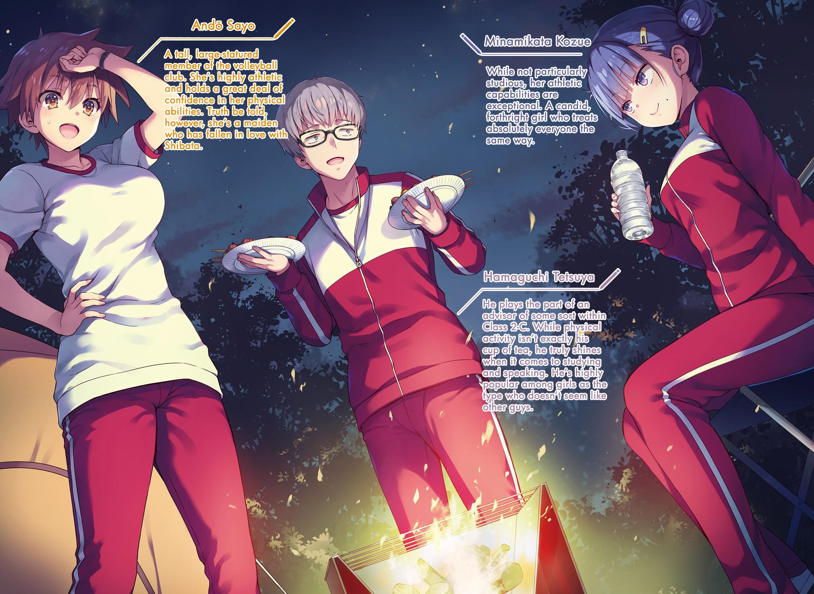
Andou Sayo: una integrante del club de voleibol, alta y de gran envergadura. Es muy atlética y tiene mucha confianza en su capacidad física. Sin embargo, es una doncella que se ha enamorado de Shibata.
Minamikata Kozue: Mientras no es particularmente estudiosa, sus capacidades atléticas son excepcionales. Una chica cándida y directa que trata a absolutamente todos por igual.
Hamagichi Tetsuya: Actúa como una especie de consejero de la clase 2-C. Las actividades físicas no son precisamente su fuerte, pero brilla de verdad cuando se trata de estudiar y hablar. Es muy popular entre las chicas por ser alguien que no se parece a los otros chicos.
Sus nombres son Andou Sayo y Minamikata Kozue. Todo el tiempo, habían estado lanzando miradas en mi dirección mientras susurraban descaradamente entre ellas sobre algo.
—Si ustedes dos no están de acuerdo con la invitación de Hamaguchi, nos iremos inmediatamente.
Como estudiantes de diferentes clases, si nuestra presencia las incomodaba, quizá sería mejor que nos fuéramos. Al menos, eso es lo que pensé, pero Andou se apresuró a poner fin a eso.
—No, no, nada de eso. Estábamos cuchicheando sobre otra cosa. Lo que pasa es que queríamos hablar contigo, Ayanokouji-kun, así que nos parece completamente bien que acampen aquí esta noche. ¿Verdad Kozue?
Con eso, miró a Minamikata, que asintió varias veces en conformidad.
—Si todos estamos de acuerdo, ¡aprovechemos la oportunidad para hacer una fiesta de bienvenida!
Diciendo esto, Hamaguchi sacó una mochila del interior de una de las tiendas.
Luego desabrochó el cierre y la abrió, revelando una cantidad considerablemente grande de comida enlatada en su interior.
—Es bastante.
Con la cantidad que podía ver en ese momento, un grupo podría sobrevivir fácilmente durante una semana.
—Por suerte, los tres teníamos la tarjeta que daba un 50% más de puntos de provisión cuando empezó el examen. Por eso tenemos mucha más comida que otros grupos.
Aunque ya me lo había imaginado, decidí hacer ver que estaba realmente impresionado por ello. Un grupo normal de tres personas habría tenido 15000
puntos de provisión con los que trabajar, pero el grupo de Hamaguchi tenía
22500. Incluso si optaban por comprar una barbacoa y una rica selección de
carne, aún les sobrarían muchos puntos. Por supuesto, compras como ésa no serían adecuadas para viajar y transportar, dado el peso.
Uno de los principales puntos fuertes de la clase 2-C era que sus alumnos prácticamente nunca actuaban de forma egoísta. A pesar de ello, uno podría pensar que el grupo de Hamaguchi estaba siendo despilfarrador con sus compras, dada la abundancia de alimentos y suministros de cocina que habían adquirido, pero quizá que ese no fuera el caso.
Lo más probable es que todo esto fuera idea de Ichinose. Sería extremadamente difícil moverse por el mapa con tal cantidad de comida. Sobre todo, en lo que respecta a los utensilios de cocina y las herramientas, como las cocinas de gas, que terminarían por estorbar. Sin embargo, la historia es diferente cuando a alguien se le encomienda explícitamente la tarea de conservar estas cosas.
Seguramente, Ichinose quería poner en marcha algún tipo de sistema para que los alumnos compartieran los utensilios de cocina útiles.
En cuanto a las reglas del examen especial, la escuela ya había declarado oficialmente que los estudiantes podían compartir la comida con otros grupos.
Así que, en ese sentido, era bastante acertado pensar en estos tres como los encargados de la cocina de la clase 2-C. Hamaguchi sacó un paquete de pinchos de la mochila.
—Qué estrategia tan interesante.
Nanase murmuró desde un lado, habiendo pasado por el mismo proceso de pensamiento que yo.
—Supongo que se puede decir eso.
—Los de primer año somos bastante carentes de solidaridad. Me imagino que los que estamos dispuestos a actuar por el bien de otro somos pocos y dispersos.
Sin embargo, una estrategia de este tipo conlleva, sin duda, sus propios
problemas. Quedarse y vigilar la comida y los suministros es sin duda importante,
pero en el proceso, te encuentras con problemas para conseguir puntos para el examen.
En el peor de los casos, la penalización por no haber pasado por las áreas designadas podría ser mitigada por una sola persona. Sin embargo, todavía te verías superado gradualmente por el resto de la competencia. En cuyo caso, te encontrarías ineludiblemente a las puertas de la expulsión.
—¿Les parece bien un poco de yakiniku?
—Eh, ¿qué quieres decir?
—Al menos tenemos que invitarles a una buena cena. ¿Verdad que sí?
Cuando Hamaguchi miró para comprobarlo con sus compañeras de grupo, las dos chicas respondieron con un inmediato movimiento de cabeza, completamente de acuerdo con la idea. Al ver esto, tomé la palabra.
—No, espera un momento. Aprecio su sentimiento, pero no podemos aceptar una oferta tan generosa.
—Así es. Su comida es demasiado valiosa para usarla con nosotros.
Aunque Nanase y yo nos sentimos agradecidos por su muestra de buena voluntad, ambos declinamos la oferta. Sin embargo, a pesar de esto, Hamaguchi simplemente actuó como si no nos hubiera escuchado y continuó preparando la comida. Realmente es una persona demasiado bondadosa. En lugar de malgastar los recursos en nosotros, estudiantes de otras clases y cursos, debería utilizarlos para apoyar a sus compañeros necesitados.
Sin siquiera pensarlo dos veces, Hamaguchi continuó sacando algo de carne empaquetada de una caja refrigerada guardada dentro de la mochila.
—No tienen que preocuparse por eso. Resulta que hoy conseguimos una buena carne como recompensa de una tarea. De todos modos, no va a durar
mucho tiempo en el almacén, así que será mejor que comamos mientras
podamos.
Cogió los cortes de carne y empezó a pincharlos. Por lo que parecía, estábamos a punto de que nos sirvieran una comida completa. Incluso sacaron un bote de repelente de mosquitos para que lo usáramos y así hacer el ambiente aún más acogedor y confortable.
—¿Está... realmente, realmente bien que nos inviten a una comida como esta?
—Oh, déjate de formalidades. No te contengas.
A pesar de que su clase tenía una tendencia a priorizar demasiado la ayuda a los demás, todavía tenía que preguntarme: ¿por qué yo? Seguramente no había forma de que llegaran a esos extremos por cada estudiante que pasaba por allí.
—¿Tienes curiosidad por saber por qué te he llamado?
—Teniendo en cuenta que también me estás invitando a comer, definitivamente plantea preguntas.
Después de hacer una pausa para dar con las palabras adecuadas, Hamaguchi las pronunció.
—Es porque hemos oído hablar mucho de ti últimamente, Ayanokouji-kun.
Queríamos tener la oportunidad de hablar contigo nosotros mismos. ¿No es así, chicas?
—Sí.
Minamikata y Andou asintieron rápidamente, totalmente de acuerdo con el razonamiento de Hamaguchi.
—¿Qué quieres decir?
—Bueno, como... ya sabes...
Andou me lanzó una mirada interrogativa, la mirada en sus ojos casi diciendo:
"¿Entiendes de lo que estoy hablando, verdad?".
Una vez que se dieron cuenta de que realmente no tenía ni idea de lo que querían decir, sus expresiones se volvieron aún más sorprendidas que antes.
—¿Eh? Espera, ¿entonces no ha habido ningún progreso todavía? ¿De verdad?
—¡No puede ser! ¡Pensé que a estas alturas al menos estarían en esa etapa de ‘más que amigos, menos que novios’!
—Lo sé, ¿verdad? Honami-chan ha estado diciendo su nombre casi todo el tiempo estos días.
— ¿De verdad?
—Sé que no es nuestro papel decir esto y todo, pero... ¿hay alguna razón por la que no deberían salir en este momento?
Aunque ya había oído en alguna parte que a las chicas les gusta hablar de este tipo de cosas, ¿Es realmente apropiado que lo hagan justo delante de la persona en cuestión? Nanase parecía haber atado los cabos a estas alturas, ya que me miraba con un interés agudo e ilimitado en su mirada.
—...No estoy seguro al 100% de lo que quieren decir ustedes dos, pero no creo que debamos ser pareja.
—No, no, no, no, no. ¿Qué estás diciendo? Lo diré de nuevo sólo para estar segura, pero sabes que es ESA Honami-chan de la que estamos hablando,
¿verdad?
—No puedo hablar por todos los chicos, pero probablemente al 80 o 90%
de los de segundo año les gusta Honami-chan, ¿verdad?
—Eso me parece algo seguro.
Aunque sin duda no se puede negar el hecho de que Ichinose es popular entre
los chicos y las chicas por igual, el 90% fue sin duda una exageración. A Sudou
le gusta Horikita, a Ike le gusta Shinohara, y eso sin duda es sólo la punta del iceberg.
—¡Ustedes dos están en diferentes clases, seguro, pero no tienen que dejar que eso se interponga en el camino del amor! Hay muchas parejas que salen sin importar su clase o grado.
—¿No es el mayor problema aquí el hecho de que Ichinose ni siquiera está interesada en mí?
—Ooooo, ¿es modestia lo que veo? Sabes que fuiste todo un éxito con las chicas cuando nos matriculamos aquí, ¿verdad Ayanokouji-kun?
Cuando pensé en ello, pude recordar a Kushida diciendo algo relativamente similar a eso hace un año. Simplemente no tomé lo que dijo en serio en ese momento, o más bien, elegí no pensar tanto en ello.
—Suena como si fueras un éxito con las damas, Ayanokouji-senpai.
—No, no lo soy. Nada de eso. Ninguna chica me había dicho algo así antes.
—¿De verdad~? Ah, pues se me viene a la mente una vez que saliste en una conversación, pero el tema cambió muy rápido.
—Bueno, eso no ayuda. No hay manera de saber si te va a gustar un chico a menos que te acerques y hables con él cara a cara, y Ayanokouji-kun no era el tipo de chico que hablaba con la gente hace un año.
—¡Aunque no me parece que haya cambiado mucho desde entonces~!
Las dos chicas compartieron una risa mientras hacían una broma a mi costa.
—Entonces, ¿Ayanokouji-senpai ha cambiado un poco de cómo era antes?
Nanase observó mientras las dos charlaban antes de plantear su pregunta.
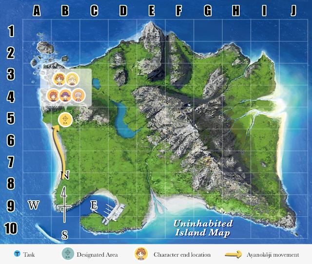
—Bueno, supongo que en algunos aspectos parece mucho... ¿más blando ahora?
El que respondió esta vez fue Hamaguchi, que acababa de regresar de un viaje al baño momentos antes de que Nanase formulara su pregunta. Aunque nunca había hablado con Andou o Minamikata antes, había pasado un poco de tiempo junto a Hamaguchi durante el examen en el crucero.
Era prácticamente la persona perfecta para dar una comparación objetiva de lo mucho que había cambiado este último año.
Dejando todo eso de lado... no me pareció que estos tres tuvieran miedo de la posibilidad de ser expulsados. Por supuesto, no había forma de saber exactamente cuántos puntos tenían, pero era imposible que estuvieran cerca de la cima de las tablas de clasificación.
Si ese es el caso, entonces...
Cuando terminamos con la cena, acabamos decidiendo aceptar su cálida hospitalidad y optamos por quedarnos allí a pasar la noche.
LOS DE PRIMER AÑO COMIENZAN A MOVERSE
El sexto día del examen. Comenzamos yendo en línea recta hacia el sur hasta nuestra primera área designada del día, la B6, donde obtuve la Bonificación de Madrugador del primer puesto. Después de eso, nuestra segunda área designada fue la A5, que estaba bastante cerca, pero lamentablemente sólo recibimos la Bonificación de Llegada.
A continuación, a la 1:00 de la tarde, estaba la tercera área, que era la designada al azar en el área C3. Había un par de maneras diferentes de llegar allí. La primera era atravesar las escarpadas montañas del área B4. Aunque no era obvio mirando el mapa, esta ruta requeriría que hiciéramos un poco de escalada. Una alternativa algo más segura era desplazarse un poco más al este de donde estábamos antes de atravesar el paso del área C4. Y por último estaba la opción de dar un gran rodeo alrededor de la cordillera hasta el área D5
y viajar desde allí hacia el norte a lo largo del río.
—Supongo que la mayoría de los otros grupos a los que nos enfrentamos van a pasar por C4 o a dar un rodeo hacia abajo y alrededor.
—Yo también lo creo.
Si pudiéramos sortear con éxito las cuestas de A4 y B4, tendríamos una oportunidad muy sólida de asegurarnos el primer puesto del Bono de Madrugador.
—Aunque me imagino que no estás en las mejores condiciones, vamos a tener que asumir el riesgo de todos modos.
—Quieres tomar el camino directo a través de A4 y B4, ¿no es así Senpai?
Nanase se las había arreglado de alguna manera para seguirme el ritmo hasta ahora, pero no se sabía si lo lograría esta vez. Pero ya había tomado una decisión al respecto, ya que eligió seguirme sin dudar.
Poco después, sin embargo, se encontró cara a cara con su mayor obstáculo.
Hasta ahora sólo tuvimos que sortear un par de cuestas y pendientes bastante pronunciadas, pero el reto que teníamos ante nosotros era mucho más parecido a un precipicio.
Tanto si miras a la izquierda como a la derecha, el acantilado se extiende hasta donde alcanza la vista. Tomar un desvío un poco más fácil no era una opción aquí. Ahora que habíamos llegado a esto, teníamos dos opciones distintas: Escalar la montaña, o dar la vuelta y encontrar otro camino.
—Yo... ¡puedo hacerlo!
Viendo cómo se convencía a sí misma, decidí dejarla ir primero y ver cómo rendía. Sacó una cinta de su mochila y se ató el pelo largo para facilitar la subida.
—¡Ah...!
En el mismo momento en que inició la escalada, se equivocó al pisar la roca y cayó al suelo.
—¡Oww, eso duele...!
Se frotó suavemente el trasero mientras se levantaba de nuevo.
Afortunadamente, no estaba muy alto cuando se cayó. Si hubiera estado dos metros más arriba, no habría terminado tan bien para ella.
El acantilado tenía cerca de diez metros de altura y, sinceramente, no se veía que fuera a ser tan difícil de escalar. Sin embargo, sería un reto para Nanase escalarlo ella sola.
—Supongo que este es el final del camino.
En realidad, este obstáculo fue más desafiante para ella de lo que pensé que sería. Lo había hecho bien al seguirme el ritmo estos últimos seis días, pero por lo visto tendría que seguir adelante desde aquí yo solo.
—¡Puedo hacerlo!
—Aunque puedas, no tiene sentido si consumes toda tu resistencia sólo para llegar a la cima. La razón por la que estamos escalando la montaña de esta manera es para ahorrar tiempo. No todo el mundo va a dar un rodeo, así que cada segundo cuenta.
De hecho, quedarse parado innecesariamente y hablar de esto ya era una enorme pérdida de tiempo, algo que Nanase seguro que entendía también.
—Me voy ahora. Depende de ti si sigues insistiendo en subir, pero tú eres la responsable de lo que ocurra.
Se mostró abiertamente frustrada por esto, pero me limité a darle la espalda, apoyé las manos en la roca y comencé a ascender por el acantilado.
Conociéndola, confiaba en que tomaría la decisión tranquila y racional en este caso, así que no tenía ninguna intención de mirar atrás para ver qué terminaba haciendo. Sin embargo, en contra de mis expectativas, sentí que su presencia se acercaba a mí por detrás y miré por encima de mi hombro.
—¿Qué estás haciendo?
—Por favor... no me hagas caso. He tomado la decisión de seguirte por mi propia voluntad, ¡Ayanokouji-senpai...!
Diciendo eso, extendió la mano sin miedo y se agarró de nuevo a la roca. Pero, debido a los persistentes rastros de fatiga que aún asolaban su cuerpo, no pudo poner suficiente fuerza en su agarre. Sus brazos comenzaron a temblar mientras se aferraba a la cara del acantilado.
—Si no tienes cuidado, podrías acabar enfrentándote a consecuencias aún
peores que el retiro.
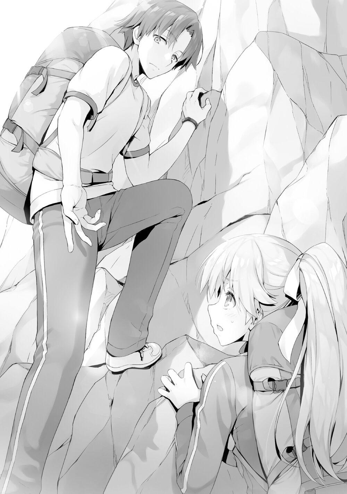
Le advertí una vez más, pero ella seguía empeñada en perseguirme. ¿Qué es lo que la lleva a ir tan lejos para acompañarme? Si intentaba retrasarme siendo un estorbo, en cierto modo lo estaba consiguiendo. Teniendo cuidado de mantener un punto de apoyo seguro en el acantilado, volví a bajar hasta aproximadamente la mitad del camino y le tendí la mano.
—Toma mi mano.
—Yo, no puedo hacer eso Senpai. Te prometí que no me interpondría en tu camino cuando pedí acompañarte... Así que, por favor, sigue adelante y no te preocupes por mí. Te lo ruego.
—Si me adelantara y te lesionaras, me dejaría un mal sabor de boca. Si estuvieras ahí abajo suplicándome ayuda podría sentirme de otra manera, pero yo soy quien toma la decisión en este caso, así que no te preocupes.
—¡Pero...!
—¿No es una pérdida de tiempo seguir discutiendo de esta manera?
Después de llamar la atención sobre esto por segunda vez, su mano fue forzada.
No había nada más que pudiera decir.
—...De acuerdo.
Aunque todavía estaba un poco frustrada, tomó mi mano. Una cosa es que no estuviera en la mejor condición física en este momento, pero incluso si lo estuviera, la pregunta seguía siendo si sería capaz de escalar o no.
—Senpai... ¿Acaso tienes experiencia previa en escalada?
—No, es la primera vez que hago algo así.
Este examen requería que probaras todo tipo de cosas que nunca habías intentado antes. Estirar la mano para ayudarla de esta manera tampoco era el enfoque correcto, dados los diversos riesgos que venían con ello.
—Es así...
Guie sus manos, mostrándole los puntos a los que debía agarrarse. Aunque era una forma ineficiente de hacerlo, finalmente conseguimos escalar el acantilado.
Sin embargo, aún no habíamos cruzado la línea de meta. Habíamos pasado
más de diez minutos simplemente subiendo el acantilado. Sin un momento de
descanso, me puse en marcha de nuevo. Ahora que la había ayudado a encontrar el camino hacia arriba, podía tomarse su tiempo para encontrar el camino de vuelta hacia abajo por su cuenta. Al principio se quedó un poco rezagada, pero su firme decisión no había cambiado en lo más mínimo y rápidamente me alcanzó.
Mientras seguíamos avanzando, no pude evitar pensar que tenía un extraño parecido con un perro fiel que persigue a su dueño. Al poco tiempo, llegamos al área C3. Aunque habíamos tardado bastante tiempo, ninguno de nuestros competidores había llegado todavía, así que me aseguré fácilmente el primer puesto y el Bono de Madrugador.
—¡Gracias a Dios...!
A pesar de que ni siquiera había conseguido la bonificación del segundo puesto por sus esfuerzos, Nanase dejó escapar un suspiro de alivio.
Teníamos un rato hasta que se anunciara la siguiente área designada, así que pensé que podría hacerle compañía y descansar un rato. Al igual que cuando estábamos en la cima de la montaña, la ligera brisa que pasaba de vez en cuando era bastante refrescante.
—Ha estado bastante tranquilo estos últimos días, pero hoy hace bastante viento, ¿eh?
Hasta ahora había estado constantemente despejado y soleado, pero unas gruesas nubes empezaban a llenar el cielo cada vez más encapotado.
—Debe haber sido sorprendente que te hayan arrojado de repente a una isla desierta justo después de entrar en la preparatoria.
—Por supuesto que lo fue. Esta es realmente una escuela increíble.
Nanase dejó ver una tímida, pero forzada sonrisa.
—Senpai, ¿te gusta? ¿Esta escuela?
—Supongo. Desde luego ha habido un puñado de dolores de cabeza con los que lidiar, pero en realidad nunca he pensado que no sea agradable.
En su mayor parte, la escuela daba la impresión de ser la misma día a día, pero en algunos aspectos era muy diferente. Simplemente disfrutaba de mi tiempo aquí, contento con los constantes y sutiles cambios diarios que traía a mi vida.
—Aunque parezca que la graduación está muy lejos, estará aquí en un abrir y cerrar de ojos. Por eso creo que lo mejor es pasar el tiempo que tengo sin lamentarme.
—...Graduación...
—¿Pasa algo?
—O-oh, no. No es nada.
Había algo en Nanase, un cierto aire con la forma en que estaba actuando, que parecía completamente diferente de la Nanase a la que me había acostumbrado en estos últimos días. Era más o menos idéntica a la sensación que desprendía cuando se matriculó aquí por primera vez. Sin embargo, era muy débil. Tan débil, de hecho, que si alguien me dijera que era sólo mi imaginación, entonces podría inclinarme a creerle. Si realmente tiene algo en mente, supongo que tendré que esperar a que me lo cuente cuando llegue el momento.
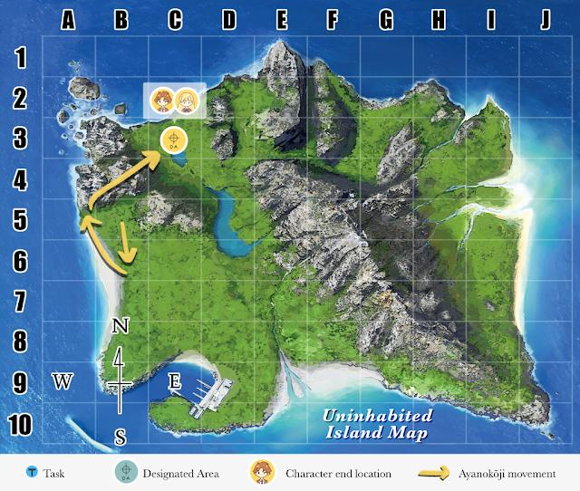
PARTE 1
A las 21:00 horas del sexto día de examen, varios representantes de las clases de primer año se reunieron en el área F9.
Los representantes en cuestión eran Takahashi Osamu de la clase A, Yagami Takuya de la clase B, Utomiya Riku y Tsubaki Sakurako de la clase C, y Hōsen Kazuomi de la clase D. Normalmente, sería difícil que un elenco tan diverso de
estudiantes se reuniera en un mismo lugar dado que sus Tablas son distintas,
pero en este caso, habían decidido la hora y el lugar de la reunión incluso antes
de que comenzara el examen.
Además, como el lugar elegido estaba en la playa, una hoguera serviría como señal fiable para la reunión. A pesar de que no había hecho nada realmente digno de mención o notable hasta el momento, la persona que había impulsado esta reunión era... Tsubaki. La hora señalada para la reunión ya había llegado y pasado, pero Housen aún no había llegado.
—Tsubaki-san, Housen-kun aún no ha llegado.
—Bueno, la verdad es que no da la impresión de ser de los que llegan a tiempo. O tal vez simplemente no viene.
El grupo decidió esperar un poco más para ver si aparecía, pero al poco tiempo, Takahashi levantó la mano con un brazo apretado contra su abdomen.
—Lo siento chicos... Me duele un poco el estómago así que me voy a excusar. Puede que... ¡Lleve un rato!
Con eso, se apresuró a correr hacia el bosque. Mientras el grupo observaba a Takahashi marcharse, los ojos de Yagami se fijaron en Tsubaki.
—Ciertamente es más conveniente para todos nosotros si todos están presentes antes de empezar, pero...
Yagami se interrumpió, perdido en sus pensamientos, pero retomó la conversación donde la había dejado sólo unos instantes después.
—Aunque Housen-kun aún no está aquí, sólo un poco debería estar bien,
¿no?".
Tsubaki, que había estado mirando en silencio la hoguera, se volteó y miró hacia Yagami.
—¿Qué...?
—Estaba pensando que estaría bien que nos contaras con detalle ese plan
tuyo.
—¿Qué quieres decir?
—Has estado tramando algo grande, ¿no es así? De lo contrario, no habrías propuesto que todos los representantes se reunieran de esta manera cuando la última parte del examen está a punto de comenzar. No es posible que sólo quieras que informemos de nuestros progresos, ¿verdad?
Tsubaki no dijo nada a esto, eligiendo en su lugar simplemente mantener su mirada fija en Yagami.
—Tus calificaciones OAA están, a simple vista, por debajo de la media. De hecho, no parece haber nada destacable en ti en lo más mínimo. Sin embargo, por lo que he visto durante las batallas en las que hemos participado los de primer año hasta ahora, has sido una persona que ha aportado una visión bastante crítica ocasionalmente. Además...
—¿Además?
—Aunque en la superficie no parece que tu clase esté haciendo algo para que Ayanokouji-senpai sea expulsado, sospecho que en realidad has estado haciendo bastante trabajo entre bastidores. El control de Utomiya-kun sobre la clase C es sólo una fachada. Tú eres la que mueve los hilos desde las sombras,
¿no es así?
—Hmmm. Dices cosas interesantes, Yagami-kun. ¿Así que la razón por la que apoyaste mi propuesta de organizar esto es porque sabías que había pensado en algo?
Cuando Tsubaki trató de organizar esto por primera vez, las personalidades principales de cada clase no estaban dispuestas a cooperar para nada. Después de todo, no había forma de que estuvieran dispuestos a escuchar a una estudiante oscura y aparentemente irrelevante como ella. Siendo ese el caso, la razón por la que todos estuvieron dispuestos a reunirse aquí hoy fue porque Yagami se mostró muy firme al respecto.
—Desde el principio, he defendido sistemáticamente que el alumnado de
primer año debería buscar la cooperación entre ellos. Aunque no tuvieras una
razón profunda para reunirnos aquí hoy, Tsubaki-san, me pareció que seguiría
valiendo la pena sólo para asegurarnos de que todos tenemos un conocimiento sólido del estado actual de las cosas.
—Bueno, Yagami-kun, ¿qué tal si te cuento algo interesante?
—¿Algo interesante? Qué inmensa curiosidad.
—Aunque, debes saber que después de escucharlo... no podré garantizarte nada.
—... Entonces, debe ser algo realmente fascinante.
Yagami se sintió ligeramente preocupado, pero mantuvo la compostura y esperó a que Tsubaki hablara.
—Yagami-kun, acabas de decir que Utomiya-kun y yo hemos estado maquinando desde las sombras para intentar que expulsen a Ayanokouji-senpai de la escuela, ¿verdad?
—Sí. A primera vista, uno podría creer que Housen-kun y Amasawa-san fueron los únicos que participaron en ello durante el último examen, pero creo que ustedes dos también lo tenían como objetivo.
—¿Una recompensa de 20 millones de puntos privados, sólo por hacer que un senpai sea expulsado? Cualquiera encontraría eso atractivo, ¿no?
—Eso puede ser cierto para otros, pero no para mí.
Al escuchar la rotunda negativa de Yagami, Tsubaki entrecerró los ojos.
—¿No para ti? Lo siento, pero me cuesta creerlo. Te haces pasar por inofensivo, pero ¿no estás realmente buscando que Ayanokouji-senpai sea expulsado también? Diablos, puede que incluso estés más obsesionado con ello que Housen-kun y Amasawa-san.
—¿Y qué te hace pensar eso? No he hecho nada hasta ahora.
—Es el tipo de cosa que puedo decir con solo mirarte. Que sepas que tengo mucha confianza en mi ojo para la gente.
Ante esto, la sonrisa de Yagami, aunque todavía presente, se volvió notablemente más tensa.
—Es difícil de imaginar dada la forma en que actúas normalmente, pero como que... me imagino que tu plan comenzó con fingir ser un aliado para poder acercarte poco a poco a él y apuñalarlo por la espalda. ¿O me equivoco?
Tsubaki miró fijamente a Yagami con unos ojos que parecían escudriñar en lo más profundo de su ser, haciéndole desviar inconscientemente la mirada.
Aunque siempre había tenido la corazonada de que Tsubaki no era una alumna común y corriente, la forma en que su mirada prácticamente se clavaba en su cráneo lo hacía parecer aún más extremo de lo que había previsto.
—Tú...
—Bueno, como sea, volveremos a eso más tarde. Volviendo al punto, la situación actual es un poco complicada, ¿no crees?
—¿Un poco complicada?
—Aparentemente, Nanase-san ha estado pegándose a Ayanokouji-senpai por un tiempo. He oído que incluso también le ha dado permiso para acompañarlo. Traté de revisarlos con la función de búsqueda del GPS sólo para asegurarme, y efectivamente, los dos están juntos en el área C3 ahora mismo.
—Ya veo. ¿Así que estás diciendo que Housen-kun ya está buscando hacer su próximo movimiento?
—Estoy diciendo que tenemos que tomar medidas más pronto que tarde.
Si Housen-kun consigue expulsar a Ayanokouji-senpai, todo habrá terminado para el resto de nosotros. Si es posible, me gustaría escuchar qué tipo de planes
has pensado para que expulsen a Senpai, sólo como referencia. ¿Me entiendes?
—Ya te he dicho que no tengo...
Tsubaki se inclinó más hacia Yagami, sus ojos rebosaban de convicción.
—Si no colaboras de buen grado a partir de ahora, podrías acabar pagándolo caro más adelante.
—¿Pagarlo caro...?
—Bueno, como que alguien importante para ti estará en peligro, o algo así.
—¡Seguro que no vas a hacerle algo a Kushida-senpai!
Al escuchar el nombre de Kushida, una fina sonrisa finalmente surgió en el rostro perpetuamente inexpresivo de Tsubaki. Ella sabía que Yagami y Kushida estaban conectados desde hacía mucho tiempo. Además, sabía que había algo entre ellos que él buscaba ocultar.
—Ah, ¿qué es eso de Kushida-senpai? Cuéntalo.
— N-no, no es nada... Me disculpo, ¿pero no hay nada más que pueda contarte─?
Las palabras de Yagami se cortaron cuando Utomiya se acercó repentinamente por la espalda y lo sujetó por la fuerza con una llave Full Nelson. Se resistió en un intento de liberarse, pero no tenía la fuerza necesaria para zafarse.
—¿Qué, qué estás haciendo Utomiya-kun...?
—Lo siento Yagami. No tengo nada contra ti, pero... no se puede evitar.
De este modo, quedó claro que las anteriores sospechas de Yagami sobre la verdadera implicación de Tsubaki en la clase 2-C habían sido correctas todo el tiempo.
—¡Pienso en todos y cada uno de los estudiantes de primer año como si
fueran mis propios compañeros de clase! ¿Por qué no nos calmamos y dejamos
esto?
—O te sinceras y nos dices lo que sabes, o te retiras aquí y ahora. Esas son tus únicas opciones.
Como los tres eran los únicos presentes, no había nadie a quien Yagami pudiera acudir en busca de ayuda.
—Yagami-kun, entiendo que crees que Kushida-senpai es algo así como la clave para conseguir la expulsión de Ayanokouji-senpai, pero ¿por qué? ¿Cómo planeas hacer uso de ella exactamente?
—No puedo decirlo...
Cuando se negó a responder, Utomiya apretó aún más los brazos de Yagami.
—Si no puedes decirlo, eso debe significar que realmente estás tramando algo. ¿No tienes ganas de confesar? ¿Quieres acabar con esto?
—Yo... Kushida-senpai es sólo...
Al no escuchar aún la respuesta que querían, Utomiya soltó momentáneamente su agarre y procedió a rodear con su brazo el cuello de Yagami en su lugar.
Yagami comenzó a ahogarse y a buscar aire mientras estaba constreñido en una llave a la cabeza.
—Te estás acercando a tu límite, Yagami-kun. Si no confiesas ahora, supongo que tendremos que oírlo de Kushida-senpai... directamente.
Esto no era sólo una amenaza vacía. Más bien, era obvio que Tsubaki la cumpliría. El hecho de que estuviera utilizando a Utomiya como medio para llevar a cabo actos de violencia e intimidación era prueba más que suficiente para ello.
—Te lo preguntaré por última vez. ¿Confesarás o no?
Al no tener otra opción real, Yagami finalmente se resignó y cedió.
—...Lo entiendo. Te lo contaré todo.
Con la mirada puesta en el suelo, Yagami comenzó a hablar del pasado de la chica llamada Kushida Kikyou y del conocimiento de Ayanokouji Kiyotaka sobre el asunto.
No mucho después de que terminara, Takahashi regresó del interior del bosque.
Todos esperaron por un tiempo después de eso, pero al final, Housen nunca apareció.
SE REVELA LA VERDADERA NATURALEZA
El amanecer del séptimo día. Hasta ahora, había acumulado un total de 67
puntos.
Hipotéticamente hablando, si un grupo de cuatro personas renunciara a toda participación en las Tareas y se centrara únicamente en conseguir todas sus Bonificaciones de Llegada, tendría 92 puntos. Desde ese punto de vista, mi puntuación hace pensar que estoy en una situación difícil, pero... este examen es mucho más que eso. Mi clasificación general venía subiendo constantemente estos últimos días, y ahora estoy en el puesto 51. Esto ayudaba a ilustrar lo difícil que era atravesar continuamente la isla sin perderse ninguna área designada.
Lo más lógico es que alrededor de la mitad de los grupos hayan avanzado sin descanso durante los tres o cuatro primeros días, hasta que agotaron sus provisiones iniciales de comida y agua. Y entonces, cuando su progreso se estancó al quinto día, comenzaron a poner la mira en el puerto para intentar recuperarse.
Sin embargo, no sería fácil para el grupo volver a estar en perfecta forma. El estrés físico y la fatiga que se habían acumulado continuamente no desaparecerían inmediatamente. Tampoco hay que olvidar la carga mental que conlleva la perspectiva de viajar largas distancias.
Además, como no tenían más remedio que intentar frenar la pérdida de puntos por no llegar a las áreas designadas, se verían obligados a tomar medidas alternativas, como enviar a uno de sus compañeros de grupo solo para llegar a las áreas designadas. Aunque esto les permitiría evitar la penalización, se verían obligados a renunciar a las bonificaciones de Madrugador y sólo recibirían una bonificación de llegada de un punto.
En comparación, yo logré conservar mi energía. Me sentía igual que cuando empezó el examen. Estaba listo para dar un paso más ahora que estábamos entrando en la segunda mitad de la batalla.
Mientras tanto, Koenji seguía avanzando sin cesar, y no parecía que fuera a frenar pronto. Actualmente ocupaba el segundo lugar en la tabla de posiciones, y sólo estaba por detrás del grupo que ocupaba el primer lugar, el de Nagumo, por un escaso margen de ocho puntos. En lo que respecta a los grupos de segundo año que se encontraban entre los diez primeros, el grupo de Ryuuen y Katsuragi había subido un puesto y ahora se encontraba en el noveno lugar.
Bueno, dejando todo eso de lado, terminé de lavarme la cara en el río y me di la vuelta para mirar la tienda que tenía detrás. En el transcurso de los últimos días que llevábamos viajando juntos, Nanase se había levantado siempre temprano.
Pero hoy, aunque ya eran las 6:50 de la mañana, todavía no había salido de su tienda. Me pregunté si se había quedado dormida o si hubo algún tipo de cambio en su salud.
Después de todo, la carga de su cuerpo debía ser considerable debido a todos los viajes y tareas que realizaba cada día. Después de limpiarme la cara con una toalla, me acerqué a su tienda y rebusqué algo ruidosamente en mi mochila mientras sacaba mi tableta. Al escuchar el ruido que estaba haciendo, Nanase finalmente salió de su tienda.
—...Buenos días, Ayanokouji-senpai.
—Sí, buenos días. ¿Te encuentras bien?
—¿Eh? Ah, sí. Me siento perfectamente bien. No me pasa nada malo.
Aunque esperaba que mostrara signos de cansancio, ni sus palabras ni sus movimientos daban esa impresión. Al parecer, no había dormido muy bien, ya que se le veían unas ligeras ojeras.
—Estuve revisando las clasificaciones mientras esperaba. Hay un grupo de primer año que lo ha hecho bastante bien hasta ahora.
De los diez grupos que se encontraban en la cima de la tabla de posiciones, había seis grupos de tercer año y tres de segundo, pero sólo uno estaba formado por estudiantes de primer año.
Tal y como estaba ahora, las tablas de clasificación eran una perfecta representación de la fuerza de los estudiantes más veteranos y experimentados.
—El grupo que va bien es el de Utomiya-kun y Yagami-kun, ¿verdad?
Ayer estaban en el séptimo lugar, y desde esta mañana, habían subido al sexto.
El grupo estaba formado por tres chicos: Takahashi Osamu de la clase 1-A, Yagami Takuya de la clase 1-B, y Utomiya Riku de la clase 1-C.
—Después de todo, entre todos los grupos de primer año, bueno... Sí, definitivamente son uno de los mejores.
A pesar de su uso de la frase "uno de los mejores", su respuesta fue bastante imprecisa.
—Como miembro de la Clase 1-D, es honestamente difícil para mí apoyarlos seriamente en sus esfuerzos.
—Ya veo. Eso tiene sentido.
Dada la situación, la Clase 1-D preferiría ver a los estudiantes de los otros años escolares tener éxito que ver al grupo de Takahashi entrar en los tres primeros puestos.
—Sin embargo, nuestros senpais de tercer año son realmente increíbles,
¿no? Cada clase, desde la 3-A hasta la 3-D, tiene a alguien entre los diez primeros.
Esto fue algo que también encontré impresionante. A partir de esta mañana, el número de grupos de tercer año en el top ten había aumentado a seis, con el grupo de Nagumo en primer lugar, sin duda, allanando el camino.
No sólo habían participado en más Tareas que cualquier otro grupo, sino que
tenían el mayor número de victorias en esas Tareas por un margen abrumador.
Era como si quisiera ilustrar al resto la tenacidad de los de tercer año.
—Por cierto, tú también eres increíble, Ayanokouji-senpai. A pesar de estar solo, has conseguido ganar un número bastante grande de puntos.
—Si bien eso puede ser cierto, no será fácil para mí avanzar hacia los rangos superiores desde donde estoy ahora. Al final del día, si no eres parte de los tres primeros, no obtendrás la recompensa que más importa.
Evitar la expulsión y llevarse la recompensa que se da al 50% de los mejores grupos simplemente no sería suficiente. Ni siquiera sería suficiente para devolver los puntos que me prestó Horikita.
—Aunque dices que no será fácil, no pareces estar muy ansioso por ello, Senpai.
—Espero un milagro. La gente de otros grupos debería empezar a retirarse pronto.
—...Eso es cierto, supongo.
Cuando nuestra conversación llegó a su fin, ambos miramos al cielo casi al mismo tiempo. Habíamos sido bendecidos con un tiempo casi perfecto durante los últimos seis días, pero a partir de hoy, tenía aspecto de que las cosas iban a ser muy diferentes.
Unas nubes densas y grises cubrían el cielo y parecía que iba a empezar a llover en cualquier momento. Por lo que vi en la previsión meteorológica, debería empezar a llover en algún momento de la mañana, lo que significa que nos quedan dos o tres horas como máximo.
Personalmente, no había gastado ninguno de mis puntos de provisión en ropa para la lluvia. Si mi ropa y mis zapatos se empapaban, tendría que gastar energía extra para lidiar con el peso añadido y la baja temperatura. Además, el barro del suelo limitaría nuestra velocidad de desplazamiento, lo que dificultaría todavía más nuestro viaje sin el equipo adecuado.
No podíamos comprobar la clasificación de ningún grupo que no formara parte
de los diez primeros o últimos. Por ello, me pregunté si Horikita, que también
viajaba sola, estaría bien. Después de todo, no nos hemos visto para nada desde nuestra conversación al principio del examen. Si enfermara o se lesionara, su destino estaría sellado. En cualquier caso, quería salir de la primera área designada antes de que el tiempo empeorara.
Cuando terminamos de recoger nuestras cosas, miré qué área había sido designada en primer lugar. Afortunadamente, la primera designación del día estaba cerca del área C3. No debería llevarnos mucho tiempo llegar allí desde donde estamos ahora. Pero, justo cuando estaba a punto de guardar mi tableta, una notificación apareció en la pantalla.
Si no me equivocaba, la escuela enviaba mensajes globales como este para ponerse en contacto con nosotros.
『 Dependiendo del estado del tiempo, el Movimiento Básico y las Tareas pueden ponerse en pausa hasta nuevo aviso. Por favor, asegúrense de estar atentos a sus tabletas para futuras actualizaciones.』
Por lo visto, el clima obligó a la escuela a tomar una dura decisión sobre la continuidad del examen. Perder la oportunidad de ganar puntos durante un periodo de tiempo prolongado podría resultar fatal para los grupos peor clasificados. Por lo visto, la escuela no iba a tomar una decisión hasta que fuera absolutamente necesario, pero esto era una idea para otro momento.
—Muy bien, vamos.
Después de dar un par de pasos, noté que Nanase no me seguía. Cuando miré hacia atrás, vi que sólo estaba distraída allí, sin saber que yo había empezado a caminar.
—¿Nanase?
Sólo cuando la llamé se dio cuenta de que la había dejado atrás.
—¡Lo siento, ya voy!
Se disculpó mientras corría a toda prisa para alcanzarme. Si no le pasaba nada
físicamente, lo más probable es que fuera un bloqueo mental lo que la hacía
actuar así. En cualquier caso, lo único que podía decir con certeza es que, de alguna manera, algo en ella ha cambiado desde ayer.
No hubo ningún cambio notable en la forma en que nos relacionamos...
Aunque tampoco creía que hubiera tenido la oportunidad de contactar con alguien más...
PARTE 1
Después de conseguir la bonificación de diez puntos de Madrugador para nuestra primera área, decidimos esperar a que apareciera una tarea adecuada en algún lugar cercano. Pero, quizás debido al mal clima, aparecieron menos tareas que ayer y no pudimos encontrar ninguna en la que participar. Al final, pasamos la siguiente hora y media matando el tiempo.
A continuación, cuando llegaron las 9:00, se anunció la segunda área del día.
Esta vez, nuestro destino fue el área E2, designada al azar.
Para ser una designación aleatoria, no estaba tan lejos. Quería intentar llegar allí si era posible, pero...
—Realmente tendremos que pensar en cómo vamos a llegar allí, ¿no?
—Sí.
Si queremos llegar allí lo más rápido posible, tomar un camino directo sobre las montañas de D2 y D3 era el camino a seguir. Si las condiciones exteriores hubieran sido como las de ayer, habría elegido esta ruta sin dudarlo. Sin embargo, el clima no iba a aguantar mucho más tiempo. Una vez que comenzara a llover, un camino normalmente transitable se convertiría en uno difícil.
—¿Cómo debemos avanzar?
—Veamos... Bueno, supongo que lo más seguro es tomar un desvío.
Si al final resultaba demasiado peligroso cuando empezara a diluviar, siempre podríamos abandonar a la mitad.
—Eso es comprensible. Dependiendo de cómo esté el clima después de esto, tal vez no podamos continuar nuestro viaje.
Aunque dijo que lo entendía, tenía una expresión de insatisfacción en su rostro.
—Pero personalmente, todavía me gustaría ir a la montaña.
—Si empieza a llover, será difícil encontrar un punto de apoyo adecuado
en la montaña. Es demasiado peligroso.
Ni siquiera yo podía decir que no tuviera miedo de resbalar y sufrir una fuerte caída.
—Creo que la mayoría de nuestros rivales optarán por dar un rodeo anticipándose al clima. Sin embargo, es una oportunidad de oro para acumular otra bonificación de Madrugador por el primer puesto, ¿no crees? Vamos a correr antes de que empiece a llover.
En los últimos días que habíamos viajado juntos, no se había opuesto ni una sola vez a mi decisión sobre cómo proceder.
Eso era lo mínimo que podía hacer para mantener la cortesía común como alguien que había pedido acompañarme. Por supuesto, Nanase debía saberlo cuando decidió decir algo. Tampoco creo que hablara sólo porque quisiera hacerme cambiar de opinión.
—¿Y si no elijo ir a la montaña?
Para averiguarlo, decidí lanzarle una pregunta. Durante una fracción de segundo, pareció dudar sobre si debía responder o no, pero finalmente fijó sus ojos en los míos.
—...En ese caso, intentaré atravesar la montaña yo sola.
—Hay un límite para lo poco práctica que puedes ser. Puede que Housen y Amasawa ni siquiera lleguen a E2 a tiempo para marcar la diferencia.
Aunque Nanase llegara al área designada antes que nadie, no había garantía de que consiguiera el Bono de Madrugador. E incluso si lograba llegar a la montaña antes de que el clima empeorara, no tendría ningún sentido si los otros dos miembros de su grupo no llegaban en un plazo similar.
Entonces, ¿por qué esta vez estaba tan obsesionada con ascender una montaña de forma inútil? Aunque no tenía ningún problema en dejarla ir sola, sería peligroso que una chica intentara atravesar la montaña ella sola. Aunque no me sentía exactamente responsable de ella, al menos me gustaría despedirla cuando me sintiera mejor sobre su futura seguridad.
Además, todavía no había entendido por qué pidió viajar conmigo en primer lugar. Si decidía separarme de ella aquí, quizá nunca encontraría la respuesta.
—De acuerdo. Si ya te decidiste, entonces iré contigo.
—Muchas gracias, Senpai.
Mientras miraba su expresión, llegué a entender algo. Que, ella había estado absolutamente segura de que yo elegiría seguirla a la montaña.
—Ya que decidimos la ruta, deberíamos apresurarnos y ponernos en marcha.
Sería lamentable que sólo consiguiéramos ganar un punto después de armar tanto escándalo. Nos dirigimos hacia el este durante un rato, pero no mucho después, el camino que teníamos por delante empezó a inclinarse hacia arriba, y el viento empezó a ganar velocidad.
El cielo se fue tornando a un tono de gris aún más profundo y oscuro. Daba la impresión de que la lluvia empezaría a caer en cualquier momento. Abrí mi tableta para comprobar nuestra ubicación actual, y el GPS indicaba que estábamos a punto de llegar al límite del área D3. Por mucho que esperara que pudiera aguantar hasta que consiguiéramos llegar al área designada─.
Pude oír cómo Nanase empezaba a perder el control de su respiración a mis espaldas. Todavía no habíamos hecho nada especialmente extenuante hoy, así que era demasiado pronto para que se quedara sin aliento. ¿Es por todo el cansancio que ha acumulado en los últimos días?
Si no se sentía bien, lo adecuado sería montar una tienda de campaña para descansar y esperar a que el tiempo mejore. Si se resfriaba, su mala condición sería comunicada a la escuela debido a su reloj.
Decidí disminuir ligeramente mi ritmo, sólo hasta el punto de que ella no lo notara. Si decidía rendirse y pedir un descanso, nos detendríamos en ese momento. Sin embargo, no es de las que tiran la toalla tan fácilmente. Si veía
que tenía que bajar el ritmo aún más, no me quedaría más remedio que obligarla
a parar y pensar qué hacer a partir de ahí.
Paso a paso, los dos subimos en silencio la ladera de la montaña. La temperatura cayó bruscamente y la humedad aumentaba por momentos. Los dos llevábamos unas zapatillas de correr normales, de las que se usan en la escuela, que no eran adecuadas para atravesar un terreno como éste, ni mucho menos.
Cuanto más caminábamos, más se reducía la velocidad de Nanase. Llegó el momento de tomar una decisión. Dejé de caminar y me giré para mirarla.
—¡Senpai...! ¡Todavía puedo─！
—Dame tu mochila.
—¿Eh?
—No podrás seguir mi ritmo mientras cargas con esa mochila.
—De ninguna manera... ¿Cómo es posible que te haga llevar mis, Senpai!
—Puedes decir eso cuando seas capaz de mantener el ritmo. A este paso, tendré que renunciar al bono de Madrugador. Siendo así, será mejor que me des tu mochila para que nos pongamos en marcha ya.
La necesidad de mantener las apariencias y la necesidad de enfrentarse a la realidad chocaban entre sí. Y ahora que había abordado el asunto, ella ya no tenía derecho a negarse.
—Pero, mi mochila es realmente muy pesada. Creo que será difícil llevarla, aunque seas tú, Senpai.
—Lo decidiré yo mismo una vez que me la entregues.
—...De acuerdo, lo entiendo.
Cediendo a regañadientes, Nanase se quitó la mochila y me la entregó con una mirada de disculpa. Aunque su contenido era otro, sorprendentemente su peso no era muy diferente del mío. Por ello, debería ser capaz de mantener mi ritmo inicial sin ninguna dificultad añadida.
Normalmente, lo más fácil sería utilizar los músculos de la parte inferior de la espalda para ayudar a soportar el peso de una mochila, pero como ya llevaba una, eso no era realmente una opción aquí. En su lugar, opté por sostenerla delante de mí y comencé a avanzar una vez más.
—¿Seguro que puedes llevarla?
—Deberías ponerte en marcha si tienes tiempo para quedarte parada y hacer preguntas.
Tomando mi consejo en serio, Nanase rápidamente cerró sus labios y comenzó a caminar. Esta vez, se quedó cerca de mí, manteniendo una distancia constante de unos dos metros mientras avanzábamos.
PARTE 2
El cielo se oscurecía cada vez más a medida que la visibilidad general de nuestros alrededores empezaba a ser mucho, mucho peor. El viento también era cada vez más fuerte, y a veces un vendaval especialmente feroz se abría paso y soplaba violentamente por la ladera. A pesar de todo esto, la buena noticia era que casi habíamos terminado nuestro viaje hacia la cima. Lo único que teníamos que hacer ahora era seguir un camino relativamente más sencillo para bajar por el otro lado.
Por supuesto, todavía tendríamos que asegurarnos de no caer en el camino hacia abajo, así que nunca podíamos ser demasiado cuidadosos.
—Estaré bien ahora que hemos llegado hasta aquí. Mi mochila... la llevaré de nuevo desde aquí.
—¿Estás segura? Me gustaría evitar perder tiempo más tarde teniendo que pasar por el proceso de entregarla de nuevo.
—Sí, estoy segura. Muchas gracias por ayudarme.
Miré para confirmar una vez más para estar seguro, pero se veía segura, así que le devolví la mochila. Sin embargo, en lugar de colgársela al hombro y ponérsela como había hecho antes, se quedó quieta y la miró fijamente mientras la sostenía en sus manos.
—Entonces, ¿preparada para irnos?
Le pregunté esto, pero ni siquiera intentó responder. No era el tipo de comportamiento que se esperaba de alguien que tenía prisa por llegar a algún
sitio.
—Ayanokouji-senpai, tengo algo que me gustaría preguntarte.
—Me parece que has estado pensando en algo desde que saliste de tu tienda esta mañana.
No, para ser precisos, diría que ha tenido ese aire de curiosidad desde el primer momento en que pidió acompañarme.
—Así que... te has dado cuenta, ¿eh?
Nanase no se mostró muy sorprendida por esto ya que se limitó a asentir mientras hablaba.
—Hay una razón por la que me he mantenido cerca de ti estos últimos días, Ayanokouji-senpai.
Se quedó inmóvil mientras comenzaba a explicarse. Evidentemente, era algo más profundo que el hecho de que ambos tuviéramos la misma Tabla.
Finalmente, estaba dispuesta a darme la respuesta que había estado buscando.
—Pero antes de eso, permíteme disculparme por algo.
Me dio la espalda mientras iba a dejar su mochila en la base de un gran árbol.
—Me temo que hoy no llegarás al área E2, Senpai.
—Eso es algo extraño. ¿No vamos hacia allí ahora mismo?
—La razón por la que quería subir a la montaña era para atraerte aquí, Senpai.
En otras palabras, el destino de Nanase no era el área E2, sino el lugar donde nos encontrábamos ahora: la parte norte de D3.
—Seguramente somos las únicas dos personas aquí arriba en este momento.
—Sí, efectivamente. También creo que ese es el caso.
Con su mochila ya fuera del camino, Nanase se volteó hacia mí.
—En el transcurso de los últimos seis días que he estado contigo, he
podido ser testigo de todo tipo de cosas, Ayanokouji-senpai. Has hecho muchos
amigos en esta escuela y te has ganado mucha confianza. Y, poco a poco, has demostrado de lo que realmente eres capaz.
Pensando en la primera semana de nuestra estancia en la isla, Nanase empezó a resumir sus impresiones.
—También me gustaría expresar mi respeto por la profundidad de la perspicacia y la destreza física que has mostrado de vez en cuando.
—Sin embargo, no recuerdo haber hecho nada especial.
—Si ese es realmente el caso, entonces eso te hace todavía más increíble,
¿no crees?
Aunque estaba lanzando elogios a diestra y siniestra, su expresión seguía siendo solemne.
—Pero, Ayanokouji-senpai, no creo que seas alguien que pertenezca a esta escuela.
En este punto, el aura que la rodeaba comenzó a cambiar en algo muy diferente a lo que me había acostumbrado en los últimos días.
—¿No? ¿Te importaría explicar la razón de eso?
Ante eso, Nanase asintió mientras se levantaba lentamente y se giraba para mirarme a los ojos.
—Es porque eres de la Habitación Blanca.
Después de todo este tiempo, por fin escuché las palabras "La Habitación Blanca" salir de la boca de otro estudiante. Eran muy pocas las personas que conocían la existencia de ese lugar. En circunstancias más naturales, podría decir sin lugar a dudas que ella es el ejecutor que Tsukishiro envió.
—Como ya habrás adivinado, me inscribí en esta escuela bajo las órdenes del director interino Tsukishiro. Y más precisamente, esas órdenes eran hacer que te expulsaran.
La forma en que estaba exponiendo todo a la vista de todos hacía difícil imaginar cómo había estado latente, oculta entre bastidores durante tanto tiempo, escondiendo sus verdaderas intenciones.
—Podrías haber hecho esto en cualquier momento durante los últimos días, así que ¿por qué aquí? ¿Por qué ahora? Debes haber tenido alguna otra razón que no sea simplemente querer evitar los ojos de los demás, ¿verdad?
—Voy a noquearte aquí y a lesionarte, activando tu Alerta de Emergencia en el proceso. Entonces los profesores vendrán corriendo y te obligarán a retirarte, lo que provocará tu expulsión. Algo así.
—Entonces, algo parecido a lo que les pasó a Komiya y Kinoshita.
¿También fuiste tú quien estuvo detrás de lo que les pasó?
—Bueno, hmm... ¿Qué piensas, Senpai?
—La verdad es que no creo que hayas sido capaz de ir y volver en tan poco tiempo, pero si realmente eras de la Habitación Blanca, no estoy tan seguro de ello.
En cualquier caso, a estas alturas ya no importaba.
—¿Qué pasa si les digo a los miembros del profesorado que vinieron corriendo al lugar que fuiste tú quien me atacó?
—No creo que seas capaz de explicar cómo salir de esto. Si quieres saber por qué, es porque el miembro del profesorado que venga aquí será sin duda el mismo director interino.
No tendría sentido tratar de defenderme. Después de todo, sin importar las pruebas o evidencias que pudiera tener, Tsukishiro seguiría eligiendo a Nanase al final.
—Ya veo. Así que, básicamente, perder contra ti aquí no sería diferente a ser expulsado de la escuela.
Lentamente comencé a quitarme la mochila. Y entonces, después de dejarla al
lado de un árbol idóneo, me giré para mirar a Nanase una vez más.
—Si el director interino Tsukishiro te envió pensando que serías capaz de derrotarme, entonces resulta que no habrá forma de evitar tener que luchar seriamente. Aunque, claro, levantar la mano contra una chica podría convertirse fácilmente en un problema mayor.
Esta situación no terminaría como una refriega inofensiva e infantil. Sin embargo, si llegaba al punto de devolverle el golpe, eso sería más que suficiente para justificar una sanción. No había ninguna garantía de que Tsukishiro no decidiera retirarnos, o más bien expulsarnos, a los dos sólo por intercambiar golpes. Si estábamos igualados, yo perdería.
—Si buscas una forma de salir de esto, Senpai, entonces creo que tu única opción es abandonar tu mochila y huir.
—Tal vez.
—Pero, me temo que eso también será inútil.
Tratar de continuar el examen sin una tableta, una tienda o cualquier otra provisión sería un suicidio. Para Nanase, esto significaba que no importaba qué opción tomara, estaba totalmente preparada para responder.
—Entonces, ¿qué vas a hacer?
—Ya que llegamos a esto, realmente sólo hay una opción que puedo tomar.
Miré a Nanase a los ojos y me armé de valor para luchar.
—Así que elegiste pelear. Pero, ¿crees que te salvarás haciendo eso?
Esto puede parecer cobarde de mi parte, pero mi derrota es lo mismo que tu derrota, Ayanokouji-senpai.
—Tal vez sea así.
A medida que la conversación avanzaba, creé una apertura, haciéndome parecer vulnerable a cualquier ataque que ella pudiera lanzarme. Sin embargo, Nanase no atacó inmediatamente, claramente recelosa de la apertura con la que
la estaba probando.
No parecía que fuera del tipo de las que libran batallas temerarias. Más bien, adoptó un enfoque más ortodoxo en el que buscaba forzar metódicamente a su oponente a arrinconarse. Hacer un esfuerzo consciente para evitar dejarse llevar por el ritmo de su oponente había sido la elección correcta para ella.
—Entonces, voy a hacer mi movimiento.
Además de todo esto, el hecho de que se hubiera esforzado en advertirme con antelación era prueba suficiente de que no era muy aficionada a conspirar desde la sombra. Por supuesto, eso también podría ser fácilmente sólo una treta.
Aunque el suelo bajo nosotros era relativamente blando, me pareció que cumpliría bastante bien su papel de cimiento para nuestra pelea.
—¡¡¡Hyaaah!!!
Pateando contra el suelo, Nanase cerró la distancia entre nosotros en una sola respiración. ¿Buscaría golpear con sus brazos o se enfocaría en usar sus piernas? ¿O tal vez haría uso de ambos? En circunstancias normales, empezaría analizando de cerca el estilo de lucha de mi oponente.
Después de todo, si devolviera el golpe sin cuidado, Nanase podría acabar gravemente herida. Y, teniendo en cuenta lo dicho anteriormente, eso sólo serviría para ponerme en mayor desventaja.
Siendo ese el caso, mi siguiente pensamiento fue tratar de buscar contenerla por la fuerza, pero me temía que era muy probable que ella hubiera tenido eso en cuenta también. Pero aun así ─ seguiría sin ser una opción muy acertada cualquiera de las dos.
A pesar de que las palabras de Nanase por sí solas no eran muy confiables, había estado sintiendo una presencia siguiéndonos durante todo el día de hoy.
Definitivamente hay alguien, o algunos, observando para ver cómo se desarrollan las cosas mientras mantienen cuidadosamente su distancia.
Quienquiera que fuera, si no eran refuerzos, era seguro suponer que se les había encomendado la tarea de registrar pruebas concluyentes de lo sucedido
con una tableta o algo así. Por lo tanto, dada la situación, la única opción real
que podía escoger aquí era... Después de hacer una finta a su izquierda, Nanase se lanzó directamente hacia mí con el brazo extendido.
No se acercó a mí con un puño, sino con una palma suave y abierta. Ella había elegido atacarme con una técnica de agarre. Al ver esto, entré en acción, y aunque mis movimientos se retrasaron, superé fácilmente la velocidad del golpe de Nanase. Evitando limpiamente su brazo, extendí el mío, el golpe dirigido directamente a su cara. Mi puño, fuertemente cerrado, se detuvo apenas unos centímetros antes de hacer contacto con la frente de Nanase.
—¡…!
Dado que su visión cinética era mucho mejor que la de una persona normal, la amenaza del impacto la hizo endurecerse inconscientemente.
—Ese es el primero.
Si no hubiera optado por detener mi puño, el golpe habría resuelto decisivamente el desenlace de la pelea. La conciencia de Nanase habría volado en un instante, dejándola simplemente desmoronarse en el lugar.
—Nanase, ¿estás cansada? ¿O fue eso una vacilación? Deberías ser capaz de mucho más que esto.
Teniendo en cuenta todo lo que me había mostrado en los últimos días, al menos debería ser capaz de rendir a un nivel superior a este.
Al final, su decisión de perseguirme y acorralarme no fue lo suficientemente fuerte.
—¿Crees que puedes vencerme sin ni siquiera intentar contraatacar.. .?
¿Es eso lo que es?
Retiré mi puño sin darle una respuesta, y al hacerlo, Nanase retrocedió, poniendo unos dos metros entre nosotros. Sin embargo, esto fue temporal, ya que volvió a dar una patada contra el suelo, acercándose a mí un poco más rápido que la última vez. Su mano izquierda estaba cerrada en un puño y, dada
la forma en que había bajado su postura, parecía estar buscando golpear con un
uppercut.
Esquivando a un lado justo antes de que hiciera contacto, envié mi puño explotando hacia adelante, dirigido directamente a su mejilla. Por supuesto, al igual que la última vez, me detuve uno o dos centímetros antes de hacer contacto.
—Y ese es el segundo. Si hubiera seguido adelante, podría haberte noqueado dos veces ya.
—Pero no lo hiciste.
Sus ojos estaban fijos en mi puño, congelado en el aire frente a ella, pero no se mostraba asustada en lo más mínimo.
—Eso es cierto.
—Aunque eres libre de hacer esta demostración de dominio todo lo que quieras, no tienes ninguna posibilidad de ganar si no te defiendes.
—¿Aún así no tendría ninguna oportunidad aunque lo hiciera?
—Correcto. Entonces, ¿qué vas a hacer?
Por lo que se ve, Nanase tampoco ha tratado esto con seriedad. Me estaba observando de cerca, examinando mis movimientos. Adelantándose a la ofensiva mientras pensaba en cómo esquivar lo que fuera que le lanzara a continuación.
—Todavía no estoy seguro.
—Sería estupendo que lo averiguaras mientras todavía puedes estar de pie y hablar.
En ese momento, entró en acción de repente y me agarró del brazo derecho con un nivel de destreza y fuerza que parecía indicar que por fin estaba tratando esto en serio. Daba la impresión de que iba a tirarme al suelo, así que me armé de valor y contrarresté su fuerza con la mía.
Hay muchas formas de artes marciales que permiten ganar ventaja frente a la
fuerza bruta mediante la aplicación entrenada de la técnica y la habilidad,
independientemente del sexo o el físico.
Sin embargo, eso sólo ocurre cuando te enfrentas a un oponente cuya fuerza palidece en comparación con tu habilidad.
—¡¿Qué demonios─?!
Al ver que la rigidez de mi cuerpo la tomó desprevenida, aproveché la apertura para atacar.
Intenté lanzar un uppercut en el momento en que ella dejó de intentar tirar de mi brazo. Mi puño izquierdo atravesó el aire y sólo se detuvo cuando estuvo a menos de un centímetro de estrellarse contra su mandíbula. La fuerza del golpe fue tan grande que su larga cabellera se agitó a pesar de que no hubo impacto.
—¡¡¡…!!!
Se quedó mirando mi puño, con los ojos muy abiertos, antes de girarse hacia mí.
—Lo diré por si no te has dado cuenta, pero ya van tres veces.
Por primera vez, sus ojos empezaron a vacilar al enfrentarse a mi mirada.
—Parece que tu fuerza es tal y como dicen los rumores, Ayanokouji-senpai...
No podía permitirme contraatacar seriamente en este momento. Romper el espíritu de combate de Nanase sin herirla era realmente el único medio que tenía a mi disposición. Tenía que hacerle ver que yo era un oponente contra el que nunca sería capaz de ganar.
—Sé lo que estás tratando de hacer, Senpai...
Obviamente, Nanase también era consciente de ello.
—Es cierto que es improbable que pueda ganar contra ti si seguimos así.
Lo admito.
¿Acaso ya rompí su espíritu de lucha...? No, eso simplemente no era posible.
Sus ojos estaban llenos de una clara mezcla de odio y fervor mientras me
miraba.
—'Yo'... puede que no sea capaz de vencerte.
Nanase había estado a mi merced durante todo el transcurso de nuestro combate hasta ahora. Pero en este momento, mientras hablaba, los ligeros rastros de incertidumbre en su expresión, en su forma de comportarse, empezaron a desaparecer. O, más bien, era como si nunca hubiera albergado incertidumbre.
Era como si intentara ordenar todos sus pensamientos, sentimientos y emociones y consolidarlos para alcanzar un estado de unidad interior. Después de un breve período de silencio, y sin decir palabra, Nanase dio una patada contra el suelo una vez más, impulsándose hacia adelante a gran velocidad.
Ya no tuve tiempo de analizar la situación con calma y me vi obligado a centrar toda mi atención en tomar una acción evasiva de emergencia. Sus movimientos eran ahora el doble de rápidos que hace unos momentos. Me distancié lo suficiente para evitar su golpe y, además, me alejé de ella unos cuantos pasos más.
Me fulminó con una mirada tan aguda que parecía que podía matar a un hombre.
Era un cambio tan drástico que resultaba difícil creer que siguiera siendo la misma persona. Si hubiera recibido directamente su último ataque, habría sufrido un daño considerable. Si me descuidaba, aunque fuera una sola vez, ella podría acabar tomando la delantera.
La sensación que desprendía era dolorosamente diferente a todo lo que había visto de ella antes.
—Por lo tanto...『Yo』Lo haré. Aquí mismo, ahora mismo.
El cambio de 'Watashi' a『Boku』. Era imposible que ese simple cambio en el pronombre de primera persona que eligió utilizar fuera suficiente para cambiar sus movimientos. Pero, aun así, no se podía negar que este último ataque suyo estaba en un nivel completamente diferente al de los tres primeros con los que empezó.
—¿Quién eres?
Dadas las circunstancias, no pude evitar hacerle esta pregunta.
—『Yo』volví de 'ese lugar' para ponerte fin.
¿"Ese lugar"? Por un momento, pensé que podría referirse a la Habitación Blanca, pero no parecía ser el caso.
—De ese lugar oscuro... lúgubre... 『Yo』he vuelto.
Aunque no entendía de qué demonios estaba hablando, no podía permitirme ser negligente. Esta nueva Nanase, que se refería a sí misma con『Boku』, cambió su estilo de lucha, que se centraba principalmente en el jiu-jitsu, por el karate. Se abalanzó sobre mí repetidamente con rápidos y letales golpes y estocadas que, si se ejecutaban correctamente, serían lo suficientemente potentes como para noquear a un hombre adulto.
Cuando tomé el ritmo para esquivar sus repetidos ataques, empecé a contemplar el misterio de por qué cambió su pronombre de primera persona.
—¿De verdad crees que puedes seguir esquivando para siempre?
En su mente, Nanase se había convencido de que si seguía atacando, diez, veinte veces más, eventualmente tendría que dar en el blanco. Por esa misma razón, dejó de lado toda vacilación y siguió adelante con su implacable bombardeo.
Si alguien más fuera testigo de lo que estaba sucediendo, habría pensado algo similar. Pensarían que no hay manera de que yo pueda esquivar todo lo que me lanza y finalmente llegarían a la conclusión de que tendría que devolver el golpe en algún momento para intentar defenderme.
—¡¡¡Ha, Haaa!!!
La respiración de Nanase comenzó a hacerse más pesada mientras continuaba con su embestida. Naturalmente, no había manera de que fuera capaz de mantener su rápido aluvión de ataques para siempre. De todos modos, si no terminaba contraatacando, en cualquier momento sería capaz de recuperar sus fuerzas.
—¡Uf... Haaa...!
Tal y como se preveía, Nanase pronto se quedó sin aliento y se distanció para intentar volver a controlarse.
—Definitivamente...『Yo』te derrotaré definitivamente... definitivamente...
te derrotaré...
Estaba entonando estas selectas palabras como lo haría un monje budista con un mantra, todo ello mientras me miraba como si fuera una asesina.
—『Yo』volví...『Yo』volví para derrotarte...
—¿Regresaste? ¿De qué estás hablando?
Llevaba un buen rato sin entender a qué se refería Nanase.
— Tiene sentido que no lo entiendas. Después de todo, tú y『 Yo 』nunca nos conocimos en persona.
Si eso es realmente cierto, entonces este odio excesivo que ella tiene hacia mí realmente no tiene ningún sentido. Podía imaginar que la estudiante de la Habitación Blanca podría guardarme rencor a pesar de no haberla conocido antes.
Sin embargo, ¿era Nanase realmente de la Habitación Blanca? El tono de su voz era ligeramente diferente al habitual. Aunque por fuera seguía pareciendo una chica, su personalidad se había convertido en la de un hombre.
—Si no vas a luchar, entonces es tu decisión.『Yo』sólo tendré que hacer esto una y otra vez hasta que estés en el suelo─".
Habían pasado menos de veinte segundos desde que dejó de atacar, pero había sido el tiempo suficiente para que recuperara su energía.
—¡¡¡Hyaaah!!!
Sus sentimientos de odio hacia mí la espoleaban cada vez más, al ver que se abalanzaba sobre mí con el golpe más rápido que le había visto hoy. Su delgada
y blanca mano se lanzó directamente hacia mi cara y su puño apenas rozó la
punta de mi flequillo.
Parecía la Nanase de siempre por fuera, pero quizás se había convertido en otra persona por dentro. Mientras me preguntaba esto, me vino a la mente otro pensamiento. A saber, la noción de doble personalidad, o lo que se conoce oficialmente como trastorno de identidad disociativo.
En términos sencillos, se trata de un trastorno mental en el que dos o más personalidades distintas residen en un mismo individuo. Si Nanase tuviera un trastorno de identidad disociativo, todo tendría mucho más sentido.
Había algo más en este trastorno que un simple cambio de personalidad. Por lo que me han contado, ha habido casos raros en los que una de las personalidades tenía una enfermedad crónica, pero la enfermedad desaparecía cuando el paciente cambiaba a otra personalidad.
Bajo esa misma lógica, era más que factible que esta personalidad separada
『 Boku 』 que residía dentro de Nanase poseyera habilidades físicas incluso mayores que la original. Y, si esta personalidad es la de un hombre, entonces ella podría incluso ser capaz de demostrar una fuerza efectivamente idéntica a esa.
—Ya no pareces Nanase.
Al oírme decir esto, Nanase se detuvo momentáneamente en su embestida, con una expresión visiblemente irritada en su rostro.
—Todavía no lo entiendes, ¿verdad?
Me miró con el brazo extendido frente a ella; sus puños temblaban de rabia tanto como el sonido de su voz.
—『Yo』 no soy Nanase. El que está aquí delante de ti ahora mismo es...
Matsuo Eiichiro.
—¿Matsuo Eiichiro?
Definitivamente había escuchado el apellido 'Matsuo' antes, y ni siquiera había pasado tanto tiempo desde la última vez que lo escuché. El nombre salió de la
boca de "ese hombre" cuando hizo una visita a la Escuela Preparatoria de
Educación Avanzada. Teniendo en cuenta todo eso, tenía una idea bastante buena de hacia dónde se dirigía esto.
—El hijo de un hombre que fue asesinado por tu padre.
Al ver que seguía sin entender a dónde quería llegar, volvió a hablar, habiendo perdido completamente la paciencia.
—Este cuerpo ha sido prestado. 『Yo』estoy aquí mismo, ahora mismo, todo con tal de hacerte caer.
—¿Prestado? Qué broma más divertida.
Simplemente no era posible que alguien tomara la personalidad de otro ser humano real.
—Si piensas que『yo』estoy bromeando, entonces por favor, adelante.
Nanase dio una patada contra el suelo una vez más, sus brazos temblando violentamente. El estilo de ataque tradicional y ortodoxo que hasta ahora había utilizado comenzó a cambiar gradualmente a algo mucho más áspero y desenfrenado.
—『Yo』estoy aquí... ¡『Yo』llegué hasta aquí sólo para verte caer!
Y no era sólo su estilo de ataque, sus movimientos en general habían pasado de ser decididos y controlados a ser salvajes y violentos. Su objetivo era tratar de abrumarme con velocidad y fuerza, aunque sus movimientos se volvieron algo menos eficientes como compensación. Ahora bien, independientemente de que fueran refinados o no, no habría mucha diferencia mientras consiguiera golpearme.
—¡『Yo』me aseguraré de que sufras el castigo!
Aunque había subido la intensidad, no iba a dejarme golpear tan fácilmente. Y
después de todo lo que había pasado, Nanase debería ser más que consciente de eso también. Aunque fingía estar calmada y serena, era ella la que estaba
realmente entre la espada y la pared, no yo.
No importa cuántos descansos cortos pueda tomar para recuperar su resistencia, estaba claro por la forma en que sus hombros se agitaban hacia arriba y hacia abajo que estaba llegando a su límite.
Sin embargo, no tendría sentido esperar a que ese límite la alcanzara. No había forma de que ella decidiera retroceder pronto. De hecho, elegiría seguir desafiándome hasta el final. Realmente no tenía otra opción que romper su espíritu de batalla.
—Es la primera vez que 『yo』 me encuentro con un oponente capaz de esquivar tantos ataques de esta forma. ...Pero, no hay manera de que puedas aguantar para siempre. Si soy 『 yo 』 ... Si soy 『 yo 』 a quien te enfrentas...
¡Entonces definitivamente『yo』puedo derrotarte ! ¡『Yo』 lo sé!
A pesar de que poco a poco iba minando su voluntad de continuar, ella seguía clavando sus colmillos en mí mientras intentaba lo que podía para devolver el ataque.
—Creo que entiendo lo que has querido decir.
Aunque no conocía los detalles exactos de la situación, había al menos una cosa que había comprobado en todo esto. Tras unos instantes de meditarlo internamente, terminé de ordenar mis pensamientos y comencé a hablar.
—Nanase, no tienes múltiples personalidades, ni la personalidad de otra persona se apoderó de ti.
—Como he dicho, si crees que 『 yo 』 estoy bromeando, entonces por favor, adelante. Pero no hay forma de evitar el hecho de que "soy" el que está delante de ti.
Levantó la voz en señal de negación mientras estampaba los pies en el suelo.
Pero, eso y solo eso era prueba suficiente de que eso no existía.
—No, es lamentable, pero no te creo. Si esta personalidad alternativa tuya
no hubiera sido alguien que realmente existiera en otro lugar, entonces supongo
que podría haberte creído. Sin embargo, estás diciendo que 'Matsuo Eiichiro',
una persona que existe aquí en la vida real, fue y tomó prestado tu cuerpo. Lo siento, pero eso es demasiado irreal.
—Si... Si ese es el caso, entonces ¿cómo explicas『mi』presencia aquí?
No había necesidad de pensar mucho en la respuesta a eso. Realmente no era muy complicado.
—Simplemente te tomaste la libertad de soñar con otra personalidad dentro de ti. La razón por la que elegiste a propósito cambiar de usar 'Watashi' a
『Boku』 fue para recordarte a ti misma eso.
Nanase era, fundamentalmente, una persona no violenta. No le gustaba la idea de usar la violencia y la fuerza para hacer que sus oponentes se sometieran a ella. Sin embargo, ya que tenía que luchar, no tenía más remedio que conjurar una personalidad para que luchara por ella. O, dicho de forma más sencilla, no tenía más remedio que "actuar" esta personalidad.
—Más que nada, esta fuerza, este poder es la prueba de que 『yo』soy real.
Con eso, su puño vino volando hacia mí, sin duda más rápido y más fuerte que cualquier golpe que hubiera lanzado antes del cambio.
—No me estás mostrando nada más que la fuerza que siempre has tenido en ti, Nanase.
El rostro de Nanase palideció, visiblemente conmocionada por el hecho de que yo hubiera conseguido dar en el centro de la cuestión.
—¡Te equivocas! 『Yo』...『Soy』Matsuo!
—Si realmente eres esta persona 'Matsuo', entonces no hay necesidad de que te molestes tanto por esto.
Como Matsuo, podía simplemente levantar la nariz y reírse de mi razonamiento
descaradamente equivocado.
—Había algo fuera de lugar en tu forma de hablar cuando cambiaste el pronombre en primera persona. No es más que una forma de engañarte tú misma.
Sólo estaba usando el pronombre『Boku』 como una especie de catalizador para convertirse en una persona más agresiva.
—¡¡¡No!!!
—Quieres creer que la personalidad de Matsuo reside dentro de ti... No, apuesto a que, en el fondo, ni siquiera tú lo crees.
Intentaba desesperadamente a aceptar la apariencia de engañarse a sí misma, pero no podía.
—¡¡¡AAAAAAHHHHH!!!
Incapaz de escuchar mis palabras ni un segundo más, Nanase gritó y se lanzó contra mí. La velocidad y la agudeza que había mostrado antes ahora no se veía por ningún lado. Había llegado a un punto en el que probablemente sería capaz de esquivarla con los ojos cerrados.
—Es hora de rendirse Nanase. No puedes vencerme.
—Sí, ¡『yo』puedo! ¡『yo』tengo que hacerlo!
Extendió su brazo izquierdo y me agarró del cuello de la chaqueta. Y entonces, cuando decidió que ésta era la oportunidad que había estado esperando, levantó su puño derecho y me lanzó un golpe con un arco amplio y dramático.
Yo era un blanco fácil, muy abierto. Y, por lo general, no había forma de que alguien pudiera esquivar desde mi posición. Pero, a pesar de que mis movimientos estaban limitados por su agarre en el cuello de la chaqueta, esquivé hábilmente el puñetazo, que iba directo a mi cara.
—¡Tsk!
Inmediatamente después salió volando otro puñetazo hacia mí, pero lo esquivé
igual que el primero.
—¿Por qué? ¿Por qué 『yo』 no puedo acertar un golpe? ¿¡Por qué está pasando esto!?
Un tercer, cuarto y quinto puñetazo salieron volando, pero por más que lo intentaba, cada intento terminaba con el mismo resultado. Harta de que sus golpes no llegaran a su destino, alargó la mano con fuerza para intentar agarrarme por el pelo. Pensó que, si lograba impedir que moviera la cabeza, por fin podría golpearme.
La agarré por la muñeca justo cuando estaba lo suficientemente cerca.
—¡Suelta!
—Aunque te suelte, nada cambiará.
—¡ ¡ ¡Suélta『me』!!!
Apartó su mano con fuerza antes de repetir todo el ciclo sin sentido de nuevo.
Su puño salió volando hacia mí, sólo para golpear una vez más el aire. En este punto, ya había perdido la cuenta de cuántas veces habíamos pasado por esto.
—¡Haa! ¡Haa! Haaaa...!
Finalmente llegó a su límite, tanto físico como mental.
—¿Por qué... Por qué...? 『Yo』estoy tan cerca y sin embargo... ¡Sólo un poco más, y sin embargo!
La determinación de Nanase de seguir lanzándose sobre mí ya había desaparecido. Con las rodillas temblando, trató de hacer lo que pudo para impulsar sus piernas hacia adelante, pero su cuerpo se negó a luchar.
—Desde el principio, te equivocaste al decirte que al final conseguirías dar un golpe siempre que lo siguieras intentando. A tu nivel, aunque siguieras así hasta el día de tu muerte, nunca serías capaz de golpearme. Ni siquiera una vez.
Por supuesto, esto era sólo un farol. Nadie podía evitar ser golpeado por siempre, ni siquiera yo. Nanase, sin embargo, acababa de ser forzada a aceptar
su fracaso al no poder darme ni un solo golpe, así que mis palabras resonaron
en ella.
—Si realmente quieres que me expulsen, lo mejor es que empieces a hacerte la víctima ahora. Si haces que tu ropa parezca desordenada, sólo eso será suficiente para arrinconarme.
Aunque parecía que estaba ayudando al enemigo, sabía que Nanase no elegiría hacer eso. Después de todo, no creía que ella realmente, realmente quisiera que me expulsaran.
—¡¡『Yo』...『Yo』!!
Gritó mientras sus rodillas finalmente cedían y se desplomaba en el suelo. Por mucho que uno pueda desplegar su espíritu de lucha, si, en el fondo, ya se rindió, hacerlo no era más que un gesto vacío y sin sentido.
PARTE 3
El sonido del fuerte viento resonaba por todo el bosque mientras me esforzaba por seguir las huellas de dos personas concretas. ¿Cuánto he tenido que trabajar para llegar al área D3 esta mañana...? Sólo debería tardar un poco más... O al menos, eso es lo que me decía a mí misma mientras avanzaba, con las piernas temblando a cada paso que daba. Si descubrieran que los estoy siguiendo, entonces todo lo que he pasado, todos mis esfuerzos hasta ahora, no
tendrán sentido. Normalmente, cuando se persigue a alguien, es necesario
mantenerlo a la vista en todo momento para no perderlo.
Eso, por supuesto, significaba que la otra persona también podría verte. Había ciertos riesgos inevitables al hacer algo así. Pero, independientemente de quién fuera la otra persona, no había forma de que se diera cuenta de lo que estaba haciendo. Después de todo, ni siquiera yo era capaz de ver a Ayanokouji, mi objetivo, desde donde estaba ahora mismo.
La clave de esto era un walkie-talkie escondido en el bolsillo de mi camiseta.
Gracias a este walkie-talkie, pude mantenerme en contacto con cierta persona que me ayudaba constantemente a localizar la ubicación exacta de Ayanokouji.
Desde el sexto día, a todos los estudiantes se les dio permiso para usar sus puntos en la función "Búsqueda GPS" de nuestras tabletas.
Así, era posible que mi cómplice y yo nos hiciéramos una idea aproximada de la ubicación de Ayanokouji. Incluso en el peor de los casos, agotaría con gusto mi provisión de puntos para localizarlo. No importaba el método, había algo que tenía que conseguir imperiosamente:
Pruebas decisivas y concluyentes.
De un modo u otro, tenía que hacerme con suficientes pruebas definitivas para conseguir la expulsión de Ayanokouji. Ya no tenía ninguna otra opción. La expulsión de Horikita no era lo que debería haber priorizado todo este tiempo.
Me sentí realmente avergonzada de que, a pesar de haber sido siempre vagamente consciente de su verdadero potencial, hubiera elegido siempre mirar hacia otro lado.
En retrospectiva, debería haber sospechado más cuando Ryuuen dejó de buscar a 'X' en la clase D. Ayanokouji estuvo involucrado en todo lo que sucedió en ese entonces. Incluso después de tener mis ojos abiertos a la verdad, todavía había una parte de mí que lo encontró difícil de creer. Al fin y al cabo, siempre había parecido solo un chico de preparatoria normal y corriente.
Mi walkie-talkie sonó desde mi bolsillo. Llevaba un auricular inalámbrico, así que podía escuchar sin tener que detenerme.
[Por favor, espera un momento, Kushida-senpai. Parece que los dos se han detenido no muy lejos de tu ubicación actual].
—Haa, haa... ¿en serio? ¿Por fin se toman un descanso...?
Siguiendo las instrucciones que recibí, me detuve con gratitud. Con esto, finalmente pude descansar por un momento.
[Sé que debes estar cansada, pero por favor, aguanta un poco más. El momento de la verdad debería llegar pronto, y cuando lo haga, no habrá nada que se interponga en tu camino].
Mi cómplice no debería haber podido escuchar lo que dije, ya que no había mantenido pulsado el botón de transmisión, pero por lo que se oyó, entendía perfectamente mi situación actual.
—Lo entiendo, lo entiendo...
A estas alturas, estaba completamente irritada. Sentía como si una zanahoria colgara delante de mis ojos, ligeramente fuera de mi alcance. Llevaba aquí arriesgando el culo yo sola desde el momento en que salió el sol, y todavía había muchas otras cosas que tenía que hacer después de esto... Mi merecido descanso sólo duró cinco minutos, interrumpido por nuevas instrucciones que llegaban a través del walkie-talkie.
[ No hay señales de movimiento. Parece que se han detenido por completo. Haz todo lo posible por ocultar tu presencia y dirígete lentamente hacia el noroeste.
Además, no olvides tomar una grabación con tu tableta].
La forma educada y aburrida de explicar las cosas por parte de mi cómplice me molestó, pero en este punto, sólo quería acabar con todo esto lo más pronto posible. Reprimiendo las ganas de correr, saqué mi tableta de la mochila y comencé a dirigirme hacia el noroeste. No mucho después, vi a dos personas a la distancia delante de mí.
Observé cómo Nanase, congelada en su sitio, miraba de repente por encima de su hombro y le decía algo a Ayanokouji. Dado que ninguno de los dos tenía su mochila, me pregunté si realmente se estaban tomando un descanso.
Inicié la aplicación de la cámara de mi tableta y la puse en modo de grabación. Y
entonces, me acerqué lentamente sin dejarme ver, escondiéndome cuidadosamente entre los árboles, pero por más que me concentraba, el viento era tan frustrantemente fuerte que no podía distinguir bien lo que decían.
Una oleada de impaciencia corrió por mis venas. Me hervía la sangre con el deseo imperioso de que empezaran a golpearse ya. Podría haberme hecho una mejor idea de su situación si hubiera podido escuchar lo que decían, pero era demasiado peligroso.
Si intentaba acercarme más que esto, correría el riesgo de ser descubierta por Nanase ahora que tenía la cabeza girada. Por el momento, necesitaba controlar mis emociones. Será un poco arriesgado, pero mi única opción en este momento es calmarme y dar un rodeo en busca de un ángulo mejor y más seguro.
Contuve la respiración mientras empezaba a moverme en silencio. Tras distanciarme un poco de ellos, mi plan era bordear el perímetro y───.
—¡¿¡Q─!?!
Aunque debería estar completamente sola, una mano salió de repente de la nada y me agarró del hombro. Y justo cuando estaba a punto de alzar la voz por la sorpresa, otra mano se acercó inmediatamente para taparme la boca. Ante un giro tan inesperado de los acontecimientos, rápidamente me entró el pánico.
Mientras lo hacía, un par de labios brillantes y seductores se acercaron a mi oído.
—Shh~ Entiendo que estés sorprendida, pero tienes que estar tranquila, Kushida-senpai. Sería muy malo que Ayanokouji-senpai y Nanase-chan te descubrieran, ¿no?
De aquellos sensuales labios salió una voz cómplice que parecía poder
atravesar mi alma. Era nada menos que Amasawa Ichika, de la clase 1-A, una
chica con la que nunca he tenido una conversación formal. De hecho, se podría decir que es la primera vez que nos vemos.
Y, sin embargo, Amasawa evidentemente me conocía, dado que sabía mi nombre. Después de ser arrastrada con éxito lejos de donde estaban Ayanokouji y Nanase, Amasawa finalmente me soltó.
—Uhm... ¿Por qué estás aquí, Amasawa-san?
Conseguí recuperar un poco la compostura mientras me dirigía a ella, deseosa de que se fuera a la mierda. Si la pelea estallaba mientras yo perdía el tiempo con ella, todo se arruinaría. Podía sentir que mi presión sanguínea subía, pero aun así, no podía permitirme perder la calma.
—Sólo pasaba por aquí cuando te vi actuando sigilosamente, Senpai.
—No estaba 'actuando sigilosamente'. Sólo estaba... bueno, dando un
paseo yo sola, eso es todo.
Sabía que esta era una pobre excusa. Después de todo, estaba actuando de forma independiente, separada de mi grupo. Cualquiera con ojos podía ver que se trataba de una situación extraña. Además, la misma Amasawa ya había dicho que sería malo que Ayanokouji y Nanase se enteraran de lo que estaba haciendo.
Por ello, tendría sentido que de alguna manera supiera lo que realmente estaba tramando. Aunque, por lo que me habían dicho, una parte selecta de los de primer año ya sabía de mí.
—Hmmm... ¿Es así?
Amasawa se acercó a mí con una mirada algo sospechosa. Ahora que lo pienso,
¿cómo se las arregló la tal Amasawa para llegar hasta aquí sin siquiera una tableta o una mochi───
¡¡¡SMACK!!!
Un sonido seco y fuera de lugar resonó en todo el bosque. Sin duda, fue
ahogado por el sonido avasallador del viento. Justo cuando empezaba a
preguntarme de dónde había venido el sonido, sentí un dolor agudo y punzante que brotó en mi mejilla derecha y la cubrí con la mano.
—¿¡Qué!?
—Viniste a husmear en las montañas tú sola, así que, ¿qué es lo que realmente intentas conseguir, Senpai?
—¿Qué quieres decir? ¿De qué estás hablando Amasawa-san?
—¿Oh? Estoy muy emocionada por ver cuánto tiempo puedes seguir escondiéndote detrás de esa máscara tuya~.
Se acercó una vez más mientras yo fingía una sensación de terror y miedo por el hecho de que de repente me había abofeteado en la cara.
—¡Para!
—De ninguna manera voy a parar ahora, tonta~
Diciendo eso, levantó una palma abierta en el aire. Inmediatamente traté de retroceder y protegerme, pero aun así ella se abrió paso a la fuerza.
¡¡¡SMACK!!!
Esta vez, golpeó mi otra mejilla y lo hizo con fuerza. A pesar de mi mejor intento de bloquearlo, simplemente no pude seguir su abrumadora velocidad.
—¿Acaso entiendes lo que estás haciendo? ¡No puedes hacer esto!
—Sé que no lo parece, pero estoy siendo muy amable contigo. No debería doler tanto.
—¿¡Pero por qué!? ¡Nada de esto tiene sentido!
—Así que no lo entiendes, ¿eh~? Bueno, está bien entonces. ¿Me pregunto si empezarás a conectar los puntos si en vez de eso empiezo a golpearte con mi puño~?
—¿Qué?
Mi cerebro todavía estaba procesando sus palabras cuando mi visión comenzó a deformarse y distorsionarse. Sólo registré el sonido de algo siendo golpeado un poco después, y antes de darme cuenta, ya estaba en el suelo mirando el cielo nublado y encapotado.
¿Me... me golpearon hace un momento...? Tuve una sensación cada vez más cálida en un lado de la cara, como si la sangre se acumulara lentamente bajo la piel. Mi mejilla empezó a arder y a hincharse, doliendo.
—...Qué, ah... ¡Ah!
—Apuesto a que eso dolió un poco, ¿no? Tengo que decir que no sueles experimentar que te golpeen así, ¿verdad?
No podía entenderlo. Esta chica apareció de la nada y empezó a pelearse conmigo, pero ¿por qué? Y el hecho de que estuviera siendo tan excesivamente violenta hacía que todo tuviera menos sentido.
—Entonces, ¿qué tal si ahora voy por tu otra mejilla?
Tras esto, Amasawa empezó a acercarse a mí de nuevo. Ahora mismo, lo único que sabía con certeza era que no se trataba de una broma de mal gusto de su parte. Quería evitar que me golpearan sin sentido más de lo que ya lo habían hecho, costara lo que costara. Hice lo que pude para rechazar la mano extendida de Amasawa, apartando su brazo.
—Ah, eh, siento haberte empujado, pero me golpeaste tan repentinamente...
—¿Sigues actuando como una niña buena? Verás, te conozco muy, muy bien Kushida-senpai. Eres una mujer desagradable y vil, que está totalmente atrapada en esa linda cara tuya. Te alimentas de los secretos más oscuros de los demás, y si alguna vez te metes en problemas, te autodestruirás con gusto para arrastrar a todos los demás contigo. Un verdadero trabajo de principio a fin,
¿no es así?
—Realmente no entiendo de qué estás hablando Amasawa-san... P-pero,
la violencia no está... permitida, ¿verdad?
—Entonces, ¿por qué no vas a llorar a la escuela al respecto? Puede que hasta consigas que me expulsen. Pero que sepas que si lo haces tendré que dejar un regalo de despedida, ¿ok? Sólo por ti, sacaré a la luz t~o~d~o~s los oscuros y sucios secretos de la secundaria que tanto te has esforzado en mantener ocultos y te quitaré tu estatus.
—¿Cómo...?
La repentina aparición de Amasawa sin siquiera una botella de agua en la mano no era una mera coincidencia. No... Algo estaba muy mal aquí.
—¿Cómo sé tu secreto? ¿Por la expresión de tu cara, parece que piensas que lo escuché de Ayanokouji-senpai?
Me miró con unos ojos que parecían ver a través de todo.
—Pero, eso sería in~correcto. Nada en este mundo se me escapa.
Después de todo, soy una existencia especial.
—Nada en este mundo...
—¿Qué tal si te doy un ejemplo? Ah, ¿qué hay de aquella vez que intentaste acercarte al presidente del consejo estudiantil Nagumo, pero te rechazaron en la puerta? Bueno, honestamente, aunque aquello acabara funcionando para ti, dudo que esté dispuesto a apoyar tu causa ahora que Horikita-senpai se ha unido al consejo estudiantil.
—¡Cómo... cómo sabes siquiera eso─
—Oh, querida, oh, querida, ¿cómo es posible~?
Amasawa me sonrió como si yo fuera un juguete con el que jugar, y así, sin más, llegué al límite de mi paciencia.
—¿Quién... quién carajo te lo dijo?
—¡Ooo, finalmente has mostrado tu verdadera naturaleza! Dicho esto, tienes que callarte, ¿sí? Entiendo que la isla es realmente enorme, así que
puede parecer que no hay nadie en este momento, pero no se sabe cuándo
puede aparecer alguien más.
Amasawa se agachó y me dio un golpecito juguetón en la nariz, haciéndome una advertencia amable y condescendiente. Esa actitud podrida, engreída y condescendiente suya me enfadó sobremanera.
—¡Basta, perra de mierda!
En un arrebato de rabia incontrolable, una voz estalló desde el fondo de mi corazón. Si sólo hubiera visto la máscara exterior de la chica llamada 'Kushida Kikyou', entonces mis palabras de ahora parecerían sorprendentes. Pero Amasawa no se veía sorprendida en absoluto. Más bien, dejó escapar una risa vertiginosa.
—¡Jajajajaja! Mmm, ¡esto te queda mucho, mucho mejor Kushida-senpai~!
Desde luego, esta chica lo sabía todo sobre mí, sobre las cosas que había hecho. De hecho, parecía saber mucho, mucho más que gente como Ayanokouji y Horikita...
—¿Qué... qué demonios eres tú?
—No estoy segura de cómo responder a una pregunta como esa. Sólo...
bueno, sólo estoy aquí para salvar a Ayanokouji-senpai.
—¿Salvar? ¿Eh?
—No intentes ocultarlo, Kushida-senpai. Puedo percibir cada uno de tus movimientos. Estabas planeando encontrar algo de suciedad sobre Ayanokouji-senpai con esa tableta que dejaste caer por allí para intentar expulsarlo, ¿verdad?
—No entiendo lo que quieres decir. ¿Encontrar trapos sucios sobre él con mi tableta? ¿Eh?
Mierda. Esta chica ya había descubierto todo... Una pequeña parte de mí sabía que era inútil intentar resistirse por más tiempo, pero aun así, sentí que no tenía otra opción que seguir haciéndolo, negando la verdad hasta el final.
—Ya llevas más de un año en la clase junto a él, y aun así no entiendes
nada, ¿verdad Senpai? Es como que, no hay manera de que Ayanokouji-senpai
se sienta amenazado por una muestra de pensamiento tan superficial.
Amasawa giró su mirada hacia donde deberían estar Ayanokouji y Nanase.
—Aaah, realmente quería sentarme y observar desde un asiento de primera fila. Estoy segura de que derrotará a Nanase-chan sin siquiera herirla.
Realmente quería verlo~.
Después de murmurar unas palabras para sí misma, se giró de nuevo para mirarme.
—No sé quién te ha metido en esto, pero realmente te estás dejando utilizar, ¿eh Kushida-senpai? No importa cómo vayan las cosas por allá con Nanase-chan, estoy bastante segura de que Ayanokouji-senpai ya se ha dado cuenta de lo que has estado haciendo. No hay manera de que no lo hiciera, teniendo en cuenta como, lo tonta aficionada que eres.
—¡Pero he puesto mucha distancia entre nosotros...!
—¿Eh? ¿Mucha distancia, ¿eh? ¿Acabo de oírte admitir que lo has estado espiando?
—B-bueno... yo-yo solo pensé que esos dos estando juntos era un poco raro es todo...
—¿Así que los seguiste por curiosidad? ¿Subiste a este difícil sendero montañoso tu sola?
Sentí que debía dejar de poner excusas y responderle con sinceridad, pero mi habitual impulso de intentar escapar ganó al final. No tuve más remedio que reconocer que Amasawa era una enemiga formidable.
—No tiene nada que ver contigo.
—Sí, sí, tenía el presentimiento de que seguirías sin cooperar. Pero, el caso es que en realidad tiene bastante que ver conmigo. Después de todo, Ayanokouji-senpai es una persona muy especial para mí.
—¿Eh? ¿Qué demonios...? ¿Te gusta?
—Preferiría que no llegaras a una conclusión tan vulgar~. No es que me
"guste" románticamente ni nada por el estilo, es más bien que lo "amo"... No,
supongo que es mucho, mucho más que eso... Un sentimiento que va mucho más allá de los sentimientos amorosos.
—¿Qué?
—Dije lo que dije. De todos modos, me he desviado para decirte muchas cosas, así que qué tal si bajas la montaña y vuelves con tu grupo como una buena chica. El clima se pondrá peor en cualquier momento. Esta será tu última oportunidad de volver.
—...¡No me jodas!
Tomé un terrón de tierra húmeda en la mano y se lo lancé a Amasawa como forma de rechazo.
—¡Voy a conseguir ensuciar a Ayanokouji y hacer que lo echen de aquí, cueste lo que cueste...!
—Aunque consigas que lo expulsen, eso no va a solucionar nada. Lo sabes, ¿verdad?
Había llegado hasta aquí, desesperada por ver cumplidas mis ambiciones. Por todo eso, no había manera de que me echara atrás ante una estudiante menor como ella y me fuera con las manos vacías.
—Lo diré de nuevo. Ayanokouji-senpai es una persona muy especial para mí. Nunca permitiré que sea expulsado por una extraña como tú.
Amasawa alargó la mano y me agarró sin piedad del flequillo, levantando mi cabeza para poner mis ojos a la altura de los suyos.
—¡¡¡Ah!!! ¡Suéltame!
—¿Y por qué haría eso~?
Los coloridos ojos de Amasawa parecían vacíos y huecos; los ojos de una persona que había perdido el contacto con la realidad. Mi cuerpo comenzó a temblar mientras mis instintos me decían que escapara, suplicando que huyera.
—¡Eres un fenómeno! ¡No eres normal...!
—¡Qué curioso~! Pensar que empezarías a temblar de miedo por una chica más joven que tú. Pero, bueno, creo que es mejor que conserves esa maravillosa sensación, Kushida-senpai~. (Texto a color, es lo que dice la ilustración).
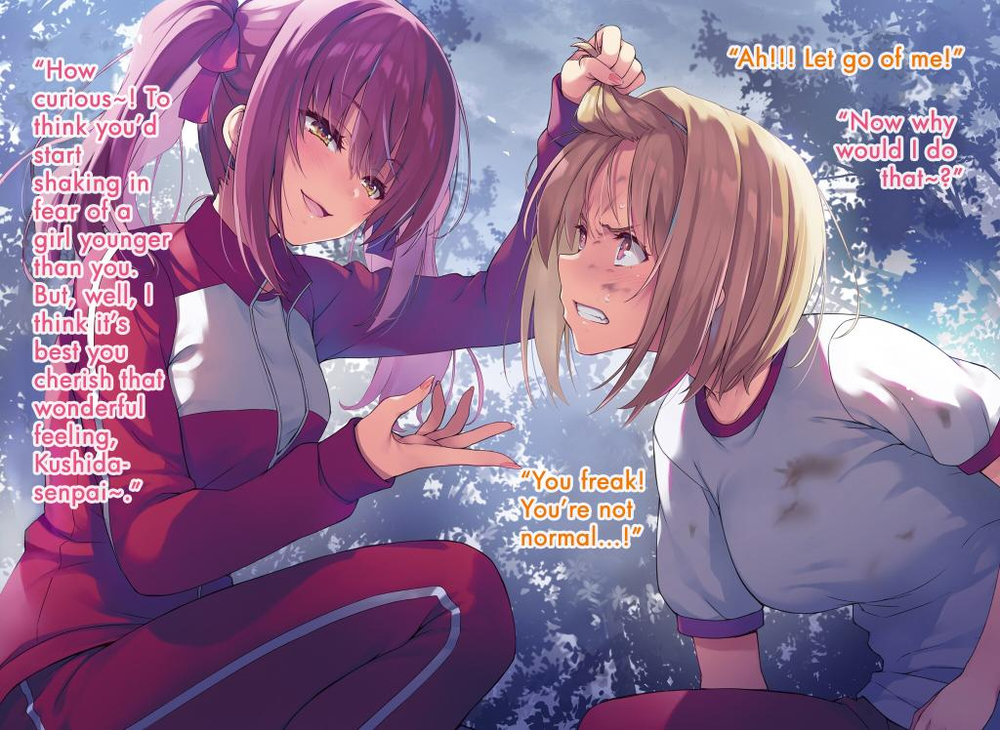
Amasawa habló muy bien de mí de una forma extraña, casi insultante. Continuó, evidentemente desinteresada en escuchar lo que yo tenía que decir en respuesta a esto.
—Te crees más linda que nadie, más inteligente que nadie, mejor que nadie... En resumen, estás perdidamente enamorada de ti misma, ¿no es así Kushida-senpai? Se te hace la boca agua con la idea de imponer tu dominio, siempre ansiosa por apoderarte de los secretos de los demás. Sin embargo, odias la idea de perder ese control que anhelas, siempre incapaz de perdonar a los que conocen tus secretos. Personalmente, no me molesta esta personalidad estropeada tuya.
Me aguanté las ganas de replicar y en su lugar miré para procesar la situación.
Es evidente que esta chica... esta zorra ya sabía todo lo que había que saber sobre mí. Por el momento, tenía que dejar de lado preguntas como "cómo" y
" por qué". Con eso en mente, calmé mi corazón acelerado y me puse de pie.
—Antes... ¿Qué intentabas decir exactamente?
Ordené el resto de mis pensamientos, recuperando por fin la compostura.
Cuanto más dejara que mis emociones se apoderaran de mí, más me dejaría llevar por su ritmo.
—¿Sabes? Es realmente sorprendente que hayas llegado hasta aquí sin ayuda. Claro que tienes tu tableta y alguien que te asiste, pero eso no cambia el hecho de que hayas caminado hasta aquí con tus propias piernas. También te debe haber costado mucho mentir a tus compañeros de grupo. Después de todo, separarse de tu grupo conlleva bastante riesgo, ¿no es así? Cada vez tocas más la línea de la expulsión reduciendo los puntos que ganas─"
Una vez más, Amasawa me dejó sin palabras y continuó mirándome desde lo alto.
—Sin embargo, la linda Kushida-senpai no pasaría por alto algo tan sencillo, ¿verdad? Aunque tus acciones pusieran en peligro la posición de tu grupo y te hundieras en el fondo de la clasificación, supongo que al menos
habrás ahorrado los puntos privados necesarios para asegurar tu supervivencia,
¿no?
No hace falta decir que su suposición dio en el blanco.
Sólo actuaba de forma tan imprudente porque había conseguido los dos millones de puntos necesarios para estar fuera de peligro. 1,3 millones, los cuales salieron de mi bolsillo, y el resto me lo proporcionó "ese tipo".
—Nunca perderé... Pase lo que pase, nunca me rendiré hasta el final...
—Bueno, entonces~, ¿cómo piensas hacer eso~? Me parece que ahora mismo eres masilla en mis manos, Senpai.
Lo que Amasawa decía era cierto, pero...
—¿Y qué? ¿Seguro que has sido capaz de meterte conmigo, pero exactamente cuándo perdí?
Las llamas de la determinación que ardían en mi interior nunca se extinguirían por algo tan trivial. En lugar de sentirme agitada, poco a poco fui recuperando el control de mis emociones.
No había necesidad de entrar en pánico. Esto sólo significaba que tendría que deshacerme de Amasawa también. Me desharía de todos y cada uno de los que se interpusieran en mi camino. Pero, eso no era lo único.
—¿Oh...? Esto es mucho más de lo que imaginaba. Seguro que eres una perra desagradable, Kushida-senpai, pero todavía hay una cosa que admiro de ti.
Tu fuerza, la fuerza en un sentido mental, es bastante digna de elogio. Más que miedo, parece que rebosas de odio. Y no está dirigido sólo a mí, sino a cualquiera que descubra la verdad sobre tu pasado.
Sin siquiera quitarme la suciedad y el barro del jersey, volví a ponerme en pie, como lo haría sin importar las veces que hiciera falta. Si tuviera que hacerlo, incluso derribaría a Amasawa aquí y ahora.
—No te molestes. No tendrías ninguna oportunidad contra mí, aunque tuviera las manos atadas. Hasta luego~, Kushida-senpai~.
Habló como si supiera exactamente lo que estaba planeando y me dio la
espalda, brindándome una oportunidad perfecta para lanzarme sobre ella. No se
me pasó por la cabeza nada más que la tentadora idea de empujarla e inmovilizarla contra el suelo.
Sin embargo, ella había predicho que lo haría, ya que esquivó mi golpe sin esfuerzo y justo a tiempo. Ni siquiera un segundo después, mis piernas fueron levantadas y me encontré cayendo de nuevo. Esto había sucedido tantas veces que había perdido la cuenta.
—¡Mierda...! ¡Mierda!
—No nos llevamos muy bien, ¿verdad Senpai? Sé que tratas los secretos de los demás como si fueran armas para conseguir lo que quieres, pero yo no tengo ninguno que puedas usar contra mí. Aunque intentes amenazarme con violencia, soy más fuerte que la mayoría de los chicos. Además, no soy amiga de nadie, así que tomar un rehén tampoco funcionará. Si tuviera que pensar en algo, supongo que Ayanokouji-senpai podría considerarse algo así como una debilidad, pero... para alguien como tú, vencerlo será tan difícil como vencerme a mí. ¿Estamos en la misma página?
Parloteó una y otra vez con el mismo tipo de tono despreocupado y condescendiente que usaría un profesor de mierda.
—Bueno, ¿qué tal si te rindes ahora? Todavía tengo que ir a ver a Ayanokouji-senpai.
—...¿Qué vas a hacer? ¿Decirle que lo he estado espiando?
—No, no, ya te dije que no tiene sentido hacer eso, tonta. Él ya lo sabe.
Pero, quién sabe, quizá las cosas se desarrollen exactamente como tú quieres, Kushida-senpai. Tal vez esta pequeña riña con Nanase-chan termine con la expulsión de Ayanokouji-senpai de la escuela. Suena como tu sueño hecho realidad.
—...Después de que Ayanokouji salga de aquí, será tu turno... te aplastaré con seguridad.
—Aww, Kushida-senpai~. Eso es muy lindo, pero el resultado de nuestro
combate ya estaba decidido antes de empezar. Entiendo que hacer expulsar a
los que conocen tu secreto es tu única forma de protegerte, pero eso realmente
sólo funciona con caballeros como Ayanokouji-senpai que no van por ahí contando la verdad a todo el mundo. Si fuera yo, haría todo lo que estuviera en mi mano para que tu secreto saliera a la luz antes de salir de la escuela, lo sabes ¿verdad?
—¡Ja...! No me hagas reír. Es cierto que una mocosa de mierda como tú seguramente andaría corriendo por ahí hablando, pero no es que alguien te vaya a creer. La mayoría lo pasaría como una tontería de alguien que está a punto de ser expulsado.
—Bueno, ¿segura? Dudo que muchos crean todo lo que digo. Sin embargo, igual conseguiría abrir una grieta en la persona superficialmente impecable de
'Kushida Kikyou' que te has creado. ¿No es eso más que suficiente?
Habiendo dicho todo lo que consideró necesario, Amasawa desapareció en el bosque, dirigiéndose hacia donde estaban Ayanokouji y Nanase. No sería imposible que la persiguiera, pero si lo hacía... no había duda de que respondería sin piedad.
Quizá optaría por difundir los secretos que guardo sin la menor duda. Y eso significaría mi completa y total derrota. Me senté en el bosque sola, paralizada, mirando al cielo. Las gotas de lluvia empezaron a caer débilmente a través de los huecos del denso follaje.
Se posaron en mis mejillas y comenzaron a caer por mi nuca.
—Yo... ¿Qué estoy haciendo...?
Me dije a mí misma estas palabras sin espíritu. Todo se sentía hueco. Tanto que ni siquiera podía encontrar en mí el sentimiento de enfado.
Primero Ayanokouji y ahora Amasawa... la gente que amenazaba con perturbar mi tranquila y pacífica vida seguía apareciendo una tras otra.
No... No eran sólo esos dos.
No eran las únicas razones por las que me había visto obligada a arrastrarme
con las rodillas en el barro hoy aquí. Empecé a recordar dónde empezó todo
esto... La razón por la que acabó así.
PARTE 4
Al quinto día de mi estancia en la isla deshabitada, me encontré con un solitario estudiante de primer año. El simple hecho de encontrarse con otro estudiante no era algo particularmente inusual. Si a uno se le deja viajar a su antojo por una isla tan vasta y espaciosa, es natural que acabe cruzándose con alguien, ya sea un compañero de clase o no. Pero esos casos eran, en su mayoría, meras coincidencias. Sin embargo, en lo que respecta a este encuentro concreto, las
cosas eran un poco diferentes.
Se habían puesto en contacto conmigo a través de un walkie-talkie que se me había confiado en secreto, y habían acordado deliberadamente reunirse con este estudiante con antelación.
Al fin y al cabo, dadas las circunstancias, no tenía más remedio que reunirme en persona. Cuando por fin nos vimos, me recibió con una cara sonriente, una sonrisa a la que respondí con la mía mientras me acercaba. Y entonces, tras confirmar que no había nadie más en los alrededores, rompí el hielo.
—Recibí tu informe por el walkie-talkie esta mañana. Me vas a explicar lo que pasó, ¿verdad?
Tras una breve pausa sin respuesta, decidí añadir también el nombre del estudiante de primer año.
—Yagami-kun.
El líder de facto de la clase 1-B: Yagami Takuya.
—Muchas gracias por venir hasta aquí con tan poca antelación.
—Puedes dejar las formalidades. Te pido que te expliques.
En respuesta a mi apremio, Yagami desvió la mirada, como si estuviera preocupado por algo. Poco después, se volteó y me miró de nuevo a los ojos.
—Las cosas tienen su forma de dar un giro inesperado de vez en cuando, Kushida-senpai.
La forma en que hablaba como si esto fuera un problema de otra persona me enfureció por completo. No parecía que esto fuera a llegar a ninguna parte si seguía escondiéndome detrás de mi máscara.
—¿Qué quieres decir con 'inesperado'? Es tu culpa que esos estudiantes de primer año hayan descubierto mi pasado, ¿verdad?
Cuando Yagami se puso en contacto conmigo esta mañana, me dijo que un grupo de estudiantes de primer año, Takahashi Osamu de la clase 1-A, Tsubaki
Sakurako y Utomiya Riku de la clase 1-C, y Housen Kazuomi de la clase 1-D, lo
presionaron para que confesara sobre mí. Supuestamente, los cuatro
sospechaban de nuestra relación desde hacía bastante tiempo y, al parecer, a Yagami le había resultado imposible hablar de ello. No se trataba de un problema que se pudiera esconder bajo la alfombra con el tipo de respuesta a medias que me estaba dando.
—Por favor, permíteme disculparme por eso.
—¿En serio? Aunque te disculpes, no va a cambiar nada.
Ahora había cuatro personas más que conocían mi secreto. En este punto, ya no había nada que pudiera hacer yo sola.
—Tsubaki-san y los demás estaban más informados de lo que había previsto. Fue una sorpresa para mí también.
—¿Una sorpresa? Qué estupidez.
—Por favor, cálmate Kushida-senpai. Tsubaki-san y los otros de primer año no son lo importante ahora.
—¿Qué?
—Su objetivo es puramente conseguir que Ayanokouji-senpai sea expulsado de la escuela. No creo que les interese mucho cómo es tu pasado, Kushida-senpai.
No importa si les interesa o no. Simplemente no podía soportar la idea de vivir en el mismo espacio general que alguien que tenía en sus manos información sensible mía. ¿Por qué nadie más podía entender eso?
—Además, esos cuatro son todos estudiantes de primer año. Básicamente no tienen nada que ver con alguien de segundo año como tú, Kushida-senpai.
—¡Ja! No me hagas reír... Sabes que ahora mismo estamos en medio de un combate en una maldita isla, ¿verdad? Cuando llegue el momento en que tenga que ir en contra de ellos, ¡tendrán algo que señalar sobre mí!
Inevitablemente, esto acabaría poniéndome en desventaja. Si me chantajeaban
con la amenaza de revelar todo, no importaría en qué año escolar estuvieran; no
tendría más remedio que cumplir con todas sus exigencias.
—Sí, supongo que eso es cierto. Viéndolo desde la perspectiva de Senpai, debe ser muy importante.
Yagami concedió, admitiendo que entendía mi punto de vista.
—No obstante, será casi imposible expulsar a esos cuatro ahora mismo.
¿O me equivoco?
—¿Me estás despreciando? Será mejor que no te dejes llevar demasiado.
—...Lo siento. Sin embargo, todavía siento que tomé la mejor decisión en ese momento.
¿Cómo fue exactamente la "mejor elección" ceder mis secretos sin mi permiso?
Apenas conseguí reprimir las ganas de darle un puñetazo en la nariz mientras continuaba.
—¿Recuerdas lo que te dije en el crucero? ¿Sobre cómo estaba ideando una estrategia para expulsar a Ayanokouji-senpai?
Por supuesto que lo recordaba. Yagami había ideado un plan secreto para obligar a Ayanokouji a abandonar la escuela, uno que iba a poner en práctica una vez que estuviéramos realmente en la isla. Sin embargo, sólo me había entregado un walkie-talkie en ese momento, dejándome en la oscuridad sobre los detalles exactos de lo que estaba tramando.
—Por ti, Kushida-senpai, añadiré algunas cosas a mi estrategia.
—¿Añadir?
—Una vez que nos hayamos ocupado de Ayanokouji-senpai, me aseguraré de que esos cuatro... individuos indeseables sean conducidos también a la salida. Eso debería solucionar el problema, ¿no?
Yagami habló sin ni siquiera un rastro de culpabilidad en su voz.
—Por ahora, pensemos en adelantarnos al resto. Tal y como están las cosas, aunque la expulsión de Ayanokouji-senpai pase inadvertida, la mayor
parte del mérito será para Tsubaki-san y el resto de la clase 1-C. Tú y yo no
recibiremos una parte muy grande de los 20 millones.
—No me importan los puntos.
—Lo entiendo, pero tener una enorme suma de puntos a tu disposición es una mejor red de seguridad a la que recurrir.
Todo este tiempo, había estado aceptando a regañadientes todas las ideas de Yagami. Aunque no quisiera, no tenía otra opción dada la situación en la que me encontraba. Sin embargo, estaba al límite. No podía permitirme seguir sentada en este barco que se hundía.
—He terminado contigo. Ya está bastante claro que decidí seguir a la persona equivocada.
No había venido hasta aquí hoy sólo para que Yagami me diera órdenes de esta manera. Más bien, vine a trazar la línea y distanciarme de él.
—Todavía puedes salir de esto.
—Ya es demasiado tarde.
—No, no es demasiado tarde para nada. De hecho, yo diría que esta es tu oportunidad.
—¿Qué...?
—Actualmente, Ayanokouji-senpai tiene las manos llenas con Nanase-san aferrándose a él.
—¿Nanase? ¿No es esa chica de la clase 1-D? No me digas que ella también─
—Por favor, no te preocupes. Puedes estar segura de que Nanase-san no sabe nada de tu pasado, Senpai.
—Sabes que ya no puedo confiar en nada de lo que dices, ¿verdad?
—Realmente me disculpo por haber traicionado tu confianza. Pero, por favor, al menos escúchame.
A pesar de que llevaba un rato dejando dolorosamente claro lo irritada que
estaba, Yagami simplemente se negaba a dejar de hablar.
—Ya te dije anteriormente que está trabajando con Housen-kun para tratar de expulsar a Ayanokouji-senpai, ¿verdad? Bueno, tengo una idea general de cuál es su estrategia esta vez también.
—...¿Y? ¿Qué es? Habla.
—Teniendo en cuenta que Housen-kun es quien la ideó, estoy bastante seguro de que girará en torno a la violencia.
—¿Violencia? Eso sería problemático, pero supongo que el director interino dijo que la escuela estaría pendiente de cualquier disputa menor que surgiera entre los estudiantes. Sin embargo, no puedo imaginar que eso sea suficiente para justificar la expulsión.
—Si no es más que una ligera refriega, entonces sí, eso podría ser cierto.
Pero, ¿y si es violento hasta el punto de convertirse en un espantoso baño de sangre? ¿Qué pasa entonces?
—Housen sin duda parece lo suficientemente brutal como para hacer algo así, pero él será el único expulsado si de forma unilateral Ayanokouji recibe una paliza, ¿verdad?
Aunque Ayanokouji sería descalificado del examen debido a sus lesiones, me resultaba difícil creer que, además, fuera expulsado.
—No creo que Housen-kun sea el que se enfrente a Ayanokouji-senpai esta vez. Como has dicho, Housen-kun ya tiene un poco de reputación, así que si se produjera una pelea, se llevaría la peor parte de las sospechas de la escuela.
—Si dices eso, entonces...
—Sí. La que se enfrentará a Ayanokouji-senpai será en cambio Nanase-
san. Aunque ella levante la mano contra él, no puedo imaginar que él contraataque de inmediato. Sin embargo, si ella realmente pone todo su empeño, él inevitablemente tendrá que hacer algo para mantenerla a raya. ¿Quizás termine golpeándola? ¿O tal vez se ponga encima de ella y la inmovilice? En
cualquier caso, el espectáculo sería sin duda bastante desagradable.
De hecho, si esos dos se enfrentaran... bueno, no hace falta decir que sería un gran problema.
—Entonces... ¿estás diciendo que su plan es hacer que Nanase cuente en la escuela que Ayanokouji la golpeó...?
—Precisamente, y por eso tenemos que vigilarla. Una vez que ella entre en acción, atacaremos mientras el hierro está caliente.
—Digamos que tienes razón en todo esto, no es como si pudiéramos hacer algo si no sabemos cuándo ocurrirá la pelea, ¿verdad? No es como si pudiéramos merodear alrededor de ellos las 24 horas del día.
—Ya tengo eso cubierto. Cierto alguien me dijo qué día tendrá lugar.
—¿Cierto alguien...?
—Aunque no puedo revelar su identidad, definitivamente es de confianza.
De todos modos, Nanase-san hará su movimiento el séptimo día del examen.
Aunque el marco temporal exacto aún no está claro, lo más probable es que una vez que hayan llegado a un lugar lo suficientemente remoto...
En ese momento, las cosas empezarían a ponerse feas.
—Entonces, ¿cuál es exactamente tu plan? ¿Tu plan para adelantarte a los otros de primer año?
—Nuestras tabletas vienen con la capacidad de grabar videos, ¿verdad? Si usamos eso para grabar su pelea, será posible para nosotros tener en nuestras manos evidencia de video incriminatoria.
Si entregamos las pruebas de video de su pelea a la escuela, la expulsión estaría en juego.
—Pero, un solo video podría no ser suficiente para garantizar su expulsión.
—Al menos sería suficiente para usarlo como amenaza. Incluso es posible que decida irse por su cuenta.
Comprendí la esencia de lo que Yagami intentaba decirme.
Si realmente se desarrollaba como él decía, la toma de una grabación nos daría la ventaja.
—Me gustaría confiarte el trabajo de grabar el vídeo, Kushida-senpai.
—¿Eh? ¿Por qué tengo que ser yo...? ¿No puedes hacerlo tú?
—Comparado conmigo, no parecerá extraño si eres tú quien se acerca a él.
—Eso es lo que tú crees. Ayanokouji ya es súper receloso conmigo.
—Soy un hombre. A cierto nivel, se esperaría de mí que diera un paso al frente e interviniera si se produjera una pelea delante de mí, lo que haría demasiado sospechoso que me quedara ahí parado y grabara un vídeo. Sin embargo, tendrías la excusa de ser simplemente una chica delicada y aterrorizada que, a pesar de no ser lo suficientemente valiente como para intervenir directamente, al menos logró encender su tableta y grabar lo que estaba sucediendo. Podrías representar la rectitud, negándote a acobardarte ante la injusticia, aunque el autor fuera un compañero de clase.
—Aunque la rectitud está muy bien y todo eso, puede que acabe siendo despreciada por mis compañeros por vender a uno de los míos.
—En ese caso, puedes darme el vídeo a mí. Diré que lo obtuve de una fuente anónima y lo dejaré así.
Yagami estaba haciendo todo lo posible por persuadirme, pero en lo que a mí respecta, me parecía perfectamente bien dejar que Nanase o quien fuera se deshiciera de Ayanokouji por mí. Dicho esto, también valdría la pena que me esforzara si eso significaba aumentar las probabilidades de éxito, aunque solo fuera en un 1%.
—Es que no quiero seguir en un barco que se hunde.
—Naturalmente.
—... Entonces, ¿cuál es tu papel en todo esto? ¿Vas a echarme esto
encima y a lavarte las manos?
—Por supuesto que no. El día de la operación, te proporcionaré apoyo a través del walkie-talkie. Una vez que la función de "Búsqueda GPS" esté disponible mañana, podré transmitirte la ubicación de Ayanokouji-senpai en cualquier momento. De esta manera, podrás mantener una distancia segura mientras los sigues. Además...
—Además?
—Existe la posibilidad de que Tsubaki-san esté conspirando algo también.
Puede que intente hacer algo al mismo tiempo que nosotros, así que voy a husmear para tratar de averiguar lo que están tramando.
—¿Qué hay de ese tipo Utomiya con el que estás en un grupo?
—No es más que un peón de Tsubaki. No hay que preocuparse de que esté tramando algo.
Era importante, si no necesario, tomar cualquier cosa que dijera Yagami como dudoso. Pero en este momento, realmente no tenía mucho que decir en el asunto.
—Lo harás por mí, ¿verdad Kushida-senpai?
—...No es que tenga otra opción.
Ya no había salida para mí.
Para proteger mi posición en esta escuela... Mi estatus...
No podía permitirme más errores.
EPÍLOGO
LAS SEMILLAS DEL MALESTAR
—Qué molestia...
Eran poco más de las 7:00 de la mañana del séptimo día del examen, una hora en la que la mayoría de los grupos ya se estarían dirigiendo a su primera área designada. Ichinose Honami, sin embargo, se limitó a soltar un profundo suspiro mientras miraba el reloj que llevaba en su muñeca derecha. Unas nubes grises y oscuras se alineaban en el cielo encapotado, amenazando con dejar caer la lluvia de un momento a otro.
—Ichinose, ¿está realmente roto? —preguntó Shibata Sou, un compañero de grupo, mientras miraba su reloj.
—Sí, eso parece. Creo que ocurrió esta mañana cuando me caí junto al río y me golpeé con una roca.
Ya había intentado todo lo que se le ocurrió para arreglarlo una vez que se dio cuenta de que no funcionaba bien. Pero, a pesar de sus esfuerzos, no consiguió que el GPS y el pulsómetro funcionaran. Tampoco aparecía nada en el mapa cuando intentaba confirmar su posición actual en su tableta.
Con un reloj estropeado, no podría ganar puntos de ninguna área o tarea designada. Nada bueno saldría de dejarlo así.
—Supongo que debemos agradecer que no estamos en el otro lado de la isla, ¿eh?
—Sí, eso es seguro.
Ichinose y sus compañeros de grupo se encontraban actualmente en el suroeste del área E6. Aunque el camino de vuelta al área de partida sólo les llevaría unas dos horas, sería bastante peligroso para ella hacer el viaje sola con un GPS
estropeado.
—Por el momento, no tenemos más remedio que volver.
Shibata sonaba un poco molesto, pero por el tono de su voz era obvio que no estaba echando la culpa a Ichinose.
—Pero─
Su primera área designada del día era el área D5. En otras palabras, tendrían que moverse en dirección prácticamente opuesta al área de salida.
Así que no sólo tendría que perderse la valiosa bonificación de llegada, sino que todo el grupo perdería la oportunidad de ganar cualquier bonificación de Madrugador. Aunque Ichinose comprendió lo que tenía que hacer, miró a las tres personas, Kamuro, Hashimoto y Ninomiya, que estaban esperando para partir detrás de ella.
—Bueno, ya que está averiado supongo que no se puede evitar, ¿verdad Masumi-chan?
—Si te vas ahora, puede que llegues a tiempo para la tercera área.
Mientras Hashimoto y Kamuro se sumaban, Ninomiya, una compañera de clase, también asentía conforme. Por lo visto, ninguno de ellos le echaba en cara esto.
Ichinose se sintió feliz por ello, pero al mismo tiempo un sentimiento de culpa comenzó a brotar en su interior.
Dos días antes, en el quinto día del examen, el grupo de Ichinose obtuvo el primer puesto en una Tarea que permitía a los grupos aumentar su tamaño máximo, ganándose el derecho a aceptar a tres personas más. Y el sexto día, utilizaron la función de búsqueda por GPS para fusionarse con el grupo de Hashimoto, sólo para que surgieran problemas a la mañana siguiente.
—Lo siento, chicos. Volveré a tiempo para la tercera designación.
Ahora que se decidió un curso de acción, cada segundo importaba. Tendría que moverse rápidamente para poder volver con sus amigos lo antes posible.
—Bueno, supongo que me quedaré con Ichinose.
Después que Shibata se nominara, Ichinose se abrochó el cinturón de su
mochila y juntos, los dos partieron hacia el sur.
—Lo siento Shibata-kun, por la necesidad de acompañarme así.
—No hay nada que pudieras haber hecho al respecto, así que no te preocupes por las disculpas.
—Sí, es justo, supongo.
Sin más, Ichinose y Shibata pasaron la siguiente hora más o menos caminando hacia el sur a lo largo del río hasta llegar al área E9. Para cuando pisaron la playa de arena, el área de salida estaba cerca.
—Vamos mucho más rápido de lo que esperaba. Buen trabajo.
Todo lo que tenían que hacer ahora era avanzar hacia el oeste y finalmente aparecerían cerca del puerto. Aunque se movieran lentamente, este tramo final del viaje sólo les llevaría menos de media hora. Sin embargo, eso significaba que el viaje de ida y vuelta les llevaría alrededor de una hora, así que el tiempo seguía siendo esencial.
—Shibata-kun, ¿por qué no te diriges a la siguiente área designada desde aquí?
—De ninguna manera. Aunque esté cerca, ¿no es peligroso que vuelvas sola? El bosque es como un laberinto, ya lo sabes. Y sí, todavía es de día y todo eso, pero hoy está muy nublado, así que la lluvia...
Shibata miró al cielo mientras se quedaba callado. Eran las 8:00 de la mañana y, aunque todavía no llovía, no se sabía cuándo iba a empeorar el clima.
—Sí, sé que es peligroso, pero debería poder volver al puerto desde aquí sin perderme. Si queremos alcanzar a los grupos punteros, no podemos permitirnos perder ni un solo punto. Además, si empieza a llover, puede que no podamos reunirnos con los demás.
Aunque era algo codicioso, Ichinose estaba convencida de que debían ir en busca de todos los puntos posibles.
—Sólo necesito caminar en línea recta. Estaré bien.
Como mínimo, quería que Shibata volviera al escenario rápidamente para que pudiera ganar puntos para el grupo. Como la que retiene a todos, simplemente quería minimizar la carga.
—...De acuerdo, pero por favor no hagas ninguna tontería. Si empieza a llover, no intentes esforzarte, sólo espera a que pare, ¿sí?
—Sí, definitivamente no me excederé. Al fin y al cabo, no será nada divertido si me lesiono y me obligan a retirarme por ello.
Tras prometer que tendría cuidado, Ichinose hizo un gesto con la mano, instando a Shibata a reunirse con Hashimoto y los demás. Y entonces, con las indicaciones generales que Shibata le dio aún frescas en su mente, puso el pie en el bosque. Aunque no pudiera llegar a tiempo a la siguiente área designada, su determinación de volver a tiempo para la tercera la impulsó a seguir avanzando.
Sus pies se movían aún más rápido que su acelerada mente, deseosa de no perder tiempo. Como no había visto a nadie desde que se separó de Shibata, era evidente que no había nadie más en el área. En un principio, pensó que podría pedir ayuda a otro grupo en caso de necesidad, pero a medida que pasaba el tiempo, se dio cuenta de lo ingenua que había sido esa línea de pensamiento.
Después de avanzar a duras penas durante unos diez minutos, la ya escasa visibilidad del bosque poco iluminado empezó a deteriorarse gradualmente. La causa era obvia: las nubes grises que cubrían el cielo se habían vuelto todavía más gruesas y oscuras que antes.
Aunque Ichinose tenía toda la intención de caminar en línea recta, la densa espesura de árboles que se interponía en su camino tenía otros planes. El camino, si es que puede llamarse así, era traicionero. En el momento en que sorteaba un árbol, otros dos estaban al acecho. A medida que pasaba el tiempo, empezó a perder la confianza en que estaba caminando en línea recta.
—¿Por qué parece que todo va terriblemente mal?
Una risa silenciosa de desprecio hacia sí misma se deslizó por sus labios. No tuvo más remedio que seguir avanzando. Después de todo, el puerto debería estar teóricamente a sólo un par de cientos de metros.
Siguió caminando durante unos veinte minutos más antes de detenerse, sin saber qué hacer. Si no se hubiera equivocado de camino, ya habría llegado al puerto.
—¿Qué... qué estoy haciendo...?
Intentó comprobar su tableta de nuevo, pero al igual que antes, su ubicación actual no aparecía en el mapa. Aunque intentara volver por donde vino, no había ninguna garantía de que pudiera hacerlo. Ichinose no solía ser de las que toman decisiones precipitadas como ésta, pero desde que su clase descendió a la clase C, se encontraba cada vez más impaciente.
Pero a pesar de esta impaciencia, consiguió formar un grupo formidable a petición de la líder de la clase A, Sakayanagi. Por lo tanto, para mantener la paridad con la Clase A, necesitaba ahora más que nunca demostrar su competencia. No tenía ni idea de dónde estaba ni a dónde iba, pero tenía la obligación de seguir adelante.
¿Hacia dónde debe ir? ¿En qué dirección? Para disipar las ansiosas preguntas que pasaban por su mente, Ichinose se armó de valor y dio un paso al frente. En ese momento, un ruido, muy débil, llegó desde algún lugar más adelante.
Debatió momentáneamente si gritar o no, entusiasmada por la perspectiva de encontrarse con alguien más, pero no podía descartar la posibilidad de que hubiera sido algún tipo de animal salvaje.
Pensando en que podría simplemente acercarse y comprobarlo con sus propios ojos, Ichinose comenzó a moverse en silencio hacia la fuente del sonido. Al poco tiempo, las figuras de dos personas aparecieron: Tsukishiro, el director interino de la escuela, y Shiba, el profesor de la clase 1-D.
Al verlos, Ichinose dejó escapar un profundo y prolongado suspiro de alivio, ya
que ahora podía pedir indicaciones para llegar al puerto. Sin embargo...
Rápidamente se dio cuenta de que esa era la misma línea de pensamiento ingenua que la había metido en esta situación. Aunque se tratara de un accidente, eso no cambiaba el hecho de que se encontraba en medio de un examen especial. Por ello, no parecía muy probable que le dieran indicaciones si les decía que se había perdido.
Y aunque una cosa sería que su reloj se hubiera estropeado por algún problema técnico, dado que fue ella quien lo rompió, bueno... Si lo atribuían a su propia responsabilidad, esta preciosa oportunidad de salir del bosque se le escaparía de las manos. Por lo tanto, quería encontrar una manera de aferrarse a la oportunidad. Se le ocurrió una idea: que tal vez lo mejor sería seguirlos.
Lo ideal sería que volvieran al área de partida desde aquí, pero si terminaban dirigiéndose a un sitio de tareas próximo, otros estudiantes aparecerían tarde o temprano. En cualquier caso, siguiéndolos lograría evitar el peor de los escenarios. Después de pensarlo un poco más, decidió seguirlos desde atrás.
Como se veían inmersos en algún tipo de conversación mientras caminaban, pensó que sería relativamente difícil que la vieran. E incluso en el caso de que la descubrieran, no creía que fuera un gran problema siempre que fingiera ignorancia.
—Te pedí que confirmaras si estamos o no en condiciones de actuar libremente. ¿Qué te parece?
—Por lo visto, eso será difícil. Encontré pruebas que sugieren que los profesores nos están vigilando. Entre ellos, Mashima parece estar en alerta particularmente alta...
El sonido de sus voces viajaba claramente por el tranquilo bosque, permitiendo a Ichinose distinguir la mayor parte de lo que decían. Sin embargo, no estaba muy interesada en el contenido de su conversación, así que no escuchó con mucha atención, sino que prefirió concentrarse principalmente en permanecer oculta.
—Aparte de él, hay otro profesor importante: Chabashira, la profesora de la clase 2-D. Ha estado buscando en todos los registros y archivos.
—Es porque arrastrar a los profesores a esto era una de las pocas opciones viables que le quedaban. Ya sea Chabashira-sensei o Mashima-sensei, no hay duda en mi mente que sus acciones se vinculan a Ayanokouji-kun. Dado que Ayanokouji-kun estaba por casualidad en el lugar de los hechos entonces, es natural que se las arreglara para averiguar la verdad.
Sin embargo, todo cambió en el momento en que surgió cierto nombre inesperado.
Ichinose contuvo la respiración con un nuevo interés.
Ayanokouji.
Un nombre que inconscientemente hacía palpitar su corazón cada vez que lo escuchaba. Los dos hombres se detuvieron por completo antes de continuar, quizás debido a la repentina mención de este mismo nombre.
—Ya modifiqué nuestros registros, así que no creo que puedan rastrear nada.
—Gracias por eso. Sin embargo, todavía podrían poner sus manos en algo.
Si es así, no vamos a tener otra oportunidad. Tenemos que asegurarnos de acorralarlo esta vez.
—¿Sin embargo, será realmente tan sencillo forzar su expulsión? Es el ─
─ de la Habitación Blanca.
—La gente siempre está tan pendiente de los títulos. Sólo es un ───, eso es ────.
¿Habitación Blanca? A pesar de aguzar el oído para tratar de comprender lo que se decía, Ichinose no lograba descifrar algunas de las palabras. El viento había cobrado fuerza de repente, el sonido del vendaval ahogaba sus voces. El nombre de Ayanokouji junto con la palabra "expulsión" resonaban incesantemente en su mente. De entre todas las personas, ¿por qué estaban el director interino y un profesor de primer año hablando de algo así? Desesperada
por entender sólo un poco más de su conversación, Ichinose inconscientemente
comenzó a acortar la distancia, una distancia que por otra parte sabía que debía mantener.
—Si se mantiene ─ ─ ─ hasta el último día, vamos ─ ─ ─ a que desaparezca en I2 ─── planeado.
Ichinose se sintió bastante segura de que no podrían oírla, pero justo cuando se acercó lo suficiente como para distinguir lo esencial de lo que se decía... En ese mismo momento...
La cabeza del Director Interino se echó hacia atrás, mirando fijamente con una mirada aguda y penetrante.
" Peligro".
Su intuición, o tal vez sus instintos, gritaron esta palabra, obligándola a dar la espalda y salir corriendo tan rápido como sus piernas pudieran llevarla. Sin embargo, su mochila pesaba demasiado, lo que le impedía ganar velocidad.
Como una decisión rápida, desabrochó los cierres y la arrojó a la espesura con toda la fuerza que pudo reunir. Si la recogían, podrían averiguar su identidad mirando la tableta que había en su interior, pero Ichinose estaba demasiado desesperada para actuar con ese nivel de previsión. Aunque estaba bastante segura de que no habían visto su cara, no le cabía duda de que se habían dado cuenta de que alguien los estaba espiando. Sólo de eso estaba segura. Toda la conversación que acababan de tener... era algo que ella no debía escuchar.
Era una premonición que la helaba hasta los huesos mientras seguía corriendo.
Definitivamente, podría escapar de ellos sin problemas, ¿verdad? Y
seguramente no había forma de que ellos, de entre toda la gente, vinieran a perseguirla, ¿verdad? Sí, definitivamente todo iba a estar bien... ¿Cierto?
Definitivamente. Definitivamente. Definitivamente...
Desde atrás, se escuchó el sonido de ramas rompiéndose y hojas desmoronándose bajo los pies. Aunque Ichinose no confiaba tanto en sus capacidades físicas, estaba muy orgullosa de su velocidad. Izquierda, derecha,
recto, la dirección ya no importaba. Siguió corriendo, completamente perdida en
el bosque, perdiendo más el control con cada paso que daba aleatoriamente.
Había una sensación extraña, casi surrealista, al ser testigo de algo que no debería verse. Y fue esa misma sensación la que la impulsó a seguir adelante.
—¡¡¡…!!!
Los ojos de Ichinose habían estado pegados al camino mientras corría, sin escatimar ni una sola mirada hacia donde había puesto sus pies. Así que, en medio de su delirio, inevitablemente su pie se enganchó en algo, haciéndola caer al suelo del bosque. Cuando miró hacia atrás, vio al aparente culpable: una gran raíz de árbol que sobresalía del suelo.
Aunque sentía un dolor agudo y punzante en la rodilla debido a la caída, lo soportó, haciendo lo que pudo para intentar volver a ponerse en pie.
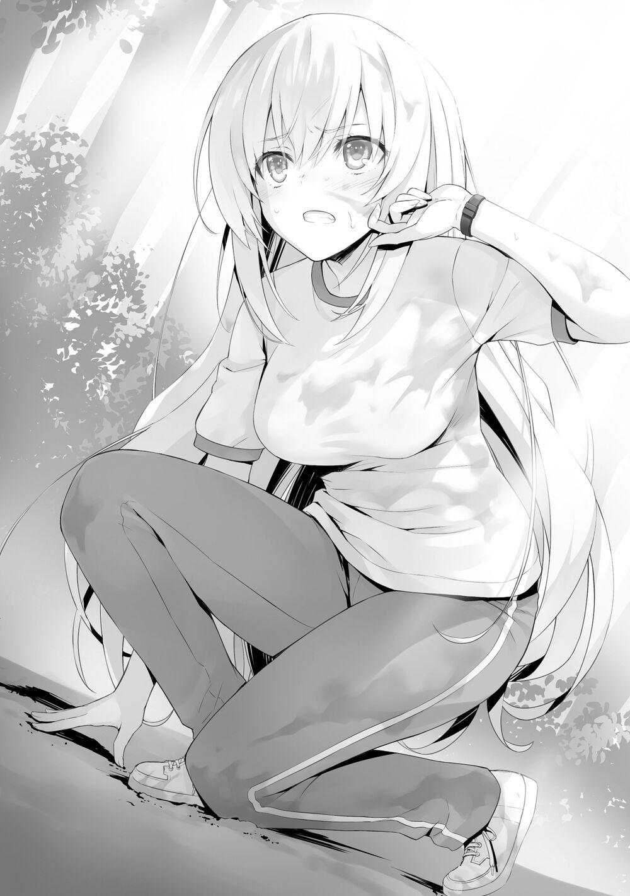
En el momento en que empezó a recuperar el peso de sus piernas, una gran mano la agarró por detrás en el hombro izquierdo. Ichinose se congeló inmediatamente en donde estaba, sorprendida hasta el punto de que su corazón casi se detuvo, y miró con miedo por encima de su hombro.
—...Si no me equivoco, eres Ichinose Honami de la clase 2-C, ¿correcto?
Intimidada por la fuerte mirada de Shiba, Ichinose se hundió de nuevo en el suelo.
—Ah- Uh- S-sí, eso es correcto...
Con su trasero en el suelo del bosque, trató desesperadamente de retroceder, pero simplemente no podía escapar de su perspicaz mirada. Él estaba de pie, imponiéndose sobre Ichinose, con los ojos llenos de una emoción indescifrable.
—¿Por qué estás aquí?
—U-uhm, bueno, mi reloj está roto, así que... iba a hacer que me lo revisaran...
—Ya veo. Así que por eso no hay señales de GPS cerca.
Tras una breve pausa, continuó.
—En realidad no importa lo que hayas oído. Aunque solo fueran un par de palabras, que te veas involucrada en esto, bueno... simplemente significa que tuviste mala suerte.
—¿Está... está diciendo que voy a ser penalizada por algo?
—No tiene nada que ver con las reglas o sanciones de la escuela.
Simplemente vamos a tener que deshacernos de ti. Inmediatamente.
Ante eso, Shiba lentamente comenzó a acercarse a Ichinose.
—Es un poco prematuro recurrir a métodos tan violentos, Shiba-sensei.
Tsukishiro, que apareció un poco después con la mochila de Ichinose en la
mano, habló para frenar a Shiba.
—Sí, perdóneme.
En ese momento, el director interino se giró y miró a Ichinose con una sonrisa siniestra en su rostro.
—Vamos a hacer esto formalmente. ¿Escuchaste algo, Ichinose-san?
—N-no, en absoluto. No escuché nada...
Por supuesto, eso era una mentira. Aunque sólo habían sido algunos fragmentos, Ichinose sí había escuchado su inquietante conversación. Pero no importaba lo que ella decidiera decir en respuesta, seguramente no iban a creerle.
—No soy tan ingenuo como para confiar en esas palabras tuyas. Como adultos, siempre tenemos que asumir lo peor y actuar en consecuencia, así que no tengo más remedio que proceder bajo la premisa de que lo has escuchado todo.
Tsukishiro se puso delante de Ichinose con una mirada evaluadora en sus ojos.
Y entonces, se agachó para igualar su mirada con la suya.
—Por muy accidental que haya sido, lo has escuchado todo. Información que nunca debería haber llegado a tus oídos, y sin embargo, aquí estamos.
Shiba se limitó a apartarse mientras observaba a su superior, temiendo por el rumbo que estaba tomando la situación.
—Si nuestra conversación de antes se filtrara al público, Shiba-sensei y yo estaríamos en un gran problema.
—Yo-yo realmente no escuché nada─
—Eso no es cierto. Estoy hablando ahora bajo la firme premisa de que lo hiciste, ¿recuerdas?
Cuando le dijeron esto, Ichinose sólo pudo tragar saliva.
—¿Deberíamos tal vez maltratarte un poco hasta que olvides el recuerdo, Ichinose-san? Tu retirada no tardaría en llegar.
Al ver que se encogía de miedo, Tsukishiro sonrió y se levantó.
—Lo digo en broma, por supuesto. Como encargado de proteger esta escuela, nunca diría algo así de verdad. A mí también me gustaría evitar una solución violenta si es posible. Por lo tanto, te ofreceré una propuesta. Si cuentas algo de esto, me encargaré personalmente de que un grupo compuesto enteramente por estudiantes de la clase 2-C se retire del examen.
—¡...!
—Naturalmente, este sería un grupo que no tiene los puntos privados que necesitarían para salvarse.
Esta era una forma un poco más amable de decir que serían objeto de
" expulsión a la fuerza".
—¿Acaso crees que me sería imposible hacer algo así? Como hombre que controla las reglas, fabricar una justificación sería trivial. No se sabe lo que puede pasar, especialmente aquí, en una isla desierta tan grande y sin supervisión.
Tsukishiro estrechó la mirada, observando a la aterrada Ichinose. Era su forma de preguntarle tácitamente si lo entendía.
—Director interino Tsukishiro, en lugar de mostrar tanta indulgencia, ¿no sería mejor ejercer su autoridad aquí? Si Ichinose desaparece, dudo que Chabashira y Mashima se den cuenta. Esos dos sólo son precavidos cuando se trata de asuntos relacionados con Ayanokouji.
—Tienes razón. Bien, entonces, ¿qué crees que debería hacerse en su lugar, Shiba-sensei?
Sin siquiera pensarlo dos veces, Shiba sacó un par de guantes de goma de su bolsillo.
—Si está dispuesto a dejármelo a mí, me encargaré de ella yo mismo.
Todas las esperanzas que Ichinose tenía de escapar se habían esfumado ya, dejándola sin otra opción que esperar su sentencia mientras los dos hombres
discutían cómo lidiar con ella. Por la mirada mortificada que tenía, estaba claro
que no podía ni imaginar lo que Shiba pretendía hacer una vez que se pusiera los guantes.
La visión hizo que Tsukishiro dejara entrever una tierna sonrisa.
—Bueno, prefiero no perder más tiempo en esto.
Diciendo eso, Tsukishiro dejó la mochila que sostenía frente a Ichinose antes de alejarse de nuevo.
—El puerto se encuentra a unos 150 metros delante de nosotros. Ponte en marcha, por favor.
—¡Si señor...!
Invadida por una sensación de pánico, Ichinose se puso apresuradamente la mochila, desesperada por alejarse lo antes posible.
—No es a tus enemigos a quienes debes proteger, sino a tus propios compañeros. Te vendría bien tenerlo en cuenta.
Ichinose asintió con la cabeza antes de salir rápidamente en la dirección que Tsukishiro indicó. Una vez que desapareció en el bosque, Shiba lanzó una mirada confusa hacia Tsukishiro.
—Está bien. Déjala en paz.
—¿Está seguro? Si ella menciona esto a Ayanokouji, interferirá con el plan.
Simplemente no podía deshacerse del pensamiento de que todavía había cabos sueltos que debían ser resueltos de alguna manera.
—Los contratiempos inesperados ocurren todo el tiempo. Siendo así, tendremos que adaptarnos.
Shiba aún se mostró visiblemente aprensivo al respecto, incapaz de percibir las verdaderas intenciones de Tsukishiro.
—¿De verdad estás tan preocupado? Pensé que le había dado una
advertencia bastante efectiva.
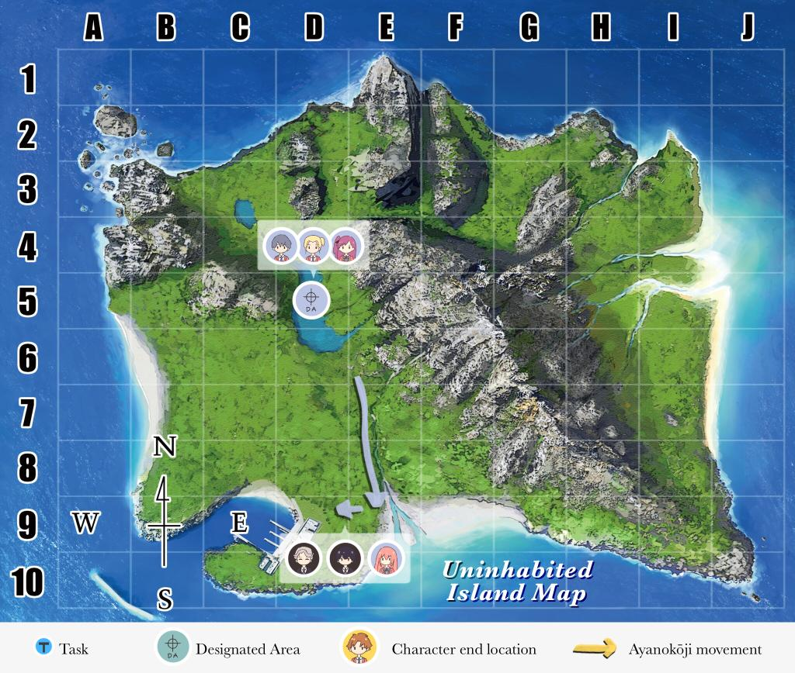
Si se retractara de su palabra, varios de sus compañeros serían expulsados.
Aunque sólo era una amenaza, para alguien como Ichinose que priorizaba a sus compañeros por encima de todo, habría parecido mucho más real.
—Independientemente de su relación con Ayanokouji-kun, la eliminación de un formidable enemigo como él sería genial para la clase C. Ella misma lo asumirá con el paso del tiempo, así que mantengamos la calma y veamos qué pasa, ¿de acuerdo?
Una gota de lluvia cayó sobre la mejilla de Tsukishiro.
—Estaba seguro al 99% de que Nanase-san iba a fracasar, pero al final resulta que tomó cartas en el asunto. Si todo va según el plan, la Alerta de Emergencia de Ayanokouji-kun debería saltar en cualquier momento.
Tsukishiro estaba perfectamente calmado mientras hablaba, sin el más mínimo rastro de incertidumbre en su voz. Una perspectiva que era posible gracias a su inquebrantable convicción.
PARTE 1
La lluvia torrencial comenzó a hacerse más fuerte.
Después de tomarse el tiempo para enfriar su cabeza y llegar a un acuerdo con sus propios sentimientos, Nanase habló con un tono pesado.
—Es mi derrota... Ayanokouji-senpai.
—¿Puedo entender que eso significa que finalmente estás convencida?
—Sí. Parece que, a pesar de mis mejores esfuerzos, realmente no es posible para mí vencerte Senpai.
Después de haber sido examinada hasta el núcleo, parecía resignada, como si todo el rencor y la malicia de antes se hubieran desvanecido. Hacerla retroceder sin ponerle un dedo encima fue, en cierto modo, un éxito.
—Si es posible, ¿qué tal si me explicas todo con detalle? ¿Por qué me atacaste? Si no aclaramos esto, habrá varios problemas después.
—Es justo. Tienes derecho a saberlo─ No, quiero que lo sepas, Senpai.
Se sentó mientras hablaba, tras perder las fuerzas para seguir de pie. Si bien sus movimientos no fueron los de una persona ordinaria, tampoco se parecía a una estudiante de la Habitación Blanca. Su fuerza era definitivamente digna de elogio. Tanto que no perdería contra un oponente como Horikita o Ibuki.
Sin embargo, comparada con alguien que proviene de la Habitación Blanca, era demasiado tosca. Además, sería extraño que la estudiante de la Habitación Blanca sacara a relucir el nombre de Matsuo, entre otras cosas. Así que, para averiguar la verdad, esperé pacientemente su respuesta.
—Yo... me inscribí en esta escuela porque quería vengar a mi amigo de la
infancia.
—¿Tu amigo de la infancia? Quieres decir─
—Sí. Matsuo Eiichiro.
Estaba casi seguro de que se refería al hijo del mayordomo que me había cuidado en el pasado.
—No me había dado cuenta de verdad antes de matricularme aquí, pero como esta escuela está completamente aislada del mundo exterior, no hay forma de que pudieras saber lo que pasó, ¿verdad?
Para darle crédito, Nanase no estaba exactamente equivocada por pensar esto.
Sin embargo, en este caso, resultaba que sabía al menos un poco de lo que le había ocurrido a la familia Matsuo. Después de todo, "ese hombre" lo mencionó cuando se presentó para llevarme de vuelta a la Habitación Blanca.
En ese momento, Nanase comenzó a contarme todo con calma. Cómo Eiichiro fue expulsado a la fuerza de la preparatoria en la que había trabajado tan duro para entrar debido a las implacables maquinaciones de mi padre.
Y que, fuera cual fuera la escuela a la que se presentara después, sufría exactamente el mismo destino, lo que le llevó a renunciar por completo a cursar estudios superiores. Cómo, al enterarse de esto, su padre se suicidó, quemándose por completo.
Y cómo, tras la muerte de su padre, se vio obligado a hacer lo que podía para llegar a fin de mes con un trabajo a tiempo parcial. A pesar de que "ese hombre"
ya me había contado todo esto, opté por callarme y escuchar.
—Desde el jardín de niños hasta el día en que se graduó de la secundaria, siempre estuve junto a Eiichiro-kun. Estaba un año por encima de mí y era mejor que yo en casi todo, desde los estudios hasta los juegos que jugábamos juntos...
Era mi inspiración, mi modelo a seguir. La voz calmada de Nanase empezó a hacerse gradualmente más pesada.
—Incluso después de que lo echaran de su casa, Eiichiro-kun dijo que no
se rendiría hasta el final, y fue entonces cuando empezó a trabajar. Aunque no
pudimos vernos tan a menudo, no pensé que la relación entre nosotros fuera a
cambiar.
Continuó sin pausa, hablando como si estuviera reviviendo el pasado.
—Aunque había renunciado a su educación... Aunque había perdido a su padre... Me dijo que no se rendiría... Que miraría hacia el futuro y se esforzaría al máximo... Incluso sonrió... Y sin embargo...
La voz de Nanase empezó a temblar, sus puños se cerraron.
— A principios de este año, la noche del 14 de febrero, hice una visita al apartamento de Eiichiro-kun. Él se esforzaba mucho, así que esperaba al menos hacerlo sentir un poco mejor, pero─
Incluso sin escuchar el final, pude saber exactamente a dónde quería llegar con esto: Que, a pesar de todo su esfuerzo, Matsuo Eiichiro optó finalmente por renunciar a su propia vida.
—"Si no puedes reunirte... ¡entonces nunca podrás decirle que lo amas de nuevo!" Tú misma lo dijiste.
Me acordé de lo que dijo cuando consolaba a Ike el segundo día del examen. En su caso, llegó demasiado tarde y se lamentó. Las palabras sinceras no tenían sentido si se le dicen a un cadáver.
—En aquel momento no sabía mucho de ti ni de tu padre. De hecho, acababa de enviar mi solicitud a otra preparatoria cuando... esa persona apareció ante mí.
—¿Te refieres a Tsukishiro?
—Sí. Por aquel entonces, el director interino Tsukishiro me dijo por qué la vida de Eiichiro-kun se había sumido en la confusión. Dijo que la causa fundamental de todo ello fue que alguien llamado Ayanokouji Kiyotaka se había escapado de un establecimiento llamado "La Habitación Blanca" matriculándose en una escuela llamada "Escuela Preparatoria de Educación Avanzada", y que había hecho los arreglos para que yo también me matriculara allí.
Y así, ella aceptó la oferta para buscar venganza por la muerte de su amigo de
la infancia.
—Si conseguía que te expulsaran, me prometió que me permitiría conocer a tu padre, Senpai. A decir verdad, iba a pedirle a tu padre que agachara la cabeza y se disculpara con Eiichiro-kun, pero...
Aunque de algún modo consiguiera expulsarme, era imposible que "ese hombre"
decidiera inclinar la cabeza. Sus palabras nunca habrían conseguido llegar a él.
De eso estaba seguro. A estas alturas era capaz de ver el panorama general, pero todavía había varias cosas que no entendía.
—Tsukishiro me dijo que envió a un estudiante de la Habitación Blanca.
¿Era sólo un farol?
—Uhm, ¿qué quieres decir con eso, Senpai? Para empezar, no sé mucho sobre eso de la 'Habitación Blanca'.
No me pareció que estuviera mintiendo cuando dijo esto, así que siendo ese el caso, sólo había dos posibles explicaciones que se me ocurrían. La primera era que el ejecutor que había enviado no era Nanase, sino alguien totalmente diferente, fuera o no de la Habitación Blanca.
Mientras que la otra era que el mismo "ejecutor" que había mencionado era realmente Nanase, y que sólo quería que yo pensara que era de la Habitación Blanca. Si era esto último, entonces ya no habría nadie más atacándome. Sin embargo, eso era bastante difícil de imaginar.
En comparación con la población en general, Nanase tenía un talento excepcional, pero sus habilidades se quedaban cortas para un ejecutor encargado de forzar mi expulsión. Incluso Tsukishiro debería haberse dado cuenta de que acabaría así.
—Sabía que tú no eras la culpable, Ayanokouji-senpai, pero... quería... no, necesitaba a alguien con quien desahogar... toda mi ira y frustración contenidas...
Al escuchar esto, todo tipo de cosas comenzaron a tener sentido. Su comportamiento desde que llegó aquí. A lo largo de todos sus intentos de expulsarme, también hubo varias ocasiones en las que intervino para ayudarme.
Un comportamiento contradictorio que surgió porque la misma Nanase no creía
que realmente estuviera haciendo lo correcto.
Y hoy, convencida de que tenía la última voluntad de Matsuo Eiichiro en el corazón, lo desató todo. Estábamos en lo alto de la montaña y la lluvia que caía había enfriado el suelo bajo nuestros pies, haciendo que una espesa niebla envolviera el área.
—Yo... no sé cómo puedo seguir mirándote a la cara, Senpai... Lo siento tanto, tanto...
Avergonzada de sí misma y de lo que había hecho, Nanase se cubrió la cara con las manos, incapaz de mirarme. Sin decir una palabra, esperé pacientemente hasta que se calmó.
—No hace falta que te disculpes. El enfado que sientes está perfectamente justificado.
Lo cierto es que "ese hombre" en realidad cometió un crimen tan grave sólo para traerme de vuelta. Un ser frío y calculador que ni siquiera ve a los demás como humanos. Pero, irónicamente, eso también era una proyección de mí mismo.
—He fallado en el cumplimiento de las órdenes del Director Interino. No tiene sentido que siga aquí.
—¿Vas a retirarte?
—Es lo menos que puedo hacer para expiar mis actos.
" Ese hombre" y yo siempre hemos sido similares. Mientras pudiéramos protegernos, nuestra propia existencia, no importaba lo que le pasara a los demás. Y ninguno de los dos creía en revelar casualmente nuestra verdadera naturaleza a los extraños.
Sin embargo, a pesar de nuestras similitudes, había una diferencia clave. Todo se reducía a si elegíamos o no descartar a los ignorantes que se interponían en nuestro camino. Es decir, si éramos capaces o no de tender la mano. Extender la mano a un ignorante era algo que "ese hombre" no haría jamás, y esa era la diferencia decisiva entre nosotros.
Lentamente extendí la mano a Nanase.
—¿Senpai...?
—Si realmente lo sientes, entonces por favor retira lo que acabas de decir.
—¿Qué... significa eso...?
—No tienes nada de qué avergonzarte. Simplemente intentaste vengar a tu amigo. Pero hay una razón por la que no puedo perder contra ti, porque creo que quedarme aquí en esta escuela es la única manera que tengo de ir contra
'ese hombre', mi padre.
Aunque todavía no estaba dispuesta a encontrar mi mirada de frente, levantó la cabeza lo suficiente para mirar mi palma extendida.
—Si puedo ser un poco egoísta, preferiría no oír hablar de tu partida de la escuela. En cambio, me gustaría que trabajaras conmigo. Seguramente, Tsukishiro está planeando utilizar este examen especial para expulsarme y ofrecerme como regalo a mi padre. Si eso ocurriera, todos los esfuerzos que hizo Matsuo Eiichiro para que yo entrara en esta escuela serían en vano.
—¿Estás diciendo que... debería haber hecho lo contrario todo este tiempo?
—¿Puedes ayudarme?
Su delicada y suave mano se apoderó de la mía.
—Es una promesa.
Aunque su mano estaba fría debido a la lluvia, todavía había un toque de calidez contenido en ella. Nanase, que llevaba un rato con la cabeza gacha, finalmente me miró a los ojos. Esto no tenía nada que ver con si ella sería capaz de ayudarme o no. Sólo necesitaba hacer un buen uso de ella para lo hiciera, incluso si terminaba usándola sólo una vez y tirándola a la basura.
—Vas a resfriarte si te quedas en la lluvia durante mucho tiempo, así que vamos a ponernos en marcha.
—...De acuerdo.
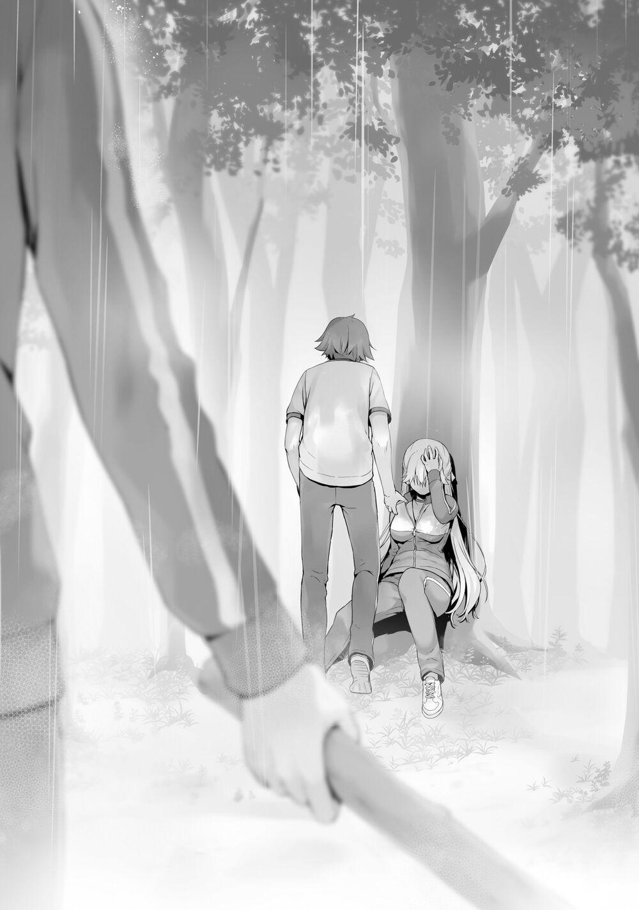
PALABRAS DEL AUTOR
Hola, hola a todos. Es Kinugasa, el mayor fan del mundo de Ume Chazuke, servido con té verde. (Sopa de arroz con ciruelas japonesas en escabeche)
Antes de nada, tengan en cuenta que es la primera vez que el examen especial se extiende durante más de un volumen. Quería escribir sobre los otros estudiantes repartidos por la isla, pero antes de darme cuenta ya había alcanzado el límite de páginas. Estoy empezando a sentir los límites de lo que puede permitir un solo volumen.
Cuando empecé a escribir, pensaba para mis adentros: "No pasa nada si me paso un par de páginas del límite, ¿no? ¿Cuál es el problema?". A pesar de ese optimismo, la mayoría de las veces me cuesta encajar todo. Por qué no pueden hacer una excepción con You-Zitsu y dejarme escribir más de 500 páginas por...
No, no, ya me callo. Eso probablemente acabaría por lesionarme en vano.
Seguramente estaría bien con un aumento de 50 páginas.
De acuerdo, de acuerdo. Perdón por el largo preámbulo, pero esta vez sólo he dedicado una página a los comentarios finales.
Sinceramente, creo que estaríamos perfectamente bien sin las palabras del autor. ¿De verdad hay alguien que se muere por leer esto? Me lo pregunto todo el tiempo, pero imagino que es muy molesto para el lector que la siguiente página después de terminar la historia sean las palabras del autor sin ninguna página en blanco para separarlas. (Dicho esto, simplemente no hay suficientes páginas, así que no se puede evitar).
Aunque el final de 2020 ya está a la vista, ¡seguiré trabajando duro para terminar el año! ¡Hasta la próxima!
HISTORIAS CORTAS
NANASE TSUBASA
LO QUE SE PUEDE VER DE ESA ESPALDA
Me tumbé boca abajo en la arena, adoptando la posición requerida y esperando en alerta. Es el enfrentamiento final para el evento de Banderas de Playa. Mi oponente es Tokunaga-senpai de 3er año. Su sincronización en los últimos 2
juegos fue impecable.
Creo que tengo la ventaja en cuanto a la potencia al momento de patear la arena, pero cualquier fallo de mi parte será letal. Lo que significa que mientras no falle y me detenga, ella es alguien a quien debo vencer.
El sonido de la pistola al ser disparada resonó en toda la playa. En el mismo instante en que el sonido llega a mis oídos, me pongo de pie mientras me doy la vuelta. Casi al mismo tiempo, siento que ella adopta una postura similar y me convenzo de mi victoria.
Tomando una pequeña ventaja desde el primer momento, me dirijo de lleno a la bandera. Ayanokouji-senpai también está observando esta batalla cerca.
Aunque mostrar demasiado mis habilidades en esta ocasión es algo que me perjudica, no puedo contenerme.
Fui con todo en comparación con las otras dos personas de mi grupo. Eso es porque siento que tengo que mostrarles todo mi poder en todo momento. Antes de darme cuenta, la bandera está justo delante de mí y estiro la mano para agarrarla.
—Fuu...
Sintiéndome aliviada por haber conseguido la victoria en esta última ronda,
inspiro y exhalo para calmarme.
—Qué aterradora es la de 1er año. Es mi derrota.
Tokunaga-senpai, que llegó después de mí, dijo mientras extendía su mano para un apretón de manos.
—Muchas gracias, Tokunaga-senpai.
—¿Sabes sobre mí?
—Busqué en la aplicación OAA a los alumnos de cursos superiores de los que debía cuidarme al preparar este examen especial.
Me las arreglé para ganar ya que sabía que era atlética y no bajé la guardia.
Acompañé a Tokunaga-senpai a lavarse la arena antes de recibir el agua mineral como recompensa por participar.
—Ha sido una victoria abrumadora.
Mientras me refresco con el agua fría, Ayanokouji-senpai me llama.
—Muchas gracias. De alguna manera me las arreglé para ganar.
Él estaba pensando en algo mientras me miraba fijamente. Intento que no me moleste y lo ignoro, pero él sigue mirando fijamente. En cierto modo, empiezo a sentirme un poco molesta por ello o, mejor dicho, un poco perturbada por ello.
Llevaba un traje de baño así que no puedo evitar sentirme un poco avergonzada por ello.
—¿H-hey, Ayanokouji-senpai?
—¿Hmm?
—Realmente no puedo relajarme cuando estás, mirándome así...
Dije instintivamente. Nunca había mostrado tanto de mi piel a nadie antes así que... sí.
—Whops, tienes razón. Perdón.
Se disculpa y mira hacia otro lado, pero sigo sin poder relajarme y desvío la
mirada hacia otro lado. Espero poder calmarme un poco pero...
Estoy pasando mucho tiempo a solas con él durante este examen especial de la isla deshabitada. Lo que también significa que nosotros, un chico y una chica, nos estamos moviendo juntos. Eso se siente como - un poco problemático para mí.
Oh, no, no. Si sigo pensando en esto, mi plan se va a desmoronar. Ayanokouji-senpai está hablando con Kiriyama-senpai así que me voy a cambiar mientras tengo la oportunidad. Decido ir a quitarme de encima estos sentimientos inesperados.
NANASE TSUBASA
INSONDABLE
Los datos muestran que los hombres tienen mejor resistencia que las mujeres.
Pero hasta donde yo sé, no hay tanta diferencia entre Ayanokouji-senpai y yo.
Esa creencia proviene de la confianza y la convicción adquiridas con el entrenamiento desde que era pequeña.
Pero ahora comprendo con claridad que fue demasiado ingenuo por mi parte.
Ayanokouji-senpai no se ha cansado lo más mínimo estos últimos días. Siempre está al 50-60 por ciento y supera todos los obstáculos como si nada. Me está superando fácilmente, escalando los altísimos acantilados.
Si esto sigue así, no conseguiré seguirlo. Tengo que evitar quedarme demasiado atrás como sea. Temiendo que todo acabe, me decido a la fuerza.
—¿Qué estás haciendo?
—No... te preocupes por mí. Lo haré, te alcanzaré, ¡a mi propio ritmo...!
Si dejaba de subir y me caía aquí, eso significa que equivalgo sólo a esto. Estiré
fervientemente el brazo y me agarré a la superficie rocosa. Mientras mi mente
rebosaba de fuerza de voluntad, mis manos gritaban al límite.
—Retirarte será la menor de tus preocupaciones si te caes.
Que me retirara o no, no era tan importante para mí. Era si podía alcanzarlo o no.
Todo dependía de eso. Me concentré en los brazos y las piernas cuando de repente volvió a acercarse a mí.
—Agárrate.
Al ver lo desesperada que estaba, me tendió la mano.
—N-no, no lo haré. Como una de las condiciones para seguirte era que no me ayudaras... No me hagas caso y sigue, por favor.
A pesar de que subir aquí era tan peligroso, bajó hasta mí sin ninguna preocupación. Siempre está tranquilo y hay muchas cosas que no sé sobre él.
Como era de esperar, esta persona no es normal. Desde lo que hizo descaradamente durante la pelea con Housen hasta esto.
—Me dejaría un mal sabor de boca si me adelantara y te hicieras daño.
Una cosa sería que me lo pidieras, pero te ofrezco esta amabilidad por voluntad propia. No te preocupes.
—¡Pero...!
—Estamos perdiendo el tiempo mientras hablamos. ¿Estoy en lo cierto?
Ya no tenía ningún lugar al que pudiera escapar. Cuanto más me resistía, más me daba cuenta de la pérdida de su precioso tiempo.
—...Sí.
No pude ocultar mi frustración mientras tomaba su mano.
—Senpai... ¿has escalado antes?
—No, es la primera vez que subo así.
—¿De verdad...?
Me levantó junto con mi pesada mochila. Esta persona realmente posee
habilidades insondables. Me pregunto si seré capaz de cruzar espadas con él...
No, eso no es importante. Definitivamente es una persona a la que tengo que derrotar. Y entonces debo arrastrar a esa persona. En primer lugar, esa es la razón por la que vine a esta escuela. Es la única meta que tengo.
SAKAYANAGI ARISU
UN MOMENTO AGRADABLE
El quinto día del examen especial se acerca rápidamente. Pero los únicos que sienten que el tiempo pasa rápido son los fuertes estudiantes con mucha energía extra, o los que como yo nos quedamos en la línea de salida.
El estrés físico y mental se siente en general en todas las clases. Si se lanzan repetidamente a este duro ambiente, las graves lesiones comenzarán a aparecer sin lugar a dudas en esta etapa. Lo entiendo claramente al ver a la gente que entra y sale del puerto desde la playa en la que me encuentro.
—¿Oh, vaya?
Noto que alguien se acerca a mí y mis mejillas se ablandan. Sin mostrar ningún signo de cansancio, se acerca a mí como siempre.
—Buenos días Ayanokouji-kun. Hoy es un día bastante caluroso, ¿no?
—¿Cómo estás?
Es el mismo de siempre. Hay mucha gente que exhibe este tipo de calma. Pero como se esperaba de él, unos pocos días viviendo en esta isla deshabitada no significan nada para él.
—Como siempre, considerando que soy yo. Tengo a Ichinose-san y a Shibata-kun haciéndolo lo mejor posible, así que no puedo decir que haya sido
demasiado indulgente.
No hace falta decirlo pero.... Si pudiera moverme libremente, con gusto los habría acompañado...
—Quería preguntarte algo, ¿todavía puedes recibir las recompensas de llegada?
Una pregunta sobre el estado de la excepción que era yo, la única que se consideraba medio retirada. Seguro que no fue la única razón por la que vino a verme. Lo consideraré el aperitivo antes de pasar al plato principal.
—Me alegra decir que se me sigue reconociendo por ello, ya que, después de todo, no era mi intención retirarme.
Gracias a eso, Ichinose-san y Shibata-kun pueden recibir debidamente las recompensas de llegada. Es más bajo que los otros grupos punteros, naturalmente, pero eso no se puede evitar.
—Por cierto, ¿qué asuntos tienes para venir al lugar de salida hoy, si puedo preguntar?
—Al final uno de ellos fue una pérdida de energía.
Respondió mientras miraba hacia el mar, la tarea que se estaba llevando a cabo.
—El último lugar, lamentablemente, ya fue tomado por Koenji.
Es lamentable. Habría utilizado mis prismáticos para observar si él participaba.
Sin embargo, la actuación de Koenji fue una molestia para nosotros. Aunque dejara de lado mis sentimientos personales, me hubiera gustado ver a Ayanokouji-kun hacer los honores en su lugar.
—Era el 4º por la mañana, pero ahora está en el 2º lugar parece.
Realmente es el niño prodigio de la clase 2-D, si se me permite decirlo.
— Entonces compartimos la misma opinión.
El talento de Koenji-kun es ilimitado. Ayanokouji-kun está sintiendo su peso directamente en su piel. El hecho de que Nanase-san no esté junto a él ahora
significa que hubo un lugar vacío para las chicas.
—Deberían pasar unos 30 minutos antes de que la tarea termine y Nanase-san regrese. Por favor, toma asiento. Es bastante refrescante aquí en la sombra.
No era un lugar adecuado para entretener a los invitados, pero dejarlo ahí de pie bajo el sol no funcionará.
—¿Cómo supiste de Nanase?
—Recibo regularmente información de toda la isla.
El grupo principal tiene un aparato transmisor-receptor que utilizo para contactar con ellos. Como alguien que no puede mover las piernas, es una herramienta necesaria para procesar la información, ¿no crees?
—¿Te parece bien? Soy tu enemigo, ¿sabes?
—Fufu, no me importa.
Ayanokouji-kun no está en el top 10 por ahora. Todavía podría ser incluido en otro grupo más adelante y convertirse en un enemigo aterrador más adelante, pero subir en solitario es difícil. Además, la cantidad de daño que ha recibido por la fatiga es difícil de adivinar.
Si es así, estar cerca de él lo hace todo más agradable, ¿tengo razón? Es casi imposible hacer tiempo para estar a solas con él en la escuela. No hay necesidad de preocuparse por los demás. No hay necesidad de pensar demasiado.
El hecho de que él no parezca compartir ese sentimiento es una pena. Mientras mi corazón se acelera pensando en la conversación que vamos a tener...
Siempre termino deseando que pueda durar para siempre. Aunque sea por un momento más.
HORIKITA SUZUNE
UNA BREVE DESPEDIDA
—Bueno, pues me voy a ir.
Le dije a Ayanokouji-kun cuando comencé a despedirme, mientras me ajustaba el sombrero que me protegía del sol. Por lo visto, se quedaría en la línea de salida ya que acababa de despedirse de mí.
Tenía que desempeñarme bien como alguien que iba a estar sola estas dos semanas. Lo mismo podría decirse de Ayanokouji-kun, pero no necesitaba preocuparme por él.
—...No hay necesidad de preocuparse, ¿eh?
Sin siquiera darme cuenta, mis patrones de pensamiento se habían decantado inadvertidamente por esta opción. En cuanto escuché las reglas de este examen especial, me di cuenta inmediatamente de lo difícil que sería luchar en solitario.
Para él, sin embargo, no había ninguna razón para preocuparse. Le eché una rápida mirada. Seguía observándome con una expresión de desconcierto en su rostro.
Después de ver cómo sacaba las mejores notas posibles en aquel examen de matemáticas y cómo había manejado a Housen, me di cuenta de que era mucho más de lo que aparentaba. ¿Era por eso?
Probablemente era un factor, pero esa no era la historia completa ni mucho menos. Eso es porque lo he estado observando de cerca todo este año. Más que a nadie.
Nunca entró en pánico y mantuvo la calma sin importar lo que pasara. Era una persona que siempre encontraba la respuesta correcta y ganaba sin importar la
situación en la que se encontraba.
Tiene defectos, obviamente. No podía alcanzar ciertos objetivos sin revelar parte de sus verdaderas habilidades. Por no mencionar que tampoco es especialmente bueno comunicándose.
Pero protegía esas debilidades utilizando a los demás. Dejé de mirar hacia atrás y di un fuerte paso adelante. Un nuevo sentimiento invisible estaba creciendo.
Seguramente no eran "celos" ni tampoco "admiración".
Quería convertirme en alguien que pudiera estar hombro con hombro con él, creo. Probablemente. Pero su estilo es fundamentalmente diferente al mío.
Aunque intentara imitarle, no me serviría de nada.
Quiero convertirme en alguien que le cubra las espaldas, una compañera en la que pueda confiar....
—Sí, como no...supongo que eso no fue muy propio de mí.
De alguna manera terminé pensando de esa manera.
—La primera prioridad es luchar de la mejor manera que sólo yo conozco.
Eso es porque la batalla en esta isla deshabitada no va a ser fácil ni mucho menos.


VISÍTANOS EN NUESTROS
DIFERENTES SITIOS
http://gladheimtranslations.blogspot.mx/
https://twitter.com/GladheimT
https://mastodon.social/@GladheimT
Si alguien desea hacer una donación
https://ko-fi.com/gladheimtranslation
https://www.buymeacoffee.com/gladheimtls
https://patreon.com/GladheimT
Document Outline
LAS SEMILLAS DEL MALESTAR
—Qué molestia...
Eran poco más de las 7:00 de la mañana del séptimo día del examen, una hora en la que la mayoría de los grupos ya se estarían dirigiendo a su primera área designada. Ichinose Honami, sin embargo, se limitó a soltar un profundo suspiro mientras miraba el reloj que llevaba en su muñeca derecha. Unas nubes grises y oscuras se alineaban en el cielo encapotado, amenazando con dejar caer la lluvia de un momento a otro.
—Ichinose, ¿está realmente roto? —preguntó Shibata Sou, un compañero de grupo, mientras miraba su reloj.
—Sí, eso parece. Creo que ocurrió esta mañana cuando me caí junto al río y me golpeé con una roca.
Ya había intentado todo lo que se le ocurrió para arreglarlo una vez que se dio cuenta de que no funcionaba bien. Pero, a pesar de sus esfuerzos, no consiguió que el GPS y el pulsómetro funcionaran. Tampoco aparecía nada en el mapa cuando intentaba confirmar su posición actual en su tableta.
Con un reloj estropeado, no podría ganar puntos de ninguna área o tarea designada. Nada bueno saldría de dejarlo así.
—Supongo que debemos agradecer que no estamos en el otro lado de la isla, ¿eh?
—Sí, eso es seguro.
Ichinose y sus compañeros de grupo se encontraban actualmente en el suroeste del área E6. Aunque el camino de vuelta al área de partida sólo les llevaría unas dos horas, sería bastante peligroso para ella hacer el viaje sola con un GPS
estropeado.
—Por el momento, no tenemos más remedio que volver.
Shibata sonaba un poco molesto, pero por el tono de su voz era obvio que no estaba echando la culpa a Ichinose.
—Pero─
Su primera área designada del día era el área D5. En otras palabras, tendrían que moverse en dirección prácticamente opuesta al área de salida.
Así que no sólo tendría que perderse la valiosa bonificación de llegada, sino que todo el grupo perdería la oportunidad de ganar cualquier bonificación de Madrugador. Aunque Ichinose comprendió lo que tenía que hacer, miró a las tres personas, Kamuro, Hashimoto y Ninomiya, que estaban esperando para partir detrás de ella.
—Bueno, ya que está averiado supongo que no se puede evitar, ¿verdad Masumi-chan?
—Si te vas ahora, puede que llegues a tiempo para la tercera área.
Mientras Hashimoto y Kamuro se sumaban, Ninomiya, una compañera de clase, también asentía conforme. Por lo visto, ninguno de ellos le echaba en cara esto.
Ichinose se sintió feliz por ello, pero al mismo tiempo un sentimiento de culpa comenzó a brotar en su interior.
Dos días antes, en el quinto día del examen, el grupo de Ichinose obtuvo el primer puesto en una Tarea que permitía a los grupos aumentar su tamaño máximo, ganándose el derecho a aceptar a tres personas más. Y el sexto día, utilizaron la función de búsqueda por GPS para fusionarse con el grupo de Hashimoto, sólo para que surgieran problemas a la mañana siguiente.
—Lo siento, chicos. Volveré a tiempo para la tercera designación.
Ahora que se decidió un curso de acción, cada segundo importaba. Tendría que moverse rápidamente para poder volver con sus amigos lo antes posible.
—Bueno, supongo que me quedaré con Ichinose.
Después que Shibata se nominara, Ichinose se abrochó el cinturón de su
mochila y juntos, los dos partieron hacia el sur.
—Lo siento Shibata-kun, por la necesidad de acompañarme así.
—No hay nada que pudieras haber hecho al respecto, así que no te preocupes por las disculpas.
—Sí, es justo, supongo.
Sin más, Ichinose y Shibata pasaron la siguiente hora más o menos caminando hacia el sur a lo largo del río hasta llegar al área E9. Para cuando pisaron la playa de arena, el área de salida estaba cerca.
—Vamos mucho más rápido de lo que esperaba. Buen trabajo.
Todo lo que tenían que hacer ahora era avanzar hacia el oeste y finalmente aparecerían cerca del puerto. Aunque se movieran lentamente, este tramo final del viaje sólo les llevaría menos de media hora. Sin embargo, eso significaba que el viaje de ida y vuelta les llevaría alrededor de una hora, así que el tiempo seguía siendo esencial.
—Shibata-kun, ¿por qué no te diriges a la siguiente área designada desde aquí?
—De ninguna manera. Aunque esté cerca, ¿no es peligroso que vuelvas sola? El bosque es como un laberinto, ya lo sabes. Y sí, todavía es de día y todo eso, pero hoy está muy nublado, así que la lluvia...
Shibata miró al cielo mientras se quedaba callado. Eran las 8:00 de la mañana y, aunque todavía no llovía, no se sabía cuándo iba a empeorar el clima.
—Sí, sé que es peligroso, pero debería poder volver al puerto desde aquí sin perderme. Si queremos alcanzar a los grupos punteros, no podemos permitirnos perder ni un solo punto. Además, si empieza a llover, puede que no podamos reunirnos con los demás.
Aunque era algo codicioso, Ichinose estaba convencida de que debían ir en busca de todos los puntos posibles.
—Sólo necesito caminar en línea recta. Estaré bien.
Como mínimo, quería que Shibata volviera al escenario rápidamente para que pudiera ganar puntos para el grupo. Como la que retiene a todos, simplemente quería minimizar la carga.
—...De acuerdo, pero por favor no hagas ninguna tontería. Si empieza a llover, no intentes esforzarte, sólo espera a que pare, ¿sí?
—Sí, definitivamente no me excederé. Al fin y al cabo, no será nada divertido si me lesiono y me obligan a retirarme por ello.
Tras prometer que tendría cuidado, Ichinose hizo un gesto con la mano, instando a Shibata a reunirse con Hashimoto y los demás. Y entonces, con las indicaciones generales que Shibata le dio aún frescas en su mente, puso el pie en el bosque. Aunque no pudiera llegar a tiempo a la siguiente área designada, su determinación de volver a tiempo para la tercera la impulsó a seguir avanzando.
Sus pies se movían aún más rápido que su acelerada mente, deseosa de no perder tiempo. Como no había visto a nadie desde que se separó de Shibata, era evidente que no había nadie más en el área. En un principio, pensó que podría pedir ayuda a otro grupo en caso de necesidad, pero a medida que pasaba el tiempo, se dio cuenta de lo ingenua que había sido esa línea de pensamiento.
Después de avanzar a duras penas durante unos diez minutos, la ya escasa visibilidad del bosque poco iluminado empezó a deteriorarse gradualmente. La causa era obvia: las nubes grises que cubrían el cielo se habían vuelto todavía más gruesas y oscuras que antes.
Aunque Ichinose tenía toda la intención de caminar en línea recta, la densa espesura de árboles que se interponía en su camino tenía otros planes. El camino, si es que puede llamarse así, era traicionero. En el momento en que sorteaba un árbol, otros dos estaban al acecho. A medida que pasaba el tiempo, empezó a perder la confianza en que estaba caminando en línea recta.
—¿Por qué parece que todo va terriblemente mal?
Una risa silenciosa de desprecio hacia sí misma se deslizó por sus labios. No tuvo más remedio que seguir avanzando. Después de todo, el puerto debería estar teóricamente a sólo un par de cientos de metros.
Siguió caminando durante unos veinte minutos más antes de detenerse, sin saber qué hacer. Si no se hubiera equivocado de camino, ya habría llegado al puerto.
—¿Qué... qué estoy haciendo...?
Intentó comprobar su tableta de nuevo, pero al igual que antes, su ubicación actual no aparecía en el mapa. Aunque intentara volver por donde vino, no había ninguna garantía de que pudiera hacerlo. Ichinose no solía ser de las que toman decisiones precipitadas como ésta, pero desde que su clase descendió a la clase C, se encontraba cada vez más impaciente.
Pero a pesar de esta impaciencia, consiguió formar un grupo formidable a petición de la líder de la clase A, Sakayanagi. Por lo tanto, para mantener la paridad con la Clase A, necesitaba ahora más que nunca demostrar su competencia. No tenía ni idea de dónde estaba ni a dónde iba, pero tenía la obligación de seguir adelante.
¿Hacia dónde debe ir? ¿En qué dirección? Para disipar las ansiosas preguntas que pasaban por su mente, Ichinose se armó de valor y dio un paso al frente. En ese momento, un ruido, muy débil, llegó desde algún lugar más adelante.
Debatió momentáneamente si gritar o no, entusiasmada por la perspectiva de encontrarse con alguien más, pero no podía descartar la posibilidad de que hubiera sido algún tipo de animal salvaje.
Pensando en que podría simplemente acercarse y comprobarlo con sus propios ojos, Ichinose comenzó a moverse en silencio hacia la fuente del sonido. Al poco tiempo, las figuras de dos personas aparecieron: Tsukishiro, el director interino de la escuela, y Shiba, el profesor de la clase 1-D.
Al verlos, Ichinose dejó escapar un profundo y prolongado suspiro de alivio, ya
que ahora podía pedir indicaciones para llegar al puerto. Sin embargo...
Rápidamente se dio cuenta de que esa era la misma línea de pensamiento ingenua que la había metido en esta situación. Aunque se tratara de un accidente, eso no cambiaba el hecho de que se encontraba en medio de un examen especial. Por ello, no parecía muy probable que le dieran indicaciones si les decía que se había perdido.
Y aunque una cosa sería que su reloj se hubiera estropeado por algún problema técnico, dado que fue ella quien lo rompió, bueno... Si lo atribuían a su propia responsabilidad, esta preciosa oportunidad de salir del bosque se le escaparía de las manos. Por lo tanto, quería encontrar una manera de aferrarse a la oportunidad. Se le ocurrió una idea: que tal vez lo mejor sería seguirlos.
Lo ideal sería que volvieran al área de partida desde aquí, pero si terminaban dirigiéndose a un sitio de tareas próximo, otros estudiantes aparecerían tarde o temprano. En cualquier caso, siguiéndolos lograría evitar el peor de los escenarios. Después de pensarlo un poco más, decidió seguirlos desde atrás.
Como se veían inmersos en algún tipo de conversación mientras caminaban, pensó que sería relativamente difícil que la vieran. E incluso en el caso de que la descubrieran, no creía que fuera un gran problema siempre que fingiera ignorancia.
—Te pedí que confirmaras si estamos o no en condiciones de actuar libremente. ¿Qué te parece?
—Por lo visto, eso será difícil. Encontré pruebas que sugieren que los profesores nos están vigilando. Entre ellos, Mashima parece estar en alerta particularmente alta...
El sonido de sus voces viajaba claramente por el tranquilo bosque, permitiendo a Ichinose distinguir la mayor parte de lo que decían. Sin embargo, no estaba muy interesada en el contenido de su conversación, así que no escuchó con mucha atención, sino que prefirió concentrarse principalmente en permanecer oculta.
—Aparte de él, hay otro profesor importante: Chabashira, la profesora de la clase 2-D. Ha estado buscando en todos los registros y archivos.
—Es porque arrastrar a los profesores a esto era una de las pocas opciones viables que le quedaban. Ya sea Chabashira-sensei o Mashima-sensei, no hay duda en mi mente que sus acciones se vinculan a Ayanokouji-kun. Dado que Ayanokouji-kun estaba por casualidad en el lugar de los hechos entonces, es natural que se las arreglara para averiguar la verdad.
Sin embargo, todo cambió en el momento en que surgió cierto nombre inesperado.
Ichinose contuvo la respiración con un nuevo interés.
Ayanokouji.
Un nombre que inconscientemente hacía palpitar su corazón cada vez que lo escuchaba. Los dos hombres se detuvieron por completo antes de continuar, quizás debido a la repentina mención de este mismo nombre.
—Ya modifiqué nuestros registros, así que no creo que puedan rastrear nada.
—Gracias por eso. Sin embargo, todavía podrían poner sus manos en algo.
Si es así, no vamos a tener otra oportunidad. Tenemos que asegurarnos de acorralarlo esta vez.
—¿Sin embargo, será realmente tan sencillo forzar su expulsión? Es el ─
─ de la Habitación Blanca.
—La gente siempre está tan pendiente de los títulos. Sólo es un ───, eso es ────.
¿Habitación Blanca? A pesar de aguzar el oído para tratar de comprender lo que se decía, Ichinose no lograba descifrar algunas de las palabras. El viento había cobrado fuerza de repente, el sonido del vendaval ahogaba sus voces. El nombre de Ayanokouji junto con la palabra "expulsión" resonaban incesantemente en su mente. De entre todas las personas, ¿por qué estaban el director interino y un profesor de primer año hablando de algo así? Desesperada
por entender sólo un poco más de su conversación, Ichinose inconscientemente
comenzó a acortar la distancia, una distancia que por otra parte sabía que debía mantener.
—Si se mantiene ─ ─ ─ hasta el último día, vamos ─ ─ ─ a que desaparezca en I2 ─── planeado.
Ichinose se sintió bastante segura de que no podrían oírla, pero justo cuando se acercó lo suficiente como para distinguir lo esencial de lo que se decía... En ese mismo momento...
La cabeza del Director Interino se echó hacia atrás, mirando fijamente con una mirada aguda y penetrante.
" Peligro".
Su intuición, o tal vez sus instintos, gritaron esta palabra, obligándola a dar la espalda y salir corriendo tan rápido como sus piernas pudieran llevarla. Sin embargo, su mochila pesaba demasiado, lo que le impedía ganar velocidad.
Como una decisión rápida, desabrochó los cierres y la arrojó a la espesura con toda la fuerza que pudo reunir. Si la recogían, podrían averiguar su identidad mirando la tableta que había en su interior, pero Ichinose estaba demasiado desesperada para actuar con ese nivel de previsión. Aunque estaba bastante segura de que no habían visto su cara, no le cabía duda de que se habían dado cuenta de que alguien los estaba espiando. Sólo de eso estaba segura. Toda la conversación que acababan de tener... era algo que ella no debía escuchar.
Era una premonición que la helaba hasta los huesos mientras seguía corriendo.
Definitivamente, podría escapar de ellos sin problemas, ¿verdad? Y
seguramente no había forma de que ellos, de entre toda la gente, vinieran a perseguirla, ¿verdad? Sí, definitivamente todo iba a estar bien... ¿Cierto?
Definitivamente. Definitivamente. Definitivamente...
Desde atrás, se escuchó el sonido de ramas rompiéndose y hojas desmoronándose bajo los pies. Aunque Ichinose no confiaba tanto en sus capacidades físicas, estaba muy orgullosa de su velocidad. Izquierda, derecha,
recto, la dirección ya no importaba. Siguió corriendo, completamente perdida en
el bosque, perdiendo más el control con cada paso que daba aleatoriamente.
Había una sensación extraña, casi surrealista, al ser testigo de algo que no debería verse. Y fue esa misma sensación la que la impulsó a seguir adelante.
—¡¡¡…!!!
Los ojos de Ichinose habían estado pegados al camino mientras corría, sin escatimar ni una sola mirada hacia donde había puesto sus pies. Así que, en medio de su delirio, inevitablemente su pie se enganchó en algo, haciéndola caer al suelo del bosque. Cuando miró hacia atrás, vio al aparente culpable: una gran raíz de árbol que sobresalía del suelo.
Aunque sentía un dolor agudo y punzante en la rodilla debido a la caída, lo soportó, haciendo lo que pudo para intentar volver a ponerse en pie.
En el momento en que empezó a recuperar el peso de sus piernas, una gran mano la agarró por detrás en el hombro izquierdo. Ichinose se congeló inmediatamente en donde estaba, sorprendida hasta el punto de que su corazón casi se detuvo, y miró con miedo por encima de su hombro.
—...Si no me equivoco, eres Ichinose Honami de la clase 2-C, ¿correcto?
Intimidada por la fuerte mirada de Shiba, Ichinose se hundió de nuevo en el suelo.
—Ah- Uh- S-sí, eso es correcto...
Con su trasero en el suelo del bosque, trató desesperadamente de retroceder, pero simplemente no podía escapar de su perspicaz mirada. Él estaba de pie, imponiéndose sobre Ichinose, con los ojos llenos de una emoción indescifrable.
—¿Por qué estás aquí?
—U-uhm, bueno, mi reloj está roto, así que... iba a hacer que me lo revisaran...
—Ya veo. Así que por eso no hay señales de GPS cerca.
Tras una breve pausa, continuó.
—En realidad no importa lo que hayas oído. Aunque solo fueran un par de palabras, que te veas involucrada en esto, bueno... simplemente significa que tuviste mala suerte.
—¿Está... está diciendo que voy a ser penalizada por algo?
—No tiene nada que ver con las reglas o sanciones de la escuela.
Simplemente vamos a tener que deshacernos de ti. Inmediatamente.
Ante eso, Shiba lentamente comenzó a acercarse a Ichinose.
—Es un poco prematuro recurrir a métodos tan violentos, Shiba-sensei.
Tsukishiro, que apareció un poco después con la mochila de Ichinose en la
mano, habló para frenar a Shiba.
—Sí, perdóneme.
En ese momento, el director interino se giró y miró a Ichinose con una sonrisa siniestra en su rostro.
—Vamos a hacer esto formalmente. ¿Escuchaste algo, Ichinose-san?
—N-no, en absoluto. No escuché nada...
Por supuesto, eso era una mentira. Aunque sólo habían sido algunos fragmentos, Ichinose sí había escuchado su inquietante conversación. Pero no importaba lo que ella decidiera decir en respuesta, seguramente no iban a creerle.
—No soy tan ingenuo como para confiar en esas palabras tuyas. Como adultos, siempre tenemos que asumir lo peor y actuar en consecuencia, así que no tengo más remedio que proceder bajo la premisa de que lo has escuchado todo.
Tsukishiro se puso delante de Ichinose con una mirada evaluadora en sus ojos.
Y entonces, se agachó para igualar su mirada con la suya.
—Por muy accidental que haya sido, lo has escuchado todo. Información que nunca debería haber llegado a tus oídos, y sin embargo, aquí estamos.
Shiba se limitó a apartarse mientras observaba a su superior, temiendo por el rumbo que estaba tomando la situación.
—Si nuestra conversación de antes se filtrara al público, Shiba-sensei y yo estaríamos en un gran problema.
—Yo-yo realmente no escuché nada─
—Eso no es cierto. Estoy hablando ahora bajo la firme premisa de que lo hiciste, ¿recuerdas?
Cuando le dijeron esto, Ichinose sólo pudo tragar saliva.
—¿Deberíamos tal vez maltratarte un poco hasta que olvides el recuerdo, Ichinose-san? Tu retirada no tardaría en llegar.
Al ver que se encogía de miedo, Tsukishiro sonrió y se levantó.
—Lo digo en broma, por supuesto. Como encargado de proteger esta escuela, nunca diría algo así de verdad. A mí también me gustaría evitar una solución violenta si es posible. Por lo tanto, te ofreceré una propuesta. Si cuentas algo de esto, me encargaré personalmente de que un grupo compuesto enteramente por estudiantes de la clase 2-C se retire del examen.
—¡...!
—Naturalmente, este sería un grupo que no tiene los puntos privados que necesitarían para salvarse.
Esta era una forma un poco más amable de decir que serían objeto de
" expulsión a la fuerza".
—¿Acaso crees que me sería imposible hacer algo así? Como hombre que controla las reglas, fabricar una justificación sería trivial. No se sabe lo que puede pasar, especialmente aquí, en una isla desierta tan grande y sin supervisión.
Tsukishiro estrechó la mirada, observando a la aterrada Ichinose. Era su forma de preguntarle tácitamente si lo entendía.
—Director interino Tsukishiro, en lugar de mostrar tanta indulgencia, ¿no sería mejor ejercer su autoridad aquí? Si Ichinose desaparece, dudo que Chabashira y Mashima se den cuenta. Esos dos sólo son precavidos cuando se trata de asuntos relacionados con Ayanokouji.
—Tienes razón. Bien, entonces, ¿qué crees que debería hacerse en su lugar, Shiba-sensei?
Sin siquiera pensarlo dos veces, Shiba sacó un par de guantes de goma de su bolsillo.
—Si está dispuesto a dejármelo a mí, me encargaré de ella yo mismo.
Todas las esperanzas que Ichinose tenía de escapar se habían esfumado ya, dejándola sin otra opción que esperar su sentencia mientras los dos hombres
discutían cómo lidiar con ella. Por la mirada mortificada que tenía, estaba claro
que no podía ni imaginar lo que Shiba pretendía hacer una vez que se pusiera los guantes.
La visión hizo que Tsukishiro dejara entrever una tierna sonrisa.
—Bueno, prefiero no perder más tiempo en esto.
Diciendo eso, Tsukishiro dejó la mochila que sostenía frente a Ichinose antes de alejarse de nuevo.
—El puerto se encuentra a unos 150 metros delante de nosotros. Ponte en marcha, por favor.
—¡Si señor...!
Invadida por una sensación de pánico, Ichinose se puso apresuradamente la mochila, desesperada por alejarse lo antes posible.
—No es a tus enemigos a quienes debes proteger, sino a tus propios compañeros. Te vendría bien tenerlo en cuenta.
Ichinose asintió con la cabeza antes de salir rápidamente en la dirección que Tsukishiro indicó. Una vez que desapareció en el bosque, Shiba lanzó una mirada confusa hacia Tsukishiro.
—Está bien. Déjala en paz.
—¿Está seguro? Si ella menciona esto a Ayanokouji, interferirá con el plan.
Simplemente no podía deshacerse del pensamiento de que todavía había cabos sueltos que debían ser resueltos de alguna manera.
—Los contratiempos inesperados ocurren todo el tiempo. Siendo así, tendremos que adaptarnos.
Shiba aún se mostró visiblemente aprensivo al respecto, incapaz de percibir las verdaderas intenciones de Tsukishiro.
—¿De verdad estás tan preocupado? Pensé que le había dado una
advertencia bastante efectiva.
Si se retractara de su palabra, varios de sus compañeros serían expulsados.
Aunque sólo era una amenaza, para alguien como Ichinose que priorizaba a sus compañeros por encima de todo, habría parecido mucho más real.
—Independientemente de su relación con Ayanokouji-kun, la eliminación de un formidable enemigo como él sería genial para la clase C. Ella misma lo asumirá con el paso del tiempo, así que mantengamos la calma y veamos qué pasa, ¿de acuerdo?
Una gota de lluvia cayó sobre la mejilla de Tsukishiro.
—Estaba seguro al 99% de que Nanase-san iba a fracasar, pero al final resulta que tomó cartas en el asunto. Si todo va según el plan, la Alerta de Emergencia de Ayanokouji-kun debería saltar en cualquier momento.
Tsukishiro estaba perfectamente calmado mientras hablaba, sin el más mínimo rastro de incertidumbre en su voz. Una perspectiva que era posible gracias a su inquebrantable convicción.
PARTE 1
La lluvia torrencial comenzó a hacerse más fuerte.
Después de tomarse el tiempo para enfriar su cabeza y llegar a un acuerdo con sus propios sentimientos, Nanase habló con un tono pesado.
—Es mi derrota... Ayanokouji-senpai.
—¿Puedo entender que eso significa que finalmente estás convencida?
—Sí. Parece que, a pesar de mis mejores esfuerzos, realmente no es posible para mí vencerte Senpai.
Después de haber sido examinada hasta el núcleo, parecía resignada, como si todo el rencor y la malicia de antes se hubieran desvanecido. Hacerla retroceder sin ponerle un dedo encima fue, en cierto modo, un éxito.
—Si es posible, ¿qué tal si me explicas todo con detalle? ¿Por qué me atacaste? Si no aclaramos esto, habrá varios problemas después.
—Es justo. Tienes derecho a saberlo─ No, quiero que lo sepas, Senpai.
Se sentó mientras hablaba, tras perder las fuerzas para seguir de pie. Si bien sus movimientos no fueron los de una persona ordinaria, tampoco se parecía a una estudiante de la Habitación Blanca. Su fuerza era definitivamente digna de elogio. Tanto que no perdería contra un oponente como Horikita o Ibuki.
Sin embargo, comparada con alguien que proviene de la Habitación Blanca, era demasiado tosca. Además, sería extraño que la estudiante de la Habitación Blanca sacara a relucir el nombre de Matsuo, entre otras cosas. Así que, para averiguar la verdad, esperé pacientemente su respuesta.
—Yo... me inscribí en esta escuela porque quería vengar a mi amigo de la
infancia.
—¿Tu amigo de la infancia? Quieres decir─
—Sí. Matsuo Eiichiro.
Estaba casi seguro de que se refería al hijo del mayordomo que me había cuidado en el pasado.
—No me había dado cuenta de verdad antes de matricularme aquí, pero como esta escuela está completamente aislada del mundo exterior, no hay forma de que pudieras saber lo que pasó, ¿verdad?
Para darle crédito, Nanase no estaba exactamente equivocada por pensar esto.
Sin embargo, en este caso, resultaba que sabía al menos un poco de lo que le había ocurrido a la familia Matsuo. Después de todo, "ese hombre" lo mencionó cuando se presentó para llevarme de vuelta a la Habitación Blanca.
En ese momento, Nanase comenzó a contarme todo con calma. Cómo Eiichiro fue expulsado a la fuerza de la preparatoria en la que había trabajado tan duro para entrar debido a las implacables maquinaciones de mi padre.
Y que, fuera cual fuera la escuela a la que se presentara después, sufría exactamente el mismo destino, lo que le llevó a renunciar por completo a cursar estudios superiores. Cómo, al enterarse de esto, su padre se suicidó, quemándose por completo.
Y cómo, tras la muerte de su padre, se vio obligado a hacer lo que podía para llegar a fin de mes con un trabajo a tiempo parcial. A pesar de que "ese hombre"
ya me había contado todo esto, opté por callarme y escuchar.
—Desde el jardín de niños hasta el día en que se graduó de la secundaria, siempre estuve junto a Eiichiro-kun. Estaba un año por encima de mí y era mejor que yo en casi todo, desde los estudios hasta los juegos que jugábamos juntos...
Era mi inspiración, mi modelo a seguir. La voz calmada de Nanase empezó a hacerse gradualmente más pesada.
—Incluso después de que lo echaran de su casa, Eiichiro-kun dijo que no
se rendiría hasta el final, y fue entonces cuando empezó a trabajar. Aunque no
pudimos vernos tan a menudo, no pensé que la relación entre nosotros fuera a
cambiar.
Continuó sin pausa, hablando como si estuviera reviviendo el pasado.
—Aunque había renunciado a su educación... Aunque había perdido a su padre... Me dijo que no se rendiría... Que miraría hacia el futuro y se esforzaría al máximo... Incluso sonrió... Y sin embargo...
La voz de Nanase empezó a temblar, sus puños se cerraron.
— A principios de este año, la noche del 14 de febrero, hice una visita al apartamento de Eiichiro-kun. Él se esforzaba mucho, así que esperaba al menos hacerlo sentir un poco mejor, pero─
Incluso sin escuchar el final, pude saber exactamente a dónde quería llegar con esto: Que, a pesar de todo su esfuerzo, Matsuo Eiichiro optó finalmente por renunciar a su propia vida.
—"Si no puedes reunirte... ¡entonces nunca podrás decirle que lo amas de nuevo!" Tú misma lo dijiste.
Me acordé de lo que dijo cuando consolaba a Ike el segundo día del examen. En su caso, llegó demasiado tarde y se lamentó. Las palabras sinceras no tenían sentido si se le dicen a un cadáver.
—En aquel momento no sabía mucho de ti ni de tu padre. De hecho, acababa de enviar mi solicitud a otra preparatoria cuando... esa persona apareció ante mí.
—¿Te refieres a Tsukishiro?
—Sí. Por aquel entonces, el director interino Tsukishiro me dijo por qué la vida de Eiichiro-kun se había sumido en la confusión. Dijo que la causa fundamental de todo ello fue que alguien llamado Ayanokouji Kiyotaka se había escapado de un establecimiento llamado "La Habitación Blanca" matriculándose en una escuela llamada "Escuela Preparatoria de Educación Avanzada", y que había hecho los arreglos para que yo también me matriculara allí.
Y así, ella aceptó la oferta para buscar venganza por la muerte de su amigo de
la infancia.
—Si conseguía que te expulsaran, me prometió que me permitiría conocer a tu padre, Senpai. A decir verdad, iba a pedirle a tu padre que agachara la cabeza y se disculpara con Eiichiro-kun, pero...
Aunque de algún modo consiguiera expulsarme, era imposible que "ese hombre"
decidiera inclinar la cabeza. Sus palabras nunca habrían conseguido llegar a él.
De eso estaba seguro. A estas alturas era capaz de ver el panorama general, pero todavía había varias cosas que no entendía.
—Tsukishiro me dijo que envió a un estudiante de la Habitación Blanca.
¿Era sólo un farol?
—Uhm, ¿qué quieres decir con eso, Senpai? Para empezar, no sé mucho sobre eso de la 'Habitación Blanca'.
No me pareció que estuviera mintiendo cuando dijo esto, así que siendo ese el caso, sólo había dos posibles explicaciones que se me ocurrían. La primera era que el ejecutor que había enviado no era Nanase, sino alguien totalmente diferente, fuera o no de la Habitación Blanca.
Mientras que la otra era que el mismo "ejecutor" que había mencionado era realmente Nanase, y que sólo quería que yo pensara que era de la Habitación Blanca. Si era esto último, entonces ya no habría nadie más atacándome. Sin embargo, eso era bastante difícil de imaginar.
En comparación con la población en general, Nanase tenía un talento excepcional, pero sus habilidades se quedaban cortas para un ejecutor encargado de forzar mi expulsión. Incluso Tsukishiro debería haberse dado cuenta de que acabaría así.
—Sabía que tú no eras la culpable, Ayanokouji-senpai, pero... quería... no, necesitaba a alguien con quien desahogar... toda mi ira y frustración contenidas...
Al escuchar esto, todo tipo de cosas comenzaron a tener sentido. Su comportamiento desde que llegó aquí. A lo largo de todos sus intentos de expulsarme, también hubo varias ocasiones en las que intervino para ayudarme.
Un comportamiento contradictorio que surgió porque la misma Nanase no creía
que realmente estuviera haciendo lo correcto.
Y hoy, convencida de que tenía la última voluntad de Matsuo Eiichiro en el corazón, lo desató todo. Estábamos en lo alto de la montaña y la lluvia que caía había enfriado el suelo bajo nuestros pies, haciendo que una espesa niebla envolviera el área.
—Yo... no sé cómo puedo seguir mirándote a la cara, Senpai... Lo siento tanto, tanto...
Avergonzada de sí misma y de lo que había hecho, Nanase se cubrió la cara con las manos, incapaz de mirarme. Sin decir una palabra, esperé pacientemente hasta que se calmó.
—No hace falta que te disculpes. El enfado que sientes está perfectamente justificado.
Lo cierto es que "ese hombre" en realidad cometió un crimen tan grave sólo para traerme de vuelta. Un ser frío y calculador que ni siquiera ve a los demás como humanos. Pero, irónicamente, eso también era una proyección de mí mismo.
—He fallado en el cumplimiento de las órdenes del Director Interino. No tiene sentido que siga aquí.
—¿Vas a retirarte?
—Es lo menos que puedo hacer para expiar mis actos.
" Ese hombre" y yo siempre hemos sido similares. Mientras pudiéramos protegernos, nuestra propia existencia, no importaba lo que le pasara a los demás. Y ninguno de los dos creía en revelar casualmente nuestra verdadera naturaleza a los extraños.
Sin embargo, a pesar de nuestras similitudes, había una diferencia clave. Todo se reducía a si elegíamos o no descartar a los ignorantes que se interponían en nuestro camino. Es decir, si éramos capaces o no de tender la mano. Extender la mano a un ignorante era algo que "ese hombre" no haría jamás, y esa era la diferencia decisiva entre nosotros.
Lentamente extendí la mano a Nanase.
—¿Senpai...?
—Si realmente lo sientes, entonces por favor retira lo que acabas de decir.
—¿Qué... significa eso...?
—No tienes nada de qué avergonzarte. Simplemente intentaste vengar a tu amigo. Pero hay una razón por la que no puedo perder contra ti, porque creo que quedarme aquí en esta escuela es la única manera que tengo de ir contra
'ese hombre', mi padre.
Aunque todavía no estaba dispuesta a encontrar mi mirada de frente, levantó la cabeza lo suficiente para mirar mi palma extendida.
—Si puedo ser un poco egoísta, preferiría no oír hablar de tu partida de la escuela. En cambio, me gustaría que trabajaras conmigo. Seguramente, Tsukishiro está planeando utilizar este examen especial para expulsarme y ofrecerme como regalo a mi padre. Si eso ocurriera, todos los esfuerzos que hizo Matsuo Eiichiro para que yo entrara en esta escuela serían en vano.
—¿Estás diciendo que... debería haber hecho lo contrario todo este tiempo?
—¿Puedes ayudarme?
Su delicada y suave mano se apoderó de la mía.
—Es una promesa.
Aunque su mano estaba fría debido a la lluvia, todavía había un toque de calidez contenido en ella. Nanase, que llevaba un rato con la cabeza gacha, finalmente me miró a los ojos. Esto no tenía nada que ver con si ella sería capaz de ayudarme o no. Sólo necesitaba hacer un buen uso de ella para lo hiciera, incluso si terminaba usándola sólo una vez y tirándola a la basura.
—Vas a resfriarte si te quedas en la lluvia durante mucho tiempo, así que vamos a ponernos en marcha.
—...De acuerdo.
PALABRAS DEL AUTOR
Hola, hola a todos. Es Kinugasa, el mayor fan del mundo de Ume Chazuke, servido con té verde. (Sopa de arroz con ciruelas japonesas en escabeche)
Antes de nada, tengan en cuenta que es la primera vez que el examen especial se extiende durante más de un volumen. Quería escribir sobre los otros estudiantes repartidos por la isla, pero antes de darme cuenta ya había alcanzado el límite de páginas. Estoy empezando a sentir los límites de lo que puede permitir un solo volumen.
Cuando empecé a escribir, pensaba para mis adentros: "No pasa nada si me paso un par de páginas del límite, ¿no? ¿Cuál es el problema?". A pesar de ese optimismo, la mayoría de las veces me cuesta encajar todo. Por qué no pueden hacer una excepción con You-Zitsu y dejarme escribir más de 500 páginas por...
No, no, ya me callo. Eso probablemente acabaría por lesionarme en vano.
Seguramente estaría bien con un aumento de 50 páginas.
De acuerdo, de acuerdo. Perdón por el largo preámbulo, pero esta vez sólo he dedicado una página a los comentarios finales.
Sinceramente, creo que estaríamos perfectamente bien sin las palabras del autor. ¿De verdad hay alguien que se muere por leer esto? Me lo pregunto todo el tiempo, pero imagino que es muy molesto para el lector que la siguiente página después de terminar la historia sean las palabras del autor sin ninguna página en blanco para separarlas. (Dicho esto, simplemente no hay suficientes páginas, así que no se puede evitar).
Aunque el final de 2020 ya está a la vista, ¡seguiré trabajando duro para terminar el año! ¡Hasta la próxima!
HISTORIAS CORTAS
NANASE TSUBASA
LO QUE SE PUEDE VER DE ESA ESPALDA
Me tumbé boca abajo en la arena, adoptando la posición requerida y esperando en alerta. Es el enfrentamiento final para el evento de Banderas de Playa. Mi oponente es Tokunaga-senpai de 3er año. Su sincronización en los últimos 2
juegos fue impecable.
Creo que tengo la ventaja en cuanto a la potencia al momento de patear la arena, pero cualquier fallo de mi parte será letal. Lo que significa que mientras no falle y me detenga, ella es alguien a quien debo vencer.
El sonido de la pistola al ser disparada resonó en toda la playa. En el mismo instante en que el sonido llega a mis oídos, me pongo de pie mientras me doy la vuelta. Casi al mismo tiempo, siento que ella adopta una postura similar y me convenzo de mi victoria.
Tomando una pequeña ventaja desde el primer momento, me dirijo de lleno a la bandera. Ayanokouji-senpai también está observando esta batalla cerca.
Aunque mostrar demasiado mis habilidades en esta ocasión es algo que me perjudica, no puedo contenerme.
Fui con todo en comparación con las otras dos personas de mi grupo. Eso es porque siento que tengo que mostrarles todo mi poder en todo momento. Antes de darme cuenta, la bandera está justo delante de mí y estiro la mano para agarrarla.
—Fuu...
Sintiéndome aliviada por haber conseguido la victoria en esta última ronda,
inspiro y exhalo para calmarme.
—Qué aterradora es la de 1er año. Es mi derrota.
Tokunaga-senpai, que llegó después de mí, dijo mientras extendía su mano para un apretón de manos.
—Muchas gracias, Tokunaga-senpai.
—¿Sabes sobre mí?
—Busqué en la aplicación OAA a los alumnos de cursos superiores de los que debía cuidarme al preparar este examen especial.
Me las arreglé para ganar ya que sabía que era atlética y no bajé la guardia.
Acompañé a Tokunaga-senpai a lavarse la arena antes de recibir el agua mineral como recompensa por participar.
—Ha sido una victoria abrumadora.
Mientras me refresco con el agua fría, Ayanokouji-senpai me llama.
—Muchas gracias. De alguna manera me las arreglé para ganar.
Él estaba pensando en algo mientras me miraba fijamente. Intento que no me moleste y lo ignoro, pero él sigue mirando fijamente. En cierto modo, empiezo a sentirme un poco molesta por ello o, mejor dicho, un poco perturbada por ello.
Llevaba un traje de baño así que no puedo evitar sentirme un poco avergonzada por ello.
—¿H-hey, Ayanokouji-senpai?
—¿Hmm?
—Realmente no puedo relajarme cuando estás, mirándome así...
Dije instintivamente. Nunca había mostrado tanto de mi piel a nadie antes así que... sí.
—Whops, tienes razón. Perdón.
Se disculpa y mira hacia otro lado, pero sigo sin poder relajarme y desvío la
mirada hacia otro lado. Espero poder calmarme un poco pero...
Estoy pasando mucho tiempo a solas con él durante este examen especial de la isla deshabitada. Lo que también significa que nosotros, un chico y una chica, nos estamos moviendo juntos. Eso se siente como - un poco problemático para mí.
Oh, no, no. Si sigo pensando en esto, mi plan se va a desmoronar. Ayanokouji-senpai está hablando con Kiriyama-senpai así que me voy a cambiar mientras tengo la oportunidad. Decido ir a quitarme de encima estos sentimientos inesperados.
NANASE TSUBASA
INSONDABLE
Los datos muestran que los hombres tienen mejor resistencia que las mujeres.
Pero hasta donde yo sé, no hay tanta diferencia entre Ayanokouji-senpai y yo.
Esa creencia proviene de la confianza y la convicción adquiridas con el entrenamiento desde que era pequeña.
Pero ahora comprendo con claridad que fue demasiado ingenuo por mi parte.
Ayanokouji-senpai no se ha cansado lo más mínimo estos últimos días. Siempre está al 50-60 por ciento y supera todos los obstáculos como si nada. Me está superando fácilmente, escalando los altísimos acantilados.
Si esto sigue así, no conseguiré seguirlo. Tengo que evitar quedarme demasiado atrás como sea. Temiendo que todo acabe, me decido a la fuerza.
—¿Qué estás haciendo?
—No... te preocupes por mí. Lo haré, te alcanzaré, ¡a mi propio ritmo...!
Si dejaba de subir y me caía aquí, eso significa que equivalgo sólo a esto. Estiré
fervientemente el brazo y me agarré a la superficie rocosa. Mientras mi mente
rebosaba de fuerza de voluntad, mis manos gritaban al límite.
—Retirarte será la menor de tus preocupaciones si te caes.
Que me retirara o no, no era tan importante para mí. Era si podía alcanzarlo o no.
Todo dependía de eso. Me concentré en los brazos y las piernas cuando de repente volvió a acercarse a mí.
—Agárrate.
Al ver lo desesperada que estaba, me tendió la mano.
—N-no, no lo haré. Como una de las condiciones para seguirte era que no me ayudaras... No me hagas caso y sigue, por favor.
A pesar de que subir aquí era tan peligroso, bajó hasta mí sin ninguna preocupación. Siempre está tranquilo y hay muchas cosas que no sé sobre él.
Como era de esperar, esta persona no es normal. Desde lo que hizo descaradamente durante la pelea con Housen hasta esto.
—Me dejaría un mal sabor de boca si me adelantara y te hicieras daño.
Una cosa sería que me lo pidieras, pero te ofrezco esta amabilidad por voluntad propia. No te preocupes.
—¡Pero...!
—Estamos perdiendo el tiempo mientras hablamos. ¿Estoy en lo cierto?
Ya no tenía ningún lugar al que pudiera escapar. Cuanto más me resistía, más me daba cuenta de la pérdida de su precioso tiempo.
—...Sí.
No pude ocultar mi frustración mientras tomaba su mano.
—Senpai... ¿has escalado antes?
—No, es la primera vez que subo así.
—¿De verdad...?
Me levantó junto con mi pesada mochila. Esta persona realmente posee
habilidades insondables. Me pregunto si seré capaz de cruzar espadas con él...
No, eso no es importante. Definitivamente es una persona a la que tengo que derrotar. Y entonces debo arrastrar a esa persona. En primer lugar, esa es la razón por la que vine a esta escuela. Es la única meta que tengo.
SAKAYANAGI ARISU
UN MOMENTO AGRADABLE
El quinto día del examen especial se acerca rápidamente. Pero los únicos que sienten que el tiempo pasa rápido son los fuertes estudiantes con mucha energía extra, o los que como yo nos quedamos en la línea de salida.
El estrés físico y mental se siente en general en todas las clases. Si se lanzan repetidamente a este duro ambiente, las graves lesiones comenzarán a aparecer sin lugar a dudas en esta etapa. Lo entiendo claramente al ver a la gente que entra y sale del puerto desde la playa en la que me encuentro.
—¿Oh, vaya?
Noto que alguien se acerca a mí y mis mejillas se ablandan. Sin mostrar ningún signo de cansancio, se acerca a mí como siempre.
—Buenos días Ayanokouji-kun. Hoy es un día bastante caluroso, ¿no?
—¿Cómo estás?
Es el mismo de siempre. Hay mucha gente que exhibe este tipo de calma. Pero como se esperaba de él, unos pocos días viviendo en esta isla deshabitada no significan nada para él.
—Como siempre, considerando que soy yo. Tengo a Ichinose-san y a Shibata-kun haciéndolo lo mejor posible, así que no puedo decir que haya sido
demasiado indulgente.
No hace falta decirlo pero.... Si pudiera moverme libremente, con gusto los habría acompañado...
—Quería preguntarte algo, ¿todavía puedes recibir las recompensas de llegada?
Una pregunta sobre el estado de la excepción que era yo, la única que se consideraba medio retirada. Seguro que no fue la única razón por la que vino a verme. Lo consideraré el aperitivo antes de pasar al plato principal.
—Me alegra decir que se me sigue reconociendo por ello, ya que, después de todo, no era mi intención retirarme.
Gracias a eso, Ichinose-san y Shibata-kun pueden recibir debidamente las recompensas de llegada. Es más bajo que los otros grupos punteros, naturalmente, pero eso no se puede evitar.
—Por cierto, ¿qué asuntos tienes para venir al lugar de salida hoy, si puedo preguntar?
—Al final uno de ellos fue una pérdida de energía.
Respondió mientras miraba hacia el mar, la tarea que se estaba llevando a cabo.
—El último lugar, lamentablemente, ya fue tomado por Koenji.
Es lamentable. Habría utilizado mis prismáticos para observar si él participaba.
Sin embargo, la actuación de Koenji fue una molestia para nosotros. Aunque dejara de lado mis sentimientos personales, me hubiera gustado ver a Ayanokouji-kun hacer los honores en su lugar.
—Era el 4º por la mañana, pero ahora está en el 2º lugar parece.
Realmente es el niño prodigio de la clase 2-D, si se me permite decirlo.
— Entonces compartimos la misma opinión.
El talento de Koenji-kun es ilimitado. Ayanokouji-kun está sintiendo su peso directamente en su piel. El hecho de que Nanase-san no esté junto a él ahora
significa que hubo un lugar vacío para las chicas.
—Deberían pasar unos 30 minutos antes de que la tarea termine y Nanase-san regrese. Por favor, toma asiento. Es bastante refrescante aquí en la sombra.
No era un lugar adecuado para entretener a los invitados, pero dejarlo ahí de pie bajo el sol no funcionará.
—¿Cómo supiste de Nanase?
—Recibo regularmente información de toda la isla.
El grupo principal tiene un aparato transmisor-receptor que utilizo para contactar con ellos. Como alguien que no puede mover las piernas, es una herramienta necesaria para procesar la información, ¿no crees?
—¿Te parece bien? Soy tu enemigo, ¿sabes?
—Fufu, no me importa.
Ayanokouji-kun no está en el top 10 por ahora. Todavía podría ser incluido en otro grupo más adelante y convertirse en un enemigo aterrador más adelante, pero subir en solitario es difícil. Además, la cantidad de daño que ha recibido por la fatiga es difícil de adivinar.
Si es así, estar cerca de él lo hace todo más agradable, ¿tengo razón? Es casi imposible hacer tiempo para estar a solas con él en la escuela. No hay necesidad de preocuparse por los demás. No hay necesidad de pensar demasiado.
El hecho de que él no parezca compartir ese sentimiento es una pena. Mientras mi corazón se acelera pensando en la conversación que vamos a tener...
Siempre termino deseando que pueda durar para siempre. Aunque sea por un momento más.
HORIKITA SUZUNE
UNA BREVE DESPEDIDA
—Bueno, pues me voy a ir.
Le dije a Ayanokouji-kun cuando comencé a despedirme, mientras me ajustaba el sombrero que me protegía del sol. Por lo visto, se quedaría en la línea de salida ya que acababa de despedirse de mí.
Tenía que desempeñarme bien como alguien que iba a estar sola estas dos semanas. Lo mismo podría decirse de Ayanokouji-kun, pero no necesitaba preocuparme por él.
—...No hay necesidad de preocuparse, ¿eh?
Sin siquiera darme cuenta, mis patrones de pensamiento se habían decantado inadvertidamente por esta opción. En cuanto escuché las reglas de este examen especial, me di cuenta inmediatamente de lo difícil que sería luchar en solitario.
Para él, sin embargo, no había ninguna razón para preocuparse. Le eché una rápida mirada. Seguía observándome con una expresión de desconcierto en su rostro.
Después de ver cómo sacaba las mejores notas posibles en aquel examen de matemáticas y cómo había manejado a Housen, me di cuenta de que era mucho más de lo que aparentaba. ¿Era por eso?
Probablemente era un factor, pero esa no era la historia completa ni mucho menos. Eso es porque lo he estado observando de cerca todo este año. Más que a nadie.
Nunca entró en pánico y mantuvo la calma sin importar lo que pasara. Era una persona que siempre encontraba la respuesta correcta y ganaba sin importar la
situación en la que se encontraba.
Tiene defectos, obviamente. No podía alcanzar ciertos objetivos sin revelar parte de sus verdaderas habilidades. Por no mencionar que tampoco es especialmente bueno comunicándose.
Pero protegía esas debilidades utilizando a los demás. Dejé de mirar hacia atrás y di un fuerte paso adelante. Un nuevo sentimiento invisible estaba creciendo.
Seguramente no eran "celos" ni tampoco "admiración".
Quería convertirme en alguien que pudiera estar hombro con hombro con él, creo. Probablemente. Pero su estilo es fundamentalmente diferente al mío.
Aunque intentara imitarle, no me serviría de nada.
Quiero convertirme en alguien que le cubra las espaldas, una compañera en la que pueda confiar....
—Sí, como no...supongo que eso no fue muy propio de mí.
De alguna manera terminé pensando de esa manera.
—La primera prioridad es luchar de la mejor manera que sólo yo conozco.
Eso es porque la batalla en esta isla deshabitada no va a ser fácil ni mucho menos.
VISÍTANOS EN NUESTROS
DIFERENTES SITIOS
http://gladheimtranslations.blogspot.mx/
https://twitter.com/GladheimT
https://mastodon.social/@GladheimT
Si alguien desea hacer una donación
https://ko-fi.com/gladheimtranslation
https://www.buymeacoffee.com/gladheimtls
https://patreon.com/GladheimT